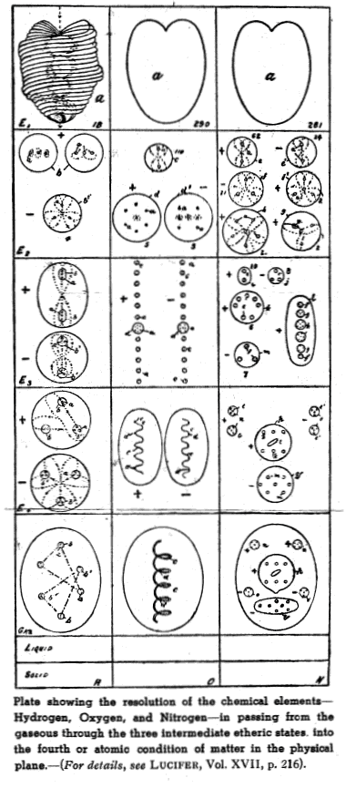
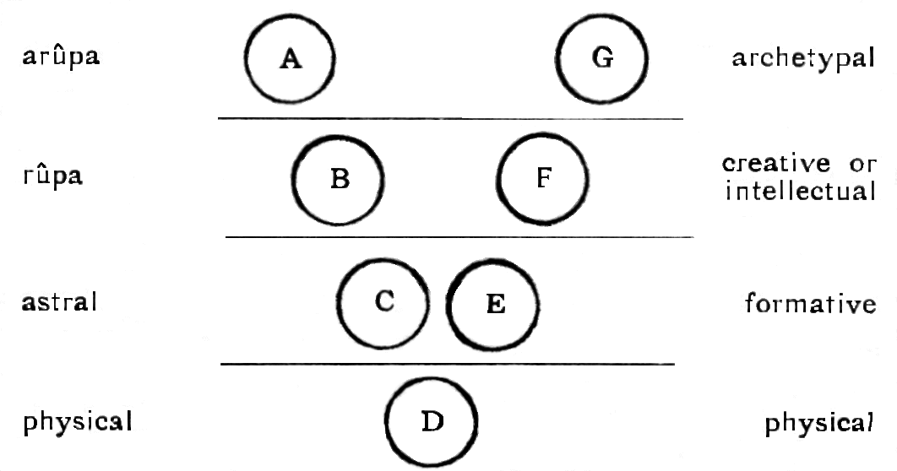

<html>

<head><meta name="viewport" content="height=device-height,width=device-width">
<meta http-equiv="Content-Type" content="text/html; charset=utf-8">
<title>The Ancient Wisdom</title>

<!-- google-analytics.com  START  (aync)-->
<script type="text/javascript">

  var _gaq = _gaq || [];
  _gaq.push(['_setAccount', 'UA-15825841-1']);
  _gaq.push(['_trackPageview']);

  (function() {
    var ga = document.createElement('script'); ga.type = 'text/javascript'; ga.async = true;
    ga.src = ('https:' == document.location.protocol ? 'https://ssl' : 'http://www') + '.google-analytics.com/ga.js';
    var s = document.getElementsByTagName('script')[0]; s.parentNode.insertBefore(ga, s);
  })();

</script>
<!-- google-analytics.com  END  -->

<!-- Histats.com  START  (aync)-->
<script type="text/javascript">var _Hasync= _Hasync|| [];
_Hasync.push(['Histats.start', '1,1087503,4,0,150,30,00000000']);
_Hasync.push(['Histats.fasi', '1']);
_Hasync.push(['Histats.track_hits', '']);
(function() {
    var hs = document.createElement('script'); hs.type = 'text/javascript'; hs.async = true;
    hs.src = ('http://s10.histats.com/js15_as.js');
    (document.getElementsByTagName('head')[0] || document.getElementsByTagName('body')[0]).appendChild(hs);
  })();</script>
<noscript><a href="http://www.histats.com" target="_blank"></a></noscript>
<!-- Histats.com  END  -->

</head>

<body>

<h1 style="margin-left: 30px; margin-right: 30px;" align="center">
<font face="Arial">The Ancient Wisdom</font></h1>
<p style="margin-left: 30px; margin-right: 30px;" align="center">
<font color="#400080" size="2" face="Arial">by </font></p>
<h1 style="margin-left: 30px; margin-right: 30px;" align="center">
<font size="2" face="Arial">Annie Besant </font></h1>
<p style="margin-left: 30px; margin-right: 30px;" align="center">
<font size="2" face="Arial">Theosophical Publishing House, Adyar</font></p>
<p style="margin-left: 30px; margin-right: 30px;" align="center">
<font face="Arial">
<font color="#8000ff"><b><font color="#000000"><span style="font-weight: 400;">
<font size="2">1911 </font></span></font></b></font><font size="2">&nbsp; </font>
</font></p>
<div align="center">
	<table id="table5" border="3" width="78%">
		<tr>
			<td>
			<p style="margin-left: 30px;" align="center">
			<font color="#400080" face="Arial"><strong>CONTENTS</strong></font></td>
		</tr>
		<tr>
			<td>
			<p style="margin-left: 30px;" align="left">
			<font color="#400080" face="Arial">
			<strong style="font-weight: 400;">I.
			<a href="#physical">
			THE PHYSICAL PLANE</a></strong></font></td>
		</tr>
		<tr>
			<td>
			<p style="margin-left: 30px;" align="left">
			<font color="#400080" face="Arial">
			<strong style="font-weight: 400;">II.
			<a href="#astral">
			THE ASTRAL PLANE</a></strong></font></td>
		</tr>
		<tr>
			<td>
			<p style="margin-left: 30px;" align="left">
			<font color="#400080" face="Arial">
			<strong style="font-weight: 400;">III.
			<a href="#kamaloka">
			KÂMALOKA</a></strong></font></td>
		</tr>
		<tr>
			<td>
			<p style="margin-left: 30px;" align="left">
			<font color="#400080" face="Arial">
			<strong style="font-weight: 400;">IV.
			<a href="#mental">
			THE MENTAL PLANE</a></strong></font></td>
		</tr>
		<tr>
			<td>
			<p style="margin-left: 30px;" align="left">
			<font color="#400080" face="Arial">
			<strong style="font-weight: 400;">V.
			<a href="#devachan">
			DEVACHAN</a></strong></font></td>
		</tr>
		<tr>
			<td>
			<p style="margin-left: 30px;" align="left">
			<font color="#400080" face="Arial">
			<strong style="font-weight: 400;">VI.
			<a href="#buddhic">
			THE BUDDHIC AND NIRVANIC PLANES</a></strong></font></td>
		</tr>
		<tr>
			<td>
			<p style="margin-left: 30px;" align="left">
			<font color="#400080" face="Arial">
			<strong style="font-weight: 400;">VII.
			<a href="#reincarnation">
			REINCARNATION</a></strong></font></td>
		</tr>
		<tr>
			<td>
			<p style="margin-left: 30px;" align="left">
			<font color="#400080" face="Arial">
			<strong style="font-weight: 400;">VIII.
			<a href="#reincarnation2">
			REINCARNATION (CONTINUED)</a> </strong></font></td>
		</tr>
		<tr>
			<td>
			<p style="margin-left: 30px;" align="left">
			<font color="#400080" face="Arial">
			<strong style="font-weight: 400;">IX.
			<a href="#karma">
			KARMA</a></strong></font></td>
		</tr>
		<tr>
			<td>
			<p style="margin-left: 30px;" align="left">
			<font color="#400080" face="Arial">
			<strong style="font-weight: 400;">X.
			<a href="#law">THE 
			LAW OF SACRIFICE</a></strong></font></td>
		</tr>
		<tr>
			<td>
			<p style="margin-left: 30px;" align="left">
			<font color="#400080" face="Arial">
			<strong style="font-weight: 400;">XI.
			<a href="#man">MAN&#39;S 
			ASCENT</a></strong></font></td>
		</tr>
		<tr>
			<td>
			<p style="margin-left: 30px;" align="left">
			<font color="#400080" face="Arial">
			<strong style="font-weight: 400;">XII.
			<a href="#building">
			BUILDING A KOSMOS</a></strong></font></td>
		</tr>
	</table>
</div>
<p style="margin-left: 30px; margin-right: 30px;" align="center">
<font color="#000099" face="Arial"><b>PREFACE</b></font></p>
<p style="margin-left: 30px; margin-right: 30px;" align="justify">
<font color="#000000" face="Arial">This book is intended to place in the hands of the general 
reader an epitome of theosophical teachings, sufficiently plain to serve the 
elementary student, and sufficiently full to lay a sound foundation for further 
knowledge. It is hoped that it may serve as an introduction to the profounder 
works of H.P.Blavatsky, and be a convenient steppingstone to their study.</font></p>
<p style="margin-left: 30px; margin-right: 30px;" align="justify">
<font color="#000000" face="Arial">Those who have learned a little of the Ancient Wisdom know 
the illumination, the peace, the joy, the strength, its lessons have brought 
into their lives. That this book may win some to con its teachings, and to prove 
for themselves their value, is the prayer with which it is sent forth into the 
world.</font></p>
<p style="margin-left: 30px; margin-right: 30px;">
<font color="#000000" face="Arial">Annie Besant, </font></p>
<p style="margin-left: 30px; margin-right: 30px;">
<font color="#000000" face="Arial">August 1897</font></p>
<hr>
<p style="margin-left: 30px;" align="justify"><font face="Arial">(NOTE- At the beginning of the 
original print, there is introduction explaining the underlying unity of all 
religions. Many readers might find it difficult to understand terms in various 
religions. So this section is given at the end, in case anybody wants to read. 
So we start here with first chapter The Physical Plane ) </font> </p>
<p style="margin-left: 30px; margin-right: 30px;" align="center">
<font face="Arial">
<br>
<font color="#000099"><b>CHAPTER I</b></font></font></p>
<p style="margin-left: 30px; margin-right: 30px;" align="center">
<font color="#000099" face="Arial"><b>THE <a name="PHYSICAL">PHYSICAL</a> PLANE</b></font></p>
<p style="text-align: justify; margin-left: 30px; margin-right: 30px;">
<font face="Arial">We have just seen that the source from which a universe proceeds is a manifested 
Divine Being, to whom in the modern form of the Ancient Wisdom the name LOGOS, 
or Word has been given. The name is drawn from Greek Philosophy, but perfectly 
expresses the ancient idea, the Word which emerges from the Silence, the Voice, 
the Sound, by which the worlds come into being. We <font color="#000000">must 
now trace the evolution of spirit-matter, in order that we may understand 
something of the nature of the materials with which we have to deal on the 
physical plane, or physical world. For it is in the potentialities wrapped up, 
involved, in the spirit-matter of the physical world that lies the possibility 
of evolution. The whole process is an unfolding, self-moved from within and 
aided by intelligent beings without, who can retard or quicken evolution, but 
cannot transcend the capacities inherent in the materials. Some idea of these 
earliest stages of the world’s “becoming” is therefore necessary, although any 
attempt to go into minute details would carry us far beyond the limits of such 
an elementary treatise as the present. A very cursory sketch must suffice. <b>
<font color="#ff00ff">(Page 41) </font></b></font></font></p>
<p style="text-align: justify; margin-left: 30px; margin-right: 30px;">
<font color="#000000" face="Arial">Coming forth from the depths of the One Existence, from 
the ONE beyond all thought and all speech, a LOGOS, by imposing on Himself a 
limit, circumscribing voluntarily the range of His own Being, becomes&nbsp; the 
manifested God, and tracing the limiting sphere of His activity thus outlines 
the area of His universe. Within that sphere the universe is born, is evolved, 
and dies ; it lives, it moves, it has its being in Him ; its matter is His 
emanation ; its forces and energies are currents of His Life ; He is immanent in 
every atom, all-pervading, all-sustaining, all-evolving ; He is its source and 
its end, its cause and its object, its centre and circumference ; it is built on 
Him as its sure foundation, it breathes in Him as its encircling space ; He is 
in everything and everything in Him. Thus have the sages of the Ancient Wisdom 
taught us of the beginning of&nbsp; the manifested worlds.</font></p>
<p style="text-align: justify; margin-left: 30px; margin-right: 30px;">
<font color="#000000" face="Arial">From the same source we learn of the Self-unfolding of the 
LOGOS into a threefold form ; the First LOGOS, the Root of all being ; from Him 
the Second, manifesting the two aspects of Life and Form, the primal duality, 
making the two poles of nature between which the web of the universe is to be 
woven – Life-Form, Spirit-Matter, Positive-Negative, Active-Receptive, 
Father-Mother of the worlds. Then the Third LOGOS, the Universal Mind, that in 
which all archetypically exists, the source of beings, the fount of fashioning 
energies, the treasure house in which are stored up all the archetypal forms 
which are to be brought forth and elaborated in lower kinds <b>
<font color="#ff00ff">(Page 42)</font></b> of matter during the evolution of the 
universe. These are the fruits of past universes, brought over as seeds for the 
present. <br>
<br>
The phenomenal spirit and matter of any universe are finite in their extent and 
transitory in their duration, but the roots of spirit and matter are eternal. 
The root of matter (Mulâprakriti ) has been said by a profound writer to be 
visible to the LOGOS as a veil thrown over the One existence, the supreme 
Brahman (Parabrahman) –to use the ancient name. </font></p>
<p style="text-align: justify; margin-left: 30px; margin-right: 30px;">
<font color="#000000" face="Arial">It is this “veil” which the LOGOS assumes for the purpose 
of manifestation, using it for the self-imposed limit which makes activity 
possible. From this He elaborates the matter of His universe, being Himself its 
informing, guiding, and controlling life. ( Hence He is called “The Lord of Mâyâ” 
in some Eastern Scriptures, Mâyâ, or illusion, being the principle of form; form 
is regarded as illusory, from its transitory nature and perpetual 
transformations, the life which expresses itself under the veil of form being 
the reality).</font></p>
<p style="text-align: justify; margin-left: 30px; margin-right: 30px;">
<font color="#000000" face="Arial">Of what occurs on the two higher planes of the universe, 
the seventh and sixth, we can form but the haziest conception. The energy of the 
LOGOS as whirling motion of inconceivable rapidity “digs holes in space” in this 
root matter, and this vortex of life encased in a film of the root of matter is 
the primary atom; these and their aggregations, spread throughout the universe, 
form all the subdivisions of spirit-matter of the highest or seventh plane. The 
sixth plane is formed by some of the <b><font color="#ff00ff">(Page 43)</font></b> 
countless myriads of these primary atoms, setting up a vortex in the coarsest 
aggregations of their own plane, and this primary atom en-walled with spiral 
strands of the coarsest combinations of the seventh plane becomes the finest 
unit of spirit-matter, or atom of the sixth plane. These sixth plane atoms and 
their endless combinations form the subdivisions of the spirit-matter of the 
sixth plane.</font></p>
<p style="text-align: justify; margin-left: 30px; margin-right: 30px;">
<font color="#000000" face="Arial">The sixth-plane-atom, in its turn, sets up a vortex in the 
coarsest aggregations of its own plane, and, with these coarsest aggregations as 
a limiting wall, becomes the finest&nbsp; unit of spirit-matter, or atom, of the 
fifth plane. Again, these fifth-plane atoms, and their combinations form the 
subdivisions of the spirit-matter of the fifth plane. The process is repeated to 
form successively the spirit-matter of the fourth, the third, the second, and 
the first planes. These are the seven great regions of the universe, so far as 
their material constituents are concerned. A clearer idea of them will be gained 
by analogy when we come to master the modifications of the spirit-matter of our 
own physical world.&nbsp;&nbsp; </font></p>
<p style="margin-left: 30px; margin-right: 30px;">
<font color="#000000" face="Arial">(The student may find the conception clearer if he thinks 
of the fifth plane atoms as Ātmā ; those of the fourth plane as Ātmā enveloped 
in Buddhi-matter ; those of the third plane as Ātmā enveloped in Buddhi and 
Manas-matter ; those of the second plane as Ātmā enveloped in Buddhi-Manas- and 
Kāma-matter ; those of the lowest as Ātmā enveloped in Buddhi-Manas-Kāma and 
Sthûla-matter. Only the outermost is active in each, but the inner are there, 
though latent, ready to come into activity on the upward arc of evolution).</font></p>
<p style="text-align: justify; margin-left: 30px; margin-right: 30px;">
<font color="#000000" face="Arial">The world “spirit-matter” is used designedly. <b>
<font color="#ff00ff">(Page 44)</font></b> At implies the fact that there is no 
such thing as “dead” matter ; all matter is living, the tiniest particles are 
lives. Science speaks truly in affirming : “No force without matter, no matter 
without force.” They are wedded together in an indissoluble marriage throughout 
the ages of the life of a universe, and none can wrench them apart. Matter is 
form, and there is no form which does not express a life ; spirit is life, and 
there is no life that is not limited by form. Even the LOGOS, the Supreme Lord, 
has during manifestation the universe as His form, and so down to the atom.</font></p>
<p style="text-align: justify; margin-left: 30px; margin-right: 30px;">
<font color="#000000" face="Arial">This involution of the life of the LOGOS as the ensouling 
force in every particle, and its successive enwrapping in the spirit-matter of 
every plane, so that the materials of each plane have within them in a hidden, 
or latent condition, all the form and force possibilities of all the planes 
above them as well as those of their own – these two facts make evolution 
certain and give to the very lowest particle the hidden potentialities which 
will render it fit – as they become active powers – to enter into the forms of 
the highest beings. In fact, evolution may be summed up in a phrase : it is 
latent potentialities becoming active powers.&nbsp; <br>
<br>
The second great wave&nbsp; of evolution, the evolution of form, and the third great 
wave, the evolution of self-consciousness, will be dealt with later on. These 
three currents of evolution are distinguishable on our earth in connection with 
humanity ; the making of the materials, the building of the house, and the 
growing <b><font color="#ff00ff">(Page 45)</font></b> of the tenant of the 
house, or, as said above, the evolution of spirit-matter, the evolution of form, 
the evolution of self-consciousness.If the reader can grasp and retain this 
idea, he will find a helpful clue to guide him through the labyrinth of facts.&nbsp;
<br>
<br>
We can now turn to the detailed examination of the physical plane, that on which 
our world exists and to which our bodies belong. <br>
<br>
Examining the materials belonging to this plane, we are struck by their immense 
variety, the innumerable differences of constitution in the objects around us, 
minerals, vegetables, animals, all differing in their constituents : matter hard 
and soft, transparent and opaque, brittle and ductile, bitter and sweet, 
pleasant and nauseous, coloured and colourless. Out of this confusion three 
subdivisions of matter emerge as a fundamental classification : matter is solid, 
liquid, gaseous. Further examination shows that these solids, liquids and gases 
are made up by combinations of much simpler bodies, called by chemists 
“elements,” and that these elements may exist in a solid, liquid, or gaseous 
condition without changing their respective natures.</font></p>
<p style="text-align: justify; margin-left: 30px; margin-right: 30px;">
<font color="#000000" face="Arial">Thus the chemical element oxygen is a constituent of wood, 
and in combination with other elements forms the solid wood fibres ; it exists 
in the sap with another element, yielding a liquid combination as water ; and it 
exists also in it by itself as gas. Under these three conditions it is oxygen. 
Further , pure oxygen can be reduced from a gas to a liquid, <b>
<font color="#ff00ff">(Page 46)</font></b> and from a liquid to a solid, 
remaining pure oxygen all the time, and so with other elements. We thus obtain 
as three subdivisions, or conditions of matter on the physical plane, solid, 
liquid, gas. Searching further, we find a fourth condition, ether, and a minute 
search reveals that this ether exists in four conditions as well defined as 
those of solid, liquid and gas ; to take oxygen again as an example : as it may 
be reduced from the gaseous condition to the liquid and the solid, so it may be 
raised from the gaseous through four etheric stages the last of which consists 
of the ultimate physical atom, the disintegration of the atom taking matter out 
of the physical plane altogether, and into the next plane above. </font></p>
<h1><font face="Arial"></font></h1>
<p style="margin-left: 30px; margin-right: 30px;">&nbsp;</p>
<p style="text-align: justify; margin-left: 30px; margin-right: 30px;">
<font color="#000000" face="Arial">In the annexed plate three gases are shown in the gaseous 
and four etheric states ; it will be observed that the structure of the ultimate 
physical atom is the same for all, and that the variety of the “elements” is due 
to the variety of ways in which these ultimate physical atoms combine. Thus the 
seventh subdivision of physical spirit-matter is composed of homogeneous atoms ; 
the sixth is composed of fairly simple heterogeneous combinations of these, each 
combination behaving as a unit ; the fifth is composed of more complex 
combinations, and the fourth of still more complex ones, but in all cases these 
combinations act as units . </font></p>
<p style="text-align: justify; margin-left: 30px; margin-right: 30px;">
<font color="#000000" face="Arial">The third subdivision consists of yet more complicated 
combinations, regarded by the chemist as gaseous atoms or “elements,” and on 
this subdivision many of the combinations have received special names, oxygen, 
hydrogen, <b><font color="#ff00ff">(Page 47)</font></b> nitrogen, chlorine, 
etc., and each newly discovered combination now receives its name ; the second 
subdivision consists of combinations in the liquid condition, whether regarded 
as elements such as bromine, or as combinations such as water or alcohol ; the 
first subdivision is composed of all solids, again whether regarded as elements, 
such as iodine, gold, lead, etc., or as compounds, such as wood, stone, chalk, 
and so on.</font></p>
<p style="text-align: justify; margin-left: 30px; margin-right: 30px;">
<font color="#000000" face="Arial">The physical plane may serve the student as a model from 
which by analogy he may gain an idea of the subdivisions of spirit-matter of 
other planes. When a Theosophist speaks of a plane, he means a region throughout 
which spirit-matter exists, all whose combinations are derived from a particular 
set of atoms; these atoms, in turn, are units possessing similar organisations, 
whose life is the life of the LOGOS veiled in fewer or more coverings according 
to the plane, and whose form consists of the solid, or lowest subdivision of 
matter, of the plane immediately above. A plane is thus a division in nature, as 
well as a metaphysical idea. </font></p>
<p style="text-align: justify; margin-left: 30px; margin-right: 30px;">
<font color="#000000" face="Arial">Thus far we have been studying the results in our own 
physical world of the evolution of spirit-matter in our division of the first or 
lowest plane of our system. For countless ages the fashioning of materials has 
been going on, the current of the evolution of spirit-matter, and in the 
materials of our globe we see the outcome at the present time. But when we begin 
to study the inhabitants of the physical plane, we come to the evolution of 
form, <b><font color="#ff00ff">( Page 48</font></b>) the building of organisms 
out of these materials.&nbsp; <br>
<br>
When the evolution of materials had reached a sufficiently advanced state, the 
second great life-wave from the LOGOS gave the impulse to the evolution of form, 
and He became the organising force&nbsp;(As Âtmâ-Buddhi, indivisible in action, and 
therefore spoken of as the Monad. <em>All forms</em> have Âtmâ-Buddhi as 
controlling life.) - of His Universe, countless hosts of entities, entitled 
Builders --&nbsp; ( Some are lofty spiritual Intelligences, but the name covers even 
the building Nature-spirits The subject is dealt with in Chapter XII ) - taking 
part in the building up of forms out of combinations of spirit-matter. The life 
of the LOGOS abiding in each form is its central, controlling, and directing 
energy.</font></p>
<p style="text-align: justify; margin-left: 30px; margin-right: 30px;">
<font color="#000000" face="Arial">This building of forms on the higher planes cannot here be 
conveniently studied in detail; it may suffice to say that all forms exist as 
Ideas in the mind of the LOGOS, and that in this second life-wave these were 
thrown outwards as models to guide the Builders.&nbsp; On the third and second planes 
the early spirit-matter combinations are designed to give it facility in 
assuming shapes organised to act as units, and gradually to increase its 
stability when shaped into an organism.</font></p>
<p style="text-align: justify; margin-left: 30px; margin-right: 30px;">
<font color="#000000" face="Arial">This process went on upon the third and second planes, in 
what are termed the three elemental kingdoms, the combinations of matter formed 
therein being called generally “elemental essence,” and this essence being 
moulded into forms by aggregations, the forms <b><font color="#ff00ff">(Page 49)</font></b> 
enduring for a time and then disintegrating. The outpoured life, or Monad, 
evolved through these kingdoms and reached in due course the physical plane, 
where it began to draw together the ethers and hold them in filmy shapes, in 
which life-currents played and into which the denser materials were built, 
forming the first minerals. In these are beautifully shown – as may be seen by 
reference to any book on crystallurgy – the numerical and geometrical lines on 
which forms are constructed, and from them may be gathered plentiful evidence 
that life is working in all minerals, although much “cribbed, cabined, and 
confined.” The fatigue to which metals are subject is another sign that they are 
living things, but it is here enough to say that the occult doctrine so regards 
them, knowing the already-mentioned processes by which life has been involved in 
them.</font></p>
<p style="text-align: justify; margin-left: 30px; margin-right: 30px;">
<font color="#000000" face="Arial">Great stability of form having been gained in many of the 
minerals, the evolving Monad elaborated greater plasticity of form in the 
vegetable kingdom, combining this with stability of organisation. These 
characteristics found a yet more balanced expression in the animal world, and 
reached their culmination of equilibrium in man, whose physical body is made up 
of constituents of most unstable equilibrium, thus giving great adaptability, 
and yet which is held together by a combining central force which resists 
general disintegration even under the most varied conditions.</font></p>
<p style="text-align: justify; margin-left: 30px; margin-right: 30px;">
<font color="#000000" face="Arial">Man’s physical body has two main divisions : the <em>dense</em> 
body, made of constituents from the three <b><font color="#ff00ff">(Page 50)</font></b> 
lower levels of the physical plane, solids, liquids, and gases: and the etheric 
double, violet-gray or blue-gray in colour, interpenetrating the dense body and 
composed of materials drawn from the four higher levels. The general function of 
the physical body is to receive contacts from the physical world, and send the 
report of them inwards, to serve as materials from which the conscious entity 
inhabiting the body is to elaborate knowledge. Its etheric portion has also the 
duty of acting as a medium through which the life-currents poured out from the 
sun can be adapted to the uses of the denser particles.</font></p>
<p style="text-align: justify; margin-left: 30px; margin-right: 30px;">
<font color="#000000" face="Arial">The sun is the great reservoir of the electrical, 
magnetic, and vital forces for our system, and it pours out abundantly these 
streams of life-giving energy. They are taken in by the etheric doubles of all 
minerals, vegetables, animals, and men, and are by them transmuted into the 
various life-energies needed by each entity. ( When thus appropriated the life 
is called Prāna, and it becomes the life-breath of every creature. Prāna is but 
a name for the universal life while it is taken in by an entity and is 
supporting its separated life.) </font></p>
<p style="text-align: justify; margin-left: 30px; margin-right: 30px;">
<font color="#000000" face="Arial">The etheric doubles draw in, specialise, and distribute 
them over their physical counterparts. It has been observed that in vigorous 
health much more of the life-energies are transmuted than the physical body 
requires for its own support, and that the surplus is rayed out and is taken up 
and utilised by the weaker. What is technically called the health aura is the 
part of the etheric double that extends a few inches from the <b>
<font color="#ff00ff">(Page 51) </font></b>whole surface of the body and shows 
radiating lines, like the radii of a sphere, going outwards in all directions. 
These lines droop when vitality is diminished below the point of health, and 
resume their radiating character with renewed vigour. It is this vital energy, 
specialised by the etheric double, which is poured out by the mesmeriser for the 
restoration of the weak and for the cure of disease, although he often mingles 
with it currents of a more rarefied kind. Hence the depletion of vital energy 
shown by the exhaustion of the mesmeriser who prolongs his work to excess.</font></p>
<p style="text-align: justify; margin-left: 30px; margin-right: 30px;">
<font color="#000000" face="Arial">Man’s body is fine or coarse in its texture according to 
the materials drawn from the physical plane for its composition. Each 
subdivision of matter yields finer or coarser materials ; compare the bodies of 
a butcher and of a refined student ; both have solids in them, but solids of 
such different qualities. Further , we know that a coarse body can be refined, a 
refined body coarsened. The body is constantly changing ; each particle is a 
life, and the lives come and go. They are drawn to a body consonant with 
themselves, they are repelled from one discordant with themselves. All things 
live in rhythmical vibrations, all seek the harmonious and are repelled by 
dissonance.</font></p>
<p style="text-align: justify; margin-left: 30px; margin-right: 30px;">
<font color="#000000" face="Arial">A pure body repels coarse particles because they vibrate 
at rates discordant with its own ; a coarse body attracts them because their 
vibrations accord with its own. Hence if the body changes its rates of 
vibration, it gradually drives out of it the constituents that cannot fall into 
the new rhythm, and fills up their places by drawing in from external nature 
fresh constituents that are harmonious. <b><font color="#ff00ff">(Page 52)</font></b> 
Nature provides materials vibrating in all possible ways, and each body 
exercises its own selective action.</font></p>
<p style="text-align: justify; margin-left: 30px; margin-right: 30px;">
<font color="#000000" face="Arial">In the earlier building of human bodies this selective 
action was due to the Monad of form, but now that man is a self-conscious entity 
he presides over his own building. By his thoughts he strikes the keynote of his 
music, and sets up the rhythms that are the most powerful factors in the 
continual changes in his physical and other bodies. As his knowledge increases 
he learns how to build up his physical body with pure food, and so facilitates 
the tuning of it. He learns to live by the axiom of purification : “Pure food, 
pure mind, and constant memory of God.” As the highest creature living on the 
physical plane, he is the vice-regent of the LOGOS thereon, responsible, so far 
as his powers extend, for its order, peace, and good government ; and this duty 
he cannot discharge without these three requisites.</font></p>
<p style="text-align: justify; margin-left: 30px; margin-right: 30px;">
<font color="#000000" face="Arial">The physical body, thus composed of elements drawn from 
all the subdivisions of the physical plane, is fitted to receive and to answer 
impression from it of every kind. Its first contacts will be of the simplest and 
crudest sorts, and as the life within it thrills out in answer to the stimulus 
from without, throwing its molecules into responsive vibrations, there is 
developed all over the body the sense of touch, the recognition of something 
coming into contact with it. As specialised sense-organs <b>
<font color="#ff00ff">(Page 53)</font></b> are developed to receive special 
kinds of vibrations, the value of the body increases as a future vehicle for a 
conscious entity on the physical plane. The more impressions it can answer to, 
the more useful does it become ; for only those to which it can answer can reach 
the consciousness. </font></p>
<p style="text-align: justify; margin-left: 30px; margin-right: 30px;">
<font color="#000000" face="Arial">Even now there are myriads of vibrations pulsing around us 
in physical nature from the knowledge of which we are shut out because of the 
inability of our physical vehicle to receive and vibrate in accord with them. 
Unimagined beauties, exquisite sounds, delicate subtleties, touch the walls of 
our prison house and pass on unheeded. Not yet is developed the perfect body 
that shall thrill to every pulse in nature as the aeolian harp to the zephyr.</font></p>
<p style="text-align: justify; margin-left: 30px; margin-right: 30px;">
<font color="#000000" face="Arial">The vibrations that the body is able to receive, it 
transmits to physical centres, belonging to its highly complicated nervous 
system. The etheric vibrations which accompany all the vibrations of the denser&nbsp; 
physical constituents are similarly received by the etheric double, and 
transmuted to its corresponding centres. Most of the vibrations in the dense 
matter are changed into chemical heat, and other forms of physical energy; the 
etheric give rise to magnetic and electric action, and also pass on the 
vibrations to the astral body, whence, as we shall see later, they reach the 
mind.</font></p>
<p style="text-align: justify; margin-left: 30px; margin-right: 30px;">
<font color="#000000" face="Arial">Thus information about the external world reaches the 
conscious entity enthroned in the body, the Lord of the body, as he is sometimes 
called. As the channels of information develop and are exercised, the conscious 
entity <b><font color="#ff00ff">(Page 54)</font></b> grows by the materials 
supplied to his thought by them, but so little is man yet developed that even 
the etheric double is not yet sufficiently harmonised to regularly convey to the 
man impressions received by it independently of its denser comrade, or to 
impress them on his brain. Occasionally it succeeds in doing so, and then we 
have the lowest form of clairvoyance, the seeing of the etheric doubles of 
physical objects, and of things that have etheric bodies as their lowest 
vesture.</font></p>
<p style="text-align: justify; margin-left: 30px; margin-right: 30px;">
<font color="#000000" face="Arial">Man dwells, as we shall see, in various vehicles, 
physical, astral, and mental and it is important to know and remember that as we 
are evolving upwards, the lowest of the vehicles, the dense physical, is that 
which consciousness first controls and rationalises. The physical brain is the 
instrument of consciousness in waking life on the physical plane, and 
consciousness works in it – in the undeveloped man – more effectively than in 
any other vehicle. Its potentialities are less than those of the subtler 
vehicles, but its actualities are greater, and the man knows himself&nbsp; as “ I “ 
in the physical body ere he finds himself elsewhere. Even if he be more highly 
developed than the average man, he can only show as much of himself down here as 
the physical organism permits, for consciousness can manifest on the physical 
plane only so much as the physical vehicle can carry.</font></p>
<p style="text-align: justify; margin-left: 30px; margin-right: 30px;">
<font color="#000000" face="Arial">The dense and etheric bodies are not normally separated 
during earth life; they normally function together, as the lower and higher 
strings of a single <b><font color="#ff00ff">(Page 55)</font></b> instrument 
when a chord is struck, but they also carry on separate though coordinated 
activities. Under conditions of weak health or nervous excitement the etheric 
double may in great part be abnormally extruded from its dense counterpart ; the 
latter then becomes very dully conscious , or entranced, according to the less 
or greater amount of the etheric matter extruded. Anesthetics drive out the 
greater part of the etheric double, so that consciousness cannot affect or be 
affected by the dense body, its bridge of communication being broken. In the 
abnormally organised person called mediums, dislocation of the etheric and dense 
bodies easily occurs, and the etheric double, when extruded, largely supplies 
the physical basis for “materialisations.”</font></p>
<p style="text-align: justify; margin-left: 30px; margin-right: 30px;">
<font color="#000000" face="Arial">In sleep, when the consciousness leaves the physical 
vehicle which it uses during waking life, the dense&nbsp; and etheric bodies remain 
together, but in the physical dream life they function to some extent 
independently. Impressions experienced during waking life are reproduced by the 
automatic action of the body, and both the physical and etheric brains are 
filled with disjointed fragmentary pictures, the vibrations as it were, jostling 
each other, and causing the most grotesque combinations. Vibrations from outside 
also affect both, and combinations often set up during waking life are easily 
called into activity by currents from the astral world of like nature with 
themselves. The purity or impurity of waking thoughts will largely govern the 
pictures arising in dreams, <b><font color="#ff00ff">(Page 56)</font></b> 
whether spontaneously set up or induced from without.</font></p>
<p style="text-align: justify; margin-left: 30px; margin-right: 30px;">
<font color="#000000" face="Arial">At what is called death, the etheric double is drawn away 
from its dense counterpart by the escaping consciousness ; the magnetic tie 
existing between them during life earth life is snapped asunder, and for some 
hours the consciousness remains enveloped in this etheric garb. In this it 
sometimes appears to those with whom it is closely bound up, as a cloudy figure, 
very dully conscious and speechless – the wraith. It may also be seen, after the 
conscious entity has deserted it, floating over the grave where its dense 
counterpart is buried, slowly disintegrating as time goes on.</font></p>
<p style="text-align: justify; margin-left: 30px; margin-right: 30px;">
<font color="#000000" face="Arial">When the time comes for rebirth, the etheric double is 
built in advance of the dense body, the latter exactly following it in its 
ante-natal development. These bodies may be said to trace the limitations within 
which the conscious entity will have to live and work during his life, a subject 
that will be more fully explained in Chapter IX on Karma.<br>
&nbsp;</font></p>
<p style="margin-left: 30px; margin-right: 30px;" align="center">
<font color="#9933ff"><b><font color="#000099" face="Arial">CHAPTER -2- <br>
<br>
THE <a name="ASTRAL">ASTRAL</a> PLANE </font></b></font></p>
<p style="text-align: justify; margin-left: 30px; margin-right: 30px;">
<font face="Arial">
<font color="#9933ff"><b><font color="#ff00ff">(Page 57)</font></b></font>
<font color="#000000">The astral plane is the region of the universe next to the 
physical, if the word “next” may be permitted in such a connection. Life there 
is more active than on the physical plane, and form is more plastic. The 
spirit-matter of that plane is more highly vitalised and finer than any grade of 
spirit-matter in the physical world. For , as we have seen, the ultimate 
physical atom, the constituent of the rarest physical ether, has for its 
sphere-wall innumerable aggregations of the coarsest astral matter. The word 
“next” is, however, inappropriate, as suggesting the idea that the planes of the 
universe are arranged as concentric circles, one ending where the next begins. 
Rather they are concentric interpenetrating spheres, not separated from each 
other by distance but by difference of constitution.</font></font></p>
<p style="text-align: justify; margin-left: 30px; margin-right: 30px;">
<font color="#000000" face="Arial">As air permeates water, as ether permeates the densest 
solid, so does astral matter permeate all physical. The astral world is above 
us, below us, on every side of us, through us; we live and move in it, but it is 
intangible, invisible, inaudible, imperceptible, because the prison of the 
physical body shuts us <b><font color="#ff00ff">(Page 58)</font></b> away from 
it, the physical particles being too gross to be set in vibration by astral 
matter.</font></p>
<p style="text-align: justify; margin-left: 30px; margin-right: 30px;">
<font color="#000000" face="Arial">In this chapter we shall study the plane in its general 
aspects, leaving on one side for separate consideration those special conditions 
of life on the astral plane surrounding the human entities who are passing 
through it on their way from earth to heaven. ( Devachan, the happy or bright 
state, is the Theosophical name for heaven. Kâmaloka, the place of desire, is 
the name given to the conditions of intermediate life on the astral plane).</font></p>
<p style="text-align: justify; margin-left: 30px; margin-right: 30px;">
<font color="#000000" face="Arial">The spirit-matter of the astral plane exists in seven 
subdivisions, as we have seen in the spirit-matter of the physical. There, as 
here, there are numberless combinations, forming the astral solids, liquids, 
gases, and ethers. But most material forms there have a brightness, a 
translucency, as compared to forms here, which have caused the epithet astral, 
or starry, to be applied to them – an epithet which is, on the whole, 
misleading, but is too firmly established by use to be changed. As there are no 
specific names for the subdivisions of astral spirit-matter, we may use the 
terrestrial designations. The main idea to be grasped is that astral objects are 
combinations of astral matter, as physical objects are combinations of physical 
matter, and that the astral world scenery much resembles that of earth in 
consequence of its being largely made up of the astral duplicates of physical 
objects.</font></p>
<p style="text-align: justify; margin-left: 30px; margin-right: 30px;">
<font color="#000000" face="Arial">One peculiarity, however, arrests and confuses the 
untrained observer; partly because of the translucency&nbsp; of astral objects, <b>
<font color="#ff00ff">(Page 59)</font></b> and partly because of the nature of 
astral vision – consciousness being less hampered by the finer astral matter 
than when encased&nbsp; in the terrestrial – everything is transparent, its back is 
visible as its front, its inside as its outside. Some experience is needed, 
therefore, ere objects are correctly seen, and a person who has developed astral 
vision, but has not yet had much experience in its use, is apt to receive the 
most topsy-turvy impressions and to fall into the most astounding blunders. <br>
<br>
Another striking and at first bewildering characteristic of the astral world is 
the swiftness with which forms – especially when unconnected with any 
terrestrial matrix – change their outlines.</font></p>
<p style="text-align: justify; margin-left: 30px; margin-right: 30px;">
<font color="#000000" face="Arial">An astral entity will change his whole appearance with the 
most startling rapidity, for astral matter takes the form under every impulse of 
thought, the life swiftly remoulding the form to give itself new expression. As 
the great life-wave of the evolution of form passed downwards through the astral 
plane, and constituted on that plane the third elemental kingdom, the Monad drew 
round itself combinations of astral matter, giving to these combinations – 
entitled elemental essence – a peculiar vitality and the characteristic of 
responding to, and instantly taking shape under, the impulse of thought 
vibrations.</font></p>
<p style="text-align: justify; margin-left: 30px; margin-right: 30px;">
<font color="#000000" face="Arial">This elemental essence exists in hundreds of varieties on 
every subdivision of the astral plane, as though the air became visible here – 
as indeed it may seen in quivering waves under great heat – and were in constant 
undulatory motion with changing <b><font color="#ff00ff">(Page 60)</font></b> 
colours like mother-of-pearl.</font></p>
<p style="text-align: justify; margin-left: 30px; margin-right: 30px;">
<font color="#000000" face="Arial">This vast atmosphere of elemental essence is ever 
answering to vibrations caused by thoughts, feelings, and desires, and is thrown 
into commotion by a rush of any of these like bubbles in boiling water. ( C.W. 
Leadbeater, Astral Plane, p. 52). The duration of the form depends on the 
strength of the impulse to which it owes its birth ; the clearness of its 
outline depends on the precision of the thinking, and the colour depends on the 
quality – intellectual, devotional, passional – of the thought.</font></p>
<p style="text-align: justify; margin-left: 30px; margin-right: 30px;">
<font color="#000000" face="Arial">The vague loose thoughts which are so largely produced by 
undeveloped minds gather round themselves loose clouds of elemental essence when 
they arrive in the astral world, and drift about, attracted hither and thither 
to other clouds of similar nature, clinging round the astral bodies of persons 
whose magnetism attracts them – either good or evil – and after a while 
disintegrating, to again form a part of the general atmosphere of elemental 
essence. While they maintain a separate existence they are living entities, with 
bodies of elemental essence and thoughts as the ensouling lives, and they are 
then called artificial elementals, or thought-forms.</font></p>
<p style="text-align: justify; margin-left: 30px; margin-right: 30px;">
<font color="#000000" face="Arial">Clear, precise thoughts have each their own definite 
shapes, with sharp clean outlines, and show an endless variety of designs. They 
are shaped by vibrations set up by thought, just as on the physical plane we 
find figures which are shaped by vibrations set up by sound. “Voice-figures” 
offer a very fair analogy for “thought-figures,” for nature, with all <b>
<font color="#ff00ff">(Page 61)</font></b> her infinite variety, is very 
conservative of principles, and reproduces the same methods of working on plane 
after&nbsp; plane in her realms. <br>
<br>
These clearly defined artificial elementals have a longer and much more active 
life than their cloudy brethren, exercising a far stronger influence on the 
astral bodies (and through them on the minds)&nbsp; of those to whom they are 
attracted. They set up in them vibrations similar to their own, and thus 
thoughts spread from mind to mind without terrestrial expression. More than 
this: they can be directed by the thinker towards any person he desires to 
reach, their potency depending on the strength of his will and the intensity of 
his mental power. </font></p>
<p style="text-align: justify; margin-left: 30px; margin-right: 30px;">
<font color="#000000" face="Arial">Among average people the artificial elementals created by 
feeling or desire are more vigorous and more definite than those created by 
thought. Thus an outburst of anger will cause a very definitely outlined and 
powerful flash of red, and sustained anger will make a dangerous elemental, red 
in colour, and pointed, barbed, or otherwise qualified to injure. Love, 
according to its quality, will set up forms more or less beautiful in colour and 
design, all shades of crimson to the most exquisite and soft hues of rose, like 
the palest blushes of sunset or the dawn, clouds of tenderly strong protective 
shapes. Many a Mother’s loving prayers go to hover round her son as angel-forms, 
turning aside from him evil influences that perchance his own thoughts are 
attracting.</font></p>
<p style="text-align: justify; margin-left: 30px; margin-right: 30px;">
<font color="#000000" face="Arial">It is characteristic of these artificial elementals, <b>
<font color="#ff00ff">(Page 62)</font></b> when they are directed by the will 
towards any particular person, that they are animated by the one impulse of 
carrying out the will of their creator. A protective elemental will hover round 
its object, seeking any opportunity of warding off evil or attracting good – not 
consciously, but by a blind impulse, as finding there the line of least 
resistance.</font></p>
<p style="text-align: justify; margin-left: 30px; margin-right: 30px;">
<font color="#000000" face="Arial">So, also, an elemental ensouled by a malignant thought 
will hover round its victim seeking opportunity to injure. But neither the one 
nor the other can make any impression unless there be in the astral body of the 
object something skin to themselves, something that can answer accordingly to 
their vibrations, and thus enable them to attach themselves. If there be nothing 
in him of matter cognate to their own, then by a law of their nature they 
rebound from him along the path they pursued in going to him – the magnetic 
trace they have left – and rush to their creator with a force proportionate to 
that of their projection.&nbsp; Thus a thought of deadly hatred, failing to strike 
the object at which it was darted, has been known to slay its sender, while good 
thoughts sent to the unworthy return as blessings to him that poured them forth.</font></p>
<p style="text-align: justify; margin-left: 30px; margin-right: 30px;">
<font color="#000000" face="Arial">A very slight understanding of the astral world will thus 
act as a most powerful stimulus to right thinking, and will render heavy the 
sense of responsibility in regard to the thoughts and feelings, and desires that 
we let loose into this astral realm. Ravening beasts of prey, rending and 
devouring, are too many of the thoughts with which men people the <b>
<font color="#ff00ff">(Page 63)</font></b> astral plane. But they err from 
ignorance, they know not what they do. One of the objects of theosophical 
teaching, partly lifting up the veil of the unseen world, is to give men a 
sounder basis for conduct, a more rational appreciation of the causes of which 
the effects only are seen in the terrestrial world.</font></p>
<p style="text-align: justify; margin-left: 30px; margin-right: 30px;">
<font color="#000000" face="Arial">A few of its doctrines are more important in their ethical 
bearing than this of the creation and direction of thought-forms, or artificial 
elementals, for through it man learns that his mind does not concern himself 
alone, that his thoughts do not affect himself alone, but that he is ever 
sending out angels and devils into the world of men, for whose creation he is 
responsible, and for whose influences he is held accountable. Let men, then, 
know the law, and guide their thoughts thereby. </font></p>
<p style="text-align: justify; margin-left: 30px; margin-right: 30px;">
<font color="#000000" face="Arial">If, instead of taking artificial elementals separately, we 
take them in the mass, it is easy to realise the tremendous effect they have in 
producing national and race feelings, and thus in biasing and prejudicing the 
mind. We all grow up surrounded by an atmosphere crowded with elementals 
embodying certain ideas ; national prejudices, national ways of looking at all 
questions, national types of feelings and thoughts, all these play on us from 
our birth, aye, and before. We see everything through this atmosphere, every 
thought is more or less refracted by it, and our own astral bodies are vibrating 
in accord with it.</font></p>
<p style="text-align: justify; margin-left: 30px; margin-right: 30px;">
<font color="#000000" face="Arial">Hence the same idea will look quite different to the 
Hindu, an Englishman, a Spaniard, and a Russian ; some conceptions easy to <b>
<font color="#ff00ff">(Page 64)</font></b> the one will be almost impossible to 
the other, customs instinctively attractive to the one are instinctively odious 
to the other. We are all dominated by our national atmosphere, <em>i.e.</em>, by 
that portion of the astral world immediately surrounding us.</font></p>
<p style="text-align: justify; margin-left: 30px; margin-right: 30px;">
<font color="#000000" face="Arial">The thoughts of others, cast much in the same mould, play 
upon us and call out from us synchronous vibrations ; they intensify the points 
in which we accord with our surroundings and flatten away the differences, and 
this ceaseless action upon us through the astral body impresses on us the 
national half-mark and traces channels for mental energies into which they 
readily flow. Sleeping and waking , these currents play upon us, and our very 
unconsciousness of their action makes it the more effective. As most people are 
receptive rather than initiative in their nature, they act almost as automatic 
reproducers of the thoughts which reach them, and thus the national atmosphere 
is continually intensified.</font></p>
<p style="text-align: justify; margin-left: 30px; margin-right: 30px;">
<font color="#000000" face="Arial">When a person is beginning to be sensitive to astral 
influences, he will occasionally find himself suddenly overpowered or assailed 
by a quite inexplicable and seemingly irrational dread, which swoops upon him 
with even paralysing force. Fight against it as he may, he yet feels it, and 
perhaps resents it. Probably there are few who have not experienced this fear to 
some extent, the uneasy dread of an invisible something, the feeling of a 
presence, of “not being alone.” This arises partly from a certain hostility 
which animates the natural elemental world against the human, on account of the 
various <b><font color="#ff00ff">(Page 65</font></b>) destructive agencies 
devised by mankind on the physical plane and reacting on the astral, but is also 
largely due to the presence of so many artificial elementals of an unfriendly 
kind, bred by human minds.</font></p>
<p style="text-align: justify; margin-left: 30px; margin-right: 30px;">
<font color="#000000" face="Arial">Thoughts of hatred, jealousy, revenge, bitterness, 
suspicion, discontent, go out by millions crowding the astral plane with 
artificial elementals whose whole life is made of these feelings. How much also 
is there of vague distrust and suspicion poured out by the ignorant against all 
whose ways and appearance are alien and unfamiliar. The blind distrust of all 
foreigners, the surly contempt, extending in many districts even towards 
inhabitants of another country – these things also contribute evil influences to 
the astral world. There being so much of these things among us, we create a 
blindly hostile army on the astral plane, and this is answered in our own astral 
bodies by a feeling of dread, set up by the antagonistic vibrations that are 
sensed, but not understood.</font></p>
<p style="text-align: justify; margin-left: 30px; margin-right: 30px;">
<font color="#000000" face="Arial">Outside the class of artificial elementals, the astral 
world is thickly populated, even excluding, as we do for the present, all the 
human entities who have lost their physical bodies by death. There are great 
hosts of natural elementals, or nature-spirits, divided into five main classes 
–the elementals of the ether, the fire, the air, the water, and the earth ; the 
last four groups have been termed, in mediaeval occultism, the Salamanders, 
Sylphs, Undines, and Gnomes (needless to say there are two other classes, 
completing the seven, not concerning us here, as they are <b>
<font color="#ff00ff">(Page 66)</font></b> still unmanifested). </font></p>
<p style="text-align: justify; margin-left: 30px; margin-right: 30px;">
<font color="#000000" face="Arial">These are the true elementals, or creatures of the 
elements, earth, water, air, fire and ether, and they are severally concerned in 
the carrying on of the activities connected with their own element ; they are 
the channels through which work the divine energies in these several fields, the 
living expressions of the law in each. At the head of each division is a great 
Being, the captain of the mighty host, (Called a Deva, or God, by the Hindus. 
The student may like to have the Sanskrit names of the five Gods of the 
manifested elements ; Indra, lord of the Akâsha, or ether of space ; Agni, lord 
of fire ; Pavana, lord of air, Varuna, lord of water ; Kshiti, lord of the 
earth). the directing and guiding intelligence of the whole department of nature 
which is administered and energised by the class of elementals under his 
control.</font></p>
<p style="margin-left: 30px; margin-right: 30px;">
<font color="#000000" face="Arial">Thus Agni the fire-God, is a great spiritual entity 
concerned with the manifestation of fire on all planes of the universe, and 
carries on his administration through the host of the fire-elementals. By 
understanding the nature of these, or knowing the methods of their control, the 
so-called miracles of magical feats are worked, which from time to time are 
recorded in the public press, whether they are avowedly the results of magical 
arts, or are done by the aid of “spirits” – as in the case of the late Mr. Home, 
who could unconcernedly pick a red-hot coal out of a blazing fire with his 
fingers and hold it in his hand unhurt. Levitation (the suspension of a heavy 
body in the air without visible support) and walking on the water have been done 
by the aid <b><font color="#ff00ff">(Page 67)</font></b> respectively of the 
elementals of the air and the water, although another method is more often 
employed.</font></p>
<p style="text-align: justify; margin-left: 30px; margin-right: 30px;">
<font color="#000000" face="Arial">As the elements enter into the human body, one or another 
predominating according to the nature of the person, each human being has 
relations with these elementals, the most friendly to him being those whose 
element is preponderant in him. The effects of this fact are often noted, and 
are popularly ascribed to “luck”. A person has “ a lucky hand” in making plants 
grow, in lighting fires, in finding underground water, etc. Nature is ever 
jostling us with her occult forces, but we are slow to take her hints. Tradition 
sometimes hides a truth in a proverb or a fable, but we have grown beyond all 
such “superstitions.” </font></p>
<p style="text-align: justify; margin-left: 30px; margin-right: 30px;">
<font color="#000000" face="Arial">We find also on the astral plane, nature-spirits – less 
accurately termed elementals – who are concerned with the building of forms in 
the mineral, vegetable, animal, and human kingdoms. There are nature-spirits who 
build up minerals, who guide the vital energies in plants, and who molecule by 
molecule form the bodies of the animal kingdom ; they are concerned with the 
making&nbsp; of the astral bodies of minerals, plants, and animals, as well as with 
that of the physical.</font></p>
<p style="text-align: justify; margin-left: 30px; margin-right: 30px;">
<font color="#000000" face="Arial">These are the fairies and elves of legends, the “little 
people” who play so large a part in the folk lore of every nation, the charming 
irresponsible children of nature, whom science had coldly relegated to the 
nursery, but who will be replaced in their own grade of natural order by the 
wiser scientists of a later day. Only poets and occultists believe in them just 
now, poets by the intuition of their genius, occultists by the vision of their 
trained inner senses. The multitude laugh at both, most of all at the occultists 
; but it matter not – wisdom shall be justified<b> <font color="#ff00ff">(Page 
68)</font></b> of her children.</font></p>
<p style="text-align: justify; margin-left: 30px; margin-right: 30px;">
<font color="#000000" face="Arial">The play of the life-currents in the etheric doubles of 
the forms in the mineral, vegetable, and animal kingdoms, awoke out of latency 
the astral matter involved in the structure of their atomic and molecular 
constituents. It began to thrill in a very limited way in the minerals, and the 
Monad&nbsp; of form, exercising his organising power, drew in materials from the 
astral world, and these were built by the nature-spirits into a loosely 
constituted mass, the mineral astral body.</font></p>
<p style="text-align: justify; margin-left: 30px; margin-right: 30px;">
<font color="#000000" face="Arial">In the vegetable world the astral bodies are a little more 
organised, and their special characteristic of “feeling” begins&nbsp; to appear. Dull 
and diffused sensations of well-being and discomfort are observable in most 
plants as the results of the increasing activity of the astral body. They dimly 
enjoy the air, the rain, and the sunshine, and gropingly seek them, while they 
shrink from noxious conditions. Some seek the light and some seek the darkness ; 
they answer to stimuli, and adapt themselves to external conditions, some 
showing plainly a sense of touch. In the animal kingdom the astral body is more 
developed, reaching in the higher members of that kingdom a sufficiently 
definite organisation to cohere for some time after the death of the physical 
body, and to lead an independent existence on the astral plane.<b><font color="#ff00ff"> 
(Page 69)</font></b></font></p>
<p style="text-align: justify; margin-left: 30px; margin-right: 30px;">
<font color="#000000" face="Arial">The nature-spirits concerned with the building of the 
animal and human astral bodies have been given the special name of 
desire-elementals, (Kâmadevas, they are called &quot;desire-gods&quot;) because they are 
strongly animated by desires of all kinds, and constantly build themselves into 
the astral bodies of animals and men.&nbsp;&nbsp; </font></p>
<p style="text-align: justify; margin-left: 30px; margin-right: 30px;">
<font color="#000000" face="Arial">They also use the varieties of elemental essence similar 
to that of which their own bodies are composed to construct the astral bodies of 
animals, those bodies thus acquiring, as interwoven parts, the centres of 
sensation and of the various passional activities. These centres are stimulated 
into functioning by impulses received by the dense physical organs, and 
transmitted by the etheric physical organs to the astral body.</font></p>
<p style="text-align: justify; margin-left: 30px; margin-right: 30px;">
<font color="#000000" face="Arial">Not until the astral centre is reached does the animal 
feel pleasure or pain. A stone may be struck, but it will feel no pain ; it has 
dense and etheric physical molecules, but its astral body is unorganised ; the 
animal feels pain from a blow because he possesses the astral centres of 
sensation, and the desire-elementals have woven into him their own nature.</font></p>
<p style="text-align: justify; margin-left: 30px; margin-right: 30px;">
<font color="#000000" face="Arial">As a new consideration enters into the work of these 
elementals with the human astral body, we will finish our survey of the 
inhabitants of the astral plane ere studying this more complicated astral form.&nbsp;
<br>
<br>
The desire-bodies, (Kâmarûpa is the technical name for the astral body, from 
Kâma, desire, and rûpa, form) or astral bodies, of animals are found, as has 
just been stated, to lead <b><font color="#ff00ff">(Page 70)</font></b> an 
independent though fleeting existence on the astral plane after death has 
destroyed their physical counterparts. In “civilised” countries these animal 
astral bodies add much to the general feeling of hostility which was spoken of 
above, for the organised butchery of animals in slaughterhouses and by sport 
sends millions of these annually into the astral world, full of horror, terror, 
and shrinking from men.</font></p>
<p style="text-align: justify; margin-left: 30px; margin-right: 30px;">
<font color="#000000" face="Arial">The comparatively few creatures that are allowed to die in 
peace and quietness are lost in the vast hordes of the murdered, and from the 
currents set up by these there rain down influences from the astral world on the 
human and animal races which drive them yet further apart and engender 
“instinctive” distrust and fear on the one side and lust of inflicting cruelty 
on the other.</font></p>
<p style="text-align: justify; margin-left: 30px; margin-right: 30px;">
<font color="#000000" face="Arial">These feelings have been much intensified of late years by 
the coldly devised methods of the scientific torture called vivisection, the 
unmentionable barbarities of which have introduced new horrors into the astral 
world by their reaction on the culprits, (See&nbsp; Chapter III, on “Kâmaloka .”) as 
well as having increased the gulf between man and his “poor relations”.</font></p>
<p style="text-align: justify; margin-left: 30px; margin-right: 30px;">
<font color="#000000" face="Arial">Apart from what we may call the normal population of the 
astral world, there are passing travellers in it,&nbsp; led there by their work, whom 
we cannot leave entirely without mention. Some of these come from our own 
terrestrial world, while others are visitors from loftier regions.</font></p>
<p style="text-align: justify; margin-left: 30px; margin-right: 30px;">
<font color="#000000" face="Arial">Of the former, many are Initiates of various grades, <b>
<font color="#ff00ff">(Page 71)</font></b> some belonging to the Great White 
Lodge – the Himâlayan or Tibetan Brotherhood, as it is often called&nbsp;&nbsp; (It is to 
some members of this Lodge that the Theosophical Society owes its inception) – 
while others are members of different occult lodges throughout the world, 
ranging from white through shades of grey to black. ( Occultists who are 
unselfish and wholly devoted to the carrying out of the Divine Will, or who are 
aiming to attain these virtues, are called “white”. Those who are selfish and 
are working against the Divine purpose in the universe are called “black.” 
Expanding selflessness, love and devotion are the marks of the one class : 
contracting selfishness, hatred, and harsh arrogance are the sign of the other. 
Between these are the classes whose motives are mixed, and who have not yet 
realised that they must evolve towards the One Self or towards separated selves 
; these I have called grey. Their members gradually drift&nbsp; into, or deliberately 
join, one of the two great groups with clearly marked aims).</font></p>
<p style="text-align: justify; margin-left: 30px; margin-right: 30px;">
<font color="#000000" face="Arial">All these are men living in physical bodies, who have 
learned to leave the physical encasement at will, and to function in full 
consciousness in the astral body. They are of all grades of knowledge and 
virtue, beneficent and maleficent, strong and weak, gentle and ferocieous. There 
are also many younger aspirants, still uninitiated, who are learning to use the 
astral vehicle, and who are employed in works of benevolence or malevolence 
according to the path they are seeking to tread. <br>
<br>
After these, we have psychics of varying degrees of development, some fairly 
alert, others dreamy and confused, wandering about while their physical <b>
<font color="#ff00ff">(Page 72)</font></b> bodies are asleep or entranced. 
Unconscious of their external surroundings, wrapped in their own thoughts, drawn 
as it were within their astral shell, are millions of drifting astral bodies 
inhabited by conscious entities, whose physical frames are sunk in sleep.</font></p>
<p style="text-align: justify; margin-left: 30px; margin-right: 30px;">
<font color="#000000" face="Arial">As we shall see presently, the consciousness in its astral 
vehicle escapes when the body sinks into sleep, and passes on to the astral 
plane ; but it is not conscious of its surroundings until the astral body is 
sufficiently developed to function independently of the physical.</font></p>
<p style="text-align: justify; margin-left: 30px; margin-right: 30px;">
<font color="#000000" face="Arial">Occasionally is seen on this plane a disciple (A Chelâ, 
the accepted pupil of an Adept), who has&nbsp; passed through death and is awaiting 
an almost immediate reincarnation under the direction of his Master. He is, of 
course, in the enjoyment of full consciousness, and is working like other 
disciples who have merely slipped off their bodies in sleep.&nbsp; A certain stage 
(See chapter XI, on “Man’s Ascent”) – a disciple is allowed to reincarnate very 
quickly after death, and under these circumstances he has to await on the astral 
plane a suitable opportunity for rebirth. </font></p>
<p style="text-align: justify; margin-left: 30px; margin-right: 30px;">
<font color="#000000" face="Arial">Passing through the astral plane also are the human beings 
who are on their way to reincarnation ; they will again be mentioned later on 
(See chapter VII, on “Reincarnation”.) and they concern themselves&nbsp; in no way 
with the general life of the astral world. The desire-elementals, however, who 
have affinity with them from their past passional and sensational activities, 
gather round them, <b><font color="#ff00ff">(Page 73)</font></b> assisting in 
the building of the new astral body for the coming earth-life.</font></p>
<p style="text-align: justify; margin-left: 30px; margin-right: 30px;">
<font color="#000000" face="Arial">We must now turn to the consideration of the human astral 
body during the period of existence in this world, and study its nature and 
constitution as well as its relations with the astral realm. We will take the 
astral body of (a) an undeveloped man, (b) an average man, and (c) a spiritually 
developed man. </font></p>
<p style="text-align: justify; margin-left: 30px; margin-right: 30px;">
<font color="#000000" face="Arial">(a) An undeveloped man’s astral body is a cloudy, loosely 
organised, vaguely outlined mass of astral spirit-matter, containing materials – 
both astral matter and elemental essence – drawn from all the subdivisions of 
the astral plane, but with a predominance of substances from the lower, so that 
it is dense and coarse in texture, fit to respond to all the stimuli connected 
with the passions and appetites. The colours caused by the rates of vibration 
are dull, muddy, and dusky – brown, dull reds, dirty greens, are predominant 
hues. There is no play of light or quickly changing flashing of colours through 
this astral body, but the various passions show themselves as heavy surges, or, 
when violent, as flashes ; thus sexual passion will send a wave of muddy 
crimson, rage a flash of lurid red.</font></p>
<p style="text-align: justify; margin-left: 30px; margin-right: 30px;">
<font color="#000000" face="Arial">The astral body is larger than the physical, extending 
round it in all directions ten to twelve inches in such a case as we are 
considering. The centres of the organs of sense are definitely marked, and are 
active when worked on from without ; but in quiescence the life-streams are 
sluggish, and the astral body, stimulated neither from the physical&nbsp; nor mental 
worlds, is drowsy and indifferent. ( the student will recognise here the 
predominance of the <b><font color="#ff00ff">(Page 74) </font></b>tâmasic guna, 
the quality of darkness or inertness in nature.) </font></p>
<p style="text-align: justify; margin-left: 30px; margin-right: 30px;">
<font color="#000000" face="Arial">It is a constant characteristic of the undeveloped state 
that activity is prompted from without rather from the inner consciousness . A 
stone to be moved must be pushed ; a plant moves under the attractions of light 
and moisture ; an animal becomes active when stirred by hunger : a poorly 
developed man needs to be prompted in similar ways. Not till the mind is partly 
grown does it begin to initiate action. The centres of higher activities, ( The 
seven Chakras, or wheels, so named from the whirling appearance they present, 
like wheels of living fire when in activity.) related to the independent 
functioning of the astral senses, are scarcely visible. A man at this stage 
requires for his evolution violent sensations of every kind, to arouse the 
nature and stimulate it into activity. Heavy blows from the outer world, both of 
pleasure and pain, are wanted&nbsp; to awaken and spur to action.</font></p>
<p style="text-align: justify; margin-left: 30px; margin-right: 30px;">
<font color="#000000" face="Arial">The more numerous and violent the sensations, the more he 
can be made to feel, the better for his growth. At this stage quality matters 
little, quantity and vigour are the main requisites. The beginnings of this 
man’s morality will be in his passions ; a slight impulse of unselfishness in 
his relations to wife and child or friend, will be the first step upwards, by 
causing vibrations in the finer matter of his astral body and attracting into it 
more elemental essence of an appropriate kind. The astral body is constantly <b>
<font color="#ff00ff">(Page 75</font></b>) changing its materials under this 
play of the passions, appetites, desires, and emotions.</font></p>
<p style="text-align: justify; margin-left: 30px; margin-right: 30px;">
<font color="#000000" face="Arial">All good ones strengthen the finer parts of the body, 
shake out some of the coarser constituents, draw into it the subtler materials, 
and attract round it elementals of a beneficent kind who aid in the renovating 
process. All evil ones have diametrically opposite effects, strengthening the 
coarser, expelling the finer, drawing in more of the former, and attracting 
elementals who help in the deteriorating process.</font></p>
<p style="text-align: justify; margin-left: 30px; margin-right: 30px;">
<font color="#000000" face="Arial">The man’s moral and intellectual powers are so embryonic 
in the case we are considering that most of the building and changing of his 
astral body may be said to be done for him rather than by him.&nbsp; It depends more 
on his external circumstances than on his own will, for, as just said, it is 
characteristic of a low stage of development that a man is moved from without 
and through the body much more than from within and by the mind. It is a sign of 
considerable advance when a man begins to be moved by the will, by his own 
energy, self-determined, instead of being moved by desire,<em> i.e</em>., by a 
response to an external attraction or repulsion.</font></p>
<p style="text-align: justify; margin-left: 30px; margin-right: 30px;">
<font color="#000000" face="Arial">In sleep the astral body, enveloping the consciousness, 
slips out of the physical vehicle, leaving the dense and etheric bodies to 
slumber. At this stage, however,&nbsp; the consciousness is not awake in the astral 
body, lacking the strong contacts that spur it while in the physical frame, and 
the only things that affect the astral body may be elementals of the coarser 
kinds, that may set up therein vibrations which are reflected to the etheric and 
dense brains, and induce dreams of animal pleasures. The astral body floats just 
over the physical, held by its strong attraction, and cannot go far away from 
it. <b><font color="#ff00ff">(Page 76) </font></b></font></p>
<p style="text-align: justify; margin-left: 30px; margin-right: 30px;">
<font color="#000000" face="Arial">(b) In the average moral and intellectual man the astral 
body shows an immense advance on that just described. It is larger in size, its 
materials are more balanced in quality, the presence of the rarer kinds giving a 
certain luminous quality to the whole, while the expression of the higher&nbsp; 
emotions sends playing through it beautiful ripples of colour. Its outline is 
clear and definite, instead of vague and shifting, as in the former case, and it 
assumes the likeness of its owner. It is obviously becoming a vehicle for the 
inner man, with good definite organisation and stability, a body fit and ready 
to function, and able to maintain itself, apart from the physical. While 
retaining great plasticity, it yet has a normal form, to which it continuously 
recurs when any pressure is removed that may have caused it to change its 
outline.</font></p>
<p style="text-align: justify; margin-left: 30px; margin-right: 30px;">
<font color="#000000" face="Arial">Its activity is constant, and hence it is in perpetual 
vibration,&nbsp; showing endless varieties of changing hues ; also the “wheels” are 
clearly visible though not yet functioning ( Here the student will note the 
predominance of the râjasic guna, the quality of activity in nature.)&nbsp; It 
responds quickly to all the contacts coming to it through the physical body, and 
is stirred by the influences rained on it from the conscious entity within, 
memory and imagination stimulating it to action, and causing it to <b>
<font color="#ff00ff">(Page 77)</font></b> become the prompter of the body to 
activity instead of only being moved by it. </font></p>
<p style="text-align: justify; margin-left: 30px; margin-right: 30px;">
<font color="#000000" face="Arial">Its purification proceeds along the same lines as in the 
former case – the expulsion of lower constituents by setting up vibrations 
antagonistic to them and the drawing in of finer materials in their place. But 
now the increased moral intellectual development of the man puts the building 
almost entirely under his own control, for he is no longer driven here and there 
by stimuli from external nature, but reasons, judges, and resists or yields as 
he thinks well. By the exercise&nbsp; of well-directed thought he can rapidly affect 
the astral body, and hence its improvement can proceed apace. Nor is it 
necessary that he should understand the <em>modus operandi</em> in order to 
bring about the effect, any more than that a man should understand the laws of 
light in order to see.</font></p>
<p style="text-align: justify; margin-left: 30px; margin-right: 30px;">
<font color="#000000" face="Arial">In sleep, this well-developed astral body slips, as usual, 
from its physical encasement, but is by no means held captive by it, as in the 
former case. It roams about in the astral world, drifted hither and thither by 
the astral currents, while the consciousness within it, not yet able to direct 
its&nbsp; movements, is awake, engaged in the enjoyment of its own mental images and 
mental activities, and able also to receive impressions through its astral 
covering, and to change them into mental pictures. In this way a man may gain 
knowledge when out of the body, and may subsequently impress it on the brain as 
a vivid dream or vision, or without this link of <b><font color="#ff00ff">(Page 
78) </font></b>memory it may filter through into the brain-consciousness.</font></p>
<p style="text-align: justify; margin-left: 30px; margin-right: 30px;">
<font color="#000000" face="Arial">(c) The astral body of a spiritually developed man is 
composed of the finest particles of each subdivision of astral matter, the 
higher kinds largely predominating in amount. It is therefore a beautiful object 
in luminosity and colour, hues not known on earth showing themselves under the 
impulses thrown into it by the purified mind. The wheels of fire are now seen to 
deserve their names, and their whirling motion denotes the activity of the 
higher senses. Such a body is, in the full sense of the words, a vehicle of 
consciousness, for in the course of evolution it has been vivified in every 
organ and brought under the complete control of its owner. </font></p>
<p style="text-align: justify; margin-left: 30px; margin-right: 30px;">
<font color="#000000" face="Arial">When in it he leaves the physical body there is no break 
in consciousness ; he merely shakes off his heavier vesture, and finds himself 
unencumbered by its weight. He can move anywhere within the astral sphere with 
immense rapidity, and is no longer bound by the narrow terrestrial conditions. 
His body answers to his will, reflects and obeys his thought. His opportunities 
for serving humanity are thus enormously increased, and his powers are directed 
by his virtue and his beneficence. The absence of gross particles in his astral 
body renders it incapable of responding to the promptings of lower objects of 
desire, and they turn away from him as beyond their attraction. The whole body 
vibrates only in answer to the higher emotions, his love has grown into 
devotion, his energy is curbed by patience.</font></p>
<p style="text-align: justify; margin-left: 30px; margin-right: 30px;">
<font color="#000000" face="Arial">Gentle, <b><font color="#ff00ff">(Page 79)</font></b> 
calm, serene, full of power, but with no trace of restlessness, such a man “all 
the Siddhis stand ready to serve.” (Here the sâttvic guna, the quality of bliss 
and purity in nature, is predominant. Siddhis are superphysical powers.) &nbsp;</font></p>
<p style="text-align: justify; margin-left: 30px; margin-right: 30px;">
<font color="#000000" face="Arial">The astral body forms the bridge over the gulf which 
separates consciousness from the physical brain. Impacts received by the sense 
organs and transmitted, as we have seen, to the dense and etheric centres, pass 
thence to the corresponding astral centres ; here they are worked on by the 
elemental essence and are transmuted into feelings , and are then presented to 
the inner man as objects of consciousness, the astral vibrations awakening 
corresponding vibrations in the materials of the mental body. (See chapter IV, 
on “The Mental Plane.”)</font></p>
<p style="text-align: justify; margin-left: 30px; margin-right: 30px;">
<font color="#000000" face="Arial">By these successive gradations in fineness of 
spirit-matter the heavy impacts of terrestrial objects can be transmitted to the 
conscious entity ; and, in turn, the vibrations set up by his thoughts can pass 
along the same bridge to the physical brain and there induce physical vibrations 
corresponding to the mental. This is the regular normal way in which 
consciousness receives impressions from without, and in turn sends impressions 
outwards. By this constant passage of vibrations to and fro the astral body is 
chiefly developed ; the current plays upon it from within and from without, it 
evolves its organisation, and subserves its general growth.</font></p>
<p style="text-align: justify; margin-left: 30px; margin-right: 30px;">
<font color="#000000" face="Arial">By this it becomes larger, finer in texture, more 
definitely outlined, and more organised interiorly. <b><font color="#ff00ff">
(Page 80) </font></b>Trained thus to respond to consciousness, it gradually 
becomes fit to function as its separate vehicle, and to transmit to it clearly 
the vibrations received directly from the astral world. Most readers will have 
had some little experience of impressions coming into consciousness from 
without, that do not arise from any physical impact, and that are very quickly 
verified by some external occurrence. </font></p>
<p style="text-align: justify; margin-left: 30px; margin-right: 30px;">
<font color="#000000" face="Arial">These are frequently impressions that reach the astral 
body directly, and are transmitted by it to the consciousness, and such 
impressions are often of the nature of previsions which very quickly prove 
themselves to be true. When the man is far progressed, though the stage varies 
much according to other circumstances, links are set up between the physical and 
the astral, the astral and mental, so that consciousness works unbrokenly from 
one state to the other, memory having in it none of the lapses which in the 
ordinary man interpose a period of unconsciousness in passing from one plane to 
another. The man can then also freely exercise the astral senses while the 
consciousness is working in the physical body, so that these enlarged avenues of 
knowledge become an appanage of his waking consciousness. Objects which were 
before matters of faith becomes matters of knowledge, and he can personally 
verify the accuracy of much of the Theosophical teaching as to the lower regions 
of the invisible world.</font></p>
<p style="text-align: justify; margin-left: 30px; margin-right: 30px;">
<font color="#000000" face="Arial">When man is analysed into “principles,” <em>i.e</em>., 
into <b><font color="#ff00ff">(Page 81)</font></b> modes of manifesting life, 
his four lower principles, termed the &quot;lower Quaternary,&quot; are said to function 
on the astral and physical planes. The fourth principle is Kâma, desire, and it 
is the life manifesting in the astral body and conditioned by it ; it is 
characterised by the attribute of feeling, whether in the rudimentary form of 
sensation, or in the complex form of emotion, or in any of the grades that lie 
between. This is summed up as desire, that which is attracted or repelled by 
objects, according as they give pleasure or pain to the personal self.</font></p>
<p style="text-align: justify; margin-left: 30px; margin-right: 30px;">
<font color="#000000" face="Arial">The third principle is Prâna, the life specialised for the 
support of the physical organism. The second principle is the etheric double, 
and the first is the dense body. These three function on the physical plane. In 
H.P.Blavatsky’s later classifications she removed both Prâna and the dense 
physical body from the rank of principles, Prâna as being universal life, and 
the dense physical body as being the mere counterpart of the etheric, and made 
of constantly changing materials built into the etheric matrix. Taking this 
view, we have the grand philosophic conception of the One Life, the One Self, 
manifesting as man, and presenting varying and transitory differences according 
to the conditions imposed on it by the bodies which it vivifies; itself 
remaining the same in the centre, but showing different aspects when looked at 
from outside, according to the kinds of matter in one body or another.</font></p>
<p style="text-align: justify; margin-left: 30px; margin-right: 30px;" align="center">
<font color="#000000" face="Arial">In the physical body it is Prâna, energising, controlling, 
co-ordinating. In the astral body it is <b><font color="#ff00ff">(Page 82)</font></b> 
Kâma, feeling, enjoying, suffering. We shall find it in yet other aspects, as we 
pass to higher planes, but the fundamental idea is the same throughout, and it 
is another of those root-ideas of Theosophy, which firmly grasped, serve as 
guiding clues in this most tangled world. <b><font color="#ff00ff">(Page 83) <br>
<br>
&nbsp;</font></b></font></p>
<p style="margin-left: 30px; margin-right: 30px;" align="center">
<font color="#9933ff"><b><font color="#000099" face="Arial">CHAPTER III<br>
<br>
<a name="KAMALOKA">KÂMALOKA</a></font></b></font></p>
<p style="text-align: justify; margin-left: 30px; margin-right: 30px;">
<font color="#000000" face="Arial">KÂMALOKA, &nbsp;literally the place or habitat of desire, is, 
as has already been intimated, a part of the astral plane, not divided from it 
as a distinct locality, but separated off by the conditions of consciousness of 
the entities belonging to it. (The Hindus call this state Pretaloka, the habitat 
of Pretas. A Preta is a human being who has lost his physical body, but is still 
encumbered with the vesture of his animal nature. He cannot carry this on with 
him, and until it is disintegrated he is kept imprisoned by it.)</font></p>
<p style="text-align: justify; margin-left: 30px; margin-right: 30px;">
<font color="#000000" face="Arial">These are human beings who have lost their physical bodies 
by the stroke of death, and have to undergo certain purifying changes before 
they can pass on to the happy and peaceful life which belongs to the man 
proper,&nbsp; to the human soul. (The soul is the human intellect, the link between 
the Divine Spirit in man and his lower personality. It is the Ego, the 
individual, the “ I “, which develops by evolution. In Theosophical parlance, it 
is Manas, the Thinker. The mind is the energy of this, working within the 
limitations of the physical brain, or the astral and mental bodies).</font></p>
<p style="text-align: justify; margin-left: 30px; margin-right: 30px;">
<font color="#000000" face="Arial">This region represents and includes the conditions 
described as existing in the various hells, purgatories, and intermediate 
states, one or other of which is alleged by all the great religions to be the 
temporary<b><font color="#ff00ff"> (Page 84) </font></b>dwelling-place of man 
after he leaves the body and before he reaches “heaven.” It does not include any 
place of eternal torture, the endless hell still believed in by some narrow 
religionists being only a nightmare dream of ignorance, hate and fear. But it 
does include conditions of suffering, temporary and purificatory in their 
nature, the working out of causes set going in his earth-life by the man who 
experiences them. These are as natural and inevitable as any effects caused in 
this world by wrongdoing, for we live in a world of law and every seed must grow 
up after its own kind. Death makes no sort of difference in a man’s moral and 
mental nature, and the change of state caused by passing from one world to 
another takes away his physical body, but leaves the man as he was.&nbsp; <br>
<br>
The Kâmalokic condition is found on each subdivision of the astral plane, so 
that we may speak of it as having seven regions, calling them the first, second, 
third, up to the seventh, beginning from the lowest and counting upwards.&nbsp; 
(Often these regions are reckoned the other way, taking the first as the highest 
and the seventh as the lowest. It does not matter from which end we count ; and 
I am reckoning upwards to keep them in accord with the planes and principles.).</font></p>
<p style="text-align: justify; margin-left: 30px; margin-right: 30px;">
<font color="#000000" face="Arial">We have already seen that materials from each subdivision 
of the astral plane enter into the composition of the astral body, and it is a 
peculiar rearrangement of these materials, to be explained in a moment, which 
separates the people dwelling in one region from those dwelling in another, 
although those in the same region are able to intercommunicate.<b><font color="#ff00ff">(Page 
85) </font></b>The regions, being each a subdivision of the astral plane, differ 
in density, and the density of the external form of the Kâmalokic entity 
determines the region to which he is limited ; these differences of matter are 
the barriers that prevent passage from one region to another ; the people 
dwelling in one can no more come into touch with people dwelling in another than 
a deep-sea fish can hold a conversation with an eagle – the medium necessary to 
the life of the one would be destructive to the life of the other.</font></p>
<p style="text-align: justify; margin-left: 30px; margin-right: 30px;">
<font color="#000000" face="Arial">When the physical body is struck down by death, the 
etheric body, carrying Prâna with it and accompanied by the remaining principles 
– that is, the whole man, except the dense body – withdraws from the “tabernacle 
of flesh,” as the outer body is appropriately called. All the outgoing 
life-energies draw themselves inwards, and are “gathered up by Prâna,” their 
departure being manifested by the dullness that creeps over the physical organs 
of the senses.</font></p>
<p style="text-align: justify; margin-left: 30px; margin-right: 30px;">
<font color="#000000" face="Arial">They are there, uninjured, physically complete, ready to 
act as they have always been ; but the “inner Ruler,” is going, he who through 
them saw, heard, felt, smelt, tasted, and by themselves they are mere 
aggregations of matter, living indeed but without power of perceptive action. 
Slowly the lord of the body draws himself away, enwrapped&nbsp; in the violet-grey 
etheric body, and absorbed in the contemplation of the panorama of his past 
life, which in the death hour rolls before him, complete in every detail.</font></p>
<p style="text-align: justify; margin-left: 30px; margin-right: 30px;">
<font color="#000000" face="Arial">In that life-picture are<b><font color="#ff00ff"> (Page 
86)</font></b> all the events of his life, small and great ; he sees his 
ambitions with their success or frustration, his efforts, his triumphs, his 
failures, his loves, his hatreds ; the predominant tendency of the whole comes 
clearly out, the ruling thought of the life asserts itself, and stamps itself 
deeply into the soul, marking the region in which the chief part of his 
post-mortem existence will be spent.</font></p>
<p style="text-align: justify; margin-left: 30px; margin-right: 30px;">
<font color="#000000" face="Arial">Solemn the moment when the man stands face to face with 
his life, and from the lips of his past hears the presage of his future. For a 
brief space he sees himself as he is, recognises the purpose of life, knows that 
the Law is strong and just and good. Then the magnetic tie breaks between the 
dense and etheric bodies, the comrades of a lifetime are disjoined, and – save 
in exceptional cases – the man sinks into peaceful unconsciousness.</font></p>
<p style="text-align: justify; margin-left: 30px; margin-right: 30px;">
<font color="#000000" face="Arial">Quietness and devotion should mark the conduct of all who 
are gathered round a dying body, in order that a solemn silence may leave 
uninterrupted this review of the past by the departing man. Clamorous weeping, 
loud lamentations, can but jar and disturb the concentrated attention of the 
soul, and to break with the grief of a personal loss into the stillness which 
aids and soothes him, is at once selfish and impertinent. Religion has wisely 
commanded prayers for the dying, for these preserve calm and stimulate unselfish 
aspirations directed to his helping, and these, like all loving thoughts, 
protect and shield. </font></p>
<p style="text-align: justify; margin-left: 30px; margin-right: 30px;">
<font color="#000000" face="Arial">Some hours after death – generally not more than 
thirty-six, it is said – the man draws himself&nbsp; out of the <b>
<font color="#ff00ff">(Page 87)</font></b> etheric body, leaving it in turn as a 
senseless corpse, and the latter, remaining near its dense counterpart, shares 
its fate. If the dense body be buried, the etheric double floats over the&nbsp; 
grave, slowly disintegrating, and the unpleasant feelings many experience in a 
churchyard are largely due to the presence of these decaying etheric corpses. If 
the body is burned, the etheric double breaks up quickly, having lost its nidus, 
its physical centre of attraction, and this is one among many reasons why 
cremation is preferable to burial, as a way of disposing of corpses.</font></p>
<p style="text-align: justify; margin-left: 30px; margin-right: 30px;">
<font color="#000000" face="Arial">The withdrawal of the man from the etheric double is 
accompanied by the withdrawal from it of Prâna, which thereupon returns to the 
great reservoir of life universal, while the man, ready now to pass into 
Kâmaloka, undergoes a rearrangement of his astral body, fitting it for 
submission to the purificatory changes which are necessary for the freeing of 
the man himself.&nbsp; (These changes result in the formation of what is called by 
Hindus the Yâtanâ, or the suffering body, or in the case of very wicked men, in 
whose astral bodies there is a preponderance of the coarser matter, the Dhruvam, 
or strong body).</font></p>
<p style="text-align: justify; margin-left: 30px; margin-right: 30px;">
<font color="#000000" face="Arial">During earth life the various kinds of astral matter 
intermingle in the formation of the body, as do the solids, liquids, gases, and 
ethers in the physical. The change in the arrangement of the astral body after 
death consists in the separation of these materials, according to their 
respective densities, into a series of concentric shells – the finest within, 
the densest without – each shell <b><font color="#ff00ff">(Page 88)</font></b> 
being made of the materials drawn from one subdivision only of the astral plane. 
The astral body thus becomes a set of seven superimposed layers, or a 
seven-shelled encasement of astral matter, in which the man may not inaptly be 
said to be imprisoned, as only the breaking of these can set him free. Now will 
be seen the immense importance of the purification of the astral body during 
earth-life; the man is retained in each subdivision of Kâmaloka so long as the 
shell of matter pertaining to that subdivision is not sufficiently disintegrated 
to allow of his escape into the next. </font></p>
<p style="text-align: justify; margin-left: 30px; margin-right: 30px;">
<font color="#000000" face="Arial">Moreover, the extent to which his consciousness has worked 
in each kind of matter determines whether he will be awake and conscious in any 
given region, or will pass though it in unconsciousness, “wrapped” in rosy 
dreams,” and merely&nbsp; detained during the time necessary for the process of 
mechanical disintegration.</font></p>
<p style="text-align: justify; margin-left: 30px; margin-right: 30px;">
<font color="#000000" face="Arial">A spiritually advanced man, who has so purified his astral 
body that its constituents are drawn only from the finest grade of each division 
of astral matter, merely passes through Kâmaloka without delay, the astral body 
disintegrating with extreme swiftness, and he goes on to whatever may be his 
bourne, according to the point he has reached in evolution. A less developed 
man, but one whose life has been pure and temperate and who has sat loosely on 
the things of the earth, will wing&nbsp; a less rapid flight through Kâmaloka, but 
will dream peacefully, unconscious of his surroundings, as his mental body 
disentangles itself from the astral shells, one after the other, to <b>
<font color="#ff00ff">(Page 89)</font></b> awaken only when he reaches&nbsp; the 
heavenly places. </font></p>
<p style="text-align: justify; margin-left: 30px; margin-right: 30px;">
<font color="#000000" face="Arial">Others, less developed still, will awaken after passing 
out of the lower regions, becoming conscious in the division which is connected 
with the active working of the consciousness during the earth-life, for this 
will be aroused on receiving familiar impacts, although these be received now 
directly through the astral body, without the help of the physical. Those who 
have lived in the animal passions will awake in their appropriate region, each 
man literally going “to his own place.”</font></p>
<p style="text-align: justify; margin-left: 30px; margin-right: 30px;">
<font color="#000000" face="Arial">The case of men struck suddenly out of physical life by 
accident, suicide, murder, or sudden death in any form, differs from those of 
persons who pass away by failure of the life-energies through disease or old 
age. If they are pure and spiritually minded they are specially guarded, and 
sleep out happily the term of their natural life. But in other cases they remain 
conscious – often entangled in the final scene of earth-life for a time, and 
unaware that they have lost the physical body – held in whatever region they are 
related to by the outermost layer of the astral body : their normal Kâmalokic 
life does not begin until the natural web of earth-life is out-spun, and they 
are vividly conscious of both their astral and physical surroundings.</font></p>
<p style="text-align: justify; margin-left: 30px; margin-right: 30px;">
<font color="#000000" face="Arial">One man who had committed an assassination and had been 
executed for his crime was said, by one of H.P.Blavatsky’s Teachers, to be 
living through the scenes of the murder and the subsequent events over and over 
again in Kâmaloka, ever repeating his diabolical <b><font color="#ff00ff">(Page 
90)</font></b> act and going through the terrors of his arrest and execution.</font></p>
<p style="text-align: justify; margin-left: 30px; margin-right: 30px;">
<font color="#000000" face="Arial">A suicide will repeat automatically the feelings of 
despair and fear which preceded his self-murder, and go through the act and the 
death-struggle time after time with ghastly persistence. A woman who perished in 
the flames in a wild condition of terror and with frantic efforts to escape, 
created such a whirls of passions that, five days afterwards, she was still 
struggling desperately, fancying herself still in the fire and wildly repulsing 
all efforts to soothe her: while another woman who, with her baby on her breast, 
went down beneath the whirl of waters in a raging storm, with her heart calm and 
full of love, slept peacefully on the other side of death, dreaming of husband 
and children in happy lifelike visions.</font></p>
<p style="text-align: justify; margin-left: 30px; margin-right: 30px;">
<font color="#000000" face="Arial">In more ordinary cases, death by accident is still a 
disadvantage, brought on a person by some serious fault, (Not necessarily a 
fault committed in the present life. The law of cause and effect will be 
explained in Chapter IX, “Karma”), for the possession of full consciousness in 
the lower Kâmalokic regions, which are closely related to the earth, is attended 
by many inconveniences and perils. The man is full of all the plans and 
interests that made up his life, and is conscious of the presence of people and 
things connected with them.</font></p>
<p style="text-align: justify; margin-left: 30px; margin-right: 30px;">
<font color="#000000" face="Arial">He is almost irresistibly&nbsp; impelled by his longings to try 
and influence the affairs to which his passions&nbsp; and feelings still cling, and 
is bound to the earth while he has lost all his accustomed organs of activity ; 
his only hope of <b><font color="#ff00ff">(Page 91)</font></b> peace lies in 
resolutely turning away from earth and fixing his mind on higher things, but 
comparatively few are strong enough to make this effort, even with the help 
always offered them by workers on the astral plane, whose sphere of duty lies in 
helping and guiding those who have left his world. (These workers are disciples 
of some of the great Teachers who guide and help humanity, and they are employed 
in this special duty of succouring souls in need of such assistance.)</font></p>
<p style="text-align: justify; margin-left: 30px; margin-right: 30px;">
<font color="#000000" face="Arial">Too often such sufferers impatient in their helpless 
inactivity, seek the assistance of sensitives, with whom they can communicate 
and so mix themselves up once more in terrestrial affairs ; they sometimes seek 
even to obsess convenient mediums and thus to utilise the bodies of others for 
their own purposes, so incurring many responsibilities in the future. Not 
without occult reason have English churchmen been taught to pray : “From battle, 
murder, and <em>from sudden death</em>, Good Lord, deliver us.”</font></p>
<p style="margin-left: 30px; margin-right: 30px;">
<font color="#000000" face="Arial">We may now consider the divisions of Kâmaloka one by one, 
and so gain some idea of the conditions which the man has made for himself in 
the intermediate state by the desires which he has cultivated during physical 
life ; it being kept in mind that the amount of vitality in any given “shell” – 
and therefore his imprisonment in that shell – depends on the amount of energy 
thrown during earth-life into the kind of matter of which that shell consists.</font></p>
<p style="text-align: justify; margin-left: 30px; margin-right: 30px;">
<font color="#000000" face="Arial">If the lowest passions have been active, the coarsest 
matter will be strongly vitalised and its amount will also be relatively large. 
This principle rules through all Kâmalokic regions, so that a man during 
earth-life can judge very fairly as to the future for himself <b>
<font color="#ff00ff">(Page 92)</font></b> that he is preparing immediately on 
the other side of death.</font></p>
<p style="text-align: justify; margin-left: 30px; margin-right: 30px;">
<font color="#000000" face="Arial">The first or lowest, division is the one that contains the 
conditions described in so many Hindu and Buddhist Scriptures under the name of 
“hells” of various kinds. It must be understood that a man, in passing into one 
of these states, is not getting rid of the passions and vile desires that have 
led him thither ; these remain, as part of his character, lying latent in the 
mind in a germinal state, to be thrown outwards again to form his passional 
nature when he is returning to birth in the physical world. (See chapter VII, on 
“Reincarnation”). His presence in the lowest region of Kâmaloka is due to the 
existence in his kâmic body of matter belonging to that region, and he is held 
prisoner there until the greater part of that matter has dropped away, until the 
shell composed of it is sufficiently disintegrated to allow the man to come into 
contact with the region next above.</font></p>
<p style="text-align: justify; margin-left: 30px; margin-right: 30px;">
<font color="#000000" face="Arial">The atmosphere of this place is gloomy, heavy, dreary, 
depressing to an inconceivable extent. It seems to reek with all the influences 
most inimical to good, as in truth it does, being caused by the persons whose 
evil passions have led them to this dreary place. All the desires and feelings 
at which we shudder, find here&nbsp; the materials for their expression ; it is, in 
fact, the lowest slum, with all the horrors veiled from physical sight parading 
their naked hideousness. <b><font color="#ff00ff">(Page 93) </font></b>Its 
repulsiveness is much increased by the fact that in the astral world character 
expresses itself in form, and the man who is full of evil passions <em>looks</em> 
the whole of them ; bestial appetites shape the astral body into bestial forms, 
and repulsively human animal shapes are the appropriate clothing of brutalised 
human souls. </font></p>
<p style="text-align: justify; margin-left: 30px; margin-right: 30px;">
<font color="#000000" face="Arial">No man can be a hypocrite in the astral world, and cloak 
foul thoughts with a veil of virtuous seeming ; whatever a man is&nbsp; that he 
appears to be in outward form and semblance, radiant in beauty if his mind be 
noble, repulsive in hideousness if his nature be foul. It will readily be 
understood, then, how such Teachers as the Buddha – to whose unerring vision all 
worlds lay open – should describe what was seen in these hells in vivid language 
of terrible imagery, that seems incredible to modern readers only because people 
forget that, once escaped from the heavy and unplastic matter of the physical 
world, all souls appear in their proper likenesses and look just what they are . 
Even in this world a degraded and besotted ruffian moulds his face into most 
repellent aspect ; what then can be expected when the plastic astral matter 
takes shape with every impulse of his criminal desires, but that such a man 
should wear a horrifying form, taking on changing elements of hideousness?</font></p>
<p style="text-align: justify; margin-left: 30px; margin-right: 30px;">
<font color="#000000" face="Arial">For it must be remembered that the population – if that 
word may be allowed – of this lowest region consists of the very scum of 
humanity, murderers, ruffians, violent criminals of all types, drunkards, <b>
<font color="#ff00ff">(Page 94)</font></b> profligates, the vilest of mankind. 
None is here, with consciousness awake to its surroundings, save those guilty of 
brutal crimes, or of deliberate persistent cruelty, or possessed by some vile 
appetite. The only persons who may be of a better general type, and yet for a 
while be held here, are suicides, men who have sought by self-murder to escape 
from the earthly penalties of crimes they had committed, and who have but 
worsened their position by the exchange. Not all suicides, be it understood , 
for self-murder is committed from many motives, but only such as are led up to 
by crime and are then committed in order to avoid the consequences.</font></p>
<p style="text-align: justify; margin-left: 30px; margin-right: 30px;">
<font color="#000000" face="Arial">Save for the gloomy surroundings and the loathsomeness of 
a man’s associates, every man here is the immediate creator of his own miseries. 
Unchanged, except for the loss of the bodily veil, men here show out their 
passions in all their native hideousness, their naked brutality ; full of fierce 
unsatiated appetites, seething with revenge, hatred, longings after physical 
indulgences which the loss of physical organs incapacitates them for enjoying, 
they roam, raging and ravening, through this gloomy region, crowding round all 
foul resorts on earth, round brothels and gin-palaces, stimulating their 
occupants to deeds of shame and violence, seeking opportunities to obsess them, 
and so to drive them into worse excesses.</font></p>
<p style="text-align: justify; margin-left: 30px; margin-right: 30px;">
<font color="#000000" face="Arial">The sickening atmosphere felt round such places comes 
largely from these earthbound astral entities, reeking with foul passions and <b>
<font color="#ff00ff">(Page 95)</font></b> unclean desires. Mediums – unless of 
very pure and noble character – are special objects of attack, and too often the 
weaker ones, weakened still further by the passive yielding of their bodies for 
the temporary habitation of other excarnate souls are obsessed by these 
creatures, and are driven into intemperance or madness.</font></p>
<p style="text-align: justify; margin-left: 30px; margin-right: 30px;">
<font color="#000000" face="Arial">Executed murderers, furious with terror and passionate 
revengeful hatred, acting over again, as we have said, their crime and 
recreating mentally its terrible results, surround themselves with an atmosphere 
of savage thought-forms, and, attracted to any one harbouring revengeful and 
violent designs, they egg him on into the actual commission of the deed over 
which he broods. Sometimes a man may be seen constantly followed by his murdered 
victim, never able to escape from his haunting presence, which hunts him with a 
dull persistency , try he ever so eagerly to escape. The murdered person, unless 
himself of a very base type, is wrapped in unconsciousness, and this very 
unconsciousness seems to add a new horror to its mechanical pursuit.</font></p>
<p style="text-align: justify; margin-left: 30px; margin-right: 30px;">
<font color="#000000" face="Arial">Here also is the hell of the vivisector, for cruelty draws 
into the astral body the coarsest materials and the most&nbsp; repulsive combinations 
of the astral matter, and he lives amid the crowding forms of his mutilated 
victims – moaning, quivering, howling (they are vivified, not by the animal 
souls but by elemental life) pulsing with hatred to the tormentor – rehearsing 
his worst experiments with automatic regularity, conscious of all the horror, 
and yet <b><font color="#ff00ff">(Page 96)</font></b> imperiously impelled to 
the self-torment by the habit set up during earth-life.</font></p>
<p style="text-align: justify; margin-left: 30px; margin-right: 30px;">
<font color="#000000" face="Arial">It is well once again, to remember, ere quitting this 
dreary region, that we have no arbitrary punishments inflicted from outside, but 
only the inevitable working out of the causes set going by each person. During 
physical life they yielded to the vilest impulses and drew into, built into, 
their astral bodies the materials which alone could vibrate in answer to those 
impulses ; this self-built body becomes the prison house of the soul, and must 
fall into ruins ere the soul can escape from it.</font></p>
<p style="text-align: justify; margin-left: 30px; margin-right: 30px;">
<font color="#000000" face="Arial">As inevitably as a drunkard must live in his repulsive 
soddened physical body here, so must he live in his equally repulsive astral 
body there. The harvest sown is reaped after its kind. Such is the law in all 
the worlds, and it may not be escaped. Nor indeed is the astral body there more 
revolting and horrible than it was when the man was living upon earth and made 
the atmosphere around him fetid with his astral emanations. But people on earth 
do not generally recognise its ugliness, being astrally blind.</font></p>
<p style="text-align: justify; margin-left: 30px; margin-right: 30px;">
<font color="#000000" face="Arial">Further, we may cheer ourselves in contemplating these 
unhappy brothers of ours by remembering that their sufferings are but temporary, 
and are giving a much-needed lesson&nbsp; in the life of the soul. By the tremendous 
pressure of nature’s disregarded laws they are learning the existence of those 
laws, and the misery that accrues from ignoring them in life and conduct. The 
lesson they would not learn <b><font color="#ff00ff">(Page 97)</font></b> during 
earth-life, whirled away on the torrent of lusts and desires, is pressed on them 
here, and will be pressed on them in their succeeding lives, until the evils are 
eradicated and the man has risen into a better life. Nature’s lessons are sharp, 
but in the long run they are merciful, for they lead to the evolution of the 
soul and guide it to the winning of its immortality.</font></p>
<p style="text-align: justify; margin-left: 30px; margin-right: 30px;">
<font color="#000000" face="Arial">Let us pass to a more cheerful region. The second division 
of the astral world may be said to be the astral double of the physical, for the 
astral bodies of all things and of many people are largely composed of the 
matter belonging to this division of the astral plane, and it is therefore more 
closely in touch with the physical world than any other part of the astral. The 
great majority of people make some stay here, and a very large proportion of 
these are consciously awake in it. These latter are folk whose interests were 
bound up in the trivial and petty objects of life, who set their hearts on 
trifles, as well as those who allowed their lower natures to rule them, and who 
died with the appetites still active and desirous of physical enjoyment.</font></p>
<p style="text-align: justify; margin-left: 30px; margin-right: 30px;">
<font color="#000000" face="Arial">Having largely sent their life outwards in these 
directions, thus building their astral bodies largely of the materials that 
responded very readily to material impacts, they are held by these bodies in the 
neighbourhood of their physical attractions. They are mostly dissatisfied, 
uneasy, restless, with more or less suffering according to the vigour of the 
wishes they cannot gratify ; some even undergo positive pain <b>
<font color="#ff00ff">(Page 98)</font></b> from this cause, and are long delayed 
ere these earthly longings are exhausted.</font></p>
<p style="text-align: justify; margin-left: 30px; margin-right: 30px;">
<font color="#000000" face="Arial">Many unnecessarily lengthen their stay by seeking to 
communicate with the earth, in whose interests they are entangled, by means of 
mediums, who allow them to use their physical bodies for this purpose, thus 
supplying the loss of their own. From them comes most of the mere twaddle with 
which every one is familiar who has had experience of public spiritualistic 
séances, the gossip and trite morality of the petty lodging-house and small shop 
– feminine, for the most part. As these earth bound souls are generally of small 
intelligence, their communications are of no more interest- (to those already 
convinced of the existence of the soul after death) –than was their conversation 
when they were in the body, and – just as on earth – they are positive in 
proportion to their ignorance, representing the whole astral world as identical 
with their own very limited area. There as here :</font></p>
<blockquote>
	<p style="text-align: justify; margin-left: 30px; margin-right: 30px;">
	<font color="#000000" face="Arial">They think the rustic cackle of their burgh<br>
	The murmur of the world.</font></p>
</blockquote>
<p style="text-align: justify; margin-left: 30px; margin-right: 30px;">
<font color="#000000" face="Arial">It is from this region that people who have died with some 
anxiety on their minds will sometimes seek to communicate with their friends in 
order to arrange the earthly matter that troubles them ; if they cannot succeed 
in showing themselves, or in impressing their wishes by a dream on some friend, 
they will often cause much annoyance by knockings and other noises directly 
intended to draw attention <b><font color="#ff00ff">(Page 99)</font></b> or 
caused unconsciously by their restless efforts. It is a charity in such cases 
for some competent person to communicate with the distressed entity and learn 
his wishes, as he may thus be freed from the anxiety which prevents him from 
passing onwards. Souls, while in this region, may also very easily have their 
attention drawn to the earth, even&nbsp; although they would not spontaneously have 
turned back to it, and this disservice is too often done to them by the 
passionate grief and craving for their beloved presence by friends left behind 
on earth.</font></p>
<p style="text-align: justify; margin-left: 30px; margin-right: 30px;">
<font color="#000000" face="Arial">The thought-forms set up by these longings throng round 
them, and oftentimes arouse them if they are peacefully sleeping, or violently 
draw their thoughts to earth if they are already conscious. It is especially in 
the former case that this unwitting selfishness on the part of friends on earth 
does mischief to their dear ones that they would themselves be the first to 
regret ; and it may that the knowledge of the unnecessary suffering thus caused 
to those who have passed through death may, with some, strengthen the binding 
force of the religious precepts which enjoin submission to the divine law and 
the checking of excessive and rebellious grief.</font></p>
<p style="text-align: justify; margin-left: 30px; margin-right: 30px;">
<font color="#000000" face="Arial">The third and fourth regions of the Kâmalokic world differ 
but little from the second, and might also be described as etherialised copies 
of it, the fourth being more refined than the third, but the general 
characteristics of the three subdivisions being very similar. Souls of somewhat 
more progressed <b><font color="#ff00ff">(Page 100)</font></b> types are found 
there, and although they are held there by the encasement built by the activity 
of their earthly interests, their attention is for the most part directed 
onwards rather than backwards, and, if they are not forcibly recalled to the 
concerns of earth-life, they will pass on without very much delay.</font></p>
<p style="text-align: justify; margin-left: 30px; margin-right: 30px;">
<font color="#000000" face="Arial">Still, they are susceptible to earthly stimuli, and the 
weakening interest in terrestrial affairs may be reawakened by cries from below. 
Large numbers of educated and thoughtful people, who were chiefly occupied with 
worldly affairs during their physical lives, are conscious in these regions, and 
may be induced to communicate through mediums, and, more rarely, seek such 
communication themselves. Their statements are naturally of a higher type than 
those spoken of as coming from the second division, but are not marked by any 
characteristics that render them more valuable than similar statements made by 
persons still in the body. Spiritual illumination does not come from Kâmaloka.</font></p>
<p style="text-align: justify; margin-left: 30px; margin-right: 30px;">
<font color="#000000" face="Arial">The fifth subdivision of Kâmaloka offers many new 
characteristics. It presents a distinctly luminous and radiant appearance, 
eminently attractive to those accustomed only to the dull hues of the earth, and 
justifying the epithet astral, starry, given to the whole plane. Here are 
situated all the materialised heavens which play so large a part in popular 
religions&nbsp; all the world over. </font></p>
<p style="text-align: justify; margin-left: 30px; margin-right: 30px;">
<font color="#000000" face="Arial">The happy hunting grounds of the Red Indian, the Valhalla 
of the Norsemen, the houri-filled paradise of the Muslim, the golden <b>
<font color="#ff00ff">(Page 101)</font></b> jewelled-gated New Jerusalem of the 
Christian, the lyceum-filled heaven of the materialistic reformer, all have 
their places here. Men and women who clung desperately to every “letter that 
killeth” have here the literal satisfaction of their cravings, unconsciously 
creating in astral matter by their powers of imagination, fed on the mere husks 
of the world’s Scriptures, the cloud-built palaces whereof they dreamed. </font>
</p>
<p style="text-align: justify; margin-left: 30px; margin-right: 30px;">
<font color="#000000" face="Arial">The crudest religious beliefs find here their&nbsp; temporary 
cloud-land realisation, and literalists of every faith, who were filled with 
selfish longings for their own salvation&nbsp; in the most materialistic of heavens, 
here find an appropriate, and to them enjoyable, home, surrounded by the very 
conditions in which they believed. The religious and philanthropic busybodies, 
who cared more to carry out their own fads and impose their own ways on their 
neighbours than to work unselfishly for the increase of human virtue and 
happiness, are here much to the fore, carrying on reformatories, refuges, 
schools, to their own great satisfaction, and much delighted are they still to 
push an astral finger into an earthly pie with the help of a subservient medium 
whom they patronise with lofty condescension. </font></p>
<p style="text-align: justify; margin-left: 30px; margin-right: 30px;">
<font color="#000000" face="Arial">They build astral churches and schools and houses, 
reproducing the materialistic heavens they coveted ; and though to keener&nbsp; 
vision their erections are imperfect, even pathetically grotesque, they find 
them all-sufficing. People of the same religions flock together and co-operate 
with each other in various ways, so that communities are formed, differing as 
widely from each other<b><font color="#ff00ff"> (Page 102)</font></b> as do 
similar communities on earth.</font></p>
<p style="text-align: justify; margin-left: 30px; margin-right: 30px;">
<font color="#000000" face="Arial">When they are attracted to the earth they seek, for the 
most part, people of their own faith and country, chiefly by natural affinity, 
doubtless, but also because barriers of language still exist&nbsp; in Kâmaloka ; as 
may be noticed occasionally in messages received in spiritualistic&nbsp; circles. 
Souls from this region often take the most vivid interest in attempts to 
establish communication between this and the next world, and the “spirit guides” 
of average mediums come, for the most part, from this and from the region next 
above. They are generally aware that there are many possibilities of higher life 
before them, and that they will, sooner or later, pass away into worlds whence 
communication with this earth will not be possible. </font></p>
<p style="text-align: justify; margin-left: 30px; margin-right: 30px;">
<font color="#000000" face="Arial">The sixth Kâmalokic region resembles the fifth, but is far 
more refined, and is largely inhabited by souls of a more advanced type, wearing 
out the astral vesture in which much of their mental energies had worked while 
they were in the physical body. Their delay is here due to the large part played 
by selfishness in their artistic&nbsp; and intellectual life, and to the prostitution 
of their talents to the gratification&nbsp; of the desire-nature in a refined and 
delicate way.</font></p>
<p style="text-align: justify; margin-left: 30px; margin-right: 30px;">
<font color="#000000" face="Arial">Their surroundings are the best that are found in 
Kâmaloka, as their creative thoughts fashion the luminous materials of their 
temporary home into fair landscapes and rippling oceans, snow-clad mountains and 
fertile plains, scenes that are of fairy-like beauty compared with even the most 
exquisite <b><font color="#ff00ff">(Page 103)</font></b> that earth can show. 
Religionists also are found here, of a slightly more progressed kind than those 
in the division immediately below, and with more definite views of their own 
limitations. They look forward more clearly to passing out of their present 
sphere, and reaching a higher state.</font></p>
<p style="text-align: justify; margin-left: 30px; margin-right: 30px;">
<font color="#000000" face="Arial">The seventh, the highest, subdivision of Kâmaloka, is 
occupied almost entirely by intellectual men and women who were either 
pronouncedly materialistic while on earth, or who are so wedded to the ways in 
which knowledge is gained by the lower mind in the physical body that they 
continue its pursuit in the old ways, though with enlarged faculties. One 
recalls Charles Lamb’s dislike of the idea that in heaven knowledge would have 
to be gained “by some awkward process of intuition” instead of through his 
beloved books.&nbsp; Many a student&nbsp; lives for long years, sometimes for centuries – 
according to H.P.Blavatsky – literally in the astral library, conning eagerly 
all books that deal with his favourite subject, and perfectly contented with his 
lot. </font></p>
<p style="text-align: justify; margin-left: 30px; margin-right: 30px;">
<font color="#000000" face="Arial">Men who have been keenly set on some line of intellectual 
investigation, and have thrown off the physical body, with their thirst for 
knowledge unslaked, pursue their object still with unwearied&nbsp; persistence, 
fettered by their clinging to the physical modes of study. Often such men are 
still sceptical as to the higher possibilities that lie before them, and shrink 
from the prospect of what is practically a second death – the sinking into 
unconsciousness ere the soul is born into the higher life of heaven. <b>
<font color="#ff00ff">(Page 104) </font></b>Politicians, statesmen, men of 
science, dwell for a while in this region, slowly disentangling themselves from 
the astral body, still held to the lower life by their keen and vivid interest 
in the movements in which they have played so large a part, and in the effort to 
work out astrally some of the schemes from which Death snatched them ere yet 
they had reached fruition.</font></p>
<p style="text-align: justify; margin-left: 30px; margin-right: 30px;">
<font color="#000000" face="Arial">To all, however, sooner or later – save to that small 
minority who during earth-life never felt one touch of unselfish love, of 
intellectual aspiration, of recognition of something or some one higher than 
themselves – there comes a time when the bonds of the astral body are finally 
shaken off, while the soul sinks into brief unconsciousness of its surroundings, 
like the unconsciousness that follows the dropping off of the physical body, to 
be awakened by a sense of bliss, intense, immense, fathomless, undreamed of, the 
bliss of the heaven-world, of the world to which by its own nature it belongs.</font></p>
<p style="text-align: justify; margin-left: 30px; margin-right: 30px;">
<font color="#000000" face="Arial">Low and vile may have been many of its passions, trivial 
and sordid many of its longings, but it had gleams of a higher nature, broken 
lights now and then from a purer region, and these must ripen as seeds to the 
time of their harvest, and however poor and few must yield their fair return. 
The man passes on to reap this harvest, and to eat and assimilate its fruit. 
(See Chapter V, on Devachan). </font></p>
<p style="text-align: justify; margin-left: 30px; margin-right: 30px;">
<font color="#000000" face="Arial">The astral corpse, as it is sometimes called, or the 
“shell” of the departed entity, consists of the <b><font color="#ff00ff">(Page 
105)</font></b> fragments of the seven concentric shells before described, held 
together by the remaining magnetism of the soul. Each shell in turn has 
disintegrated, until the point is reached when mere scattered fragments of it 
remain ; these cling by magnetic attraction to the remaining shells, and when 
one after another has been reduced to this condition, until the seventh or 
innermost is reached and itself disintegrates, the man himself escapes, leaving 
behind him these remains.</font></p>
<p style="text-align: justify; margin-left: 30px; margin-right: 30px;">
<font color="#000000" face="Arial">The shell drifts about vaguely in the kâmalokic world, 
automatically and feebly repeating its accustomed vibrations, and as the 
remaining magnetism gradually disperses, it falls into a more and more decayed 
condition, and finally disintegrates completely, restoring its materials to the 
general mass of astral matter, exactly as does the physical body to the physical 
world.</font></p>
<p style="text-align: justify; margin-left: 30px; margin-right: 30px;">
<font color="#000000" face="Arial">This shell drifts wherever the astral currents may carry 
it, and may be vitalised, if not too far gone, by the magnetism of embodied 
souls on earth, and so restored to some amount of activity. It will suck up 
magnetism as a sponge sucks up water, and will then take on an illusory 
appearance of vitality, repeating more vigorously and vibration to which it was 
accustomed ; these are often set up by the stimulus of thoughts common to the 
departed soul and friends and relations on earth, and such a vitalised shell may 
play quite respectably the part of a communicating intelligence; it is however, 
distinguishable – apart from the use of astral vision – by its automatic 
repetitions of familiar thoughts, and by the <b><font color="#ff00ff">(Page 106)</font></b> 
total absence of all originality and of any traces of knowledge not possessed 
during physical life.</font></p>
<p style="text-align: justify; margin-left: 30px; margin-right: 30px;">
<font color="#000000" face="Arial">Just as souls may be delayed in their progress by foolish 
and inconsiderate friends, so may they be aided in it by wise and well-directed 
efforts. Hence all religions, which retain any traces of the occult wisdom of 
their Founders, enjoin the use of “prayers for the dead.” These prayers with 
their&nbsp; accompanying ceremonies are more or less useful according to the 
knowledge, the love, and the willpower by which they were ensouled. </font></p>
<p style="text-align: justify; margin-left: 30px; margin-right: 30px;">
<font color="#000000" face="Arial">They rest on that universal truth of vibration by which 
the universe is built, modified, and maintained. Vibrations are set up by the 
uttered sounds, arranging astral matter into definite forms, ensouled by the 
thought enshrined in the words. These are directed towards the Kâmalokic entity, 
and, striking against the astral body, hasten its disintegration. With the decay 
of occult knowledge these ceremonies have become less and less potent, until 
their usefulness has almost reached a vanishing point. </font></p>
<p style="text-align: justify; margin-left: 30px; margin-right: 30px;">
<font color="#000000" face="Arial">Nevertheless they are still sometimes performed by a man 
of knowledge, and then exert their rightful influence. Moreover, every one can 
help his beloved departed by sending to them thoughts of love and peace and 
longing for their swift progress through the Kâmalokic world and their 
liberation from astral fetters. No one should leave his “dead” to go on a lonely 
way, unattended by loving hosts of these guardian angel thought-forms, helping 
them forward with joy. <b><font color="#ff00ff">(Page 107) </font></b></font>
</p>
<p style="margin-left: 30px; margin-right: 30px;" align="center">
<font color="#9933ff"><b><font color="#000099" face="Arial">CHAPTER IV<br>
<br>
THE <a name="MENTAL">MENTAL</a> PLANE</font></b></font></p>
<p style="text-align: justify; margin-left: 30px; margin-right: 30px;">
<font color="#000000" face="Arial">The mental plane, as its name implies, is that which 
belongs to consciousness working as thought ; not of the mind as it works 
through the brain, but as it works in its own world, unencumbered with physical 
spirit-matter.&nbsp; This world is the world of the real man. The word “man” comes 
from the Sanskrit root “man” and this is the root of the Sanskrit verb “to 
think,” so that <em>man</em> means <em>thinker</em>; he is named by his most 
characteristic attribute, intelligence. </font></p>
<p style="text-align: justify; margin-left: 30px; margin-right: 30px;">
<font color="#000000" face="Arial">In English the word “mind” has to stand for the 
intellectual consciousness itself, and also for the effects produced on the 
physical brain by the vibration of that consciousness ; but we have now to 
conceive of the intellectual consciousness as an entity, an individual – a 
being, the vibrations of whose life are thoughts, thoughts which are images, not 
words.</font></p>
<p style="text-align: justify; margin-left: 30px; margin-right: 30px;">
<font color="#000000" face="Arial">This individual is Manas, or the Thinker ; (Derived from 
Manas is the technical name, the mânasic plane. Englished as “mental.” We might 
call it the plane of the mind proper, to distinguish its activities from those 
of the mind working in the flesh.) –he is the Self, clothed in the matter, and 
working within the conditions, of the higher subdivisions <b>
<font color="#ff00ff">(Page 108)</font></b> of the mental plane. He reveals his 
presence on the physical plane by the vibrations he sets up in the brain and 
nervous system ; these respond to the thrills of his life by sympathetic 
vibrations, but in consequence of the coarseness of their material they can 
reproduce only a small section of his vibrations and even that very imperfectly.</font></p>
<p style="text-align: justify; margin-left: 30px; margin-right: 30px;">
<font color="#000000" face="Arial">Just as science asserts the existence&nbsp; of a vast series of 
etheric vibrations, of which the eye can only see a small fragment, the solar 
light spectrum, because it can vibrate only within certain limits, so can the 
physical thought-apparatus, the brain and nervous system, think only a small 
fragment of the vast series of mental vibrations set up by the Thinker in his 
own world.</font></p>
<p style="text-align: justify; margin-left: 30px; margin-right: 30px;">
<font color="#000000" face="Arial">The most receptive brains respond up to the point of what 
we call the great intellectual power ; the exceptionally receptive brains 
respond up to the point of what we call genius ; the exceptionally unreceptive&nbsp; 
brains respond only up to the point we call idiocy ;&nbsp; but every one sends 
beating against his brain millions of thought-waves to which it cannot respond, 
owing to the density of its materials, and just in proportion to its 
sensitiveness are the so-called mental powers of each. But before studying the 
Thinker, it will be well to consider his world, the mental plane itself.</font></p>
<p style="text-align: justify; margin-left: 30px; margin-right: 30px;">
<font color="#000000" face="Arial">The mental plane is that which is next to the astral, and 
is separated from it only by differences of materials, just as the astral is 
separated from the physical. In fact, we may repeat what was said as to the 
astral and the physical with regard to the <b><font color="#ff00ff">(Page 109)</font></b> 
mental and the astral. Life on the mental plane is more active than on the 
astral, and form is more plastic. The spirit-matter of that plane is more highly 
vitalised and finer than any grade of matter in the astral world. The ultimate 
atom of astral matter has innumerable aggregations of the coarsest mental matter 
for its encircling sphere-world, so that the disintegration of the astral atom 
yields a mass of mental matter of the coarsest kinds. Under these circumstances 
it will be understood that the play of the life-forces on this plane will be 
enormously increased in activity, there being so much less mass to be moved by 
them.</font></p>
<p style="text-align: justify; margin-left: 30px; margin-right: 30px;">
<font color="#000000" face="Arial">The matter is in constant ceaseless motion, taking form 
under every thrill of life, and adapting itself without hesitation to every 
changing motion. “Mind-stuff,” as it has been called, makes astral spirit-matter 
seem clumsy, heavy, and lustreless, although compared with the physical 
spirit-matter it is so fairy-light and luminous. But the law of analogy holds 
good, and gives us a clue to guide us through this super astral region, the 
region that is our birthplace and our home, although, imprisoned in a foreign 
land, we know it not, and gaze at descriptions of it with the eyes of aliens.</font></p>
<p style="text-align: justify; margin-left: 30px; margin-right: 30px;">
<font color="#000000" face="Arial">Once again here, as on the two lower planes, the 
subdivisions of the spirit-matter of the plane are seven in number. Once again, 
these varieties enter into countless combinations, of every variety of 
complexity, yielding the solids, liquids, gases, and ethers of the mental plane. 
The word “solid” seems indeed absurd, when speaking of even the most <b>
<font color="#ff00ff">(Page 110)</font></b> substantial forms of mind-stuff ; 
yet as they are dense in comparison with other kinds of mental materials, and as 
we have no descriptive words save such as are based on physical conditions, we 
must even use it for lack of a better.</font></p>
<p style="margin-left: 30px; margin-right: 30px;">
<font color="#000000" face="Arial">Enough if we understand that this plane follows the 
general law and order of Nature, which is, for our globe, the septenary basis, 
and that the seven subdivisions of matter are of lessening densities, relatively 
to each other, as the physical solids, liquids, gases, and ethers ; the seventh, 
or highest, subdivision being composed exclusively of the mental atoms.</font></p>
<p style="text-align: justify; margin-left: 30px; margin-right: 30px;">
<font color="#000000" face="Arial">These subdivisions are grouped under two headings, to 
which the somewhat inefficient and unintelligible epithets “formless” and “form” 
have been assigned. (Arûpa, without form: rûpa, form. Rûpa is form, shape, body. 
) The lower four – the first, second, third, and fourth subdivisions – are 
grouped together as&nbsp;&nbsp; “with form”&nbsp; ;&nbsp; the higher three – the fifth, sixth and 
seventh subdivisions – are grouped as&nbsp; “formless.”&nbsp; The grouping is necessary, 
for the distinction is a real one, although one difficult to describe, and the 
regions are related in consciousness to the divisions in the mind itself – as 
will appear more plainly a little farther on.</font></p>
<p style="text-align: justify; margin-left: 30px; margin-right: 30px;">
<font color="#000000" face="Arial">The distinction may perhaps be best expressed by saying 
that in the lower four subdivisions the vibrations of consciousness give rise to 
forms, to images or pictures, and every thought appears as a living shape ; 
whereas in the higher three, consciousness, though still, of course, setting up
<b><font color="#ff00ff">(Page 111)</font></b> vibrations, seems rather to send 
them out as a mighty stream of living energy, which does not body itself into 
distinct images while it remains in this higher region, but which steps up a 
variety of forms all linked by some common condition when it rushes into the 
lower worlds.</font></p>
<p style="text-align: justify; margin-left: 30px; margin-right: 30px;">
<font color="#000000" face="Arial">The nearest analogy that I can find for the conception I 
am trying to express is that of abstract and concrete thoughts ; an abstract 
idea of a triangle has no form, but connotes any plane figure contained within 
three right lines, the angles of which make two right angles ; such an idea, 
with conditions but without shape, thrown into the lower world, may give birth 
to a vast variety of figures, right-angled, isosceles, scalene, of any colour 
and size, but all filling the conditions – concrete triangles each one with a 
definite shape of its own. The impossibility of giving in words a lucid 
exposition of the difference in the action of consciousness in the two regions 
is due to the fact that words are the symbols of images and belong to the 
workings of the lower mind in the brain, and are based wholly upon&nbsp; those 
workings ; while the “formless”&nbsp; region belongs to the Pure reason, which never 
works within the narrow limits of language.</font></p>
<p style="text-align: justify; margin-left: 30px; margin-right: 30px;">
<font color="#000000" face="Arial">The mental plane is that which reflects the Universal Mind 
in Nature, the plane which in our little system corresponds with that of the 
Great Mind in the Kosmos.&nbsp; (Mahat, the Third LOGOS, or Divine Creative 
Intelligence, the Brahmâ of the Hindus, the Mandjusri of the Northern Buddhists, 
the Holy Spirit of the Christians.)&nbsp; In its higher regions exist all the 
archetypal ideas which are now in course of concrete evolution, and in its lower 
the working out of these <b><font color="#ff00ff">(Page 112)</font></b> into 
successive forms, to be duly reproduced in the astral and physical worlds.</font></p>
<p style="text-align: justify; margin-left: 30px; margin-right: 30px;">
<font color="#000000" face="Arial">Its materials are capable of combining under the impulse 
of thought vibrations, and can give rise to any combination which thought can 
construct ; as iron can be made into a spade for digging or into a sword for 
slaying, so can mind-stuff be shaped into thought-forms that help or injure ; 
the vibrating life of the Thinker shapes the materials around him, and according 
to his volitions so is his work. In that region thought and action, will and 
deed, are one and the same thing – spirit-matter here becomes the obedient 
servant of the life, adapting itself to every creative motion. <br>
<br>
These vibrations, which shape the matter of the plane into thought-forms, give 
rise also from their swiftness and subtlety to the most exquisite and constantly 
changing colours, waves of varying shades like the rainbow hues of 
mother-of-pearl, etherialised and brightened to an indescribable extent, 
sweeping over and through every form, so that each presents&nbsp; a harmony of 
rippling, living, luminous, delicate colours, including many not ever known to 
earth.</font></p>
<p style="text-align: justify; margin-left: 30px; margin-right: 30px;">
<font color="#000000" face="Arial">Words can give no idea of the exquisite beauty and 
radiance shown in combinations of this subtle matter, instinct with life and 
motion. Every seer who has witnessed it, Hindu, Buddhist, Christian, speaks in 
rapturous terms of its glorious beauty, and ever confesses his utter inability 
to describe it; <b><font color="#ff00ff">(Page 113)</font></b> words seem but to 
coarsen and deprave it, however deftly woven in its praise.</font></p>
<p style="text-align: justify; margin-left: 30px; margin-right: 30px;">
<font color="#000000" face="Arial">Thought-forms naturally play a large part among the living 
creatures that function on the mental plane. They resemble those with which we 
are already familiar in the astral&nbsp; world, save that they are far more radiant 
and more brilliantly coloured, are stronger, more lasting, and more fully 
vitalised. As the higher intellectual qualities become more clearly marked, 
these forms show very sharply defined outlines, and there is a tendency to a 
singular perfection of geometrical figures accompanied by an equally singular 
purity of&nbsp; luminous colour. But, needless to say at the present stage of 
humanity, there is a vast preponderance of cloudy and irregularly shaped 
thoughts, the production of the ill-trained minds of the majority.</font></p>
<p style="text-align: justify; margin-left: 30px; margin-right: 30px;">
<font color="#000000" face="Arial">Rarely beautiful artistic thoughts are also here 
encountered, and it is little wonder that painters who have caught, in dreamy 
vision, some glimpse of their ideal, often fret against their incapacity to 
reproduce its glowing beauty in earth’s dull pigments. These thought-forms are 
built out of the elemental essence of the plane, the vibrations of the thought 
throwing the elemental essence into a corresponding shape, and this shape having 
the thought as its informing life. Thus again we have “artificial elementals” 
created in a way identical with that by which they come into being in the astral 
regions. All that is said in Chapter II of their generation and of their 
importance may be repeated of those of the mental plane, with here the 
additional responsibility on their creators of the greater force and permanence 
belonging <b><font color="#ff00ff">(Page 114) </font></b>to those of this higher 
world.</font></p>
<p style="text-align: justify; margin-left: 30px; margin-right: 30px;">
<font color="#000000" face="Arial">The elemental essence of the mental plane is formed by the 
Monad in the stage of its descent immediately preceding its entrance into the 
astral world, and it constitutes the second elemental kingdom, existing on the 
four lower subdivisions of the mental plane. The three higher subdivisions, the 
“formless,” are occupied by the first elemental kingdom, the elemental essence 
there being thrown by thought into brilliant coruscations, coloured streams, and 
flashes of living fire, instead of into definite shapes, taking as it were its 
first lessons in combined action, but not yet assuming definite limitations of 
forms.</font></p>
<p style="text-align: justify; margin-left: 30px; margin-right: 30px;">
<font color="#000000" face="Arial">On the mental plane, in both its great divisions, exist 
numberless Intelligences, whose lowest bodies are formed of the luminous matter 
and elemental essence of that plane – Shining ones who guide the processes of 
natural order, overlooking the hosts of lower entities before spoken of, and 
yielding submission in their several hierarchies to their great overlords of the 
seven Elements. (These are the Arûpa and Rûpa Devas of the Hindus and the 
Buddhists, the “Lords of the heavenly and the earthly” of the Zoroastrians, the 
Archangels and Angels of the Christians and Mahomedans).</font></p>
<p style="text-align: justify; margin-left: 30px; margin-right: 30px;">
<font color="#000000" face="Arial">They are, as may readily be imagined, beings of vast 
knowledge, of great power, and most splendid in appearance, radiant, flashing 
creatures, myriad-hued, like rainbows of changing supernal colours, of 
stateliest mien, <b><font color="#ff00ff">(Page 115)</font></b> calm energy 
incarnate, embodiments of resistless strength. The description of the great 
Christian Seer leaps to mind, when he wrote of a mighty angel: “A rainbow was 
upon his head, and his face was imperial as it were the sun, and his feet as 
pillars of fire.( <em>Revelation</em>, x, 1). “As the sound of many waters” are 
their voices, as echoes from the music of the spheres. They guide natural order, 
and rule the vast companies of the elementals of the astral world, so that their 
cohorts carry on ceaselessly the processes of nature with undeviating regularity 
and accuracy.</font></p>
<p style="text-align: justify; margin-left: 30px; margin-right: 30px;">
<font color="#000000" face="Arial">On the lower mental plane are seen many Chelâs at work in 
their mental bodies, (Usually called Mâyâvi Rûpa, or illusory body, when 
arranged for independent functioning in the mental world.) --- freed for a time 
from their physical vestures. When the body is wrapped in deep sleep the true 
man, the Thinker, may escape from it, and work untrammelled by its weight in 
these higher regions. From here he can aid and comfort his fellowmen by acting 
directly on their minds, suggesting helpful thoughts, putting before them noble 
ideas, more effectively and speedily than he can do when encased in the body. He 
can see their needs more clearly and therefore can supply them more perfectly, 
and it is his highest privilege and joy thus to minister to his struggling 
brothers, without their knowledge of his service or any ideas of theirs as to 
the strong arm that lifts their burden, or the soft voice that whispers solace 
in their pain.</font></p>
<p style="text-align: justify; margin-left: 30px; margin-right: 30px;">
<font color="#000000" face="Arial">Unseen, unrecognised, he works, <b><font color="#ff00ff">
(Page 116)</font></b> serving his enemies as gladly and as freely as his 
friends, dispensing to individuals the stream of beneficent forces that are 
poured down from the great Helpers in higher spheres. Here also are sometimes 
seen the glorious figures of the Masters, though for the most part They reside 
on the highest level of the “formless” division of the mental&nbsp; plane ; and other 
Great Ones may also sometimes come hither on some mission of compassion 
requiring such lower manifestation.</font></p>
<p style="text-align: justify; margin-left: 30px; margin-right: 30px;">
<font color="#000000" face="Arial">Communication between intelligences functioning 
consciously on this plane, whether human or non-human, whether in or out of the 
body, is practically instantaneous, for it is with :the “speed of thought.” 
Barriers of space have here no power to divide, and any soul can come into touch 
with any one by merely directing his attention to him.</font></p>
<p style="text-align: justify; margin-left: 30px; margin-right: 30px;">
<font color="#000000" face="Arial">Not only is communication thus swift, but it is also 
complete, if the souls are at about the same stage of evolution ; no words 
fetter and obstruct the communion, but the whole thought flashes from the one to 
the other, or, perhaps more&nbsp; exactly, each sees the thought as conceived&nbsp; by the 
other. The real barriers between souls are the differences of evolution ; the 
less evolved can know only as much of the&nbsp; more highly evolved as his is able to 
respond to ; the limitation can obviously be felt only by the higher one, as the 
lesser has all that he can contain.</font></p>
<p style="text-align: justify; margin-left: 30px; margin-right: 30px;">
<font color="#000000" face="Arial">The more evolved a soul, the more does he know of all 
around him, the nearer does he approach to realities ; but the mental plane has 
also its veils of illusion, it must be remembered, though they be far fewer and 
thinner than those of the astral and the physical worlds. Each soul <b>
<font color="#ff00ff">(Page 117)</font></b> has its own mental atmosphere, and, 
as all impressions must come through this atmosphere, they are all distorted and 
coloured. The clearer and purer, the atmosphere, and the less it is coloured by 
the personality, the fewer are the illusions that can befall it.</font></p>
<p style="text-align: justify; margin-left: 30px; margin-right: 30px;">
<font color="#000000" face="Arial">The three highest subdivisions of the mental plane are the 
habitat of the Thinker himself, and he dwells on one or other of these, 
according to the stage of his evolution. The vast majority live on the lowest 
level, in various stages of evolution ; a comparatively few of the highly 
intellectual dwell on the second level, the Thinker&nbsp; ascending thither – to use 
a phrase more suitable to the physical than to the mental plane – when the 
subtler matter of that region preponderates in him, and thus necessitates the 
change ; there is of course, no “ascending,” no change of place, but he receives 
the vibrations of that&nbsp; subtler matter, being able to respond to them, and he 
himself is able to send out forces that throw its rare particles into vibration.</font></p>
<p style="text-align: justify; margin-left: 30px; margin-right: 30px;">
<font color="#000000" face="Arial">The student should familiarise himself with the fact that 
rising in the scale of evolution does not move him from place to place, but 
renders him more and more able to receive impressions. <em>Every sphere is 
around us</em>, the astral, the mental, the buddhic, the nirvânic, and worlds 
higher yet, the life of the supreme God ; we need not stir to find them, for 
they are here; but our dull unreceptivity shuts them out more effectively than 
millions of miles of mere space.</font></p>
<p style="text-align: justify; margin-left: 30px; margin-right: 30px;">
<font color="#000000" face="Arial">We are <b><font color="#ff00ff">(Page 118)</font></b> 
conscious only of that which affects us, which stirs us to responsive vibration, 
and as we become more and more receptive, as we draw into ourself finer and 
finer matter, we come into contact with subtler and subtler worlds.&nbsp; Hence, 
rising from one level to another means that we are weaving our vestures of finer 
materials and can receive through them the contacts of finer worlds ; and it 
means further that in the Self within these vestures diviner powers are waking 
from latency into activity, and are sending out their subtler thrills of life.</font></p>
<p style="text-align: justify; margin-left: 30px; margin-right: 30px;">
<font color="#000000" face="Arial">At the stage now reached by the Thinker, he is fully 
conscious of his surroundings and is in possession of the memory of his past. He 
knows the bodies he is wearing, through which he is contacting the lower planes, 
and he is able to influence and guide them to a great extent. He sees the 
difficulties, the obstacles, they are approaching – the results of past careless 
living – and he sets himself to pour into them energies by which they may be 
better equipped for their task.</font></p>
<p style="text-align: justify; margin-left: 30px; margin-right: 30px;">
<font color="#000000" face="Arial">His direction is sometimes felt in the lower consciousness 
as an imperiously compelling force that will have its way, and that impels to a 
course of action for which all the reasons may not be clear to the dimmer vision 
caused by the mental and astral garments. Men who have done great deeds have 
occasionally left on record their consciousness of an inner and compelling 
power, which seemed to leave them no choice save to do as they had done. They 
were then acting as the real man ; the Thinkers, that are the inner men, <b>
<font color="#ff00ff">(Page 119)</font></b> were doing the work consciously 
through the bodies that then were fulfilling their proper functions as vehicles 
of the individual. To these higher powers all will come as evolution proceeds.</font></p>
<p style="text-align: justify; margin-left: 30px; margin-right: 30px;">
<font color="#000000" face="Arial">On the third level of&nbsp; the upper region of the mental 
plane dwell the Egos of the Masters, and of the Initiates who are Their Chelâs, 
the Thinkers having here a preponderance of the matter of this region in their 
bodies. From this world of subtlest mental forces the Masters carry on Their 
beneficent work for humanity, raining down noble ideals, inspiring thoughts, 
devotional aspirations, streams of spiritual and intellectual help for men.
</font></p>
<p style="text-align: justify; margin-left: 30px; margin-right: 30px;">
<font color="#000000" face="Arial">Every force there generated, rays out in myriad 
directions, and the noblest, purest souls catch most readily these helpful 
influences. A discovery flashes into the mind of the patient searcher into 
Nature’s secrets ; a new melody entrances the ear of the great musician ; the 
answer to a long studied problem illumines the intellect of a lofty philosopher 
; a new energy of hope and love suffuses the heart of an unwearied 
philanthropist. Yet men think that they are left uncared for, although the very 
phrases they use ; “the thought occurred to me; the idea came to me; the 
discovery flashed on me &quot; unconsciously testify to the truth known to their 
inner selves though the outer eyes be blind.</font></p>
<p style="text-align: justify; margin-left: 30px; margin-right: 30px;">
<font color="#000000" face="Arial">Let us now turn to the study of the Thinker and his 
vestures as they are found in men on earth. The body of the consciousness, 
conditioning it in the four lower subdivisions of the mental plane – the mental 
body, <b><font color="#ff00ff">(Page 120)</font></b> as we term it – is formed 
of combinations of the matter of these subdivisions.&nbsp; The Thinker, the 
individual, Human Soul – formed in the way described in the latter part of this 
chapter – when he is coming into incarnation, first radiates forth some of his 
energy in vibrations that attract round him, and clothe him in, matter drawn 
from the four lower subdivisions of his own plane.</font></p>
<p style="text-align: justify; margin-left: 30px; margin-right: 30px;">
<font color="#000000" face="Arial">According to the nature of the vibrations are the kinds of 
matter they attract ; the finer kinds answer the swifter vibrations and take 
form under their impulse ; the coarser kinds similarly answer the slower ones ; 
just as a wire will sympathetically sound out a note –<em> i.e</em>., a given 
number of vibrations – coming from a wire&nbsp; similar in weight and tension to 
itself, but will remain dumb amid a chorus of notes from wires dissimilar to 
itself in these respects, so do the different kinds of matter&nbsp; assort themselves 
in answer to different kinds of vibrations. Exactly according to the vibrations 
sent out by the Thinker will be the nature of the mental body that he thus draws 
around him, and this mental body is what &nbsp;is called the lower mind, the lower 
Manas, because it is the Thinker clothed in the matter of the lower subdivisions 
of the mental plane and conditioned by it in his further working.</font></p>
<p style="text-align: justify; margin-left: 30px; margin-right: 30px;">
<font color="#000000" face="Arial">None of his energies which are too subtle to move this 
matter, too swift for its response, can express themselves through it ; he is 
therefore limited by it, conditioned by it, restricted by it in his expression 
of himself. It is the first of his prison-houses during his incarnate life, and 
while his energies are acting&nbsp; <b><font color="#ff00ff">(Page 121</font></b>) 
within it&nbsp; he is largely shut off from his own higher world, for his attention 
is with the outgoing energies and his life is thrown with them into the mental 
body, often spoken as a vesture, or sheath, or vehicle – any expression will 
serve which connotes the idea that&nbsp; the Thinker is not the mental body, but 
formed it and uses it in order to express as much of himself as he can in the 
lower mental region.</font></p>
<p style="text-align: justify; margin-left: 30px; margin-right: 30px;">
<font color="#000000" face="Arial">It must not be forgotten that his energies, still pulsing 
outwards, draw round him also the coarser matter of the astral plane as his 
astral body ; and during his incarnate life the energies that express themselves 
through the lower kinds of mental matter are so readily changed by it into the 
slower vibrations that are responded to by astral matter that the two bodies are 
continually vibrating together, and become very closely interwoven ; the coarser 
the kinds of matter built into the mental body, the more intimate becomes this 
union, so that the two bodies are sometimes classed together and even taken as 
one.( Thus the Theosophist will speak of Kâma Manas, meaning the mind as working 
in and with the desire nature, affecting and affected by the animal nature. The 
Vedântin classes the two together, and speaks of the Self as working in the 
Manomayakosha, the sheath composed of the lower mind, emotions, and passions. 
The European psychologist makes “feelings” one section of his tripartite 
division of “mind”, and includes under feelings both emotions and sensations.) 
When we come to study Reincarnation we shall find this fact assuming vital 
importance.</font></p>
<p style="text-align: justify; margin-left: 30px; margin-right: 30px;">
<font color="#000000" face="Arial">According to the stage of evolution reached by <b>
<font color="#ff00ff">(Page 122)</font></b> the man will be the type of mental 
body he forms on his way to become again incarnate, and we may study, as we did 
with the astral body, the respective mental bodies of three types of men –
</font></p>
<p style="text-align: justify; margin-left: 30px; margin-right: 30px;">
<font color="#000000" face="Arial">a) an undeveloped man ; b) &nbsp;an average man ; c) a 
spiritually advanced man.</font></p>
<p style="text-align: justify; margin-left: 30px; margin-right: 30px;">
<font color="#000000" face="Arial">a) In the undeveloped man the mental body is&nbsp; but little 
perceptible, a small amount of unorganised mental matter, chiefly from the 
lowest subdivisions of the plane, being all that represents it. This is played 
on almost entirely from the lower bodies, being set vibrating feebly by the 
astral storms raised by the contacts with material objects through the sense 
organs. Except when stimulated by these astral vibrations it remains almost 
quiescent, and even under their impulses its responses are sluggish. No definite 
activity is generated from within, these blows from the outer world being 
necessary to arouse any distinct response.</font></p>
<p style="text-align: justify; margin-left: 30px; margin-right: 30px;">
<font color="#000000" face="Arial">The more violent the blows, the better for the progress of 
the man, for each responsive vibration aids in the embryonic development of the 
mental body. Riotous pleasure, anger, rage, pain, terror, all these passions, 
causing whirlwinds in the astral body, awaken faint vibrations in the mental, 
and gradually these vibrations, stirring into commencing activity the mental 
consciousness, cause it to add something of its own to the impressions made on 
it from without. </font></p>
<p style="text-align: justify; margin-left: 30px; margin-right: 30px;">
<font color="#000000" face="Arial">We have seen that the mental body is so closely mingled 
with the astral that they act as a single body, but the dawning mental faculties 
add to the astral passions a certain <b><font color="#ff00ff">(Page 123) </font>
</b>strength and quality not apparent in them when they work as purely animal 
qualities. The impressions made on the mental body are more permanent than those 
made on the astral, and they are consciously reproduced by it. Here memory and 
the organ of imagination begin, and the latter gradually moulds itself, the 
images from the outer world working on the matter of the mental body and forming 
its materials into their own likeness.</font></p>
<p style="text-align: justify; margin-left: 30px; margin-right: 30px;">
<font color="#000000" face="Arial">These images, born of the contacts of the senses, draw 
round themselves the coarsest mental matter; the dawning powers of consciousness 
reproduce these images, and thus accumulate a store of pictures that begin to 
stimulate action initiated from within, from the wish to experience again 
through the outer organs the vibrations that were found pleasant, and to avoid 
those productive of pain.</font></p>
<p style="text-align: justify; margin-left: 30px; margin-right: 30px;">
<font color="#000000" face="Arial">The mental body then begins&nbsp; to stimulate the astral, and 
to arouse in it the desires that, in the animal, slumber until awakened by a 
physical stimulus ; hence we see in the undeveloped man a persistent pursuit of 
sense-gratification never found in the lower animals, a lust, a cruelty, a 
calculation, to which they are strangers. The dawning powers of the mind, yoked 
to the service of the senses, make of man a far more dangerous and savage brute 
than any animal, and the stronger and more subtle forces inherent in the 
mental-spiritual matter lend to the passion-nature an energy and a keenness that 
we do not find in the animal world. </font></p>
<p style="text-align: justify; margin-left: 30px; margin-right: 30px;">
<font color="#000000" face="Arial">But these very excesses lead to their own correction by 
the sufferings which they cause, <b><font color="#ff00ff">(Page 124)</font></b> 
and these resultant experiences play upon the consciousness and set up new 
images on which the imagination works. These stimulate the consciousness to 
resist many of the vibrations that reach it by way of the astral body from the 
external world, and to exercise its volition in holding the passions back 
instead of giving them free rein. </font></p>
<p style="text-align: justify; margin-left: 30px; margin-right: 30px;">
<font color="#000000" face="Arial">Such resistant vibrations are set up in, and attract 
towards, the mental body, finer combinations of mind-stuff and tend also to 
expel from it the coarser combinations that vibrate responsively to the 
passional notes set up in the astral body ; by this struggle between the 
vibrations set up by passion-images and the vibrations set up by the imaginative 
reproduction of past experiences, the mental body grows, begins to develop a 
definite organisation, and to exercise more and more initiative as regards 
external activities.</font></p>
<p style="text-align: justify; margin-left: 30px; margin-right: 30px;">
<font color="#000000" face="Arial">While the earth life is spent gathering experiences, the 
intermediate life is spent assimilating them, as we shall see in detail in the 
following chapter, so that in each return to earth the Thinker has an increased 
stock of faculties to take shape as his mental body.&nbsp; Thus the undeveloped man, 
whose mind is the slave of his passions, grows into the average man, whose mind 
is a battleground in which passions and mental powers wage war with varying 
success, about balanced in their forces, but who is gradually gaining the 
mastery over his lower nature.</font></p>
<p style="text-align: justify; margin-left: 30px; margin-right: 30px;">
<font color="#000000" face="Arial">(b) In the average man, the mental body is much increased 
in size, shows a certain amount of organisation, and contains a fair proportion 
of matter <b><font color="#ff00ff">(Page 125)</font></b> drawn from the second, 
third, and fourth subdivisions of the mental plane. The general law which 
regulates all the building up and modifying of the mental body may here be fitly 
studied, though it is the same principle already seen working in the lower 
realms of the astral and physical worlds.</font></p>
<p style="text-align: justify; margin-left: 30px; margin-right: 30px;">
<font color="#000000" face="Arial">Exercise increases, disuse atrophies and finally destroys. 
Every vibration set up in the mental body causes changes in its constituents, 
throwing out of it, in the part affected, the matter that cannot vibrate 
sympathetically, and replacing it by suitable materials drawn from the 
practically illimitable&nbsp; store around. The more a series of vibrations is 
repeated, the more does the part affected by them increase in development ; 
hence, it may be noted in passing, the injury done to the mental body by 
over-specialisation of mental energies.</font></p>
<p style="text-align: justify; margin-left: 30px; margin-right: 30px;">
<font color="#000000" face="Arial">Such mistaken direction of these powers causes a lopsided 
development of the mental body ; it becomes proportionately over developed in 
the region in which these forces are continually playing and proportionately 
undeveloped in other parts, perhaps equally important. A harmonious and 
proportionate all-round development is the object to be sought, and for this we 
need a calm self-analysis and a definite direction of means to ends. A knowledge 
of this law, further explains certain familiar experiences, and affords a sure 
hope of progress. When a new study is commenced, or a change in favour of high 
morality is initiated, the early stages are found to be fraught with 
difficulties ; sometimes the effort is even abandoned because the <b>
<font color="#ff00ff">(Page 126)</font></b> obstacles in the way of its success 
appear to be insurmountable.</font></p>
<p style="text-align: justify; margin-left: 30px; margin-right: 30px;">
<font color="#000000" face="Arial">At the beginning of any new mental undertaking, the whole 
automatism of the mental body opposes it ; the materials habituated to vibrate 
in a particular way, cannot accommodate themselves to the new impulses, and the 
early stage consists chiefly of sending out thrills of force which are 
frustrated, so far as setting up vibrations in the mental body are concerned, 
but which are the necessary preliminary to any such sympathetic vibrations, as 
they shake out of the body the old refractory materials and draw into it the 
sympathetic kinds.</font></p>
<p style="text-align: justify; margin-left: 30px; margin-right: 30px;">
<font color="#000000" face="Arial">During this process, the man is not conscious of any 
progress; he is conscious only of the frustration of his efforts and of the dull 
resistance he encounters. Presently, if he persists, as the newly attracted 
materials begin to function, he succeeds better in his attempts, and at last, 
when all the old materials are expelled and the new are working, he finds 
himself succeeding without an effort, and his object is accomplished.</font></p>
<p style="text-align: justify; margin-left: 30px; margin-right: 30px;">
<font color="#000000" face="Arial">The critical time is during the first stage ; but if he 
trust in the law, as sure in its working as every other law in Nature, and 
persistently repeat his efforts, he <em>must</em> succeed ; and a knowledge of 
this fact may cheer him when otherwise he would be sinking in despair. In this 
way, then, the average man may work on, finding with joy that as he steadily 
resists the promptings of the lower nature he is conscious they are losing their 
power over him, for he is expelling from his mental body all the materials that 
are capable of being thrown <b><font color="#ff00ff">(Page 127)</font></b> into 
sympathetic vibrations. Thus the mental body gradually comes to be composed of 
the finer constituents of the four lower subdivisions of the mental plane, until 
it has become radiant and exquisitely beautiful form which is the mental body of 
the – </font></p>
<p style="text-align: justify; margin-left: 30px; margin-right: 30px;">
<font color="#000000" face="Arial">( c ) Spiritually developed man. From this body all the 
coarser combinations have been eliminated, so that the objects of the senses no 
longer find in it, or in the astral body connected with it, materials that 
respond sympathetically to their vibrations. It contains only the finer 
combinations belonging to each of the four subdivisions of the lower mental 
world, and of these again the materials of the third and fourth sub-planes very 
much predominate in its composition over the materials of the second and first, 
making it responsive to all the higher workings of the intellect, to the 
delicate contacts of the higher arts, to all the pure thrills of loftier 
emotions.</font></p>
<p style="text-align: justify; margin-left: 30px; margin-right: 30px;">
<font color="#000000" face="Arial">Such a body enables the Thinker who is clothed in it to 
express himself much more fully in the lower mental region and in the astral and 
physical worlds ; its materials are capable of a far wider range of responsive 
vibrations, and the impulses from a loftier realm mould it into nobler and 
subtler organisation. Such a body is rapidly becoming ready to reproduce every 
impulse from the&nbsp; Thinker which is capable of expression on the lower 
subdivisions of the mental plane ; it is growing into a perfect instrument for 
activities in this lower mental world. <b><font color="#ff00ff">(Page 128)
</font></b></font></p>
<p style="text-align: justify; margin-left: 30px; margin-right: 30px;">
<font color="#000000" face="Arial">A clear understanding of the nature of the mental body 
would much modify modern education, and would make it far more serviceable to 
the Thinker than it is at present. The general characteristics of this body 
depend on the past lives of the Thinker on earth, as will be thoroughly 
understood when we have studied Reincarnation and Karma. The body is constituted 
on the mental plane, and its materials depend on the qualities that the Thinker 
has garnered within himself as the results of his past experiences.</font></p>
<p style="text-align: justify; margin-left: 30px; margin-right: 30px;">
<font color="#000000" face="Arial">All that education can do is to provide such external 
stimuli as shall arouse and encourage the growth of the useful faculties he 
already possesses, and stunt and help in the eradication of those that are 
undesirable. The drawing out of these inborn faculties, and not the cramming of 
the mind with facts, is the object of true education.</font></p>
<p style="text-align: justify; margin-left: 30px; margin-right: 30px;">
<font color="#000000" face="Arial">Nor need memory be cultivated as a separate faculty, for 
memory depends on attention – that is on the steady concentration of the mind on 
the subject studied – and on the natural affinity between the subject and the 
mind. If the subject be liked – that is, if the mind has a capacity for it – 
memory will not fail, provided due attention be paid. Therefore education should 
cultivate the habit of steady concentration, of sustained attention, and should 
be directed according to the inborn faculties of the pupil.</font></p>
<p style="text-align: justify; margin-left: 30px; margin-right: 30px;">
<font color="#000000" face="Arial">Let us now pass into the “formless” divisions of the 
mental plane, the region which is man’s true home during the cycle of his 
reincarnations, into which <b><font color="#ff00ff">(Page 129)</font></b> he is 
born, a baby soul, an infant Ego, an embryonic individuality, when he begins his 
purely human evolution.( See Chapters VII and VIII, on “Reincarnation”).</font></p>
<p style="text-align: justify; margin-left: 30px; margin-right: 30px;">
<font color="#000000" face="Arial">The outline of this Ego, the Thinker, is oval in shape, 
and hence H.P. Blavatsky speaks of this body of Manas which endures throughout 
all his incarnations as the Auric Egg. Formed of the matter of the three highest 
subdivisions of the mental plane, it is exquisitely fine, a film of rarest 
subtlety, even at its first inception ; and, as it develops, it becomes a 
radiant object of supernal glory and beauty, the shining One, as it has been 
aptly named. ( This is the Augœides of the Neo-Platonists, the “spiritual body” 
of St. Paul).</font></p>
<p style="text-align: justify; margin-left: 30px; margin-right: 30px;">
<font color="#000000" face="Arial">What is this Thinker? He is the divine Self, as already 
said, limited, or individualised, by this subtle body drawn from the materials 
of the “formless” region of the mental plane. (The Self, working in the 
Vignyânamayakosha, the sheath of discriminative knowledge, according to the 
Vedântic classification). This matter – drawn around a ray of the Self, a living 
beam of the one Light and Life of the universe – shuts off this ray from its 
Source, so far as the external world is concerned, encloses it within a filmy 
shell of itself, and so makes it “an individual.” The life is the Life of the 
LOGOS, but all the powers of that Life are lying latent, concealed ; everything 
is there potentially, germinally, as the tree is hidden within the tiny germ in 
the seed.</font></p>
<p style="text-align: justify; margin-left: 30px; margin-right: 30px;">
<font color="#000000" face="Arial">This seed is dropped into the <b><font color="#ff00ff">
(Page 130)</font></b> soil of human life that its latent forces may be quickened 
into activity by the sun of joy and the rain of tears, and he fed by the juices 
of the life-soil that we call experience, until the germ grows into a mighty 
tree, the image of its generating Sire. Human evolution is the evolution of the 
Thinker; he takes on bodies on the lower mental and astral, and the physical 
planes, wears then through earthly, astral, lower mental life, dropping them 
successively at the regular stages of this life-cycle as he passes from world to 
world, but ever storing up within&nbsp; himself the fruits he has gathered by their 
use on each plane.</font></p>
<p style="text-align: justify; margin-left: 30px; margin-right: 30px;">
<font color="#000000" face="Arial">At first, as little conscious as a baby’s earthly body, he 
almost slept through life after life, till the experiences playing on him from 
without awakened some of his latent forces into activity; but gradually he 
assumed more and more part in the direction of his life, until, with manhood 
reached, he took his life into his own hands, and an ever-increasing control 
over his future destiny.</font></p>
<p style="text-align: justify; margin-left: 30px; margin-right: 30px;">
<font color="#000000" face="Arial">The growth of the permanent body which, with the divine 
consciousness, forms the Thinker is extremely slow. Its technical name is the 
causal body, because he gathers up within it the results of all experiences, and 
these act as causes, moulding future lives. It is the only permanent one among 
the bodies during incarnation, the mental, the astral, and physical bodies being 
reconstituted for each fresh life ; as each perishes in turn, it hands on its 
harvest to the one above it, and thus all the harvests are finally stored in the 
permanent body ; when the <b><font color="#ff00ff">(Page 131)</font></b> Thinker 
returns to incarnation he sends out his energies, constituted of these harvests, 
on each successive plane, and thus draws round him a anew body after body 
suitable to his past.</font></p>
<p style="text-align: justify; margin-left: 30px; margin-right: 30px;">
<font color="#000000" face="Arial">The growth of the causal body itself, as said, is very 
slow, for it can vibrate only in answer to impulses that can&nbsp; be expressed in 
the very subtle matter of which it is composed, thus weaving them into the 
texture of its being. Hence the passions, which play so large a part in the 
early stages of human evolution, cannot directly affect its growth. The Thinker 
can work into himself only the experiences that can be reproduced in the 
vibrations of the causal body, and these must belong to the mental region, and 
be highly intellectual or loftily moral in their character ; other wise its 
subtle matter can give no sympathetic vibration in answer. </font></p>
<p style="text-align: justify; margin-left: 30px; margin-right: 30px;">
<font color="#000000" face="Arial">A very little reflection will convince any one how little 
material, suitable for the growth of this lofty body, he affords by his daily 
life ; hence the slowness of evolution, the little progress made. The Thinker 
should have more of himself to put out in each successive life, and, when this 
is the case, evolution goes swiftly forward. Persistence in evil courses reacts 
in a kind&nbsp; of indirect way on the causal body, and does more harm than the mere 
retardation of growth ; it seems after a long time to cause a certain incapacity 
to respond to the vibrations set up by the opposite good, and thus to delay 
growth for a considerable period after the evil has been renounced.</font></p>
<p style="text-align: justify; margin-left: 30px; margin-right: 30px;">
<font color="#000000" face="Arial">Directly to injure the causal body, evil of a highly 
intellectual and <b><font color="#ff00ff">(Page 132)</font></b> refined kind is 
necessary, the “spiritual evil” mentioned in the various Scriptures of the 
world. This is fortunately rare, rare as spiritual good, and found only among 
the highly progressed, whether they be following the Right-hand or the Left-hand 
Path. (The Right-hand Path is that which leads to divine manhood, to Adeptship 
used in the service of the worlds. The Left-hand Path is that which also leads 
to Adeptship, but to Adeptship that is used to frustrate&nbsp; the progress of 
evolution and is turned to selfish individual ends. They are sometimes called 
the White and Black Paths respectively.)</font></p>
<p style="text-align: justify; margin-left: 30px; margin-right: 30px;">
<font color="#000000" face="Arial">The habitat of the Thinker, of the Eternal Man, is on the 
fifth subplane, the lowest level of the “formless” region of the mental plane. 
The great masses of mankind are here, scarce yet awake, still in the infancy of 
their life.&nbsp; The Thinker develops consciousness slowly, as his energies, playing 
on the lower planes, there gather experience, which is&nbsp; indrawn with these 
energies as they return to him treasure-laden with the harvest of life. This 
eternal Man, the individualised Self, is the actor in every body that he wears ; 
it is his presence that gives the feeling of “ I “ alike to body and mind, the “ 
I “ being that which is self-conscious and which, by illusion, identifies itself 
with that vehicle in which it is most actively energising. </font></p>
<p style="text-align: justify; margin-left: 30px; margin-right: 30px;">
<font color="#000000" face="Arial">To the man of the senses the “ I “ is the physical body 
and the desire nature ; he draws from these his enjoyment, and he thinks of 
these as himself, for his life is in them. To the scholar the “ I “ is the mind, 
for in its exercise lies his joy and therein his life is concentrated. <b>
<font color="#ff00ff">(Page 133</font></b>) Few can rise to the abstract heights 
of spiritual philosophy, and feel this Eternal Man as “ I “, with memory ranging 
back over past lives and hopes ranging forward over future births.</font></p>
<p style="text-align: justify; margin-left: 30px; margin-right: 30px;">
<font color="#000000" face="Arial">The physiologists tell us that if we cut the finger we do 
not really feel the pain there where the blood is flowing, but that pain is felt 
in the brain, and is by imagination thrown outwards to the place of the injury ; 
the feeling of pain <em>in the finger</em> is, they say an illusion ; it is put 
by imagination at the point of contact with the object causing the injury ; so 
also will a man feel pain in an amputated limb, or rather in the space the limb 
used to occupy. Similarly does the one “ I “, the Inner Man, feel suffering and 
joy in the sheaths which enwrap him, at the points of contact with the external 
world, and feels the sheath to be himself, knowing not that&nbsp; this feeling is an 
illusion, and that he is the sole actor and experiencer in each sheath.</font></p>
<p style="text-align: justify; margin-left: 30px; margin-right: 30px;">
<font color="#000000" face="Arial">Let us now consider, in this light, the relations between 
the higher and lower mind and their action on the brain. The mind, Manas, the 
Thinker, is one, and is the Self in the causal body; it is the source of 
innumerable energies, of vibrations of innumerable kinds. These it sends out, 
raying outwards from itself. The subtlest and finest of these are expressed in 
the matter of the causal body, which alone is fine enough to respond to them ; 
they form what we call the Pure Reason, whose thoughts are abstract, whose 
method of gaining knowledge is intuition ; its very “nature is knowledge,” and 
it recognises truth at sight as congruous with itself. <b><font color="#ff00ff">
(Page 134) </font></b></font></p>
<p style="text-align: justify; margin-left: 30px; margin-right: 30px;">
<font color="#000000" face="Arial">Less subtle vibrations pass outwards, attracting the 
matter of the lower mental region, and these are the Lower Manas, or lower mind 
– the coarser energies of the higher expressed in denser matter ; these we call 
the intellect, comprising reason, judgement, imagination, comparison, and the 
other mental faculties ; its thoughts are concrete, and its method is logic ; it 
argues, it reasons, it infers. These vibrations, acting through astral matter on 
the etheric brain, and by that on the dense physical brain, set up vibrations 
therein, which are the heavy and slow reproductions of themselves – heavy and 
slow, because the energies lose much of their swiftness in moving the heavier 
matter.</font></p>
<p style="text-align: justify; margin-left: 30px; margin-right: 30px;">
<font color="#000000" face="Arial">This feebleness of response when a vibration is initiated 
in a rare medium and then passes into a dense one is familiar to every student 
of physics. Strike a bell in air and it sounds clearly ; strike it in hydrogen, 
and let the hydrogen vibrations have to set up the atmospheric waves, and how 
faint the result. Equally feeble are the workings of the brain in response to 
the swift and subtle impacts of the mind ; yet that is all that the vast 
majority know as their “consciousness.”</font></p>
<p style="text-align: justify; margin-left: 30px; margin-right: 30px;">
<font color="#000000" face="Arial">The immense importance of the mental workings of this 
“consciousness” is due to the fact that it is the only medium whereby the 
Thinker can gather the harvest of experience by which he grows. While it is 
dominated by the passions it runs riot, and he is left unnourished and 
therefore&nbsp; unable to develop ; while it is occupied wholly in mental activities 
concerned with the outer world, it can arouse only his lower energies; <b>
<font color="#ff00ff">(Page 135)</font></b> only as he is able to impress on it 
the true object of its life, does it commence to fulfil its most valuable 
functions of gathering what will arouse and nourish his higher energies.</font></p>
<p style="text-align: justify; margin-left: 30px; margin-right: 30px;">
<font color="#000000" face="Arial">As the Thinker develops he becomes more and more conscious 
of his own inherent powers, and also of the workings of his energies on the 
lower planes, of the bodies which those energies have drawn around him.&nbsp; He at 
last begins to try to influence them, using his memory of the past to guide his 
will, and these impressions we call “conscience” when they deal with morals and 
“flashes of intuition “ when they enlighten the intellect.</font></p>
<p style="text-align: justify; margin-left: 30px; margin-right: 30px;">
<font color="#000000" face="Arial">When these impressions are continuous enough to be normal, 
we speak of their aggregate as “genius.” The higher evolution of the Thinker is 
marked by his increasing control over his lower vehicles, by their increasing 
susceptibility to his influence, and their increasing contributions to growth. 
Those who would deliberately aid in this evolution may do so by a careful 
training of the lower mind and of the moral character, by steady and well 
directed effort.</font></p>
<p style="text-align: justify; margin-left: 30px; margin-right: 30px;">
<font color="#000000" face="Arial">The habit of quiet, sustained, and sequential thought, 
directed to non-worldly subjects, of meditation, of study, develops the 
mind-body and renders it a better instrument ; the effort to cultivate abstract 
thinking is also useful, as this raises the lower mind towards the higher, and 
draws into it the subtlest materials of the lower mental plane. </font></p>
<p style="text-align: justify; margin-left: 30px; margin-right: 30px;">
<font color="#000000" face="Arial">In these and cognate ways all may actively co-operate in 
their own higher evolution, each step forward making the <b>
<font color="#ff00ff">(Page 136)</font></b> succeeding steps more rapid. No 
effort, not even the smallest, is lost, but is followed by its full effect, and 
every contribution gathered and handed inwards is stored in the treasure-house 
of the causal body for future use. Thus evolution, however slow and halting, is 
yet ever onwards, and the divine Life, ever unfolding in every soul, slowly 
subdues all things to itself.<b><font color="#ff00ff"> (Page 137) </font></b>
</font></p>
<p style="margin-left: 30px; margin-right: 30px;" align="center">
<font color="#9933ff"><b><font color="#000099" face="Arial">CHAPTER V<br>
<br>
<a name="DEVACHAN">DEVACHAN</a></font></b></font></p>
<p style="text-align: justify; margin-left: 30px; margin-right: 30px;">
<font color="#000000" face="Arial">The word Devachan is the theosophical name for heaven, 
and, literally translated, means the shining land, or the Land of the Gods. ( 
Devasthan, the place of the Gods, is the Sanskrit equivalent. It is the Svarga 
of the Hindus ; the Sukhâvati of the Buddhists ; the Heaven of the Zoroastrians 
and Christians, and of the less materialised among the Mohammedans). It is a 
specially guarded part of the mental plane, whence all sorrow and all evil are 
excluded by the action of the great spiritual Intelligences who superintend 
human evolution ; and it is inhabited by human beings who have cast off their 
physical and astral bodies, and who pass into it when their stay in Kâmaloka is 
completed.</font></p>
<p style="text-align: justify; margin-left: 30px; margin-right: 30px;">
<font color="#000000" face="Arial">The devachanic life consists of two stages, of which the 
first is passed in the four lower subdivisions of the mental plane, in which the 
Thinker still wears the mental body and is conditioned by it, being employed in 
assimilating the materials gathered by it during the earth-life from which he 
has just emerged. The second stage is spent in the “formless world,” the Thinker 
escaping from the mental body, and living in his own unencumbered <b>
<font color="#ff00ff">(Page 138)</font></b> life in the full measure of the 
self-consciousness and knowledge to which he has attained.</font></p>
<p style="text-align: justify; margin-left: 30px; margin-right: 30px;">
<font color="#000000" face="Arial">The total length of time spent in Devachan depends upon 
the amount of material for the devachanic life which the soul has brought with 
it from its life on earth. The harvest of the fruit for consumption and 
assimilation in Devachan consists of all the pure thoughts and emotions 
generated during earth-life, all the intellectual and moral efforts and 
aspirations, all the memories of useful work and plans for human service – 
everything which is capable of being worked into mental and moral faculty, thus 
assisting in the evolution of the soul.</font></p>
<p style="text-align: justify; margin-left: 30px; margin-right: 30px;">
<font color="#000000" face="Arial">Not one is lost, however feeble, however fleeting ; but 
selfish animal passions cannot enter, there being no material in which they can 
be expressed. Nor does all the evil in the past life, though it may largely 
preponderate over the good, prevent the full reaping of whatever scant harvest 
of good there may have been ; the scantiness of the harvest may render the 
devachanic life very brief, but the most depraved, if he has had any faint 
longings after the right, any stirrings of tenderness, must have a period of 
devachanic life in which the seed of good may put forth its tender shoots, in 
which the spark of good may be gently fanned into a tiny flame.</font></p>
<p style="text-align: justify; margin-left: 30px; margin-right: 30px;">
<font color="#000000" face="Arial">In the past, when men lived with their hearts largely 
fixed on heaven and directed their lives with a view to enjoying its bliss, the 
period spent in Devachan was very long, lasting sometimes for many thousands of 
years ; at the present time, men’s minds <b><font color="#ff00ff">(Page 139)</font></b> 
being so much more centred on earth, and so few of their thoughts comparatively 
being directed towards the higher life, their devachanic periods are 
correspondingly shortened.</font></p>
<p style="text-align: justify; margin-left: 30px; margin-right: 30px;">
<font color="#000000" face="Arial">Similarly, the time spent in the higher and lower regions 
of the mental plane ( Called technically the Arûpa and Rûpa Devachan – existing 
on the arûpa and rûpa levels of the mental plane ) &nbsp;respectively is 
proportionate to the amount of thought generated severally in the mental and 
causal bodies ; All the thoughts belonging to the personal self, to the life 
just closed – with all its ambitions, interests, loves, hopes, and fears – all 
these have their fruition in the Devachan where forms are found ; while those 
belonging to the higher mind, to the regions of abstract, impersonal thinking, 
have to be worked out in the “formless” devachanic region. The majority of 
people only just enter that lofty region to pass swiftly out again ; some spend 
there a large portion of their devachanic existence ; a few spend there almost 
the whole.</font></p>
<p style="text-align: justify; margin-left: 30px; margin-right: 30px;">
<font color="#000000" face="Arial">Ere entering into any details let us try to grasp some of 
the leading ideas which govern the devachanic life, for it is so different from 
physical life that any description of it is apt to mislead by its very 
strangeness. People realise so little of their mental life, even as led in the 
body, that when they are presented with a picture of mental life out of the body 
they lose all sense of reality, and feel as though they had passed into a world 
of dream.</font></p>
<p style="text-align: justify; margin-left: 30px; margin-right: 30px;">
<font color="#000000" face="Arial">The first thing to grasp is that mental life is far more 
intense, vivid, and nearer to reality than <b><font color="#ff00ff">(Page 140)</font></b> 
the life of the senses. Everything we see and touch and hear and taste and 
handle down here is two removes farther from the reality than everything we 
contact in Devachan. We do not even see things as they are, but the things that 
we see down here have two more veils of illusion enveloping them. Our sense of 
reality here is an entire delusion ; we know nothing of things, of people, as 
they are ; all that we know of them are the impressions they make on our senses, 
and the conclusions, often erroneous, which our reason deduces from the 
aggregate of these impressions. Get and put side by side the ideas of a man held 
by his father, his closest friend, the girl who adores him, his rival in 
business, his deadliest enemy, and a casual acquaintance, and see how 
incongruous the pictures.</font></p>
<p style="text-align: justify; margin-left: 30px; margin-right: 30px;">
<font color="#000000" face="Arial">Each can only give the impressions made on his own mind, 
and how far are they from the reality of what the man is, seen by the eyes that 
pierces all veils and behold the whole man. We know of each of our friends the 
impressions they make on us, and these are strictly limited by our capacity to 
receive ; a child may have as his father a great statesman of lofty purpose and 
imperial aims, but that guide of nation’s destinies is to him only his merriest 
play fellow, his most enticing storyteller.</font></p>
<p style="text-align: justify; margin-left: 30px; margin-right: 30px;">
<font color="#000000" face="Arial">We live in the midst of illusions, but we have the feeling 
of reality, and this yields us content. In Devachan we shall also be surrounded 
by illusions – though, as said, two removes nearer to reality – and there also 
we shall have a similar feeling of reality&nbsp; which will yield us content. <b>
<font color="#ff00ff">(Page 141) </font></b></font></p>
<p style="text-align: justify; margin-left: 30px; margin-right: 30px;">
<font color="#000000" face="Arial">The illusions of earth, though lessened, are not escaped 
from in the lower heavens, though contact is more real and more immediate. For 
it must never be forgotten that these heavens are part of a great evolutionary 
scheme, and, until man has found the real Self, his own unreality makes him 
subject to illusions. One thing however, which produces the feeling of reality 
in earth-life and of unreality when we study Devachan, is that we look at 
earth-life from within, under the full sway of its illusions, while we 
contemplate Devachan from outside, free for the time from its veil of Mâyâ.</font></p>
<p style="text-align: justify; margin-left: 30px; margin-right: 30px;">
<font color="#000000" face="Arial">In Devachan the process is reversed, and its inhabitants 
feel their own life to be the real one and look on the earth-life as full of the 
most patent illusions and misconceptions. On the whole, they are nearer to the 
truth than the physical critics of their heaven-world.&nbsp; <br>
<br>
Next, the Thinker – being clad only in the mental body and being in the 
untrammelled exercise of its powers – manifests the creative nature of these 
powers in a way and to an extent that down here we can hardly realise. On earth 
a painter, a sculptor, a musician, dreams, dreams of exquisite beauty, creating 
their visions by the powers of the mind ; but when they seek to embody them in 
the coarse materials of earth they fall far short of the mental creation. The 
marble is too resistant for perfect form, the pigments to muddy for perfect 
colour.</font></p>
<p style="text-align: justify; margin-left: 30px; margin-right: 30px;">
<font color="#000000" face="Arial">In heaven, all they think, is at once reproduced in form, 
for the rare and subtle matter of the heaven-world is <b><font color="#ff00ff">
(Page 142)</font></b> mind stuff, the medium in which the mind normally works 
when free from passion, and it takes shape with every mental impulse. Each man, 
therefore, in a very real sense, makes his own heaven, and the beauty&nbsp; of his 
surroundings is definitely increased, according to the wealth and energy of his 
mind. As the soul develops his powers, his heaven grows more and more subtle and 
exquisite; all the limitations in heaven are self-created, and heaven expands 
and deepens with the expansion and deepening of the soul.</font></p>
<p style="text-align: justify; margin-left: 30px; margin-right: 30px;">
<font color="#000000" face="Arial">While the soul is weak and selfish, narrow and 
ill-developed, his heaven shares these pettinesses; but it is always the best 
that is in the soul, however poor that best may be. As the man evolves, his 
devachanic lives become fuller, richer, more and more real, and advanced souls 
come into ever closer and closer contact with each other, enjoying wider and 
deeper intercourse. </font></p>
<p style="text-align: justify; margin-left: 30px; margin-right: 30px;">
<font color="#000000" face="Arial">A life on earth, thin, feeble, vapid, and narrow, mentally 
and morally, produces a comparatively thin, feeble, vapid and narrow life in 
Devachan, where only the mental and the moral survive. We cannot <em>have</em> 
more than we <em>are</em>, and our harvest is according to our sowing. “Be not 
deceived; God is not mocked ; for whatsoever a man soweth, that,”-&nbsp; and neither 
more nor less, - “shall he also reap.” Our indolence and greediness would fain 
reap where we have not sown, but in this universe of law, the Good Law, 
mercifully just, brings to each the exact wages of his work. </font></p>
<p style="text-align: justify; margin-left: 30px; margin-right: 30px;">
<font color="#000000" face="Arial">The mental impressions, or mental pictures, we make <b>
<font color="#ff00ff">(Page 143)</font></b> of our friends will dominate us in 
Devachan. Round each soul throng those he loved in life, and every image of the 
loved ones that live in the heart becomes a living companion of the soul in 
heaven. And they are unchanged. They will be to us there as they were here, and 
no otherwise. The outer semblance of our friend as it affected our senses, we 
form out of mind-stuff in Devachan by the creative powers of the mind; what was 
here a mental picture is there – as in truth it was here, although we knew it 
not – an objective shape in living mind-stuff, abiding in our own mental 
atmosphere ; only what is dull and dreamy here is forcibly living and vivid 
there.</font></p>
<p style="text-align: justify; margin-left: 30px; margin-right: 30px;">
<font color="#000000" face="Arial">And with regard to the true communion, that of the soul 
with soul? That is closer, nearer, dearer than anything we know here, for, as we 
have seen, there is no barrier on the mental plane between soul and soul;&nbsp; 
exactly in proportion to the reality of the soul-life in us is the reality of 
soul-communion there ; the mental image of our friend is our own creation ; his 
form is as we knew and loved it ; and his soul breathes through that form to 
ours just to the extent that his soul and ours can throb in sympathetic 
vibration.</font></p>
<p style="text-align: justify; margin-left: 30px; margin-right: 30px;">
<font color="#000000" face="Arial">But we can have no touch with those we knew on earth if 
the ties were only of the physical or astral body, or if they and we were 
discordant in the inner life ; therefore into our Devachan no enemy can enter, 
for sympathetic accord of minds and hearts can alone draw men together there. 
Separateness of heart and mind means separation in the heavenly life, for all 
that is <b><font color="#ff00ff">(Page 144)</font></b> lower than the heart and 
mind can find no means of expression there. With those who are far beyond us in 
evolution we come into contact just as far as we can respond to them ; great 
ranges of their being will stretch beyond our ken, but all that we can touch is 
ours. Further, these greater ones can and do aid us in the heavenly life, under 
conditions we shall study presently, helping us to grow towards them, and thus 
be able to receive more and more. There is then no separation by space or time, 
but there is separation by absence of sympathy, by lack of accord between hearts 
and minds. </font></p>
<p style="text-align: justify; margin-left: 30px; margin-right: 30px;">
<font color="#000000" face="Arial">In heaven we are with all whom we love and with all whom 
we admire, and we commune with them to the limit of our capacity, or, if we are 
more advanced, of theirs. We meet them in the forms we loved on earth, with 
perfect memory of our earthly relationships, for heaven is the flowering of all 
earth’s buds, and the marred and feeble loves of earth expand into beauty and 
power there. The communion being direct, no misunderstandings of words or 
thoughts can arise ; each sees the thought his friend creates, or as much of it 
as he can respond to. </font></p>
<p style="text-align: justify; margin-left: 30px; margin-right: 30px;">
<font color="#000000" face="Arial">Devachan, the heaven-world, is a world of bliss, of joy 
unspeakable. But it is much more than this, much more than a rest for the weary. 
In Devachan all that was valuable in the mental and moral experiences of the 
Thinker during the life just ended is worked out, meditated over, and is 
gradually transmuted into definite mental and moral faculty, <b>
<font color="#ff00ff">(Page 145)</font></b> into powers which he will take with 
him to his next rebirth. He does not work into the mental body the actual memory 
of the past, for the mental body will, in due course, disintegrate ; the memory 
of the past abides only in the Thinker himself, who has lived through it and who 
endures. But these facts of past experiences are worked into mental capacity, so 
that if a man has studied a subject deeply the effects of that study will be the 
creation of a special faculty to acquire and master that subject when it is 
first presented to him in another incarnation.</font></p>
<p style="text-align: justify; margin-left: 30px; margin-right: 30px;">
<font color="#000000" face="Arial">He will be born with a special aptitude for that line of 
study, and will pick it up with great facility. Everything thought upon earth is 
thus utilised in Devachan ; every aspiration is worked up into power ; all 
frustrated efforts become faculties and abilities ; struggles and defeats 
reappear as materials to be wrought into instruments of victory ; sorrows and 
errors shine luminous as precious metals to be worked up into wise and 
well-directed volitions. </font></p>
<p style="text-align: justify; margin-left: 30px; margin-right: 30px;">
<font color="#000000" face="Arial">Schemes of beneficence, for which power and skill to 
accomplish were lacking in the past, are in Devachan worked out in thought, 
acted out, as it were, stage by stage, and the necessary power and skill are 
developed as faculties of the mind to be put into use in a future life on earth, 
when the clever and earnest student shall be reborn as a genius, when the 
devotee shall be reborn as a saint. Life then, in Devachan, is no mere dream, no 
lotus-land of purposeless idling ; it is the land in which the mind and heart 
develop, unhindered by gross matter and by the trivial cares, where weapons are 
forged for earth’s fierce battlefields, and where the progress <b>
<font color="#ff00ff">(Page 146)</font></b> of the future is secured.</font></p>
<p style="text-align: justify; margin-left: 30px; margin-right: 30px;">
<font color="#000000" face="Arial">When the Thinker has consumed in the mental body all the 
fruits belonging to it of his earthly life, he shakes it off and dwells 
unencumbered in his own place. All the mental faculties which express themselves 
on the lower levels are drawn within the causal body – with the germs of the 
passional life that were drawn into the mental body when it left the astral 
shell to disintegrate in Kâmaloka – and these become latent for a time, lying 
within the causal body, forces which remain concealed for lack of material in 
which to manifest. (The thoughtful student may here find a fruitful suggestion 
on the problem of continuing consciousness after the cycle of the universe is 
trodden. Let him place Îshvara in the place of the Thinker, and let the 
faculties that are the fruits of a life represent the human lives that are the 
fruits of a Universe. He may then catch some glimpse of what is necessary for 
consciousness, during the interval between universes).</font></p>
<p style="text-align: justify; margin-left: 30px; margin-right: 30px;">
<font color="#000000" face="Arial">The mental body, the last of the temporary vestures of the 
true man, disintegrates, and its materials return to the general matter of the 
mental plane, whence they were drawn when the Thinker last descended into 
incarnation. Thus the causal body alone remains, the receptacle and 
treasure-house of all that has been assimilated from the life that is over. The 
Thinker has finished a round of his long pilgrimage and dwells for a while in 
his own native land. <br>
<br>
His condition as to consciousness depends entirely <b><font color="#ff00ff">
(Page 147)</font></b> on the point he has reached in evolution. In his early 
stages of life he will merely sleep, wrapped in unconsciousness, when he has 
lost his vehicles on the lower planes. His life will pulse gently within him, 
assimilating any little results from his closed earth-existence that may be 
capable of entering into his substance ; but he will have no consciousness of 
his surroundings. But as he develops, this period of his life becomes more and 
more important, and occupies a greater proportion of his Devachanic existence.
</font></p>
<p style="text-align: justify; margin-left: 30px; margin-right: 30px;">
<font color="#000000" face="Arial">He becomes self-conscious, and thereby conscious of his 
surroundings – of the not-self – and his memory spreads before him the panorama 
of his life, stretching backwards into the ages of the past. He sees the causes 
that worked out their effects in the last of his life-experiences, and studies 
the causes he has set going in this latest incarnation. He assimilates and works 
into the texture of the causal body all that was noblest and loftiest in the 
closed chapter of his life, and by his inner activity he develops and 
co-ordinates the materials in his causal body. He comes into direct contact with 
great souls, whether in or out of the body at the time, enjoys communion with 
them, learns from their riper wisdom and longer experience. </font></p>
<p style="text-align: justify; margin-left: 30px; margin-right: 30px;">
<font color="#000000" face="Arial">Each succeeding devachanic life is richer and deeper ; 
with his expanding capacity to receive, knowledge flows into him in fuller tides 
; more and more he learns to understand the workings of the law, the conditions 
of evolutionary progress, and thus returns to earth-life each time with greater 
knowledge, more effective power, his vision of the goal of life becoming ever 
clearer and the way to it more plain before his feet. <b><font color="#ff00ff">
(Page 148) </font></b></font></p>
<p style="text-align: justify; margin-left: 30px; margin-right: 30px;">
<font color="#000000" face="Arial">To every Thinker, however unprogressed, there comes a 
moment of clear vision when the time arrives for his return to the life of the 
lower worlds. For a moment he sees his past and the causes working from it into 
the future, and the general map of his next incarnation is also unrolled before 
him. Then the clouds of lower matter surge round him and obscure his vision, and 
the cycle of another incarnation begins with the awakening of the powers of the 
lower mind, and their drawing round him, by their vibrations, materials from the 
lower mental plane to form the new mental body for the opening chapter of his 
life-history. This part of our subject, however, belongs in its detail to the 
chapters on reincarnation.</font></p>
<p style="text-align: justify; margin-left: 30px; margin-right: 30px;">
<font color="#000000" face="Arial">We left the soul asleep, (See Chapter III., On Kâmaloka, 
Page 83) having shaken off the last remains of his astral body, ready to pass 
out of Kâmaloka into Devachan, out of purgatory into heaven. The sleeper awakens 
to a sense of joy unspeakable, of bliss immeasurable, of peace that passeth 
understanding. Softest melodies are breathing round him, tenderest hues greet 
his opening eyes, the very air seems music and colour, the whole being is 
suffused with light and harmony.</font></p>
<p style="text-align: justify; margin-left: 30px; margin-right: 30px;">
<font color="#000000" face="Arial">Then through the golden haze dawn sweetly the faces loved 
on earth, etherialised into the beauty which expresses their noblest, loveliest 
emotions, unmarred by <b><font color="#ff00ff">(Page 149)</font></b> the 
troubles and the passions of the lower worlds. Who may tell the bliss of that 
awakening, the glory of that first dawning of the heaven-world? </font></p>
<p style="text-align: justify; margin-left: 30px; margin-right: 30px;">
<font color="#000000" face="Arial">We will now study the conditions in detail of the seven 
subdivisions of Devachan, remembering that in the four lower we are in the world 
of form, and a world, moreover, in which every thought presents itself at once 
as a form. This world of form belongs to the personality, and every soul is 
therefore surrounded by as much of his past life as has entered into his mind 
and can be expressed in pure mind-stuff.</font></p>
<p style="text-align: justify; margin-left: 30px; margin-right: 30px;">
<font color="#000000" face="Arial">The first, or lowest, region is the heaven of the least 
progressed souls, whose highest emotion on earth was a narrow, sincere, and 
sometimes selfish love for family and friends. Or it may be that they felt some 
loving admiration for some one they met on earth who was purer and better than 
themselves, or felt some wish to lead a higher life, or some passing aspiration 
towards mental and moral expansion.</font></p>
<p style="text-align: justify; margin-left: 30px; margin-right: 30px;">
<font color="#000000" face="Arial">There is not much material here out of which faculty can 
be moulded, and their life is but very slightly progressive ; their family 
affections will be nourished and a little widened, and they will be reborn after 
a while with a somewhat improved emotional nature, with more tendency to 
recognise and respond to a higher ideal. &nbsp;Meanwhile they are enjoying all the 
happiness they can receive; their cup is but a small one, but it is filled to 
the brim with bliss, and they enjoy all that they are able to conceive of 
heaven. Its purity, its harmony, <b><font color="#ff00ff">(Page 150)</font></b> 
play on their undeveloped faculties and woo them to awaken into activity,&nbsp; and 
the inner stirrings begin which must precede any manifested budding.</font></p>
<p style="text-align: justify; margin-left: 30px; margin-right: 30px;">
<font color="#000000" face="Arial">The next division of devachanic life comprises men and 
women of every religious faith whose hearts during their earthly lives had 
turned with loving devotion to God, under any name, under any form. The form may 
have been narrow, but the heart rose up in aspiration, and here finds the object 
of its loving worship. The concept of the Divine which was formed by their mind 
when on earth here meets them in the radiant glory of devachanic matter, fairer, 
diviner, than their wildest dreams.</font></p>
<p style="text-align: justify; margin-left: 30px; margin-right: 30px;">
<font color="#000000" face="Arial">The Divine One limits Himself to meet the intellectual 
limits of His worshipper, and in whatever form the worshipper has loved and 
worshipped Him, in that form He reveals Himself to his longing eyes, and pours 
out on him the sweetness of His answering love. The souls are steeped in 
religious ecstasy, worshipping the One under the forms their piety sought on 
earth, losing themselves in the raptures of devotion, in communion with the 
Object they adore. No one finds himself a stranger in the heavenly places, the 
Divine veiling Himself in the familiar form. Such souls grow in purity and in 
devotion under the sun of this communion, and return to earth with these 
qualities much intensified. Nor is all their devachanic life spent in this 
devotional ecstasy, for they have full opportunities of maturing every other 
quality they may possess of heart and mind. <b><font color="#ff00ff">(Page 151)
</font></b></font></p>
<p style="text-align: justify; margin-left: 30px; margin-right: 30px;">
<font color="#000000" face="Arial">Passing onwards to the third region, we come to those 
noble and earnest beings who were devoted servants of humanity while on earth, 
and largely poured out their love to God in the form of works for man. They are 
reaping the reward of their good deeds by developing larger powers of usefulness 
and increased wisdom in their direction. Plans of wider beneficence unroll 
themselves before the mind of the philanthropist, and like an architect, he 
designs the future edifice which he will build in a coming life on earth ; he 
matures the schemes which he will then work out into actions, and like a 
creative God plans his universe of benevolence, which shall be manifested in 
gross matter when the time is ripe. These souls will appear as the great 
philanthropists of yet unborn centuries, who will incarnate on earth with innate 
dower of unselfish love and of power to achieve. </font></p>
<p style="text-align: justify; margin-left: 30px; margin-right: 30px;">
<font color="#000000" face="Arial">Most varied in character, perhaps, of all the heavens is 
the fourth, for here the powers of the most advanced souls find their exercise, 
so far as they can be expressed in the world of form. Here the kings of art and 
of literature are found, exercising all their powers of form, of colour, of 
harmony, and building greater faculties with which to be reborn when they return 
to earth. Noblest music, ravishing beyond description, peals forth from the 
mightiest monarchs of harmony that the earth has known, as Beethoven, no longer 
deaf, pours out his imperial soul in strains of unexampled beauty, making even 
the heaven world more melodious as <b><font color="#ff00ff">(Page 152)</font></b> 
he draws down harmonies from higher spheres, and sends them thrilling through 
the heavenly places. Here also we find the masters of painting and of sculpture, 
learning new hues of colour, new curves of undreamed beauty.</font></p>
<p style="text-align: justify; margin-left: 30px; margin-right: 30px;">
<font color="#000000" face="Arial">And here also are others who failed, though greatly 
aspiring, and who are here transmuting longings into powers, and dreams into 
faculties, that shall be theirs in another life. Searchers into Nature are here, 
and they are learning her hidden secrets ; before their eyes are unrolling 
systems of worlds with all their hidden mechanism, woven series of workings of 
unimaginable delicacy and complexity ;&nbsp; they shall return to earth as great 
“discoverers,” with unerring intuitions of the mysterious ways of Nature.</font></p>
<p style="text-align: justify; margin-left: 30px; margin-right: 30px;">
<font color="#000000" face="Arial">In this heaven also are found students of the deeper 
knowledge, the eager, reverent pupils who sought the Teachers of the race, who 
longed to find a Teacher, and patiently worked at all that had been given out by 
some one of the great spiritual Masters who have taught humanity. Here their 
longings find their fruition, and Those they sought, apparently in vain, are now 
their instructors ; the eager souls drink in the heavenly wisdom, and swift 
their growth and progress as they sit at their Master’s feet. As teachers and as 
light-bringers shall they be born again on earth, born with the birthmark of the 
teacher’s high office upon them.</font></p>
<p style="text-align: justify; margin-left: 30px; margin-right: 30px;">
<font color="#000000" face="Arial">Many a student on earth, all unknowing of these subtler 
workings, is preparing himself a place in this fourth heaven, as he bends with a 
real devotion <b><font color="#ff00ff">(Page 153)</font></b> over the pages of 
some teacher of genius, over the teachings of some advanced soul. He is forming 
a link between himself and the teacher he loves and reverences, and in the 
heaven-world that soul-tie will assert itself, and draw together into communion 
the souls it links. As the sun pours down its rays into many rooms, and each 
room has all it can contain of the solar beams, so in the heaven-world do these 
great souls shine into hundreds of mental images of themselves created by their 
pupils, fill them with life, with their own essence, so that each student has 
his master to teach him and yet shuts out none other from his aid.</font></p>
<p style="text-align: justify; margin-left: 30px; margin-right: 30px;">
<font color="#000000" face="Arial">Thus, for periods long in proportion to the materials 
gathered for consumption upon earth, dwell men in these heaven-worlds of form, 
where all good that the last personal life had garnered finds its full fruition, 
its full working out into minutest detail. Then as we have seen, when everything 
is exhausted, when the last drop has been drained from the cup of joy, the last 
crumb eaten of the heavenly feast, all that has been worked up into faculty, 
that is of permanent value, is drawn within the causal body, and the Thinker&nbsp; 
shakes&nbsp; off him and the then disintegrating body through which he has found 
expression on the lower levels of the devachanic world. Rid of this mental body, 
he is in his own world, to work up whatever of his harvest can find material 
suitable for it in that high realm.</font></p>
<p style="text-align: justify; margin-left: 30px; margin-right: 30px;">
<font color="#000000" face="Arial">A vast number of souls touch the lowest level of the 
formless world as it were but for a moment, <b><font color="#ff00ff">(Page 154)</font></b> 
taking brief refuge there, since all lower vehicles have fallen away. But so 
embryonic are they that they have as yet no active powers that there can 
function independently, and they become unconscious as the mental body slips 
away into disintegration. Then, for a moment, they are aroused to consciousness, 
and a flash of memory illumines their past and they see its pregnant causes ; 
and a flash of foreknowledge illumines their future, and they see such effects 
as will work out in the coming life. This is all that very many are as yet able 
to experience of the formless world. For, here again, as ever, the harvest is 
according to the sowing, and how should they who have sowed nothing for that 
lofty region expect to reap any harvest therein?</font></p>
<p style="text-align: justify; margin-left: 30px; margin-right: 30px;">
<font color="#000000" face="Arial">But many souls have during their earth-life, by deep 
thinking and noble living, sown much seed, the harvest of which belongs to this 
fifth devachanic region, the lowest of the three heavens of the formless world. 
Great is now&nbsp; their reward for having&nbsp; so risen above the bondage of the flesh 
and of passion, and they begin to experience the real life of man, the lofty 
existence of the soul itself, unfettered by vestures belonging to the lower 
worlds. They learn truths by direct vision, and see the fundamental causes of 
which all concrete objects are the results; they study the underlying unities, 
whose presence is marked in the lower worlds by the variety of irrelevant 
details. </font></p>
<p style="text-align: justify; margin-left: 30px; margin-right: 30px;">
<font color="#000000" face="Arial">Thus they gain a deep knowledge of law, and learn to 
recognise its changeless workings below results apparently the most incongruous,
<b><font color="#ff00ff">(Page 155)</font></b> thus building into the body that 
endures firm unshakable convictions, that will reveal themselves in earth-life 
as deep intuitive certainties of the soul, above and beyond all reasoning. Here 
also the man studies his own past, and carefully disentangles the causes he has 
set going ; he marks their interaction, the resultants accruing from them, and 
sees something of their working out in the lives yet in the future.</font></p>
<p style="text-align: justify; margin-left: 30px; margin-right: 30px;">
<font color="#000000" face="Arial">In the sixth heaven are more advanced souls, who during 
earth-life had felt but little attraction for its passing shows, and who had 
devoted all their energies to the higher intellectual and moral life. For them 
there is no veil upon the past, their memory is perfect and unbroken, and they 
plan the infusion into their next life of energies that will neutralise many of 
the forces that are working for hindrance, and strengthen many of those that are 
working for good.</font></p>
<p style="text-align: justify; margin-left: 30px; margin-right: 30px;">
<font color="#000000" face="Arial">This clear memory enables them to form definite and strong 
determinations as to actions which are to be done and actions which are to be 
avoided, and these volitions they will be able to impress on their lower 
vehicles in their next birth, making certain classes of evils impossible, 
contrary to what is felt to be the deepest nature, and certain kinds of good 
inevitable, the irresistible demands of a voice that will not be denied.</font></p>
<p style="text-align: justify; margin-left: 30px; margin-right: 30px;">
<font color="#000000" face="Arial">These souls are born into the world with high and noble 
qualities which render a base life impossible, and stamp the babe from its 
cradle as one of the pioneers of humanity. The man who has attained to this 
sixth <b><font color="#ff00ff">(Page 156)</font></b> heaven sees unrolled before 
him the vast treasures of the Divine Mind in creative activity and can study the 
archetypes of all forms that are being gradually evolved in the lower worlds. 
There he may bathe himself in the fathomless ocean of the Divine Wisdom, and 
unravel the problems connected with the working out of those archetypes, the 
partial good that seems as evil to the limited vision of men encased in flesh. 
In this wider outlook, phenomena assume their due relative proportions, and he 
sees the justification of the divine ways, no longer to him “past finding out” 
so far as they are concerned with the evolution of the lower worlds.</font></p>
<p style="text-align: justify; margin-left: 30px; margin-right: 30px;">
<font color="#000000" face="Arial">The questions over which on earth he pondered, and whose 
answers ever eluded his eager intellect, are here solved by an insight that 
pierces through phenomenal veils and sees the connecting links which make the 
chain complete. Here also the soul is in the immediate presence of, and in full 
communion with, the greater souls that have evolved in our humanity, and, 
escaped from the bonds which make “the past” of earth, he enjoys “the 
ever-present” of an endless and unbroken&nbsp; life.</font></p>
<p style="text-align: justify; margin-left: 30px; margin-right: 30px;">
<font color="#000000" face="Arial">Those we speak of here as “the mighty dead” are there the 
glorious living, and the soul enjoys the high rapture of their presence, and 
grows more like them as their strong harmony attunes his vibrant nature to their 
key.</font></p>
<p style="text-align: justify; margin-left: 30px; margin-right: 30px;">
<font color="#000000" face="Arial">Yet higher, lovelier, gleams the seventh heaven, where 
Masters and Initiates have their intellectual home. No soul can dwell there ere 
yet is has passed while on earth through the narrow gateway of Initiation,<b><font color="#ff00ff"> 
(Page 157)</font></b> the strait gate that “leadeth unto life” unending. ( See 
Chapter XI, on “Man’s Ascent.” The Initiate has stepped out of the ordinary line 
of evolution, and is treading a shorter and steeper road to human perfection).</font></p>
<p style="text-align: justify; margin-left: 30px; margin-right: 30px;">
<font color="#000000" face="Arial">That world is the source of the strongest intellectual and 
moral impulses that flow down to earth ; thence are poured forth the 
invigorating streams of the loftiest energy. The intellectual life of the world 
has there its root;&nbsp; thence genius receives its purest inspirations. To the 
souls that dwell there it matters little whether, at the time, they be or be not 
connected with the lower vehicles ; they ever enjoy their lofty 
self-consciousness and their communion with those around them ; whether, when 
“embodied” they suffuse their lower vehicles with as much of this consciousness 
as they can contain is a matter for their own choice – they can give or withhold 
as they will.</font></p>
<p style="text-align: justify; margin-left: 30px; margin-right: 30px;">
<font color="#000000" face="Arial">And more and more their volitions are guided by the will 
of the Great Ones, whose will is one with the will of the LOGOS, the will which 
seeks ever the good of the worlds. For here are being eliminated the last 
vestiges of separateness – ( Ahamkâra, the “ I “ making principle, necessary in 
order that self consciousness may be evolved, but transcended when its work is 
over) – in all who have not yet reached final emancipation – all, that is, who 
are not yet Masters – and, as these perish, the will becomes more and more 
harmonised with the will that guides the worlds.</font></p>
<p style="text-align: justify; margin-left: 30px; margin-right: 30px;">
<font color="#000000" face="Arial">Such is an outline of the “seven heavens” into one or 
other of which men pass in due time after the <b><font color="#ff00ff">(Page 158</font></b>) 
“change that men call death.” For death is only a change that gives the soul a 
partial liberation, releasing him from the heaviest of his chains. It is but a 
birth into a wider life, a return after a brief exile on earth to the soul’s 
true home, a passing from a prison into the freedom of the upper air. Death is 
the greatest of earth’s illusions ; there is no death, but only changes in 
life’s conditions. Life is continuous, unbroken, unbreakable ; “unborn, eternal, 
constant,” it perishes not with the perishing of the bodies that clothe it. We 
might as well think that the sky is falling when a pot is broken, as imagine 
that the soul perishes when the body falls to pieces. ( A simile used in the <em>
Bhagavad Purâna</em>).<br>
<br>
&nbsp;</font></p>
<hr noshade="noshade" size="4" width="500">
<p style="text-align: justify; margin-left: 30px; margin-right: 30px;">
<font color="#000000" face="Arial">The physical, astral and mental planes are “the three 
worlds” though which lies the pilgrimage of the soul, again and again repeated. 
In these three worlds revolves the wheel of human life, and souls are bound to 
that wheel throughout their evolution, and are carried by it to each of these 
worlds in turn. We are now in a position to trace a complete life-period of the 
soul, the aggregate of these periods making up its life, and we can also 
distinguish clearly the difference between personality and individuality.</font></p>
<p style="text-align: justify; margin-left: 30px; margin-right: 30px;">
<font color="#000000" face="Arial">A soul when its stay in the formless world of Devachan is 
over, begins a new life-period by putting forth the energies which function in 
the form-world of the mental plane, these energies being <b>
<font color="#ff00ff">(Page 159)</font></b> the resultant of the preceding 
life-periods. These passing outwards, gather round themselves, from the matter 
of the four lower mental levels, such materials as are suitable for their 
expression, and thus the new mental body for the coming birth is formed. The 
vibration of these mental energies arouses the energies which belong to the 
desire-nature, and these begin to vibrate ; as they awake and throb, they 
attract to themselves suitable materials for their expression from the matter of 
the astral world, and these form the new astral body for the approaching 
incarnation.</font></p>
<p style="text-align: justify; margin-left: 30px; margin-right: 30px;">
<font color="#000000" face="Arial">Thus the Thinker becomes clothed with his mental and 
astral vestures, exactly expressing the faculties evolved during the past stage 
of his life. He is drawn, by forces which will be explained later, (See Chapter 
VII , on &quot;Reincarnation&quot;) to the family which is to provide him with a suitable 
physical encasement, and becomes connected with this encasement through his 
astral body.</font></p>
<p style="text-align: justify; margin-left: 30px; margin-right: 30px;">
<font color="#000000" face="Arial">During prenatal life the mental body becomes involved with 
the lower&nbsp; vehicles, and this connection becomes closer and closer through the 
early years of childhood, until at the seventh year they are as completely in 
touch with the Thinker himself as the stage of evolution permits. He then begins 
to slightly control his vehicles, if sufficiently advanced, and what we call 
conscience is his monitory voice. In any case, he gathers experience through 
these vehicles, and during the continuance of earth-life, stores the gathered 
experience in its own proper vehicle, in the body connected with the <b>
<font color="#ff00ff">(Page 160)</font></b> plane to which the experience 
belongs.</font></p>
<p style="text-align: justify; margin-left: 30px; margin-right: 30px;">
<font color="#000000" face="Arial">When the earth-life is over the physical body drops away, 
and with it his power of contacting the physical world, and his energies are 
therefore confined to the astral and mental planes. In due course, the astral 
body decays, and the outgoings of his life are confined to the mental plane, the 
astral faculties being gathered up and laid by within himself as latent 
energies.</font></p>
<p style="text-align: justify; margin-left: 30px; margin-right: 30px;">
<font color="#000000" face="Arial">Once again, in due course, its assimilative work 
completed, the mental body disintegrates, its energies in turn becoming latent 
in the Thinker, and he withdraws his life entirely into the formless devachanic 
world, his own native habitat. Thence, all experiences of his life period in the 
three worlds being transmuted into faculties and powers for future use, are 
contained within himself, he anew commences his pilgrimage and treads the cycle 
of another life-period with increased power and knowledge. </font></p>
<p style="text-align: justify; margin-left: 30px; margin-right: 30px;">
<font color="#000000" face="Arial">The personality consists of the transitory vehicles 
through which the Thinker energises in the physical, astral, and lower mental 
worlds, and of all the activities connected with these. These are bound together 
by the links of memory caused by impressions made on the three lower bodies ; 
and, by the self-identification of the Thinker with his three vehicles, the 
personal “ I “ is set up. In the lower stages of evolution this “ I “ is in the 
physical and passional vehicles, in which the greatest activity is shown, later 
it is in the mental vehicle, which then assumes predominance.</font></p>
<p style="text-align: justify; margin-left: 30px; margin-right: 30px;">
<font color="#000000" face="Arial">The personality with its transient <b>
<font color="#ff00ff">(Page 161)</font></b> feeling, desires, passions, thus 
forms a quasi-independent entity, though drawing all its energies from the 
Thinker it enwraps, and as its qualifications, belonging to the lower worlds, 
are often in direct antagonism to the permanent interests of the “Dweller in the 
body,” conflict is set up in which victory inclines sometimes to the temporary 
pleasure, sometimes to the permanent gain. The life of the personality begins 
when the Thinker forms his new mental body, and it endures until that mental 
body disintegrates at the close of its life in the form-world of Devachan.</font></p>
<p style="text-align: justify; margin-left: 30px; margin-right: 30px;">
<font color="#000000" face="Arial">The individuality consists of the Thinker himself, the 
immortal tree that puts out all these personalities as leaves, to last through 
the spring, summer and autumn of human life. All that the leaves take in and 
assimilate enriches the sap that courses through their veins, and in the autumn 
this is withdrawn into the parent trunk, and the dry leaf falls and perishes. 
The Thinker alone lives forever ; he is the man for whom “the hour never 
strikes,” the eternal youth who as the <em>Bhagavad Gitâ</em> has it, puts on 
and casts off bodies as a man puts on new garments and throws off the old.
</font></p>
<p style="text-align: justify; margin-left: 30px; margin-right: 30px;">
<font color="#000000" face="Arial">Each personality is a new part for the immortal Actor, and 
he treads the stage of life over and over again, only in the life-drama each 
character he assumes is the child of the preceding ones and the father of those 
to come, so that the life-drama is a continuous history, the history of the 
Actor who plays the successive parts.</font></p>
<p style="text-align: justify; margin-left: 30px; margin-right: 30px;">
<font color="#000000" face="Arial">To the three worlds that we have studied is <b>
<font color="#ff00ff">(Page 162)</font></b> confined the life of the Thinker, 
while he is treading the earlier stages of human evolution. A time will come in 
the evolution of humanity when its feet will enter loftier realms, and 
reincarnation&nbsp; will be of the past. But while the wheel of rebirth and death is 
turning, a man is bound thereon by desires that pertain to the three worlds, his 
life is led in these three regions. <br>
<br>
To the realms that lie beyond we now may turn, albeit but little can be said of 
them that can be either useful or intelligible. Such little as may be said, 
however, is necessary for the outlining of the Ancient Wisdom. <b>
<font color="#ff00ff">(Page 163) </font></b></font></p>
<p style="margin-left: 30px; margin-right: 30px;" align="center">
<font color="#9933ff"><b><font color="#000099" face="Arial">CHAPTER VI</font></b></font></p>
<p style="margin-left: 30px; margin-right: 30px;" align="center">
<font color="#000099" face="Arial"><b>THE <a name="BUDDHIC">BUDDHIC</a> AND NIRVÂNIC PLANES</b></font></p>
<p style="text-align: justify; margin-left: 30px; margin-right: 30px;">
<font color="#000000" face="Arial">We have seen that man is an intelligent self-conscious 
entity, the Thinker, clad in bodies belonging to the lower mental, astral and 
physical planes ; we have now to study the Spirit which is his innermost Self, 
the source whence he proceeds.</font></p>
<p style="text-align: justify; margin-left: 30px; margin-right: 30px;">
<font color="#000000" face="Arial">This Divine spirit, a ray from the LOGOS, partaking of His 
own essential Being, has the triple nature of the LOGOS Himself, and the 
evolution of man as man consists in the gradual manifestation of these three 
aspects, their development from latency into activity, man thus repeating in 
miniature the evolution of the universe.</font></p>
<p style="text-align: justify; margin-left: 30px; margin-right: 30px;">
<font color="#000000" face="Arial">Hence he is spoken of as the microcosm, the universe being 
the macrocosm; he is called the mirror of the universe, the image, or 
reflection, of God ; ( “Let us make man in our image, after our likeness.” – <em>
Gen</em>. I, 26. ) – and hence also the ancient axiom, “As above, so below.” It 
is this in-folded deity that is the guarantee of man’s final triumph ; this is 
the hidden motive power that makes evolution at once possible and inevitable, 
the upward-lifting force that slowly overcomes every obstacle and every 
difficulty. It was this Presence that Matthew Arnold dimly <b>
<font color="#ff00ff">( Page 164)</font></b> sensed when he wrote of the “Power, 
not ourselves, that makes for righteousness,” but he erred in thinking “not 
ourselves,” for it is the very innermost Self of all – truly not our separated 
selves, but our Self. (Âtma, the reflection of Paramâtmâ.) </font></p>
<p style="text-align: justify; margin-left: 30px; margin-right: 30px;">
<font color="#000000" face="Arial">This Self is the One, and hence is spoken of as the Monad 
– ( It is called the Monad, whether it be the Monad of spirit-matter, Âtma ; or 
the Monad of form or the human Monad, Âtma-Buddhi-Manas. In each it is a unit&nbsp; 
and acts as a unit, whether the unit be one-faced, two-faced, or three-faced) – 
and we shall need to remember that this Monad is the outbreathed life of the 
LOGOS, containing within itself germinally, or in a state of latency, all the 
divine powers and attributes.</font></p>
<p style="text-align: justify; margin-left: 30px; margin-right: 30px;">
<font color="#000000" face="Arial">These powers are brought into manifestation by the impacts 
arising from contact with the objects of the universe into which the Monad is 
thrown ; the friction caused by these gives rise to responsive thrills from the 
life subjected to their stimuli, and one by one the energies of the life pass 
from latency into activity. The human Monad – as it is called for the sake of 
distinction – shows as we have already said, the three aspects of Deity, being 
the perfect image of God, and in the human cycle these three aspects are 
developed one after the other.</font></p>
<p style="text-align: justify; margin-left: 30px; margin-right: 30px;">
<font color="#000000" face="Arial">These aspects are the three great attributes of the Divine 
Life as manifested in the universe, existence, bliss, and intelligence – ( 
Satchitânanda is often used in the Hindu Scriptures as the abstract name of 
Brahman, the Trimûrti being the concrete manifestation of these) –the three 
LOGOI severally showing these forth with all the <b><font color="#ff00ff">(Page 
165)</font></b> perfection possible within the limits of manifestation.</font></p>
<p style="text-align: justify; margin-left: 30px; margin-right: 30px;">
<font color="#000000" face="Arial">In man, these aspects are developed in the reversed order 
– intelligence, bliss, existence – “existence” implying the manifestation of the 
divine powers. In the evolution of man that we have so far studied we have been 
watching the development of the third aspect of the hidden deity – the 
development of consciousness as intelligence. Manas, the Thinker, the human 
Soul, is the image of the Universal Mind, of the Third LOGOS, and all his long 
pilgrimage on the three lower planes is devoted to the evolution of this third 
aspect, the intellectual side of the divine nature in man. </font></p>
<p style="text-align: justify; margin-left: 30px; margin-right: 30px;">
<font color="#000000" face="Arial">While this is proceeding, we may consider the other divine 
energies as rather brooding over the man, the hidden source of his life, than as 
actively developing their forces within him. They play within themselves, 
unmanifest. Still, the preparation of these forces for manifestation is slowly 
proceeding; they are being roused from that unmanifested life that we speak of 
as latency by the ever-increasing energy of the vibrations of the intelligence, 
and the bliss-aspect begins to send outwards its first vibrations – faint 
pulsings of its manifested life thrill forth.</font></p>
<p style="text-align: justify; margin-left: 30px; margin-right: 30px;">
<font color="#000000" face="Arial">This bliss-aspect is named in theosophical terminology 
Buddhi, a name derived from the Sanskrit word for wisdom, and it belongs to the 
fourth, or buddhic plane of our universe, the plane, in which there is still 
duality, but were there is no separation. Words fail me to convey the idea, for 
words belong to the lower planes where duality and separation are ever <b>
<font color="#ff00ff">(Page 166)</font></b> connected, yet some approach to the 
idea may be gained.</font></p>
<p style="text-align: justify; margin-left: 30px; margin-right: 30px;">
<font color="#000000" face="Arial">It is a state in which each is himself, with a clearness 
and vivid intensity which cannot be approached on lower planes, and yet in which 
each feels himself to include all others, to be one with them, inseparate and 
inseparable.&nbsp; (The reader should refer back to the Introduction, p. 36, and 
reread the description given by Plotinus of this state, commencing: “They 
likewise see all things.” And he should note the phrases, “Each likewise is 
everything,” and “In each, however a different quality predominates.)</font></p>
<p style="text-align: justify; margin-left: 30px; margin-right: 30px;">
<font color="#000000" face="Arial">Its nearest analogy on earth is the condition between two 
persons who are united by a pure, intense love, which makes them feel as one 
person, causing them to think, feel, act, live as one, recognising no barrier, 
no difference, no mine and thine, no separation. (It is for this reason that the 
bliss of divine love has in many Scriptures been imaged by the profound love of 
husband and wife, as in the <em>Bhagavad Purâna</em> of the Hindus, the <em>Song 
of Solomon</em> of the Hebrews and Christians. This is also the love of the Sufi 
mystics, and indeed of all mystics.)</font></p>
<p style="text-align: justify; margin-left: 30px; margin-right: 30px;">
<font color="#000000" face="Arial">It is a faint echo from this plane which makes men seek 
happiness by union between themselves and the object of their desire, no matter 
what that object may be. Perfect isolation is perfect misery ; to be stripped 
naked of everything, to be hanging in the void of space, in utter solitude, 
nothing anywhere save the lone individual, shut out from all, shut into the 
separated self – imagination can conceive no horror more intense. The antithesis 
to this is union, and perfect union is perfect bliss.</font></p>
<p style="text-align: justify; margin-left: 30px; margin-right: 30px;">
<font color="#000000" face="Arial">As this bliss-aspect of the Self begins to send <b>
<font color="#ff00ff">(Page 167)</font></b> outwards its vibrations, these 
vibrations, as on the planes below, draw round themselves the matter of the 
plane on which they are functioning, and thus is formed gradually the buddhic 
body, or bliss-body, as it is appropriately termed. (Ânandamayakosha, or 
bliss-sheath, of the Vedântins. It is also the body of the sun, the solar body, 
of which a little is said in the Upanishads and elsewhere.)</font></p>
<p style="text-align: justify; margin-left: 30px; margin-right: 30px;">
<font color="#000000" face="Arial">The only way in which the man can contribute to the 
building of this glorious form is by cultivating pure, unselfish, all-embracing, 
beneficent love, love “that seeketh not its own” – that is, love that is neither 
partial, nor seeks any return for its outflowing. This spontaneous outpouring of 
love is the most marked of the divine attributes, the love that gives 
everything, that asks nothing. Pure love brought the universe into being, pure 
love maintains it, pure love draws it upwards towards perfection, towards bliss.</font></p>
<p style="text-align: justify; margin-left: 30px; margin-right: 30px;">
<font color="#000000" face="Arial">And wherever man pours out love on all who need it, making 
no difference, seeking no return, from pure spontaneous joy in the outpouring, 
there that man is developing the bliss-aspect of the Deity within him, and is 
preparing that body of beauty and joy ineffable into which the Thinker will 
rise, casting away the limits of separateness, to find himself, and yet one with 
all that lives.</font></p>
<p style="text-align: justify; margin-left: 30px; margin-right: 30px;">
<font color="#000000" face="Arial">This “the house not made with hands, eternal in the 
heavens,” whereof wrote St. Paul, the great Christian Initiate ; and he raised 
charity, pure love, above all other virtues, because by that alone can man on 
earth contribute to that glorious dwelling. For a similar reason is <b>
<font color="#ff00ff">(Page 168)</font></b> separateness called “the great 
heresy” by the Buddhist, and “union” is the goal of the Hindu ; liberation is 
the escape from the limitations that keep us apart, and selfishness is the 
root-evil, the destruction whereof is the destruction of all pain.</font></p>
<p style="text-align: justify; margin-left: 30px; margin-right: 30px;">
<font color="#000000" face="Arial">The fifth plane, the Nirvânic, is the plane of the highest 
human aspect of the God within us, and this aspect is named by theosophists 
Âtmâ, or the Self. It is the plane of pure existence, of divine powers in their 
fullest manifestation in our fivefold universe – what lies beyond on the sixth 
and seventh planes is hidden in the unimaginable light of God. </font></p>
<p style="text-align: justify; margin-left: 30px; margin-right: 30px;">
<font color="#000000" face="Arial">This âtmic, or nirvânic, consciousness, the consciousness 
belonging to life on the fifth plane, is the consciousness attained by those 
lofty Ones, the first fruits of humanity, who have already completed the cycle 
of human evolution, and who are called Masters. (Known as Mahâtmâs, great 
Spirits, and Jivanmuktas, liberated souls, who remain connected with physical 
bodies for the helping of humanity. Many other great Beings also live on the 
nirvânic plane.) They have solved in Themselves the problem of uniting the 
essence of individuality with non-separateness, and live, immortal 
Intelligences, perfect in wisdom, in bliss, in power.</font></p>
<p style="text-align: justify; margin-left: 30px; margin-right: 30px;">
<font color="#000000" face="Arial">When the human Monad comes forth from the LOGOS, it is as 
though from the luminous ocean of Âtmâ a tiny thread of light was separated off 
from the rest by a film of buddhic matter, and from this hung a spark which 
becomes enclosed in an egg-like casing of matter belonging to the formless 
levels of <b><font color="#ff00ff">(Page 169)</font></b> the mental plane.</font></p>
<p style="text-align: justify; margin-left: 30px; margin-right: 30px;">
<font color="#000000" face="Arial">“The spark hangs from the flame by the finest thread of 
Fohat.” ( Book of Dzyan, Stanza vii, 5, ; Secret Doctrine, vol. I, p. 66, 1893 
ed. ; p. 98 Adyar Edition)&nbsp; As evolution proceeds, this luminous egg grows 
larger and more opalescent, and the tiny thread becomes a wider and wider 
channel through which more and more of the âtmic life pours down. Finally, they 
merge – the third with the second, and the twain with the first, as flame merges 
with flame and no separation can be seen.</font></p>
<p style="text-align: justify; margin-left: 30px; margin-right: 30px;">
<font color="#000000" face="Arial">The evolution of the fourth and fifth planes belongs to a 
future period of our race, but those who choose the harder path of swifter 
progress may tread it even now, as will be explained later. (see Chapter XI, on 
“Man’s Ascent.”) On that path the bliss body is quickly evolved, and a man 
begins to enjoy the consciousness of that loftier region, and knows the bliss 
which comes from the absence of separative barriers, the wisdom which flows in 
when the limits of the intellect are transcended. Then is the wheel escaped from 
which binds the soul in the lower worlds, and then is the first foretaste of the 
liberty which is found perfected on the nirvânic plane.</font></p>
<p style="text-align: justify; margin-left: 30px; margin-right: 30px;">
<font color="#000000" face="Arial">The nirvânic consciousness is the antithesis of 
annihilation; it is existence raised to a vividness and intensity inconceivable 
to those who know only the life of the senses and the mind. As the farthing 
rush-light to the splendour of the sun at noon, so is the nirvânic to the 
earth-bound consciousness, and to regard it as an annihilation because the 
limits of the earthly consciousness have vanished, is as though a man, knowing 
only the rush-light, should say that <b><font color="#ff00ff">(Page 170)</font></b> 
light could not exist without a wick immersed in tallow. That Nirvâna <em>is</em>, 
has been born witness to in the past in the Scriptures of the world by Those who 
enjoy it and live its glorious life, and is still borne witness to by others of 
our race who have climbed that lofty ladder of perfected humanity, and who 
remain in touch with earth that the feet of our ascending race may mount its 
rungs unfalteringly.</font></p>
<p style="text-align: justify; margin-left: 30px; margin-right: 30px;">
<font color="#000000" face="Arial">In Nirvâna dwell the mighty Beings who accomplished Their 
own human evolution in past universes, and who came forth with the LOGOS when He 
manifested Himself to bring this universe into existence. They are His ministers 
in the administration of the worlds, the perfect agents of His will. The Lords 
of all the hierarchies of the Gods and lower ministrants that we have seen 
working on the lower planes have here Their abiding-place, for Nirvâna is the 
heart of the universe, whence all its life-currents proceed. Hence the Great 
Breath comes forth, the life of all, and thither it is indrawn when the universe 
has reached its term. There is the Beatific Vision for which mystics long, there 
the unveiled Glory, the Supreme Goal.</font></p>
<hr noshade="noshade" size="4" width="500">
<p style="text-align: justify; margin-left: 30px; margin-right: 30px;">
<font color="#000000" face="Arial">The Brotherhood of Humanity – nay, the Brotherhood of all 
things – has its sure foundation on the spiritual planes, the âtmic and buddhic, 
for here alone is unity, and here alone perfect sympathy is found. The intellect 
is the separative principle in man, that marks off the “ I “ from the “ not I&nbsp; 
,” that is conscious <b><font color="#ff00ff">(Page 171)</font></b> of itself, 
and sees all else as outside itself and alien. It is the combative, struggling, 
self-assertive principle, and from the plane of the intellect downwards the 
world presents a scene of conflict, bitter in proportion as the intellect 
mingles in it. Even the passion-nature is only spontaneously combative when it 
is stirred by the feeling of desire and finds anything standing between itself 
and the object of its desires; it becomes more and more aggressive as the mind 
inspires its activity, for then it seeks to provide for the gratification of 
future desires, and tries to appropriate more and more from the stores of 
Nature.</font></p>
<p style="text-align: justify; margin-left: 30px; margin-right: 30px;">
<font color="#000000" face="Arial">But the intellect is spontaneously combative, its very 
nature being to assert itself as different from others, and here we find the 
root of separateness, the ever-springing source of divisions among men. <br>
<br>
But unity is at once felt when the buddhic plane is reached, as though we 
stepped from a separate ray, diverging from all other rays, into the sun itself, 
from which radiate all the rays alike.</font></p>
<p style="text-align: justify; margin-left: 30px; margin-right: 30px;">
<font color="#000000" face="Arial">A being standing in the sun, suffused with its light, and 
pouring it forth, would feel no difference between ray and ray, but would pour 
forth along one as readily and easily as along another. And so with the man who 
has once consciously attained the buddhic plane ; he <em>feels</em> the 
brotherhood that others speak of as an ideal, and pours himself out into any one 
who wants assistance, giving mental, moral, <b><font color="#ff00ff">(Page 172)</font></b> 
astral, physical help exactly as it is needed.</font></p>
<p style="text-align: justify; margin-left: 30px; margin-right: 30px;">
<font color="#000000" face="Arial">He sees all beings as himself, and feels that all he has 
is theirs as much as his; nay, in many cases, as more theirs than his, because 
their need is greater, their strength being less. So do the elder brothers in a 
family bear the family burdens, and shield the little ones from suffering and 
privation ; to the spirit of brotherhood weakness is a claim for help and loving 
protection, not an opportunity for oppression.</font></p>
<p style="text-align: justify; margin-left: 30px; margin-right: 30px;">
<font color="#000000" face="Arial">Because They had reached this level and mounted even 
higher, the great Founders of religions have ever been marked by Their 
overwelling compassion and tenderness, ministering to the physical as well as to 
the inner wants of men, to every man according to his need. The consciousness of 
this inner unity, the recognition of the One Self dwelling equally in all, is 
the one sure foundation of Brotherhood ; all else save this is frangible.</font></p>
<p style="text-align: justify; margin-left: 30px; margin-right: 30px;">
<font color="#000000" face="Arial">This recognition, moreover, is accompanied by the 
knowledge that the stage in evolution reached by different human and non-human 
beings depends chiefly on what we may call their age. Some began their journey 
in time very much later than others, and, though the powers in each be the same, 
some have unfolded far more of those powers than others, simply because they 
have had a longer time for the process than their younger brethren. As well 
blame and despise the seed because it is not yet a flower, the bud because it is 
not yet the fruit, the babe because it is not yet the man, and blame and despise 
the germinal and baby souls around us because they have not <b>
<font color="#ff00ff">(Page 173)</font></b> yet developed to the stage we 
ourselves occupy. We do not blame ourselves because we are not yet as Gods ; in 
time we shall stand where our elder Brothers are standing.</font></p>
<p style="text-align: justify; margin-left: 30px; margin-right: 30px;">
<font color="#000000" face="Arial">Why should we blame the still younger souls who are not 
yet as we? The very word brotherhood connotes identity of blood and inequality 
of development ; and it therefore represents exactly the link between all 
creatures in the universe – identity of the essential life, and difference in 
the stages reached in the manifestation of that life.</font></p>
<p style="text-align: justify; margin-left: 30px; margin-right: 30px;">
<font color="#000000" face="Arial">We are one in our origin, one in the method of our 
evolution, one in our goal, and the differences of age and stature but give 
opportunity for the growth of the tenderest and closest ties. All that a man 
would do for his brother of the flesh, dearer to him than himself, is the 
measure of what he owes to each who shares with him the one Life. Men are shut 
out from their brothers’ hearts by differences of race, of class, of country ; 
the man who is wise by love rises above all these petty differences, and sees 
all drawing their life from the one source, all as part of his family.</font></p>
<p style="text-align: justify; margin-left: 30px; margin-right: 30px;">
<font color="#000000" face="Arial">The recognition of this Brotherhood intellectually, and 
the endeavour to live it practically, are so stimulative of the higher nature of 
man, that it was made the one obligatory object of the Theosophical Society, the 
single “article of belief” that all who would enter its fellowship must accept.&nbsp; 
To live it, even to a small extent, cleanses the heart and purifies the vision ; 
to live it perfectly would be to eradicate&nbsp; all stain of separateness, and to 
let the pure<b><font color="#ff00ff"> (Page 174) </font></b>shining of the Self 
irradiate us, as a light through flawless glass.</font></p>
<p style="text-align: justify; margin-left: 30px; margin-right: 30px;">
<font color="#000000" face="Arial">Never let it be forgotten that this Brotherhood <em>is</em>, 
whether men ignore it or deny it. Man’s ignorance does not change the laws of 
nature, nor vary by one hair’s breadth her changeless, irresistible march. Her 
laws crush those who oppose them, and break into pieces everything which is not 
in harmony with them. Therefore can no nation endure that outrages Brotherhood, 
no civilisation can last that is built on its antithesis. We have&nbsp; not to make 
brotherhood ; it exists. We have to attune our lives into harmony with it, if we 
desire that we and our works shall not perish.</font></p>
<p style="text-align: justify; margin-left: 30px; margin-right: 30px;">
<font color="#000000" face="Arial">It may seem strange to some that the buddhic plane – a 
thing to them misty and unreal – should thus influence all planes below it, and 
that its forces should ever break into pieces all that cannot harmonise itself 
with them in the lower worlds. Yet so it is, for this universe is an expression 
of spiritual forces, and they are the guiding, moulding energies pervading all 
things, and slowly, surely, subduing all things to themselves.</font></p>
<p style="text-align: justify; margin-left: 30px; margin-right: 30px;">
<font color="#000000" face="Arial">Hence this Brotherhood, which is a spiritual unity, is a 
far more real thing than any outward organisation ; it is a life and not a form, 
“wisely and sweetly ordering all things.” It may take innumerable forms, 
suitable to the times, but the life is one ;&nbsp; <em>happy they who see its 
presence, and make themselves the channels of its living force</em>. <br>
<br>
The student has now before him the constituents <b><font color="#ff00ff">(Page 
175)</font></b> of the human constitution, and the regions to which these 
constituents respectively belong; so a brief summary should enable him to have a 
clear idea of this complicated whole.</font></p>
<p style="text-align: justify; margin-left: 30px; margin-right: 30px;">
<font color="#000000" face="Arial">The human Monad is Âtma-Buddhi-Manas, or, as sometimes 
translated, the Spirit, the Spiritual Soul, and Soul, of man. The fact that 
these three are but aspects of the Self makes possible man’s immortal existence, 
and though these three aspects are manifested separately and successively, their 
substantial unity renders it possible for the Soul to merge itself in the 
spiritual Soul, giving to the latter the precious essence of individuality, and 
for this individualised Spiritual Soul to merge itself in the Spirit, colouring 
it – if the phrase may be permitted with the hues due to individuality, while 
leaving uninjured its essential unity with all other rays of the LOGOS and with 
the LOGOS Himself.</font></p>
<p style="text-align: justify; margin-left: 30px; margin-right: 30px;">
<font color="#000000" face="Arial">These three form the seventh, sixth and fifth principles 
of man, and the materials which limit and encase them, <em>i.e.</em>, which make 
their manifestation and activity possible, are drawn respectively from the fifth 
(nirvânic), the fourth (buddhic), and the third (mental), planes of our 
universe. The fifth principle further takes to itself a lower body on the mental 
plane, in order to come into contact with the phenomenal worlds, and thus 
intertwines itself with the fourth principle, the desire-nature, or Kâma, 
belonging to the second or astral plane.</font></p>
<p style="text-align: justify; margin-left: 30px; margin-right: 30px;">
<font color="#000000" face="Arial">Descending to the first, the physical plane, we have the 
third, second and first principles – the specialised life, or Prâna ; the <b>
<font color="#ff00ff">(Page 176)</font></b> etheric double, its vehicle ; the 
dense body, which contacts the coarser materials of the physical world. We have 
already seen that sometimes Prâna is not regarded as a “principle,” and then the 
interwoven desire and mental bodies take rank together as Kâma Manas ; the pure 
intellect is called the Higher Manas, and the mind apart from desire Lower 
Manas. </font></p>
<p style="text-align: justify; margin-left: 30px; margin-right: 30px;">
<font color="#000000" face="Arial">The most convenient conception of man is perhaps that 
which most closely represents the facts as to the one permanent life and the 
various forms in which it works and which condition its energies, causing the 
variety in manifestation. Then we see the Self as the one Life, the source of 
all energies, and the forms as the buddhic, causal, mental, astral, and physical 
(etheric and dense) bodies. ( Linga Sharira was the name originally given to the 
etheric body, and must not be confused with the Linga Sharira of Hindu 
philosophy. Sthūla Sharira is the Sanskrit name for the dense body.) </font></p>
<p style="text-align: justify; margin-left: 30px; margin-right: 30px;">
<font color="#000000" face="Arial">Putting together the two ways of looking at the same 
thing, we may construct a table: <b><font color="#ff00ff">(Page 177) </font></b>
</font></p>
<table bgcolor="#ffffcc" border="1" cellpadding="1" cellspacing="1" width="85%" id="table6">
	<tr bgcolor="#00ffff">
		<td>
		<p style="margin-left: 30px; margin-right: 30px;">
		<strong><font color="#000066" face="Arial">PRINCIPLES&nbsp;&nbsp;&nbsp;&nbsp;&nbsp;&nbsp;</font></strong></td>
		<td>&nbsp;</td>
		<td>
		<p style="margin-left: 30px; margin-right: 30px;">
		<strong><font color="#000066" face="Arial">LIFE&nbsp;&nbsp;&nbsp;&nbsp;&nbsp;&nbsp;&nbsp;&nbsp;</font></strong></td>
		<td>
		<p style="margin-left: 30px; margin-right: 30px;">
		<strong><font color="#000066" face="Arial">FORMS</font></strong></td>
	</tr>
	<tr bgcolor="#00ffff">
		<td>
		<p style="margin-left: 30px; margin-right: 30px;">
		<strong><font color="#000066" face="Arial">Atmâ. </font></strong></td>
		<td>
		<p style="margin-left: 30px; margin-right: 30px;">
		<strong><font color="#000066" face="Arial">Spirit</font></strong></td>
		<td>
		<p style="margin-left: 30px; margin-right: 30px;">
		<strong><font color="#000066" face="Arial">Atmâ</font></strong></td>
		<td>&nbsp;</td>
	</tr>
	<tr bgcolor="#00ffff">
		<td>
		<p style="margin-left: 30px; margin-right: 30px;">
		<strong><font color="#000066" face="Arial">Buddhi</font></strong></td>
		<td>
		<p style="margin-left: 30px; margin-right: 30px;">
		<strong><font color="#000066" face="Arial">Spiritual Soul </font></strong></td>
		<td>&nbsp;</td>
		<td>
		<p style="margin-left: 30px; margin-right: 30px;">
		<strong><font color="#000066" face="Arial">Bliss-Body</font></strong></td>
	</tr>
	<tr bgcolor="#00ffff">
		<td>
		<p style="margin-left: 30px; margin-right: 30px;">
		<strong><font color="#000066" face="Arial">Higher Manas</font></strong></td>
		<td rowspan="2">
		<p style="margin-left: 30px; margin-right: 30px;">
		<strong><font color="#000066" face="Arial">Human Soul </font></strong></td>
		<td>&nbsp;</td>
		<td>
		<p style="margin-left: 30px; margin-right: 30px;">
		<strong><font color="#000066" face="Arial">Causal Body</font></strong></td>
	</tr>
	<tr bgcolor="#00ffff">
		<td>
		<p style="margin-left: 30px; margin-right: 30px;">
		<strong><font color="#000066" face="Arial">Lower Manas</font></strong></td>
		<td>&nbsp;</td>
		<td>
		<p style="margin-left: 30px; margin-right: 30px;">
		<strong><font color="#000066" face="Arial">Mental Body </font></strong></td>
	</tr>
</table>
<p style="text-align: justify; margin-left: 30px; margin-right: 30px;">
<font color="#000000" face="Arial">&nbsp;&nbsp;&nbsp;</font></p>
<table bgcolor="#f0f0ff" border="1" cellspacing="1" width="85%" id="table7">
	<tr bgcolor="#00ffff">
		<td colspan="3">
		<p style="margin-left: 30px; margin-right: 30px;">
		<strong><font color="#000066" face="Arial">Those of our readers who are more familiar 
		with the Vedântin classification may find the following two tables of 
		the form-side useful:</font></strong></td>
	</tr>
	<tr bgcolor="#00ffff">
		<td colspan="2">
		<p style="margin-left: 30px; margin-right: 30px;">
		<strong><font color="#000066" face="Arial">Buddhic body</font></strong></td>
		<td>
		<p style="margin-left: 30px; margin-right: 30px;">
		<strong><font color="#000066" face="Arial">Ânandamayakosha</font></strong></td>
	</tr>
	<tr bgcolor="#00ffff">
		<td colspan="2">
		<p style="margin-left: 30px; margin-right: 30px;">
		<strong><font color="#000066" face="Arial">Causal body</font></strong></td>
		<td width="63%">
		<p style="margin-left: 30px; margin-right: 30px;">
		<strong><font color="#000066" face="Arial">Vignyânamayakosha</font></strong></td>
	</tr>
	<tr bgcolor="#00ffff">
		<td colspan="2">
		<p style="margin-left: 30px; margin-right: 30px;">
		<strong><font color="#000066" face="Arial">Mental body</font></strong></td>
		<td rowspan="2" width="63%">
		<p style="margin-left: 30px; margin-right: 30px;">
		<strong><font color="#000066" face="Arial">Manomayakosha</font></strong></td>
	</tr>
	<tr bgcolor="#00ffff">
		<td colspan="2">
		<p style="margin-left: 30px; margin-right: 30px;">
		<strong><font color="#000066" face="Arial">Astral body</font></strong></td>
	</tr>
	<tr bgcolor="#00ffff">
		<td rowspan="2" width="19%">
		<p style="margin-left: 30px; margin-right: 30px;">
		<strong><font color="#000066" face="Arial">Physical body</font></strong></td>
		<td width="10%">
		<p style="margin-left: 30px; margin-right: 30px;">
		<strong><font color="#000066" face="Arial">Etheric</font></strong></td>
		<td width="63%">
		<p style="margin-left: 30px; margin-right: 30px;">
		<strong><font color="#000066" face="Arial">Prânamayakosha</font></strong></td>
	</tr>
	<tr>
		<td bgcolor="#00ffff" width="10%">
		<p style="margin-left: 30px; margin-right: 30px;">
		<strong><font color="#000066" face="Arial">Dense</font></strong></td>
		<td bgcolor="#00ffff" width="63%">
		<p style="margin-left: 30px; margin-right: 30px;">
		<strong><font color="#000066" face="Arial">Annamaykosha</font></strong></td>
	</tr>
</table>
<p style="text-align: justify; margin-left: 30px; margin-right: 30px;">
<font color="#000000" face="Arial">&nbsp;&nbsp;</font></p>
<table bgcolor="#ffffcc" border="1" cellpadding="1" cellspacing="1" width="86%" id="table8">
	<tr bgcolor="#00ffff">
		<td width="31%">
		<p style="margin-left: 30px; margin-right: 30px;">
		<strong><font color="#000066" face="Arial">PRINCIPLES</font></strong></td>
		<td width="69%">
		<p style="margin-left: 30px; margin-right: 30px;">
		<strong><font color="#000066" face="Arial">FORMS</font></strong></td>
	</tr>
	<tr bgcolor="#00ffff">
		<td width="31%">&nbsp;</td>
		<td width="69%">&nbsp;</td>
	</tr>
	<tr bgcolor="#00ffff">
		<td width="31%">
		<p style="margin-left: 30px; margin-right: 30px;">
		<strong><font color="#000066" face="Arial">Kâma . Animal Soul</font></strong></td>
		<td width="69%">
		<p style="margin-left: 30px; margin-right: 30px;">
		<strong><font color="#000066" face="Arial">Astral Body</font></strong></td>
	</tr>
	<tr bgcolor="#00ffff">
		<td width="31%">
		<p style="margin-left: 30px; margin-right: 30px;">
		<strong><font color="#000066" face="Arial">Linga Sharira *</font></strong></td>
		<td width="69%">
		<p style="margin-left: 30px; margin-right: 30px;">
		<strong><font color="#000066" face="Arial">Etheric Double</font></strong></td>
	</tr>
	<tr bgcolor="#00ffff">
		<td width="31%">
		<p style="margin-left: 30px; margin-right: 30px;">
		<strong><font color="#000066" face="Arial">Sthûla Sharira</font></strong></td>
		<td width="69%">
		<p style="margin-left: 30px; margin-right: 30px;">
		<strong><font color="#000066" face="Arial">Dense Body </font></strong></td>
	</tr>
	<tr bgcolor="#00ffff">
		<td width="31%">&nbsp;</td>
		<td width="69%">&nbsp;</td>
	</tr>
	<tr bgcolor="#00ffff">
		<td colspan="2">
		<p style="margin-left: 30px; margin-right: 30px;">
		<strong><font color="#000066" face="Arial">* Linga Sharira was the name originally 
		given to the etheric body, and must not be confused with the Linga 
		Sharîra of Hindu philosophy. Sthûla Sharira is the Sanskrit name for the 
		dense body.</font></strong></td>
	</tr>
</table>
<p style="text-align: justify; margin-left: 30px; margin-right: 30px;">
<font color="#000000" face="Arial">&nbsp;&nbsp;&nbsp;&nbsp;&nbsp;</font></p>
<p style="text-align: justify; margin-left: 30px; margin-right: 30px;" align="left">
<font color="#000000" face="Arial">It will be seen that the difference is merely a question 
of names, and that the sixth, fifth, fourth, and third “principles” are merely 
Âtmâ working in the Buddhic, causal, mental and astral bodies, while the second 
and first “principles “ are the two lowest bodies themselves. This sudden change 
in the method of naming is apt to cause confusion in the mind of the student, 
and as H.P. Blavatsky, our revered teacher, expressed much dissatisfaction with 
the then current nomenclature as confused and misleading, and desired others and 
myself to try and improve it, the above names, as descriptive, simple, and 
representing the facts, are here adopted.<br>
<br>
The various subtle bodies of man that we have now studied form in their 
aggregate what is usually called the “aura” of the human being. This aura has 
the appearance of an egg-shaped luminous cloud, in the midst of which is the 
dense physical body, and from its appearance it has often been spoken of as 
though it were nothing more than such a cloud. What is usually called the aura 
is merely such parts of the subtle bodies as extend beyond the periphery of the 
dense physical body ; each body is complete <b><font color="#ff00ff">(Page 178)</font></b> 
in itself, and interpenetrates those that are coarser than itself ; it is larger 
or smaller according to its development, and all that part of it that overlaps 
the surface of the dense body is termed the aura. The aura is thus composed of 
the overlapping portions of the etheric double, the desire body, the mental 
body, the causal body, and in rare cases the buddhic body, illuminated by the 
Âtmic radiance.</font></p>
<p style="text-align: left; margin-left: 30px; margin-right: 30px">
<font face="Arial">
<font color="#000000">It is sometimes dull, coarse and dingy ; sometimes 
magnificently radiant in size, light, and colour ; it depends entirely on the 
stage of evolution reached by the man, on the development of his different 
bodies, on the moral and mental character he has evolved. All his varying 
passions, desires, and thoughts are herein written in form, in colour, in light, 
so that “he that runs may read “ if he has eyes for such script. Character is 
stamped thereon as well as fleeting changes, and no deception is there possible 
as in the mask we call the physical body. The increase in size and beauty of the 
aura is the unmistakable mark of the man’s progress, and tells of the growth and 
purification of the Thinker and his vehicles.</font> <b><font color="#ff00ff">
(Page 179) </font></b></font></p>
<p style="text-align: center; margin-left: 30px; margin-right: 30px">
<b><font color="#9933ff" face="Arial">CHAPTER VII <br>
<br>
<a name="REINCARNATION">REINCARNATION</a> </font></b></p>
<p style="text-align: left; margin-left: 30px; margin-right: 30px">
<font color="#000000" face="Arial">We are now in a position to study one of the pivotal 
doctrines of the Ancient Wisdom, the doctrine of reincarnation. Our view of it 
will be clearer and more in congruity with natural order, if we look at it as 
universal in principle, and then consider the special case of the reincarnation 
of the human soul.</font></p>
<p style="text-align: justify; margin-left: 30px; margin-right: 30px;">
<font color="#000000" face="Arial">In studying it, this special case is generally wrenched 
from its place in natural order, and is considered as a dislocated fragment, 
greatly to its detriment. For all evolution consists of an evolving life, 
passing from form to form as it evolves, and storing up in itself the 
experiences gained through the forms ; the reincarnation of the human soul is 
not the introduction of a new principle into evolution, but the adaptation of 
the universal principle to meet the conditions rendered necessary by the 
individualisation of the continuously evolving life.</font></p>
<p style="text-align: justify; margin-left: 30px; margin-right: 30px;">
<font color="#000000" face="Arial">Mr. Lafcadio Hearn&nbsp;&nbsp; ( “Mr. Hearn has lost his way in 
expressing – but not, I think, in his inner view – in part of his exposition of 
the Buddhist statement of this doctrine, and his use of the word “Ego” will 
mislead the reader of his very interesting chapter on this subject, if the 
distinction between real and illusory ego is not readily kept in mind.”) has put 
this point well in considering the bearing of the idea of the pre-existence on 
the scientific thought of the West. He says : - <b><font color="#ff00ff">(Page 
180) </font></b></font></p>
<p style="text-align: justify; margin-left: 30px; margin-right: 30px;">
<font color="#000000" face="Arial">“With the acceptance of the doctrine of evolution, old 
forms of thought crumbled ; new ideas everywhere arose to take the place of 
worn-out dogmas ; and we now have the spectacle of a general intellectual 
movement in directions strangely parallel with Oriental philosophy. The 
unprecedented rapidity and multiformity&nbsp; of scientific progress during the last 
fifty years could not have failed to provoke an equally unprecedented 
intellectual quickening among the non-scientific. “</font></p>
<p style="text-align: justify; margin-left: 30px; margin-right: 30px;">
<font color="#000000" face="Arial">“That the highest and most complex organisms have been 
developed from the lowest and simplest ; that a single physical basis of life is 
the substance of the whole living world ; that no line of separation can be 
drawn between the animal and vegetable ; that the difference between life and 
non-life is only a difference of degree, not of kind ; that matter is not less 
incomprehensible than mind, while both are but varying manifestations of one and 
the same unknown reality – these have already become the commonplaces of the new 
philosophy.”</font></p>
<p style="text-align: justify; margin-left: 30px; margin-right: 30px;">
<font color="#000000" face="Arial">“After the first recognition even by theology of physical 
evolution, it was easy to predict that the recognition of psychical evolution 
could not be indefinitely delayed ; for the barrier erected by old dogma to keep 
men from looking backward had been broken down. And today for the student of 
scientific psychology the idea of pre-existence passes out of the realm of 
theory into the realm of fact, proving the Buddhist explanation of the universal 
mystery quite as plausible as any other.”</font></p>
<p style="text-align: justify; margin-left: 30px; margin-right: 30px;">
<font color="#000000" face="Arial">“None but very hasty thinkers,’ wrote the late Professor 
Huxley, ‘will reject it on the ground of inherent absurdity. Like the doctrine 
of evolution itself, that of transmigration has its roots in the world of 
reality ; and it may claim such support as the great argument from analogy is 
capable of supplying.” (<i>Evolution and Ethics</i>, p. 61, ed. 1894 –<i> 
Kokoro, Hints and Echoes of Japanese Inner Life</i>, by Lafcadio Hearn, pp. 
237-39 london, 1896).” <b><font color="#ff00ff">(Page 181) </font></b></font>
</p>
<p style="text-align: justify; margin-left: 30px; margin-right: 30px;">
<font color="#000000" face="Arial">Let us consider the Monad of form, Âtma-Buddhi. In this 
Monad, the outbreathed life of the LOGOS, lie hidden all the divine powers, but, 
as we have seen, they are latent, not manifest and functioning. They are to be 
gradually aroused by external impacts, it being of the very nature of life to 
vibrate in answer to vibrations that play upon it.</font></p>
<p style="text-align: justify; margin-left: 30px; margin-right: 30px;">
<font color="#000000" face="Arial">As all possibilities of vibrations exist in the Monad, any 
vibration touching it will arouse its corresponding vibratory powers, and in 
this way one force after another will pass from the latent to the active state. 
(From the static to the kinetic condition, the physicist would say.) Herein lies 
the secret of evolution ; the environment acts on the form of the living 
creature – and all things, be it remembered, live – and this action, transmitted 
through the enveloping form to the life, the Monad, within it, arouses 
responsive vibrations which thrill outwards from the Monad through the form, 
throwing its particles, in turn, into vibrations, and rearranging them into a 
shape corresponding, or adapted, to the initial impact.</font></p>
<p style="text-align: justify; margin-left: 30px; margin-right: 30px;">
<font color="#000000" face="Arial">This is the action and reaction between the environment 
and the organism, which have been recognised by all biologists, and which are 
considered by some as giving a sufficient mechanical explanation of evolution. 
Their patient and careful observation of these actions and reactions yields, 
however, no explanation why the organism should thus react to stimuli, and the 
Ancient Wisdom is needed to unveil the secret of evolution, by pointing to the 
Self in the heart of all <b><font color="#ff00ff">(Page 182)</font></b> forms, 
the hidden mainspring of all the movements of nature.</font></p>
<p style="text-align: justify; margin-left: 30px; margin-right: 30px;">
<font color="#000000" face="Arial">Having grasped this fundamental idea of a life containing 
the possibility of responding to every vibration that can reach it from the 
external universe, the actual response being gradually drawn forth by the play 
upon it of external forces, the next fundamental idea to be grasped is that of 
the continuity of life and forms.</font></p>
<p style="text-align: justify; margin-left: 30px; margin-right: 30px;">
<font color="#000000" face="Arial">Forms transmit their peculiarities to other forms that 
proceed from them, these other forms being part of their own substance, 
separated off to lead an independent existence. By fission, by budding, by 
extrusion of germs, by development of the offspring within the maternal womb, a 
physical continuity is preserved, every new form being derived from a preceding 
form and reproducing its characteristics. ( The student might wisely familiarise 
himself with the researches of Weissman on the continuity of germ-plasm.)</font></p>
<p style="text-align: justify; margin-left: 30px; margin-right: 30px;">
<font color="#000000" face="Arial">Science groups these facts under the name of the law of 
heredity, and its observations on the transmission of form are worthy of 
attention, and are illuminative of the workings of Nature in the phenomenal 
world. But it must be remembered that it applies only to the building of the 
physical body, into which enter the materials provided by the parents.</font></p>
<p style="text-align: justify; margin-left: 30px; margin-right: 30px;">
<font color="#000000" face="Arial">Her more hidden workings, those workings of life without 
which form could not be, have received no attention, not being susceptible of 
physical observation, and this gap can only be filled by the teachings of the 
Ancient Wisdom, given by Those who of old <b><font color="#ff00ff">(Page 183)</font></b> 
used superphysical powers of observation, and verifiable gradually by every 
pupil who studies patiently in Their schools.</font></p>
<p style="text-align: justify; margin-left: 30px; margin-right: 30px;">
<font color="#000000" face="Arial">There is continuity of life as well as continuity of form, 
and it is the continuing life – with ever more and more of its latent energies 
rendered active by the stimuli received through successive forms – which resumes 
into itself the experiences obtained by its incasings in form ; for when the 
form perishes, the life has the record of those experiences in the increased 
energies aroused by them, and is ready to pour itself into the new forms derived 
from the old, carrying with it this accumulated store.</font></p>
<p style="text-align: justify; margin-left: 30px; margin-right: 30px;">
<font color="#000000" face="Arial">While it was in the previous form, it played through it, 
adapting it to express each newly awakened energy; the form hands on these 
adaptations, inwrought into its substance, to the separated part of itself that 
we speak of as its offspring, which, beings of its substance, must needs have 
the peculiarities of that substance; the life pours itself into that offspring 
with all its awakened powers, and moulds it yet further ; and so on and on.</font></p>
<p style="text-align: justify; margin-left: 30px; margin-right: 30px;">
<font color="#000000" face="Arial">Modern science is proving more and more clearly that 
heredity plays an ever-decreasing part in the evolution of the higher creatures, 
that mental and moral qualities are not transmitted from parents to offspring, 
and that the higher qualities the more patent is this fact ‘ the child of the 
genius is oft-times a dolt; commonplace parents give birth to a genius.</font></p>
<p style="text-align: justify; margin-left: 30px; margin-right: 30px;">
<font color="#000000" face="Arial">A continuing substratum there must be, in which mental and 
moral qualities inhere, in order that they may increase, else would Nature, in
<b><font color="#ff00ff">(Page 184)</font></b> this most important department of 
her work, show erratic uncaused production instead of orderly continuity. On 
this science is dumb, but the Ancient Wisdom teaches that this continuing 
substratum is the Monad, which is the receptacle of all results, the storehouse 
in which all experiences are garnered as increasingly active powers.</font></p>
<p style="text-align: justify; margin-left: 30px; margin-right: 30px;">
<font color="#000000" face="Arial">These two principles firmly grasped – of the Monad with 
potentialities becoming powers, and of the continuity of the life form – we can 
proceed to the continuity of life and form – we can proceed to study their 
working out in detail, and we shall find that they solve many of the perplexing 
problems of modern science, as well as the yet more heart-searching problems 
confronted by the philanthropist and the sage.</font></p>
<p style="text-align: justify; margin-left: 30px; margin-right: 30px;">
<font color="#000000" face="Arial">Let us start by considering the monad as it is first 
subjected to the impacts from the formless levels of the mental plane, the very 
beginning of the evolution of form. Its first faint responsive thrillings draw 
round it some of the matter of that plane, and we have the gradual evolution of 
the first elemental kingdom, already mentioned. (See chapter IV, on “The Mental 
Plane”). </font></p>
<p style="text-align: justify; margin-left: 30px; margin-right: 30px;">
<font color="#000000" face="Arial">The great fundamental types of the Monad are seven in 
number, sometimes imaged as like the seven colours of the solar spectrum, 
derived from the three primary. (“As above, so below.” We instinctively remember 
the three LOGOI and the seven primeval Sons of the Fire ; in Christian 
Symbolism, the Trinity and the “Seven Spirits that are before the throne” ; or 
in Zoroastrian, Ahuramazda and the seven Ameshaspentas.) <b>
<font color="#ff00ff">(Page 185) </font></b></font></p>
<p style="text-align: justify; margin-left: 30px; margin-right: 30px;">
<font color="#000000" face="Arial">Each of these types has its own colouring of 
characteristics, and this colouring persists throughout the aeonian cycle of its 
evolution, affecting all the series of living things that are animated by it. 
Now begins the process of subdivision in each of these types, that will be 
carried on, subdividing and ever subdividing, until the individual is reached.</font></p>
<p style="text-align: justify; margin-left: 30px; margin-right: 30px;">
<font color="#000000" face="Arial">The currents set up by the commencing outward-going 
energies of the Monad – to follow one line of evolution will suffice ; the other 
six are like unto it in principle – have but brief form-life, yet whatever 
experience can be gained through them is represented by an increasedly 
responsive life in the Monad who is their source and cause ; as this responsive 
life consists of vibrations that are often incongruous with each other, a 
tendency towards separation is set up within the Monad, the harmoniously 
vibrating forces grouping themselves together for, as it were, concerted action, 
until various sub-Monads, if the epithet may for a moment be allowed, are 
formed, alike in their main characteristics, but differing in details, like 
shades of the same colour.</font></p>
<p style="text-align: justify; margin-left: 30px; margin-right: 30px;">
<font color="#000000" face="Arial">These become, by impacts from the lower levels of the 
mental plane, the Monads of the second elemental kingdom, belonging to the form 
region of that plane, and the process continues, the Monad ever adding to its 
power to respond, each Monad being the inspiring life of countless forms, 
through which it receives vibrations, and, as the forms disintegrate, constantly 
vivifying new forms ; the process of subdivision also continues from the cause 
already described. <b><font color="#ff00ff">(Page 186) </font></b></font></p>
<p style="text-align: justify; margin-left: 30px; margin-right: 30px;">
<font color="#000000" face="Arial">Each Monad thus continually incarnates itself in forms, 
and garners within itself as awakened powers all the results obtained through 
the forms it animates. We may well regard these Monads as the souls of groups of 
forms;&nbsp; and as evolution proceeds, these forms show more and more attributes, 
the attributes being the powers of the monadic group-soul manifested through the 
forms in which it is incarnated.</font></p>
<p style="text-align: justify; margin-left: 30px; margin-right: 30px;">
<font color="#000000" face="Arial">The innumerable sub-Monads of this second elemental 
kingdom presently reach a stage of evolution at which they begin to respond to 
the vibrations of astral matter, and they begin to act on the astral plane, 
becoming the Monads of the third elemental kingdom, and repeating in this 
grosser world all the processes already accomplished on the mental plane.</font></p>
<p style="text-align: justify; margin-left: 30px; margin-right: 30px;">
<font color="#000000" face="Arial">They become more and more numerous as monadic group-souls, 
showing more and more diversity in detail, the number of forms animated by each 
becoming less as the specialised characteristics become more and more marked. 
Meanwhile, it may be said in passing, the ever-flowing stream of life from the 
LOGOS supplies new Monads of form on the higher levels, so that the evolution 
proceeds continuously, and as the more-evolved Monads incarnate in the lower 
worlds their place is taken by the newly emerged Monads in the higher.</font></p>
<p style="text-align: justify; margin-left: 30px; margin-right: 30px;">
<font color="#000000" face="Arial">By this ever-repeated process of the reincarnation of the 
Monads, or Monadic group-soul, in the astral world, their evolution proceeds, 
until they are ready to respond to the impacts upon them from physical matter. 
When we remember that the ultimate atoms of each plane have their sphere-walls 
composed of the coarsest matter of the plane immediately above it, it is easy to 
see how the Monads become responsive to impacts from one plane after another. <b>
<font color="#ff00ff">(Page 187) </font></b></font></p>
<p style="text-align: justify; margin-left: 30px; margin-right: 30px;">
<font color="#000000" face="Arial">When, in the first elemental kingdom, the Monad had become 
accustomed to thrill responsively to the impacts of matter of that plane, it 
would soon begin to answer to vibrations received <i>through the coarsest forms 
of that matter</i> from the matter of the plane next below. So, in its coatings 
of matter that were the forms composed of the coarsest materials of the material 
plane, it would become susceptible to vibrations of astral atomic matter ; and, 
when incarnated in forms of the coarsest astral matter, it would similarly 
become responsive to atomic physical ether, the sphere-walls of which are 
constituted of the grossest astral materials.</font></p>
<p style="text-align: justify; margin-left: 30px; margin-right: 30px;">
<font color="#000000" face="Arial">Thus the Monad may be regarded as reaching the physical 
plane ; and there it begins, or, more accurately, all these monadic group-souls 
begin, to incarnate themselves in filmy physical forms, the etheric doubles of 
the future dense minerals of the physical world. Into these filmy forms the 
nature-spirits build the denser physical materials, and thus minerals of all 
kinds are formed, the most rigid vehicles in which the evolving life in-closes 
itself, and through which the least of its powers can express themselves. Each 
monadic group-soul has its own mineral expressions, the mineral forms in which 
it is incarnated, and the specialisation has now reached a high degree. These 
Monadic group-souls are sometimes called in their <b><font color="#ff00ff">(Page 
188)</font></b> totality the mineral Monad or the Monad incarnating in the 
mineral kingdom.</font></p>
<p style="text-align: justify; margin-left: 30px; margin-right: 30px;">
<font color="#000000" face="Arial">From this time forward the awakened energies of the Monad 
play a less passive part in evolution. They begin to seek expression actively to 
some extent when once aroused into functioning, and to exercise a distinctly 
moulding influence over the forms in which they are imprisoned. As they become 
too active for their mineral embodiment, the beginnings of the more plastic 
forms of the vegetable kingdom manifest themselves, the nature-spirits aiding 
this evolution throughout the physical kingdoms. In the mineral kingdom there 
had already been shown a tendency towards the definite organisation of form, the 
laying down of certain lines ( The axes of growth which determine form. They 
appear definitely in crystals ) along which the growth proceeded. This tendency 
governs henceforth all the building of forms, and is the cause of the exquisite 
symmetry of natural objects, with which every observer is familiar.</font></p>
<p style="text-align: justify; margin-left: 30px; margin-right: 30px;">
<font color="#000000" face="Arial">The monadic group-souls in the vegetable kingdom undergo 
division and subdivision with increasing rapidity, in consequence of the still 
greater variety of impacts to which they are subjected, the evolution of 
families, genera, and species being due to this invisible subdivision. </font>
</p>
<p style="text-align: justify; margin-left: 30px; margin-right: 30px;">
<font color="#000000" face="Arial">When any genus, with its generic monadic group-soul, is 
subjected to very varying conditions,<i> i.e</i>., when the forms connected with 
it receive very different impacts, a fresh tendency to subdivide is set up in 
the Monad, and various species are evolved, <b><font color="#ff00ff">(Page 189)</font></b> 
each having its own specific group-soul. </font></p>
<p style="text-align: justify; margin-left: 30px; margin-right: 30px;">
<font color="#000000" face="Arial">When Nature is left to her own working the process is 
slow, although the nature-spirits do much towards the differentiation of species 
; but when man has been evolved, and when he begins his artificial systems of 
cultivation, encouraging the play of one set of forces, warding off another, 
then this differentiation can be brought about with considerable rapidity, and 
specific differences are readily evolved. So long as actual division has not 
taken place in the monadic group-soul, the subjection of the forms to similar 
influences may again eradicate the separative tendency, but when that division 
is completed the new species are definitely and firmly established , and are 
ready to send out offshoots of their own. <br>
<br>
In some of the longer-lived members of the vegetable kingdom the element of 
personality begins to manifest itself, the stability of the organism rendering 
possible this foreshadowing of individuality. With a tree, living for scores of 
years, the recurrence of similar conditions causing similar impacts, the seasons 
ever returning year after year, the consecutive motions caused by them, the 
rising of the sap, the putting forth of leaves, the touches of the wind, of the 
sunbeams, of the rain – all these outer influences with their rhythmical 
progression – set up responsive thrillings in the monadic group-soul, and, as 
the sequence impresses itself by continual repetition, the recurrence of one 
leads to the dim expectation of its oft-repeated successor. Nature evolves no 
quality suddenly, and these are the first faint <b><font color="#ff00ff">(Page 
190)</font></b> adumbrations of what will later be memory and anticipation.</font></p>
<p style="text-align: justify; margin-left: 30px; margin-right: 30px;">
<font color="#000000" face="Arial">In the vegetable kingdom also appear the foreshadowings of 
sensation, evolving in its higher members to what the Western psychologist would 
term “massive” sensations of pleasure and discomfort.&nbsp; (The “massive” sensation 
is one that pervades the organism and is not felt especially in any one part 
more than in others. It is the antithesis of the “acute.”)&nbsp; &nbsp;It must be 
remembered that the Monad has drawn round itself materials of the planes through 
which it has descended, and hence is able to contact impacts, from those planes, 
the strongest and those most nearly allied to the grossest forms of matter&nbsp; 
being the first to make themselves felt.</font></p>
<p style="text-align: justify; margin-left: 30px; margin-right: 30px;">
<font color="#000000" face="Arial">Sunshine and the chill of its absence at last impress 
themselves on the monadic consciousness ; and its astral coating, thrown into 
faint vibrations, gives rise to the slight massive kind of sensation spoken of. 
Rain and drought affecting the mechanical constitution of the form, and its 
power to convey vibrations to the ensouling Monad – are another of the “pairs of 
opposites,” the play of which arouses the recognition of difference, which is 
the root alike of all sensation, and later of all thought. Thus by their 
repeated plant-reincarnations the monadic group-souls in the vegetable kingdom 
evolve, until those that ensoul the highest members of the kingdom are ready for 
the next step.&nbsp; <br>
<br>
This step carries them into the animal kingdom, and here they slowly evolve in 
their physical and astral vehicles a very distinct personality. The animal, <b>
<font color="#ff00ff">(Page 191)</font></b> being free to move about, subjects 
itself to a greater variety of conditions than can be experienced by the plant, 
rooted to a single spot, and this variety, as ever, promotes differentiation.</font></p>
<p style="text-align: justify; margin-left: 30px; margin-right: 30px;">
<font color="#000000" face="Arial">The monadic group-soul, however, which animates a number 
of wild animals of the same species or subspecies, while it receives a great 
variety of impacts, since they are for the most part repeated continually and 
are shared by all the members of the group, differentiates but slowly.</font></p>
<p style="text-align: justify; margin-left: 30px; margin-right: 30px;">
<font color="#000000" face="Arial">These impacts aid in the development of the physical and 
astral bodies, and through them the monadic group-soul gathers much experience. 
When the form of a member of the group perishes, the experience gathered through 
that form is accumulated in the monadic group-soul, and may be said to colour it 
; the slightly increased life of the monadic group-soul, poured into all the 
forms which compose its group, shares among all the experiences of the perished 
form, and in this way continually repeated experiences, stored up in the monadic 
group-soul, appear as instincts, “accumulated hereditary experiences” in the new 
forms.</font></p>
<p style="text-align: justify; margin-left: 30px; margin-right: 30px;">
<font color="#000000" face="Arial">Countless birds having fallen a prey to hawks, chicks just 
out of the egg will cower at the approach of one of the hereditary enemies, for 
the life that is incarnated in them knows the danger, and the innate instinct is 
the expression of its knowledge. In this way are formed the wonderful instincts 
that guard animals from innumerable habitual perils, while a new danger finds 
them unprepared and only bewilders them. <b><font color="#ff00ff">(Page 192)
</font></b></font></p>
<p style="text-align: justify; margin-left: 30px; margin-right: 30px;">
<font color="#000000" face="Arial">As animals come under the influence of man, the monadic 
group-souls evolves with greatly increased rapidity, and, from causes similar to 
those which affect plants under domestication, subdivision of the incarnating 
life is more readily brought about. Personality evolves and becomes more and 
more strongly marked ; in the earlier stages it may almost be said to be 
compound – a whole flock of wild creatures will act as though moved by a single 
personality, so completely are the forms dominated by the common soul, it, in 
turn, being affected by the impulse from the external world. </font></p>
<p style="text-align: justify; margin-left: 30px; margin-right: 30px;">
<font color="#000000" face="Arial">Domesticated animals of the higher types, the elephants, 
the horse, the cat, the dog, show a more individualised personality – two dogs, 
for instance, may act very differently under the impact of the same 
circumstances. The monadic group-soul incarnates in a decreasing number of forms 
as it gradually approaches the point at which complete individualisation will be 
reached. The desire-body, or Kâmic vehicle, becomes considerably developed, and 
persists for some time after the death of the physical body, leading an 
independent existence in Kâmaloka. At last the decreasing number of forms 
animated by a monadic group-soul comes down to unity, and it animates a 
succession of single forms – a condition differing from human reincarnation only 
by the absence of Manas, with its causal and mental bodies.</font></p>
<p style="text-align: justify; margin-left: 30px; margin-right: 30px;">
<font color="#000000" face="Arial">The mental matter brought down by the monadic group-souls 
begins to be susceptible to impacts from the mental plane, and the animal is 
then ready to receive the third great <b><font color="#ff00ff">(Page 193)</font></b> 
outpouring of the life of the LOGOS – the tabernacle is ready for the reception 
of the human Monad.</font></p>
<p style="text-align: justify; margin-left: 30px; margin-right: 30px;">
<font color="#000000" face="Arial">The human Monad is, as we have seen, triple in its nature, 
its three aspects being denominated, respectively, the Spirit, the spiritual 
Soul, and the human Soul, Âtma-Buddhi-Manas. Doubtless, in the course of eons of 
evolution, the upwardly evolving Monad of form might have unfolded Manas by 
progressive growth, but both in the human race in the past, and in the animals 
of the present, such has not been the course of Nature.</font></p>
<p style="text-align: justify; margin-left: 30px; margin-right: 30px;">
<font color="#000000" face="Arial">When the house was ready the tenant was sent down ; from 
the higher planes of being the âtmic life descended, veiling itself in Buddhi, 
as a golden thread ; and its third aspect, Manas, showing itself in the higher 
levels of the formless world of the mental plane, germinal Manas within the form 
was fructified, and the embryonic causal body was formed by the union. This is 
the individualisation of the spirit, the incasing of it in form, and this spirit 
incased in the causal body is the soul, the individual, the real man. This is 
his birth hour; for though his essence be eternal, unborn and undying, his birth 
in time as an individual is definite. <br>
<br>
Further, this outpoured life reaches the evolving forms not directly, but by 
intermediaries. The human race having attained the point of receptivity, certain 
great Ones, called Sons of Mind – (Manasaputra is the technical name, being 
merely the Sanskrit for Sons of Mind.) – cast into men the monadic spark of 
Âtma-Buddhi-Manas, needed <b><font color="#ff00ff">(Page 194)</font></b> for the 
formation of the embryonic soul.</font></p>
<p style="text-align: justify; margin-left: 30px; margin-right: 30px;">
<font color="#000000" face="Arial">And some of these great Ones actually incarnated in human 
forms, in order to become the guides and teachers of infant humanity. These Sons 
of Mind had completed Their own intellectual evolution in other worlds, and came 
to this younger world, our earth, for the purpose of thus aiding in the 
evolution of the human race. They are in truth, the spiritual fathers of the 
bulk of our humanity. Other intelligences of much lower grade, men who had 
evolved in preceding cycles in another world, incarnated among the descendants 
of the race that received its infant souls in the way just described. As this 
race evolved, the human tabernacles improved, and myriads of souls that were 
awaiting the opportunity of incarnation, that they might continue their 
evolution, took birth among its children.</font></p>
<p style="text-align: justify; margin-left: 30px; margin-right: 30px;">
<font color="#000000" face="Arial">These partially evolved souls are also spoken of in the 
ancient records as Sons of Mind, for they were possessed of mind, although 
comparatively it was but little developed – childish souls we may call them, in 
distinguishment from the embryonic souls of the bulk of humanity, and the mature 
souls of the great Teachers.</font></p>
<p style="text-align: justify; margin-left: 30px; margin-right: 30px;">
<font color="#000000" face="Arial">These child-souls, by reason of their more evolved 
intelligence, formed the leading types of the ancient world, the classes higher 
in mentality, and therefore in the power of acquiring knowledge, that dominated 
the masses of less developed men in antiquity. And thus arose, in our world, the 
enormous differences in mental and moral capacity which separate the most highly 
evolved from the least <b><font color="#ff00ff">(Page 195)</font></b> evolved 
races, and which, even within the limits of single race, separate the lofty 
philosophic thinker from the well-nigh animal type of the most depraved of his 
own nation. These differences are but differences of the stage of evolution, of 
the age of the soul, and they have been found to exist throughout the whole of 
history of humanity on this globe.&nbsp; Go back as far as we may in historic 
records, and we may find lofty intelligence and debased ignorance side by side, 
and the occult records, carrying us backwards, tell a similar story of the early 
millennia of humanity.</font></p>
<p style="text-align: justify; margin-left: 30px; margin-right: 30px;">
<font color="#000000" face="Arial">Nor should this distress us, as though some had been 
unduly favoured and others unduly burdened for the struggle of life. The 
loftiest soul had its childhood and its infancy, albeit in previous worlds, 
where other souls were as high above it as others are below it now ; the lowest 
soul shall climb to where our highest are standing, and souls yet unborn shall 
occupy its present place in evolution. Things seem unjust because we wrench our 
world out of its place in evolution, and set it apart&nbsp; in isolation, with no 
forerunners and no successors. It is our ignorance that sees the injustice ; the 
ways of Nature are equal, and she brings to all her children infancy, childhood, 
and manhood. Nor hers the fault if our folly demands that all souls shall occupy 
the same stage of evolution at the same time, and cries “Unjust!” if the demand 
be not fulfilled.</font></p>
<p style="text-align: justify; margin-left: 30px; margin-right: 30px;">
<font color="#000000" face="Arial">We shall best understand the evolution of the soul, if we 
take it up at the point where we left it, when animal-man was ready to receive, 
and did <b><font color="#ff00ff">(Page 196)</font></b> receive, the embryonic 
soul. To avoid a possible misapprehension, it may be well to say that there were 
not henceforth two Monads in man – the one that had built the human tabernacle, 
and the one that descended into that tabernacle, and whose lowest aspect was the 
human soul.</font></p>
<p style="text-align: justify; margin-left: 30px; margin-right: 30px;">
<font color="#000000" face="Arial">To borrow a simile again from H. P. Blavatsky, as two rays 
of the sun may pass through a hole in a shutter, and mingling together form but 
one ray though they had been twain, so is it with these rays from the Supreme 
Sun, the divine Lord of our universe. The second ray, as it entered into the 
human tabernacle, blended with the first, merely adding to it fresh energy and 
brilliance, and the human Monad, <i>as a unit</i>, began its mighty task of 
unfolding the higher powers in man of that divine Life whence it came.</font></p>
<p style="text-align: justify; margin-left: 30px; margin-right: 30px;">
<font color="#000000" face="Arial">The embryonic soul, the Thinker, had at the beginning for 
its embryonic mental body the mind-stuff envelope that the Monad of form had 
brought with it, but had not yet organised into any possibility of functioning. 
It was the mere germ of a mental body, attached to a mere germ of a causal body, 
and for many a life the strong desire-nature had its will with the soul, 
whirling it along the road of its own passions and appetites, and dashing up 
against it all the furious waves of its own uncontrolled animality.</font></p>
<p style="text-align: justify; margin-left: 30px; margin-right: 30px;">
<font color="#000000" face="Arial">Repulsive as this early life of the soul may at first seem 
to some when looked at from the higher stage that we have now attained, it was a 
necessary one for the germination of the seeds of mind. Recognition of 
difference, the perception that one thing is different <b><font color="#ff00ff">
(Page 197)</font></b> from another, is a preliminary essential to thinking at 
all. And, in order to awaken this perception in the as yet unthinking soul, 
strong and violent contrasts had to strike upon it, so as to force differences 
upon it – blow after blow of riotous pleasure, blow after blow of crushing pain.</font></p>
<p style="text-align: justify; margin-left: 30px; margin-right: 30px;">
<font color="#000000" face="Arial">The external world hammered on the soul through the desire 
nature, till perceptions began to be slowly made, and, after countless 
repetitions, to be registered. The little gains made in each life were stored up 
by the Thinker, as we have already seen, and thus slow progress was made.</font></p>
<p style="text-align: justify; margin-left: 30px; margin-right: 30px;">
<font color="#000000" face="Arial">Slow progress, indeed, for scarcely anything was <i>
thought</i>, and hence scarcely anything was done in the way of organising the 
mental body.&nbsp; Not until many perceptions had been registered in it as mental 
images was there any material on which mental action, initiated from within, 
could be based ; this would begin when two or more of these mental images were 
drawn together, and some inference, however elementary, was made from them. That 
inference was the beginning of reasoning, the germ of all the systems of logic 
which the intellect of man has since evolved or assimilated. These inferences 
would at first all be made in the service of the desire-nature, for the 
increasing of pleasure, the lessening of pain ; but each one would increase the 
activity of the mental body, and would stimulate it into more ready functioning.</font></p>
<p style="text-align: justify; margin-left: 30px; margin-right: 30px;">
<font color="#000000" face="Arial">It will readily be seen that at this period of his infancy 
man had no knowledge of good or of evil; <b><font color="#ff00ff">(Page 198)</font></b> 
right and wrong for him had no existence. The right is that which is in 
accordance with the divine will, which helps forward the progress of the soul, 
which tends to the strengthening of the higher nature of man and to the training 
and subjugation of the lower, the wrong is that which retards evolution, which 
retains the soul in the lower stages after he has learned the lessons they have 
to teach, which tends to the mastery of the lower nature over the higher, and 
assimilates man to the brute he should be outgrowing instead of to the God he 
should be evolving.</font></p>
<p style="text-align: justify; margin-left: 30px; margin-right: 30px;">
<font color="#000000" face="Arial">Ere man could know what was right, he had to learn the 
existence of the law, and this he could only learn by following all that 
attracted him in the outer world, by grasping every desirable object, and then 
by learning from experience, sweet or bitter, whether his delight was in harmony 
or in conflict with the law. Let us take an obvious example, the taking of 
pleasant food, and see how infant man might learn therefrom the presence of a 
natural law. At the first taking, his hunger was appeased, his taste was 
gratified, and only pleasure resulted from the experience, for his action was in 
harmony with law. On another occasion, desiring to increase pleasure, he ate 
overmuch and suffered in consequence, for he transgressed against the law.&nbsp; A 
confusing experience to the dawning intelligence, how the pleasurable became 
painful by excess. </font></p>
<p style="text-align: justify; margin-left: 30px; margin-right: 30px;">
<font color="#000000" face="Arial">Over and over again he would be led by desire into excess, 
and each time he would experience the painful&nbsp; consequences, until at last he 
learned moderation, <b><font color="#ff00ff">(Page 199) </font></b><i>i.e</i>., 
he learned to conform his bodily acts in this respect to physical law; for he 
found that there were conditions which affected him and which he could not 
control, and that only by observing them could physical happiness be insured. 
Similar experiences flowed in upon him through all the bodily organs, with 
undeviating regularity ; his outrushing desires brought him pleasure or pain 
just as they worked with the laws of Nature or against them, and, as experience 
increased, it began to guide his steps, to influence his choice, It was not as 
though he had to begin his experience anew with every life, for on each new 
birth he brought with him mental faculties a little increased, and 
ever-accumulating store.</font></p>
<p style="text-align: justify; margin-left: 30px; margin-right: 30px;">
<font color="#000000" face="Arial">I have said that the growth in these early days was very 
slow, for there was but the dawning of mental action, and when the man left his 
physical body at death he passed most of his time in Kâmaloka, sleeping through 
a brief devachanic period of unconscious assimilation of any minute mental 
experience not yet sufficiently developed for the active heavenly life that lay 
before him after many days.</font></p>
<p style="text-align: justify; margin-left: 30px; margin-right: 30px;">
<font color="#000000" face="Arial">Still, the enduring causal body was there, to be the 
receptacle of his qualities, and to carry them on for further development into 
his next life on earth. The part played by the monadic group-soul in the earlier 
stages of evolution is played in man by the causal body, and it is this 
continuing entity who, in all cases, makes evolution possible. Without him, the 
accumulation of mental and moral experiences, shown as <b><font color="#ff00ff">
(Page 200)</font></b> faculties, would be as impossible as would be the 
accumulation of physical experiences, shown as racial and family characteristics 
without the continuity of physical plasm.</font></p>
<p style="text-align: justify; margin-left: 30px; margin-right: 30px;">
<font color="#000000" face="Arial">Souls without a past behind them, springing suddenly into 
existence, out of nothing, with marked mental and moral peculiarities, are a 
conception as monstrous as would be the corresponding conception of babies 
suddenly appearing from nowhere, unrelated to anybody, but showing marked racial 
and family types.</font></p>
<p style="text-align: justify; margin-left: 30px; margin-right: 30px;">
<font color="#000000" face="Arial">Neither man nor his physical vehicle is uncaused, or 
caused by the direct power of the LOGOS ; here, as in so many other cases, the 
invisible things are clearly seen by their analogy with the visible, the visible 
being, in very truth, nothing more than the images, the reflections, of things 
unseen. Without a continuity in the physical plasm, there would be no means for 
the evolution of physical peculiarities ; without the continuity of the 
intelligence, there would be no means for the evolution of mental and moral 
qualities. In both cases, without continuity, evolution would be stopped at its 
first stage, and the world would be a chaos of infinite and isolated beginnings 
instead of a cosmos continually becoming.</font></p>
<p style="text-align: justify; margin-left: 30px; margin-right: 30px;">
<font color="#000000" face="Arial">We must not omit to notice that in these early days much 
variety is caused in the type and in the nature of individual progress by the 
environment which surrounds the individual. Ultimately all the souls have to 
develop all their powers, but the order in which these powers are developed 
depends <b><font color="#ff00ff">(Page 201)</font></b> on the circumstances amid 
which the soul is placed. Climate, the fertility or sterility of nature, the 
life of the mountain or of the plain, of the inland forest or the ocean shore – 
these things and countless others will call into activity one set or another of 
the awakening mental energies. </font></p>
<p style="text-align: justify; margin-left: 30px; margin-right: 30px;">
<font color="#000000" face="Arial">A life of extreme hardship, of ceaseless struggle with 
nature, will develop very different powers from those evolved amid the luxuriant 
plenty of a tropical island ; both sets of powers are needed, for the soul is to 
conquer every region of nature, but striking differences may thus be evolved 
even in souls of the same age, and one may appear to be more advanced than the 
other, according as the observer estimates most highly the&nbsp; more “practical” or 
the more “contemplative” powers of the soul, the active outward-going energies, 
or the quiet inward-turned musing faculties. The perfected soul possesses all, 
but the soul in the making must develop them successively, and thus arises 
another cause of the immense variety found among human beings.&nbsp; <br>
<br>
For again, it must be remembered that human evolution is individual. In a group 
informed by a single monadic group-soul the same instincts will be found in all, 
for the receptacle of the experiences is that monadic group-soul, and it pours 
its life into all forms dependent upon it.</font></p>
<p style="text-align: justify; margin-left: 30px; margin-right: 30px;">
<font color="#000000" face="Arial">But each man has his own physical vehicle and one only at 
a time, and the receptacle of all experiences is the causal body, which pours 
its life into its one physical vehicle, and can affect no other physical 
vehicle, being connected <b><font color="#ff00ff">(Page 202)</font></b> with 
none other. Hence we find differences separating individual men greater, than 
the ever separated, closely allied animals, and hence also the evolution of 
qualities cannot be studied in men in the mass, but only in the continuing 
individual. The lack of power to make such a study leaves science unable to 
explain why some men tower above their fellows, intellectual and moral giants, 
unable to trace the intellectual evolution of a Shankarâchârya or a Pythagoras, 
the moral evolution of a Buddha or of a Christ.</font></p>
<p style="text-align: justify; margin-left: 30px; margin-right: 30px;">
<font color="#000000" face="Arial">Let us now consider the factors in reincarnation, as a 
clear understanding of these is necessary for the explanation of some of the 
difficulties – such as the alleged loss of memory – which are felt by those 
unfamiliar with the idea.&nbsp; We have seen that man, during his passage through 
physical death, Kâmaloka and Devachan, loses one after the other, his various 
bodies, the physical, the astral, and the mental. These are all disintegrated, 
and their particles remix with the materials of their several planes. The 
connection of the man with the physical vehicle is entirely broken off and done 
with ; but the astral and mental bodies hand on to the man himself, to the 
Thinker, the germs of the faculties and qualities resulting from the activities 
of the earth-life, and these are stored within the causal body, the seeds of his 
next astral and mental bodies.</font></p>
<p style="text-align: justify; margin-left: 30px; margin-right: 30px;">
<font color="#000000" face="Arial">At this stage, then, only the man himself is left, the 
labourer who has brought his harvest home, and has lived upon it till it is all 
worked up into himself. The dawn of a <b><font color="#ff00ff">(Page 203) </font>
</b>new life begins, and he must go forth again to his labour until the even.
<br>
<br>
The new life begins by the vivifying of the mental germs, and they draw upon the 
materials of the lower mental levels, till a mental body has grown up from them 
that represents exactly the mental stage of the man, expressing all his mental 
faculties as organs ; the experiences of the past do not exist as mental images 
in this new body; as mental images they perished when the old mind-body 
perished, and only their essence, their effects on faculty, remain ; they were 
the food of the mind, the materials which it wove into powers, and in the new 
body they reappear as powers, they determine its materials, and they form its 
organs. When the man, the Thinker, has thus clothed himself with a new body for 
his coming life on the lower mental levels, he proceeds, by vivifying the astral 
germs, to provide himself with an astral body for his life on the astral plane.</font></p>
<p style="text-align: justify; margin-left: 30px; margin-right: 30px;">
<font color="#000000" face="Arial">This, again, exactly represents his desire-nature, 
faithfully reproducing the qualities he evolved in the past, as the seed 
reproduces its parent tree. Thus the man stands, fully equipped for his next 
incarnation, the only memory of these events of his past being in the causal 
body, in his own enduring form, the one body that passes on from life to life.<br>
<br>
Meanwhile, action external to himself is being taken to provide him with a 
physical body suitable for the expression of his qualities. In past lives he has 
made ties with, contracted liabilities towards, other human beings, and some of 
these will partly <b><font color="#ff00ff">(Page 204)</font></b> determine his 
place of birth and his family. – ( This and the following causes determining the 
outward circumstances of the new life will be fully explained in Chapter IX, on 
“Karma”.) He has been a source of happiness or of unhappiness to others ; this 
is a factor in determining the conditions of his coming life. His desire-nature 
is well disciplined, or unregulated and riotous ; this will be taken into 
account in the physical heredity of the new body. He has cultivated certain 
mental powers, such as the artistic ; this must be considered, as here again 
physical heredity is an important factor where delicacy of nervous organisation 
and tactile sensibility are required.</font></p>
<p style="text-align: justify; margin-left: 30px; margin-right: 30px;">
<font color="#000000" face="Arial">And so on, in endless variety. The man may, certainly 
will, have in him many incongruous characteristics, so that only some can find 
expression in any one body that could be provided, and a group of his powers 
suitable for simultaneous expression must be selected. All this is done by 
certain mighty spiritual Intelligences,( Spoken of by H.P.Blavatsky in the <i>
Secret Doctrine.</i> They are the Lipika, the Keepers of the kârmic records, and 
the Mahârâjas, who direct the practical working out of the decrees of the 
Lipika.) - often spoken of as the Lords of Karma, because it is their function 
to superintend the working out of causes continually set going by thoughts, 
desires, and actions. They hold the threads of destiny which each man has woven, 
and guide the reincarnating man to the environment determined by his past, 
unconsciously self-chosen through his past life.<font color="#ff00ff"><b>(Page 
205) </b></font><br>
<br>
The race, the nation, the family, being thus determined, what may be called the 
mould of the physical body – suitable for the expression of the man’s qualities, 
and for the working out of the causes he has set going – is given by these great 
Ones, and the new etheric double, a copy of this, is built within the mother’s 
womb by the agency of an elemental, the thought of the Kārmic Lords being its 
motive power.</font></p>
<p style="text-align: justify; margin-left: 30px; margin-right: 30px;">
<font color="#000000" face="Arial">The dense body is built into the etheric double molecule 
by molecule, following it exactly, and here physical heredity has full sway in 
the materials provided. Further, the thoughts and passions of surrounding 
people, especially of the continually present father and mother, influence the 
building elemental in its work, the individuals with whom the incarnating man 
had formed ties in the past thus affecting the physical conditions growing up 
for his new life on earth.</font></p>
<p style="text-align: justify; margin-left: 30px; margin-right: 30px;">
<font color="#000000" face="Arial">At a very early stage the new astral body comes into 
connection with the new etheric double, and exercises considerable influence 
over its formation, and through it the mental body works upon the nervous 
organisation, preparing it to become a suitable instrument for its own 
expression in the future. This influence commenced in ante natal life – so that 
when a child is born its brain-formation reveals the extent and balance of its 
mental and moral qualities – is continued after birth, and this building of 
brain and nerves, and their correlation to the astral and mental bodies, go on 
till the seventh year of childhood, at which age the connection between the man 
and his physical <b><font color="#ff00ff">(Page 206)</font></b> vehicle is 
complete, and he may be said to work through it henceforth more than upon it.
</font></p>
<p style="text-align: justify; margin-left: 30px; margin-right: 30px;">
<font color="#000000" face="Arial">Up to this age, the consciousness of the Thinker is more 
upon the astral plane than upon the physical, and this is often evidenced by the 
play of psychic faculties in young children. They see invisible comrades and 
fairy landscapes, hear voices inaudible to their elders, catch&nbsp; charming and 
delicate fancies from the astral world. These phenomena generally vanish as the 
Thinker begins to work effectively through the physical vehicle, and the dreamy 
child becomes the commonplace boy or girl, oftentimes much to the relief of the 
bewildered parents, ignorant of the cause of their child’s “queerness.”</font></p>
<p style="text-align: justify; margin-left: 30px; margin-right: 30px;">
<font color="#000000" face="Arial">Most children have at least a touch of this “queerness,” 
but they quickly learn to hide away their fancies and visions from their 
unsympathetic elders, fearful of blame for “telling stories,” or of what the 
child dreads far more – ridicule. If parents could see their children’s brains, 
vibrating under an inextricable mingling of physical and astral impacts, which 
the children themselves are quite incapable of separating, and receiving 
sometimes a thrill – so plastic are they – even from the higher regions, giving 
a vision of ethereal beauty, of heroic achievement, they would be more patient 
with, more responsive to, the confused prattlings of the little ones, trying to 
translate into the difficult medium of unaccustomed words the elusive touches of 
which they are conscious, and which they try to catch and retain. Reincarnation, 
believed in and understood, would relieve child life <b><font color="#ff00ff">
(Page 207)</font></b> of its most pathetic aspect, the unaided struggle of the 
soul to gain control over its new vehicles, and to connect itself fully with its 
densest body without losing power to impress the rarer ones in a way that would 
enable them to convey to the denser their own more subtle vibrations.</font></p>
<p style="margin-left: 30px; margin-right: 30px;" align="center">
<font color="#9933ff" face="Arial"><b>CHAPTER VIII<br>
<br>
<a name="REINCARNATION2">REINCARNATION</a> CONTINUED</b></font></p>
<p style="text-align: justify; margin-left: 30px; margin-right: 30px;">
<font face="Arial">
<font color="#ff00ff"><b>(Page 208)</b></font><font color="#000000"> The 
ascending stages of consciousness through which the Thinker passes as he 
reincarnates during his long cycle of lives in the three lower worlds are 
clearly marked out, and the obvious necessity for many lives, in which to 
experience them, if he is to evolve at all, may carry to the more thoughtful 
minds the clearest conviction of the truth of reincarnation.</font></font></p>
<p style="text-align: justify; margin-left: 30px; margin-right: 30px;">
<font color="#000000" face="Arial">The first of the stages is that in which all the 
experiences are sensational, the only contribution made by the mind consisting 
of the recognition that contact with some object is followed by a sensation of 
pleasure, while contact with others is followed by a sensation of pain. These 
objects form mental pictures, and the pictures soon begin to act as a stimulus 
to seek the objects associated with pleasure, when those objects are not 
present, the germs of memory and of mental initiative thus making their 
appearance. This first rough division of the external world is followed by the 
more complex idea of the bearing of quantity on pleasure and pain, already 
referred to.</font></p>
<p style="text-align: justify; margin-left: 30px; margin-right: 30px;">
<font color="#000000" face="Arial">At this stage of evolution, memory is <b>
<font color="#ff00ff">(Page 209)</font></b> very short lived, or, in other 
words, mental images are very transitory. The idea of forecasting the future 
from the past, even to the most rudimentary extent, has not dawned on the infant 
Thinker, and his actions are guided from outside, by the impacts that reach him 
from the external world, or at furthest by the promptings of his appetites and 
passions, craving gratification. He will throw away anything for an immediate 
satisfaction, however necessary the thing may be for his future well being; the 
need of the moment overpowers every other consideration. Of human souls in this 
embryonic condition, numerous examples can be found in books of travel, and the 
necessity for many lives will be impressed on the mind of any one who studies 
the mental condition of the least evolved savages, and compares it with the 
mental condition of even average humanity among ourselves. <br>
<br>
Needless to say that the moral capacity is no more evolved than the mental; the 
idea of good and evil has not yet been conceived. Not is it possible to convey 
to the quite undeveloped mind even elementary notion of either good or bad. Good 
and pleasant are to it interchangeable terms, as in the well-known case of the 
Australian savage mentioned by Charles Darwin. Pressed by hunger, the man 
speared the nearest living creature that could serve as food, and this happened 
to be his wife; a European remonstrated with him on the wickedness of his deed, 
but failed to make any impression; for from the reproach that to eat his wife 
was very, very bad he <b><font color="#ff00ff">(Page 210)</font></b> only 
deduced the inference that the stranger thought she had proved nasty of 
indigestible, and he put him right by smiling peacefully as he patted himself 
after his meal, and declaring in a satisfied way, “She is very good.”</font></p>
<p style="text-align: justify; margin-left: 30px; margin-right: 30px;">
<font color="#000000" face="Arial">Measure in thought the moral distance between that man and 
St. Francis of Assisi, and it will be seen that there must either be evolution 
of souls as there is evolution of bodies, or else in the realm of the soul there 
must be constant miracle, dislocated creations.</font></p>
<p style="text-align: justify; margin-left: 30px; margin-right: 30px;">
<font color="#000000" face="Arial">There are two paths along either of which man may 
gradually emerge from this embryonic mental condition. He may be directly ruled 
and controlled by men far more evolved than himself, or he may be left slowly to 
grow unaided. The latter case would imply the passage of uncounted millennia, 
for, without example and without discipline, left to the changing impacts of 
external objects, and to friction with other men as undeveloped as himself, the 
inner energies could be but very slowly aroused.</font></p>
<p style="text-align: justify; margin-left: 30px; margin-right: 30px;">
<font color="#000000" face="Arial">As a matter of fact, man has evolved by the road of direct 
precept and example and of enforced discipline. We have already seen that when 
the bulk of the average humanity received the spark which brought the Thinker 
into being, there were some of the greater Sons if Mind who incarnated as 
Teachers, and that there was also a long succession of lesser Sons of Mind, at 
various stages of evolution, who came into incarnation as the crest-wave of the 
advancing tide of humanity.</font></p>
<p style="text-align: justify; margin-left: 30px; margin-right: 30px;">
<font color="#000000" face="Arial">These ruled the less evolved, under the beneficent sway of 
the great Teachers, and the compelled <b><font color="#ff00ff">(Page 211)</font></b> 
obedience to elementary rules of right living – very elementary at first, in 
truth – much hastened the development of mental and moral faculties in the 
embryonic souls. Apart from all other records the gigantic remains of 
civilizations&nbsp; that have long since disappeared – evidencing great engineering 
skill, and intellectual conceptions far beyond anything possible by the mass of 
the then infant humanity – suffice to prove that there were present on earth men 
with minds that were capable of greatly planning and greatly executing.</font></p>
<p style="text-align: justify; margin-left: 30px; margin-right: 30px;">
<font color="#000000" face="Arial">Let us continue the early stage of the evolution of 
consciousness. Sensation was wholly lord of the mind, and the earliest mental 
efforts were stimulated by desire. This led the man, slowly and clumsily, to 
forecast, to plan. He began to recognise a definite association of certain 
mental images, and, when one appeared, to expect the appearance of the other 
that had invariably followed in its wake. He began to draw inferences, and even 
to initiate action on the faith of these inferences – a great advance. And he 
began also to hesitate now and again to follow the vehement promptings of 
desire, when he found, over and over again, that the gratification demanded was 
associated in his mind with the subsequent happening of suffering.</font></p>
<p style="text-align: justify; margin-left: 30px; margin-right: 30px;">
<font color="#000000" face="Arial">This action was much quickened by the pressure upon him of 
verbally expressed laws; he was forbidden to seize certain gratifications, and 
was told that suffering would follow disobedience. When he had seized the 
delight-giving object and found the suffering follow upon <b>
<font color="#ff00ff">(Page 212)</font></b> pleasure, the fulfilled declaration 
made a far stronger impression on his mind than would have been made by the 
unexpected – and therefore to him fortuitous – happening of the same thing un 
foretold. Thus conflict continually arose between memory and desire, and the 
mind grew more active by the conflict, and was stirred into livelier 
functioning.&nbsp; The conflict, in fact, marked the transition to the second great 
stage.</font></p>
<p style="text-align: justify; margin-left: 30px; margin-right: 30px;">
<font color="#000000" face="Arial">Here began to show itself the germ of will. Desire and 
will guide a man’s actions, and will has even been defined as the desire which 
emerges triumphant from the contest of desires. But this is a crude and 
superficial view, explaining nothing. Desire is the outgoing energy&nbsp; of the 
Thinker, determined in its direction by the attraction of external objects. Will 
is the outgoing energy of the Thinker, determined in its direction by the 
conclusions drawn by the reason, from past experiences, or by the direct 
intuition of the Thinker himself. Otherwise put: desire is guided from without – 
will from within. At the beginning of man’s evolution, desire has complete 
sovereignty, and hurries him hither and thither; in the middle of his evolution, 
desire and will are in continual conflict, and victory lies sometimes with the 
one, sometimes with the other; at the end of his evolution desire has died, and 
will rules with unopposed, unchallenged sway.</font></p>
<p style="text-align: justify; margin-left: 30px; margin-right: 30px;">
<font color="#000000" face="Arial">Until the Thinker, is sufficiently developed to see 
directly, will is guided by him through the reason; and as the reason can draw 
its conclusions only from its stock of mental (Page 213) images – its 
experiences – and that stock is limited, the will constantly commands mistaken 
actions. The suffering which flows from these mistaken actions increases the 
stock of mental images, and thus gives the reason an increased store from which 
to draw its conclusions. Thus progress is made and wisdom is born.</font></p>
<p style="text-align: justify; margin-left: 30px; margin-right: 30px;">
<font color="#000000" face="Arial">Desire often mixes itself up with will, so that what 
appears to be determined from within is really largely prompted by the cravings 
of the lower nature for objects which afford it gratification. Instead of an 
open conflict between the two, the lower subtly insinuates itself into the 
current of the higher and turns its course aside. Defeated in the open field, 
the desire of the personality thus conspire against their conqueror, and often 
win by guile what they failed to win by force. During the whole of this second 
great stage, in which the faculties of the lower mind are in full course of 
evolution, conflict is the normal condition, conflict between the rule of 
sensations and the rule of reason.</font></p>
<p style="text-align: justify; margin-left: 30px; margin-right: 30px;">
<font color="#000000" face="Arial">The problem to be solved in humanity is the putting an end 
to conflict while preserving the freedom of the will; to determine the will 
inevitably to the best, while yet leaving that best as a matter of choice. The 
best is to be chosen, but by a self-initiated volition, that shall come with all 
the certainty of a foreordained necessity. The certainty of a compelling law is 
to be obtained from countless wills, each one left free to determine its own 
course. The solution of that problem is simple when it is known, <b>
<font color="#ff00ff">(Page 214)</font></b> though the contradiction looks 
irreconcilable when first presented. Let man be left free to choose his own 
actions, but let every action bring about an inevitable result; let him run 
loose amid all objects of desire and seize whatever he will, but let him have 
all the results of his choice, be they delightful or grievous. Presently he will 
freely reject the objects whose possession ultimately causes him pain; he will 
no longer desire them when he has experienced to the full that their possession 
ends in sorrow.</font></p>
<p style="text-align: justify; margin-left: 30px; margin-right: 30px;">
<font color="#000000" face="Arial">Let him struggle to hold the pleasure and avoid the pain, 
he will none the less be ground between the stones of law, and the lesson will 
be repeated any number of times found necessary; reincarnation offers us many 
lives as are needed by the most sluggish learner. Slowly desire for an object 
that brings suffering in its train will die, and when the thing offers itself in 
all its attractive glamour it will be rejected, not by compulsion but by free 
choice.</font></p>
<p style="text-align: justify; margin-left: 30px; margin-right: 30px;">
<font color="#000000" face="Arial">It is no longer desirable, it has lost its power. Thus 
with thing after thing; choice more and more runs in harmony with law. “There 
are many roads of error; the road of truth is one”; when all the paths of error 
have been trodden, when all have been found to end in suffering, the choice to 
walk&nbsp; in the way of truth is unswerving, because based on knowledge. The lower 
kingdoms work harmoniously, compelled by law; man’s kingdom is a chaos of 
conflicting wills, fighting against, rebelling against law; presently there 
evolves from it a nobler unity, a harmonious choice of voluntary <b>
<font color="#ff00ff">(Page 215)</font></b> obedience, an obedience that, being 
voluntary, based on knowledge and on memory of the results of disobedience, is 
stable and can be drawn aside by no temptation. Ignorant, inexperienced, man 
would always have been in danger of falling; as a God, knowing good and evil by 
experience, his choice of the good is raised forever beyond possibility of 
change. <br>
<br>
Will in the domain of morality is generally entitled conscience, and it is 
subject to the same difficulties in this domain as in its other activities. So 
long as actions are in question which have been done over and over again, of 
which the consequences are familiar either to the reason or to the Thinker 
himself, the conscience speaks quickly and firmly. But when unfamiliar problems 
arise as to the working out of which experience is silent, conscience cannot 
speak with certainty; it has but a hesitating answer from the reason, which can 
draw only a doubtful inference, and the Thinker cannot speak if his experience 
does not include the circumstances that have now arisen.</font></p>
<p style="text-align: justify; margin-left: 30px; margin-right: 30px;">
<font color="#000000" face="Arial">Hence conscience often decides wrongly; that is, the will, 
failing clear direction from either the reason or the intuition, guides action 
amiss. Nor can we leave out of consideration the influences which play upon the 
mind from without, from the thought-forms of others, of friends, of the family, 
of the community, of the nation. (Chapter 11, “The Astral Plane.”) These all 
surround and penetrate the mind with their own atmosphere, distorting the 
appearance of everything, and <b><font color="#ff00ff">(Page 216)</font></b> 
throwing all things our of proportion. Thus influenced, the reason often does 
not even judge calmly from its own experience, but draws false conclusions as it 
studies its materials through a distorting medium.</font></p>
<p style="text-align: justify; margin-left: 30px; margin-right: 30px;">
<font color="#000000" face="Arial">The evolution of moral faculties is very largely 
stimulated by the affections, animal and selfish as these are during the infancy 
of the Thinker. The laws of morality are laid down by the enlightened reason, 
discerning the laws by which Nature moves, and bringing human conduct into 
consonance with the Divine Will. But the impulse to obey these laws, when no 
outer force compels, has its roots in love, in that hidden divinity in man which 
seeks to pour itself out to give itself to others. Morality begins in the infant 
Thinker when he is first moved by love to wife, to child, to friend, to do some 
action that serves the loved one without any thought of gain to himself thereby. 
It is the first conquest over the lower nature, the complete subjugation of 
which is the achievement of moral perfection.</font></p>
<p style="text-align: justify; margin-left: 30px; margin-right: 30px;">
<font color="#000000" face="Arial">Hence the importance of never killing out or striving to 
weaken, the affection, as is done in many of the lower kinds of occultism. 
However impure and gross the affections may be, they offer possibilities of 
moral evolution from which the cold-hearted and self-isolated have shut 
themselves out. It is an easier task to purify than to create love, and this is 
why “the sinners” have been said by great Teachers to be nearer to the kingdom 
of heaven than the Pharisees and Scribes.</font></p>
<p style="text-align: justify; margin-left: 30px; margin-right: 30px;">
<font color="#000000" face="Arial">The third great stage of consciousness sees <b>
<font color="#ff00ff">(Page 217) </font></b>the development of the higher 
intellectual powers; the mind no longer dwells entirely on mental images 
obtained from sensations, no longer reasons on purely concrete objects, nor is 
concerned with the attributes which differentiate one from another. The Thinker 
having learned clearly to discriminate between objects by dwelling upon their 
unlikenesses, now begins to group them together by some attribute which appears 
in a number of objects otherwise dissimilar and makes a link between them.</font></p>
<p style="text-align: justify; margin-left: 30px; margin-right: 30px;">
<font color="#000000" face="Arial">He draws out, abstracts, his common attribute, and sets 
all objects that posses it, apart from the rest&nbsp; which are without it; and in 
this way he evolves the power of recognising identity amid diversity, a step 
toward the much later recognition of the One underlying the man, he thus 
classifies all that is around him, developing the synthetic faculty, and 
learning to construct as well as analyse. Presently he takes another step, and 
conceives of the common property as an idea, apart from all the objects in which 
it appears, and thus constructs a higher kind of mental image of a concrete 
object – the image of an idea that has no phenomenal existence in the worlds of 
form, but which exists on the higher levels of the mental plane, and affords 
material on which the Thinker himself can work.</font></p>
<p style="text-align: justify; margin-left: 30px; margin-right: 30px;">
<font color="#000000" face="Arial">The lower mind reaches the abstract idea by reason, and in 
thus doing accomplishes its loftiest flight, touching the threshold of the 
formless world, and dimly seeing that which lies beyond. The Thinker sees these 
ideas, and lives among them <b><font color="#ff00ff">(Page 218)</font></b> 
habitually, and when the power of abstract reasoning is developed and exercised 
the Thinker is becoming effective in his own world, and is beginning his life of 
active functioning in his own sphere.</font></p>
<p style="text-align: justify; margin-left: 30px; margin-right: 30px;">
<font color="#000000" face="Arial">Such men care little for the life of the senses, care 
little for external observation, or for mental application to images of external 
objects; their powers are indrawn, and no longer rush outwards in the search for 
satisfaction. They dwell calmly within themselves, engrossed with the problems 
of philosophy, with the deepest aspects of life and thought, seeking to 
understand causes rather than troubling themselves with effects, and approaching 
nearer and nearer to the recognition of the One that underlies all the 
diversities of external Nature.</font></p>
<p style="text-align: justify; margin-left: 30px; margin-right: 30px;">
<font color="#000000" face="Arial">In the fourth stage of consciousness that One is seen, and 
with the transcending the barrier set up by the intellect the consciousness 
spreads out to embrace the world, seeing all things in itself and as parts of 
itself, and seeing itself as a ray of the LOGOS, and therefore as one with Him. 
Where is then the Thinker? He has become Consciousness, and, while the spiritual 
Soul can at will use any of his lower vehicles, he is no longer limited to their 
use, nor needs them for this full and conscious life. Then is compulsory 
reincarnation over and the man has destroyed death; he has verily achieved 
immortality. Then has he become “a pillar in the temple of God and shall go out 
no more.”</font></p>
<p style="text-align: justify; margin-left: 30px; margin-right: 30px;">
<font color="#000000" face="Arial">To complete this part of our study, we need to understand 
the successive quickenings of the vehicles of <b><font color="#ff00ff">(Page 
219) </font></b>consciousness, the bringing them one by one into activity as the 
harmonious instruments of the human Soul. </font></p>
<p style="text-align: justify; margin-left: 30px; margin-right: 30px;">
<font color="#000000" face="Arial">We have seen that from the very beginning of his separate 
life the Thinker has possessed coatings of mental, astral, etheric, and dense 
physical matter. These form the media by which his life vibrates outwards, the 
bridge of consciousness, as we may call it, along which all impulses from the 
Thinker may reach the dense physical body, all impacts from the outer world may 
reach him.</font></p>
<p style="text-align: justify; margin-left: 30px; margin-right: 30px;">
<font color="#000000" face="Arial">But this general use of the successive bodies as parts of 
a connected whole is a very different thing from the quickening of each in turn 
to serve as a distinct vehicle of consciousness, independently of those below 
it, and it is this quickening of the vehicles that we have now to consider. The 
lowest vehicle, the dense physical body, is the first one to be brought into 
harmonious working order; the brain and the nervous system have to be elaborated 
and to be rendered delicately responsive to every thrill which is within their 
gamut of vibratory power. In the early stages, while the physical dense body is 
composed of the grosser kinds of matter, this gamut is extremely limited, and 
the physical organ of the mind can respond only to the slowest vibrations sent 
down.</font></p>
<p style="text-align: justify; margin-left: 30px; margin-right: 30px;">
<font color="#000000" face="Arial">It answers far more promptly, as is natural, to the 
impacts from the external world caused by objects similar in materials to 
itself. Its quickening as a vehicle of consciousness consists in its being made 
responsive to the vibrations <b><font color="#ff00ff">(Page 220)</font></b> that 
are initiated from within, and the rapidity of this quickening depends on the 
co-operation of the lower nature with the higher, its loyal subordination of 
itself in the service of its inner ruler.</font></p>
<p style="text-align: justify; margin-left: 30px; margin-right: 30px;">
<font color="#000000" face="Arial">When after many, many life-periods, it dawns upon the 
lower nature that it exists for the sake of the soul, that all its value depends 
on the help&nbsp; it can bring to the soul, that it can win immortality only by 
merging itself in the soul, then its evolution proceeds in giant strides. Before 
this, the evolution has been unconscious; at first, the gratification of the 
lower nature was the object of life, and, while this was a necessary preliminary 
for calling out the energies of the Thinker, it did nothing directly to render 
the body a vehicle of consciousness; the direct working upon it begins when the 
life of the man establishes its centre in the mental body, and when thought 
commences to dominate sensation. </font></p>
<p style="text-align: justify; margin-left: 30px; margin-right: 30px;">
<font color="#000000" face="Arial">The exercise of the mental powers works on the brain and 
the nervous system, and the coarser materials are gradually expelled to make 
room for the finer, which can vibrate in unison with the thought-vibrations sent 
to them. The brain becomes finer in constitution, and increases by ever more 
complicated convolutions the amount of surface available for the coating of 
nervous matter adapted to respond to thought-vibrations. The nervous system 
becomes more delicately balanced, more sensitive, more alive to every thrill of 
mental activity. And when the recognition of its function as an instrument of 
the Soul, spoken of above, has come, then active co-operation in performing <b>
<font color="#ff00ff">(Page 221)</font></b> this function sets in. The 
personality begins deliberately to discipline itself, and to set the permanent 
interests of the immortal individual above its own transient gratifications.</font></p>
<p style="text-align: justify; margin-left: 30px; margin-right: 30px;">
<font color="#000000" face="Arial">It yields up the time that might be spent in the pursuit 
of lower pleasures to the evolution of mental powers; day by day time is set 
apart for serious study; the brain is gladly surrendered to receive impacts&nbsp; 
from within instead of from without, is trained to answer to consecutive 
thinking, and is taught to refrain from throwing up its own useless disjointed 
images, made by past impressions. It is taught to remain at rest when it is not 
wanted by its master; to answer, not to initiate vibrations. (One of the signs 
that it is being accomplished is the cessation of the confused jumble of 
fragmentary images which are set up during sleep by the independent activity of 
the physical brain. When the brain is coming under&nbsp; control this kind of dream 
is very seldom experienced.)</font></p>
<p style="text-align: justify; margin-left: 30px; margin-right: 30px;">
<font color="#000000" face="Arial">Further, some discretion and discrimination will be used 
as to the food-stuffs which supply physical materials to the brain. The use of 
the coarser kinds will be discontinued, such as animal flesh and blood and 
alcohol, and pure food will build up a pure body. Gradually the lower vibrations 
will find no materials capable of responding to them, and the physical body thus 
becomes more and more entirely a vehicle of consciousness, delicately responsive 
to all the thrills of thought and keenly sensitive to the vibrations sent 
outwards by the Thinker.</font></p>
<p style="text-align: justify; margin-left: 30px; margin-right: 30px;">
<font color="#000000" face="Arial">The etheric double so closely follows the constitution of 
the dense body that it is not <b><font color="#ff00ff">(Page 222)</font></b> 
necessary to study separately its purification and quickening; it does not 
normally serve as a separate vehicle of consciousness, but works synchronously 
with its dense partner, and when separated from it either by accident or by 
death, it responds very feebly to the vibrations initiated from within. It 
function in truth is not to serve as a vehicle of mental-consciousness, but as a 
vehicle of Prâna, of specialised life-force, and its dislocation from the denser 
particles to which it conveys the life-currents is therefore disturbing and 
mischievous. </font></p>
<p style="text-align: justify; margin-left: 30px; margin-right: 30px;">
<font color="#000000" face="Arial">The astral body is the second vehicle of consciousness to 
be vivified, and we have already seen the changes through which it passes as it 
becomes organised for the work. (see Chapter II, “The Astral Plane”.). When it 
is thoroughly organised, the consciousness which has hitherto worked within it, 
imprisoned by it, when in sleep it has left the physical body and is drifting 
about in the astral world, begins not only to receive the impressions through it 
of astral objects that form the so-called dream-consciousness, but also to 
perceive astral objects by its senses – that is, begins to relate the 
impressions received to the objects which give rise to those impressions.</font></p>
<p style="text-align: justify; margin-left: 30px; margin-right: 30px;">
<font color="#000000" face="Arial">These perceptions are at first confused, just as are the 
perceptions at first made by the mind through a new physical baby-body, and they 
have to be corrected by experience in the one case as in the other. The Thinker 
has gradually to discover the new powers which he can use through this subtler 
vehicle, and by which he can control the <b><font color="#ff00ff">(Page 223)</font></b> 
astral elements and defend himself against astral dangers. He is not left alone 
to face this new world unaided, but is taught and helped and – until he can 
guard himself – protected by those who are more experienced than himself in the 
ways of the astral world. Gradually the new vehicle of consciousness comes 
completely under his control, and life on the astral plane is as natural and as 
familiar as life on the physical.</font></p>
<p style="text-align: justify; margin-left: 30px; margin-right: 30px;">
<font color="#000000" face="Arial">&nbsp;The third vehicle of consciousness, the mental body, is 
rarely, if ever, vivified for independent action without the direct instruction 
of a teacher, and its functioning belongs to the life of the disciple at the 
present stage of human evolution. (See Chapter XI, “Man’s Ascent”). As we have 
already seen, it is rearranged for separate functioning (See Chapter IV, “The 
Mental Plane”), on the mental plane, and here again experience and training are 
needed ere it comes fully under its owner’s control. A fact – common to all 
these three vehicles of consciousness, but more apt to mislead perhaps in the 
subtler than in the denser, because it is generally forgotten in their case, 
while it is so obvious that it is remembered in the denser – is that they are 
subject to evolution, and that with their higher evolution their powers to 
receive and to respond to vibrations increase.</font></p>
<p style="text-align: justify; margin-left: 30px; margin-right: 30px;">
<font color="#000000" face="Arial">How many more shades of a colour are seen by a trained eye 
than by an untrained. How many overtones are heard by a trained ear, where the 
untrained hears only the single fundamental note. As the physical senses grow <b>
<font color="#ff00ff">(Page 224)</font></b> more keen the world becomes fuller 
and fuller, and where the peasant is conscious only his furrow and his plough, 
the cultured mind is conscious of hedgerow flower and quivering aspen, of 
rapturous melody down-dropping from the skylark and the whirring of tiny wings 
through the adjoining wood, of the scudding of rabbits under the curled fronds 
of the bracken, and the squirrels playing with each other through the branches 
of the beeches, of all the gracious movements of wild things, of all the 
fragrant odours of filed and woodland, of all the changing glories of the 
cloud-flecked sky, and of all the chasing lights and shadows on the hills. Both 
the peasant and the cultured have eyes, both have brains, but of what differing 
powers of observation, of what differing powers to receive impressions.</font></p>
<p style="text-align: justify; margin-left: 30px; margin-right: 30px;">
<font color="#000000" face="Arial">Thus also in other worlds. As the as the astral and mental 
bodies begin to function as separate vehicles of consciousness, they are in, as 
it were, the peasant stage of receptivity, and only fragments of the astral and 
mental worlds, with&nbsp; their strange and elusive phenomena, make their way into 
consciousness; but they evolve rapidly, embracing more and more, and conveying 
to consciousness a more and more accurate reflection of its environment. Here, 
as everywhere else, we have to remember that our knowledge is not the limit of 
Nature’s powers, and that in the astral and mental worlds, as in the physical, 
we are still children, picking up a few shells cast up by the waves, while the 
treasures hid in the ocean are still unexplored. <font color="#ff00ff"><b>(Page 
225) </b></font><br>
<br>
The quickening of the causal body as a vehicle of consciousness follows in due 
course the quickening of the mental body, and opens up to a man a yet&nbsp; more 
marvelous state of consciousness, stretching backwards into an illimitable past, 
onwards into the reaches of the future. Then the Thinker not only possesses the 
memory of his own past and can trace his growth through the long succession of 
his incarnate and excarnate lives, but he can also roam at will through the 
storied past of the earth, and learn the weighty lessons of world-experience, 
studying the hidden laws that guide evolution and the deep secrets of life 
hidden in the bosom of Nature.</font></p>
<p style="text-align: justify; margin-left: 30px; margin-right: 30px;">
<font color="#000000" face="Arial">In that lofty vehicle of consciousness he can each the 
veiled Isis, and lift a corner of her down-dropped veil; for there he can face 
her eyes without being blinded by her lightening glances, and he can see in the 
radiance that flows from her the causes of the world’s sorrow and its ending, 
with heart pitiful and compassionate, but no longer wrung with helpless pain. 
Strength and calm and wisdom come to those who are using the causal body as a 
vehicle of consciousness, and who behold with opened eyes the glory of the Good 
law.</font></p>
<p style="text-align: justify; margin-left: 30px; margin-right: 30px;">
<font color="#000000" face="Arial">When the buddhic body is quickened as a vehicle of 
consciousness the man enters into the bliss of non-separateness, and knows in 
full and vivid realisation his unity with all that is. As the predominant 
element of consciousness in the causal body is knowledge, and ultimately wisdom, 
so the predominant element of consciousness in the buddhic body is bliss and 
love. <b><font color="#ff00ff">(Page 226) </font></b>The serenity of wisdom 
chiefly marks the one, while the tenderest compassion streams forth 
inexhaustibly from the other; when to these is added the godlike and unruffled 
strength that marks the functioning of Âtma, then humanity is crowned with 
divinity, and the God-man is manifest in all the plenitude of his power, of his 
wisdom, of his love. <br>
<br>
The handing down to the lower vehicles of such part of the consciousness 
belonging to the higher as they are able to receive does not immediately follow 
on the successive quickening of the vehicles. In this matter individuals differ 
very widely, according to their circumstances and their work, for this 
quickening of the vehicles above the physical rarely occurs till probationary 
discipleship is reached, ( See Chapter XI, “Man’s Ascent”), and then the duties 
to be discharged depend on the needs of the time.</font></p>
<p style="text-align: justify; margin-left: 30px; margin-right: 30px;">
<font color="#000000" face="Arial">The disciple, and even the aspirant for discipleship, is 
taught to hold all his powers entirely for the service of the world, and the 
sharing of the lower consciousness in the knowledge of the higher is for the 
most part determined by the needs of the work in which the disciple is engaged. 
It is necessary that the disciple should have the full use of his vehicles of 
consciousness on the higher planes, as much of his work can be &nbsp;accomplished 
only in them; but the conveying of knowledge of that work to the physical 
vehicle, which is in no way concerned in it, is a matter of no importance and 
the conveyance or non-conveyance is generally determined by the effect that the 
one&nbsp; course or the other would have <b><font color="#ff00ff">(Page 227)</font></b> 
on the efficiency of his work on the physical plane.</font></p>
<p style="text-align: justify; margin-left: 30px; margin-right: 30px;">
<font color="#000000" face="Arial">The strain on the physical body when the higher 
consciousness compels it to vibrate responsively is very great, at the present 
stage of evolution, and unless the external circumstances are very favourable 
this strain is apt to cause nervous disturbance, hyper-sensitiveness with its 
attendant evils. Hence most of those who are in full possession of the quickened 
higher vehicles of consciousness, and whose most important work is done out of 
the body, remain apart from the busy haunts of men, if they desire to throw down 
into the physical consciousness the knowledge they use on the higher planes, 
thus preserving the sensitive physical vehicle from the rough usage and clamour 
of ordinary life.</font></p>
<p style="text-align: justify; margin-left: 30px; margin-right: 30px;">
<font color="#000000" face="Arial">The main preparation to be made for receiving in the 
physical vehicle the vibrations of the higher consciousness are: its 
purification from grosser materials by pure food and pure life; the entire 
subjugation of the passions, and the cultivation of an even, balanced temper and 
mind, unaffected by the turmoil and vicissitudes&nbsp; of external life ; the &nbsp;habit 
of quiet meditation on lofty topics, turning the mind away from the objects of 
the senses, and from the mental images arising from them, and fixing it on 
higher things ; the cessation of hurry, especially of that restless, excitable 
hurry of the mind, which keeps the brain continually at work and flying from one 
subject to another ; the genuine love for the things of the higher world, that 
makes them more attractive than the objects of the lower, so that the mind <b>
<font color="#ff00ff">(Page 228) </font></b>rests contentedly in their 
companionship as in that of a well-loved friend.</font></p>
<p style="text-align: justify; margin-left: 30px; margin-right: 30px;">
<font color="#000000" face="Arial">In fact, the preparations are much the same as those 
necessary for the conscious separation of “soul” from “body” and those were 
elsewhere stated by me as follows: </font></p>
<p style="text-align: justify; margin-left: 30px; margin-right: 30px;">
<font color="#000000" face="Arial">The student – </font></p>
<blockquote>
	<p style="text-align: justify; margin-left: 30px; margin-right: 30px;">
	<font color="#000000" face="Arial">“Must begin by practising extreme temperance in all 
	things, cultivating an equable and serene state of mind, his life must be 
	clean and his thoughts pure, his body held in strict subjection to the soul, 
	and his mind trained to occupy itself with noble and lofty themes; he must 
	habitually practise compassion, sympathy, helpfulness to others, with 
	indifference to troubles and pleasures affecting himself, and he must 
	cultivate courage, steadfastness, and devotion. </font></p>
	<p style="text-align: justify; margin-left: 30px; margin-right: 30px;">
	<font color="#000000" face="Arial">In fact, he must live the religion and ethics that 
	other people for the most part only talk. Having by persevering practice 
	learned to control his mind to some extent so that he is able to keep it 
	fixed on one line of thought for some little time, he must begin its more 
	rigid training, by a&nbsp; daily practice of concentration on some difficult or 
	abstract subject, or on some lofty&nbsp; object of devotion; this concentration 
	means the firm fixing of the mind on one single point, without wandering, 
	and without yielding to any distraction caused by external objects, by the 
	activity of the senses, or by that of the mind itself.</font></p>
	<p style="text-align: justify; margin-left: 30px; margin-right: 30px;">
	<font color="#000000" face="Arial">It must be braced up to an unswerving steadiness and 
	fixity, until gradually it will learn so to withdraw&nbsp; its attention form the 
	outer world and from the body that the senses will remain quiet and still, 
	while the mind is intensely alive with all its energies drawn inwards to be 
	launched at a single point of thought, the highest to which it can attain.</font></p>
	<p style="text-align: justify; margin-left: 30px; margin-right: 30px;">
	<font color="#000000" face="Arial">When it is able to hold itself thus with comparative 
	ease it is ready for a further step, and by a strong but calm effort of the 
	will it can throw itself beyond the highest thought it can reach <em>while 
	working in the physical brain</em>, and in the effort will rise and unite 
	itself with the higher consciousness and find itself free of the body. When 
	this is done there is no sense of sleep or dream nor any loss of 
	consciousness; the man finds himself <b><font color="#ff00ff">(Page 229)</font></b> 
	outside his body, but as though he merely slipped off a weighty encumbrance, 
	nor as though he had lost any part of himself; he is not really 
	“disembodied”, but had risen out of the gross body ‘in a body of light’ 
	which obeys his slightest thought and serves as a beautiful and perfect 
	instrument for carrying out his will. In this he is free of the subtle 
	worlds, but will need to train his faculties long and carefully for reliable 
	work under the new conditions.&nbsp;<br>
	<br>
	“Freedom from the body may be obtained in other ways; by the rapt intensity 
	of devotion or by special methods that may be imparted by a great teacher to 
	his disciple.</font></p>
	<p style="text-align: justify; margin-left: 30px; margin-right: 30px;">
	<font color="#000000" face="Arial">Whatever the way, the end is the same – the setting 
	free of the soul in full consciousness, able to&nbsp; examine its new 
	surroundings in regions beyond the treading of the flesh of the man of 
	flesh. At will it can return to the body and re-enter it, and under these 
	circumstances it can impress on the brain-mind, and thus retain while in the 
	body, the memory of the experiences it has undergone.” <strong>[</strong>
	<em>Conditions of life after death&quot; </em>Nineteenth Century of Nov. 1896
	<strong>]</strong> </font></p>
</blockquote>
<p style="text-align: justify; margin-left: 30px; margin-right: 30px;">
<font color="#000000" face="Arial">Those who have grasped the main ideas sketched in the 
foregoing pages will feel that these ideas are in themselves the strongest proof 
that reincarnation is a fact in nature. It is necessary in order that the vast 
evolution implied in the phrase, “ the evolution of the soul,” may be 
accomplished. The only alternative – putting aside for the moment the 
materialistic idea that the soul is only the aggregate of the vibrations of a 
particular kind of physical matter – is that each soul is a new creation, made 
when a babe is born, and stamped with virtuous or with vicious tendencies, 
endowed with ability or with stupidity, by the arbitrary whim of the creative 
power.</font></p>
<p style="text-align: justify; margin-left: 30px; margin-right: 30px;">
<font color="#000000" face="Arial">As the Muhammadan would say, his fate is hung round&nbsp; his<b><font color="#ff00ff"> 
(Page 230)</font></b> neck at birth, for a man’s fate depends on his character 
and his surroundings, and a newly created soul flung into the world must be 
doomed to happiness or misery according to the circumstances environing him and 
the character stamped upon him. Predestination in its most offensive form is the 
alternative of reincarnation. Instead of looking on men as slowly evolving, so 
that the brutal savage of today will in time evolve the noblest qualities of 
saint and hero, and thus, seeing in the world a wisely planned and wisely 
directed process of growth, we shall be obliged to see in it a chaos of most 
unjustly treated sentient beings, awarded happiness or misery, knowledge or 
ignorance, virtue or vice, wealth or poverty, genius or idiocy, by an arbitrary 
external will, unguided by either justice or mercy – a veritable pandemonium, 
irrational and unmeaning.</font></p>
<p style="text-align: justify; margin-left: 30px; margin-right: 30px;">
<font color="#000000" face="Arial">And this chaos is supposed to be the higher part of the 
cosmos, in the lower regions of which are manifested all the orderly and 
beautiful workings of a law that ever evolves higher and more complex form from 
the lower and the simpler, that obviously “makes for righteousness,” for harmony 
and for beauty. </font></p>
<p style="text-align: justify; margin-left: 30px; margin-right: 30px;">
<font color="#000000" face="Arial">If it be admitted that the soul of the savage is destined 
to live and evolve, and that he is not doomed for eternity to his present infant 
state, but that his evolution will take place after death and in other worlds, 
then the principle of soul-evolution is conceded, and the question of the place 
of evolution alone remains. Were all souls on earth at the same stage of 
evolution, much might be said for the contention <b><font color="#ff00ff">(Page 
231)</font></b> that further worlds are needed for the evolution of souls beyond 
the infant stage.</font></p>
<p style="text-align: justify; margin-left: 30px; margin-right: 30px;">
<font color="#000000" face="Arial">But we have around us souls that are far advanced, and 
that were born with noble mental and moral qualities. But parity of reasoning, 
we must suppose them to have been evolved in other worlds ere their one birth in 
this, and we cannot but wonder why an earth that offers varied conditions, fit 
for little-developed and also for advanced souls, should be paid only one flying 
visit by souls at every stage of development, all the rest of their evolution 
being carried on in worlds similar to this, equally able to afford all the 
conditions needed to evolve the souls of different stages of evolution, as we 
find them to be when they are born here.</font></p>
<p style="text-align: justify; margin-left: 30px; margin-right: 30px;">
<font color="#000000" face="Arial">The Ancient Wisdom teaches, indeed, that the soul 
progresses through many worlds, but it also teaches that he is born in each of 
these worlds over and over again, until he has completed the evolution possible 
in that world. The worlds themselves, according to its teaching, form an 
evolutionary chain, and each plays its own part as a field for certain stages of 
evolution. Our own world offers a field suitable for the evolution of the 
mineral, vegetable, animal and human kingdoms, &nbsp;and therefore collective or 
individual reincarnation goes on upon it in all these kingdoms. Truly, further 
evolution lies before us in other worlds, but in the divine order they are not 
open to us until we have learned and mastered the lessons of our own world has 
to teach.</font></p>
<p style="text-align: justify; margin-left: 30px; margin-right: 30px;">
<font color="#000000" face="Arial">There are many lines of thought that lead us to the <b>
<font color="#ff00ff">(Page 232)</font></b> same goal of reincarnation, as we 
study the world around us. The immense differences that separate man from man 
have already been noticed as implying an evolutionary past behind each soul; and 
attention has been drawn to these differentiating the individual reincarnation 
of men – all of whom belong to a single species – from the reincarnation of 
monadic group-souls in the lower kingdoms. The comparatively small differences 
that separate the physical bodies of men, all being externally recognisable as 
men, should be contrasted with the immense differences that separate the lowest 
savage and the noblest human type in mental and moral capacities. Savages are 
often splendid in physical development and with large cranial contents, but how 
different their minds from that of a philosopher or saint!</font></p>
<p style="text-align: justify; margin-left: 30px; margin-right: 30px;">
<font color="#000000" face="Arial">If high mental and moral qualities are regarded as the 
accumulated results of civilised living, then we are confronted with the fact 
that the ablest men of the present are over-topped by the intellectual giants 
of&nbsp; the past, and that none of our own day reaches the moral altitude of some 
historical saints. Further, we have to consider that genius has neither parent 
nor child; that it appears suddenly and not as the apex of a gradually improving 
family, and is itself generally sterile, or, if a child be born to it, it is a 
child of the body, not of the mind.</font></p>
<p style="text-align: justify; margin-left: 30px; margin-right: 30px;">
<font color="#000000" face="Arial">Still more significantly, a musical genius is for the most 
part born in a musical family, because that form of genius needs for its 
manifestation a nervous <b><font color="#ff00ff">(Page 233)</font></b> 
organisation of a peculiar kind, and nervous organisation falls under the law of 
heredity. But how often in such a family its object seems over when it has 
provided a body for a genius, and it then flickers out and vanishes in a few 
generations into the obscurity of average humanity. Where are the descendants of 
Bach, of Beethoven, of Mozart, of Mendelssohn, equal to their sires? Truly 
genius does not descend from father to son, like the family types of the Stuart 
and the Bourbon.</font></p>
<p style="text-align: justify; margin-left: 30px; margin-right: 30px;">
<font color="#000000" face="Arial">On what ground, save that or reincarnation, can the 
“infant prodigy” be accounted for? Take as an instance the case of the child who 
became Dr. Young, the discoverer of the undulatory theory of light, a man whose 
greatness is scarcely yet sufficiently widely recognised. As a child of two he 
could read “with considerable fluency”, and before he was four he had read 
through the Bible twice; at seven he began arithmetic, and mastered Walkingham’s
<em>Tutor’s Assistant</em> before he had reached the middle of it under his 
tutor, and a few years later we find him mastering, while at school, Latin, 
Greek, Hebrew, mathematics, book-keeping, French, Italian, turning and 
telescope-making and delighting in Oriental literature.</font></p>
<p style="text-align: justify; margin-left: 30px; margin-right: 30px;">
<font color="#000000" face="Arial">At fourteen he was to be placed under private tuition with 
a boy a year and a half younger, but, the tutor first engaged failing to arrive, 
Young taught the other boy. (<em>Life of Dr. Thomas Young</em>, by G. Peacock, 
D.D.).&nbsp; Sir William Rowan Hamilton showed power even more precocious.&nbsp; He began 
to learn Hebrew when he was barely three, <b><font color="#ff00ff">(Page 234)
</font></b>and “at the age of seven he was pronounced by one of the Fellows of 
Trinity College, Dublin, to have shown a greater knowledge of the language than 
many candidates for a fellowship. At the age of thirteen he had acquired 
considerable knowledge of at least thirteen languages.</font></p>
<p style="text-align: justify; margin-left: 30px; margin-right: 30px;">
<font color="#000000" face="Arial">Among these, besides the classical and the modern European 
languages, were included Persian, Arabic, Sanskrit, Hindustani, and even 
Malay….. He wrote, at the age of fourteen, a complimentary letter to the Persian 
Ambassador, who happened to visit Dublin; and the latter said that he had not 
thought there was a man in Britain who could have written such a document in the 
Persian language. A relative of his says: “I remember him a little boy of six,&nbsp; 
when he would answer&nbsp; a difficult mathematical question, and run off gaily to 
his little cart. </font></p>
<p style="text-align: justify; margin-left: 30px; margin-right: 30px;">
<font color="#000000" face="Arial">At twelve he engaged Colburn, the American ‘calculating 
boy,’ who was then being exhibited as a curiosity in Dublin, and he had not 
always the worst of the encounter.” When he was eighteen, Dr. Brinkley (Royal 
Astronomer of Ireland) said of him in 1823: “This young man, I do not say <em>
will be</em>, but <em>is</em>, the first mathematician of his age.” “At college 
his career was perhaps unexampled. Among a number of competitors of more than 
ordinary merit, he was first in every subject, and at every examination. (North 
British Review, September 1866).<br>
<br>
Let the thoughtful student compare these boys with a semi-idiot, or even with an 
average lad, note how, starting with these advantages, they become leaders <b>
<font color="#ff00ff">(Page 235)</font></b> of thought, and then ask himself 
whether such souls have no past behind them. Family likenesses are generally 
explained as being due to the “law of heredity,” but differences in mental and 
in moral character are continually found within a family circle, and these are 
left unexplained.&nbsp; Reincarnation explains the likenesses by the fact that a soul 
in taking birth is directed to a family which provides by its physical heredity 
a body suitable to express his characteristics; and it explains the unlikenesses 
by attaching the mental and moral character to the individual himself, while 
showing that ties set up in the past have led him to take birth in connection 
with some other individual of that family. (See Chapter IX, on “Karma”).</font></p>
<p style="text-align: justify; margin-left: 30px; margin-right: 30px;">
<font color="#000000" face="Arial">A “matter of significance in connection with twins is that 
during infancy they will often be indistinguishable from each other, even to the 
keen eye of the mother and of nurse; whereas, later in life, when Manas has been 
working on his physical encasement, he will have so modified it that the 
physical likeness lessens and the differences of character stamp themselves on 
the mobile features.” <strong>[</strong> Reincarnation by Annie Besant, Page 64<strong>]</strong> 
Physical likeness with mental and moral unlikeness seems to imply the meeting of 
two different lines of causation.</font></p>
<p style="text-align: justify; margin-left: 30px; margin-right: 30px;">
<font color="#000000" face="Arial">The striking dissimilarity found to exist between people 
of about equal intellectual power in assimilating particular kinds of knowledge 
is another “pointer” to reincarnation. A truth is recognised at once <b>
<font color="#ff00ff">(Page 236)</font></b> by one, while the other fails to 
grasp it even after long and careful observation. Yet the very opposite may be 
the case when another truth is presented to them, and it may be seen by the 
second and missed by the first. “Two students are attracted to Theosophy and 
begin to study it, at a year’s end one is familiar with its main conceptions and 
can apply them, while the other is struggling in a maze. To the one each 
principle seemed familiar on presentation ; to the other new, unintelligible, 
strange. <br>
<br>
The believer in reincarnation understands that the teaching is old to the one, 
and new to the other; one learns quickly <em>because he remembers</em>, he is 
but recovering past knowledge; the other learns slowly because his experience 
has not included these truths of nature, and he is acquiring them toil fully for 
the first time.<strong>[ </strong><em>Reincarnation </em>by annie Besant, Page 
67<strong>]</strong><em><strong> </strong></em>” So also ordinary intuition is 
“merely recognition of a fact familiar in a past life, though met with for the 
first time in the present,” another sign of the road along which the individual 
has traveled in the past.</font></p>
<p style="text-align: justify; margin-left: 30px; margin-right: 30px;">
<font color="#000000" face="Arial">The main difficulty with many people in the reception of 
the doctrine of reincarnation is their own absence of memory of their past. Yet 
they are every day familiar with the fact that they have forgotten very much 
even of their lives in their present bodies, and that the early years of 
childhood are blurred and those of infancy a blank. They must also know that 
events of the past which have entirely slipped out of their normal consciousness 
are yet <b><font color="#ff00ff">(Page 237)</font></b> hidden away in dark caves 
of memory and ban be brought out again vividly in some forms of disease or under 
the influence of mesmerism.</font></p>
<p style="text-align: justify; margin-left: 30px; margin-right: 30px;">
<font color="#000000" face="Arial">A dying man has been known to speak a language heard only 
in infancy, and unknown to him during a long life; in delirium, events long 
forgotten have presented themselves vividly to the consciousness. Nothing is 
really forgotten; but much is hidden out of sight of the limited vision of our 
waking consciousness, the most limited form of our consciousness, although the 
only consciousness recognised by the vast majority. Just as memory of some of 
the present life is in-drawn beyond the reach of this waking consciousness, and 
makes itself known again only when the brain is hypersensitive and thus able to 
respond to vibrations that usually beat against it unheeded, so is the memory of 
the past lives stored up our of reach of the physical consciousness. It is all 
with the Thinker, who alone persists from life to life; he has the whole book of 
memory within his reach, for he is the only “ I “ that has passed through all 
the experiences recorded therein. </font></p>
<p style="text-align: justify; margin-left: 30px; margin-right: 30px;">
<font color="#000000" face="Arial">Moreover, he can impress his own memories of the past on 
his physical vehicle, as soon as it has been sufficiently purified to answer his 
swift and subtle vibrations, and then the man of flesh can share his knowledge 
of the storied past. The difficulty of memory does not lie in forgetfulness, for 
the lower vehicle, the physical body, has never passed through the previous 
lives of its owner; it lies in the absorption of the present body in its present 
environment, in its <b><font color="#ff00ff">(Page 238)</font></b> coarse 
unresponsiveness to the delicate thrills in which alone the soul can speak. 
Those who would remember the past must not have their interests centred in the 
present, and they must purify and refine the body till it is able to receive 
impressions from the subtler spheres.</font></p>
<p style="text-align: justify; margin-left: 30px; margin-right: 30px;">
<font color="#000000" face="Arial">Memory of their own past lives, however, is possessed by a 
considerable number of people who have achieved the necessary sensitiveness of 
the physical organism, and to these of course, reincarnation is no longer a 
theory, but has become a matter of personal knowledge. They have learned how 
much richer life becomes when memories of past lives pout into it, when the 
friends of this brief day are found to be the friends of the long-ago, and old 
remembrances strengthen the ties of the fleeting present. Life gains security 
and dignity when it is seen with a long vista behind it, and when the loves of 
old reappear in the loves of today. Death fades into its proper place as a mere 
incident in life, a change from one scene to another, like a journey that 
separates bodies but cannot sunder friend from friend. The links of the present 
are found to be part of a golden chain that stretches backwards, and the future 
can be faced with a glad security in the thought that these links will endure 
through days to come, and form part of that unbroken chain.</font></p>
<p style="text-align: justify; margin-left: 30px; margin-right: 30px;">
<font color="#000000" face="Arial">Now and then we find children who have brought over a 
memory of their immediate past, for the most&nbsp; part when they have died in 
childhood and are reborn almost immediately. In the West such cases <b>
<font color="#ff00ff">(Page 239)</font></b> are rarer than in the East, because 
in the West the first words of such a child would be met with disbelief, and he 
would quickly lose faith in his own memories. In the East, where belief in 
reincarnation is almost universal, the child’s remembrances are listened to, and 
where the opportunity serves they have been verified.</font></p>
<p style="text-align: justify; margin-left: 30px; margin-right: 30px;">
<font color="#000000" face="Arial">There is another important point with respect to memory 
that will repay consideration. The memory of past <em>events</em> remains, as we 
have seen, with the Thinker only, but the results of those events embodied in<em> 
faculties</em> are at the service of the lower man. If the whole of these past 
events were thrown down into the physical brain, a vast mass of experiences in 
no classified order, without arrangement, the man could not be guided by the out 
come of the past, nor utilise it for present help. Compelled to make a choice 
between two lines of action, he would have to pick, out of the un-arranged facts 
from his past, events similar in character, trace out their results, and after 
long and weary study arrive at some conclusion – a conclusion very likely to be 
vitiated by the overlooking of some important factor, and reached long after the 
need for decision had passed.</font></p>
<p style="text-align: justify; margin-left: 30px; margin-right: 30px;">
<font color="#000000" face="Arial">All the events, trivial and important, of some hundreds of 
lives would form a rather unwieldy and chaotic&nbsp;&nbsp; mass for reference in an 
emergency that demanded a swift action. The far more effective plan of Nature 
leaves to the Thinker the memory of the events, provides a long period of 
excarnate existence for the mental body, during which all&nbsp; events are tabulated 
and compared and their results are classified; then these results are embodied 
as faculties, and these faculties form the next mental body of the Thinker.</font></p>
<p style="text-align: justify; margin-left: 30px; margin-right: 30px;">
<font color="#000000" face="Arial">In this way, the enlarged and improved faculties are 
available for immediate use, and, the faculties of the past being in them, a 
decision can be come&nbsp; to, in accordance with those results and without any 
delay. The clear quick insight and prompt judgment are nothing else than the 
outcome of past experiences, moulded into an effective form for use; they are 
surely more useful instruments than would be a mass of unassimilated 
experiences, out of which the relevant ones would have to be selected and 
compared, and from which inferences would have to be drawn, on each separate 
occasion on which a choice arises.</font></p>
<p style="text-align: justify; margin-left: 30px; margin-right: 30px;">
<font color="#000000" face="Arial">From all these lines of thought, however, the mind turns 
back to rest on the fundamental necessity for reincarnation if life is to be 
made intelligible, and if injustice and cruelty are not to mock the helplessness 
of man. With reincarnation man is a dignified, immortal being, evolving towards 
a divinely glorious end; without it, he is a tossing straw on &nbsp;the stream of 
chance circumstances , irresponsible for his character, for his actions, for his 
destiny.</font></p>
<p style="text-align: justify; margin-left: 30px; margin-right: 30px;">
<font color="#000000" face="Arial">With it, he may look forward with fearless hope, however 
low in the scale of evolution he may be today, for he is on the ladder to 
divinity, and the climbing to its summit is only a question of time; without it, 
he has no reasonable ground of assurance as to progress in the future, nor 
indeed any reasonable ground<b><font color="#ff00ff"> (Page 241</font></b>) of 
assurance in a future at all.&nbsp; Why should a creature without a past look forward 
to a future?He may be a mere bubble on the ocean of time. Flung into the world 
from non-entity, with qualities of good or evil, attached to him without reason 
or desert, why should he strive to make the best of them? Will not his future, 
if he have one, be as isolated, as uncaused, as unrelated as his present? In 
dropping reincarnation from its beliefs, the modern world has deprived God of 
His justice and has bereft man of his security; he may be “lucky” or “unlucky” 
but the strength and dignity conferred by reliance on a changeless law are rent 
away from him, and he is left tossing helplessly on an un-navigable ocean of 
life. <b><font color="#ff00ff">(Page 242) </font></b></font></p>
<p style="margin-left: 30px; margin-right: 30px;" align="center">
<font color="#9933ff" face="Arial"><b>CHAPTER VIII</b></font></p>
<p style="margin-left: 30px; margin-right: 30px;" align="center">
<font color="#9933ff" face="Arial"><b><a name="KARMA">KARMA</a></b></font></p>
<p style="text-align: justify; margin-left: 30px; margin-right: 30px;">
<font color="#000000" face="Arial">Having traced the evolution of the soul by the way of 
reincarnation, we are now in a position to study the great law of causation 
under which rebirths are carried on, the law which is named Karma. Karma is a 
Sanskrit word, literally meaning “action”; as all actions are effects flowing 
from preceding causes, and as each effect becomes a cause of future effects, 
this idea of cause and effect is an essential part of the idea of action, and 
the word action,&nbsp; or karma, is therefore used for causation, or for the unbroken 
linked series of causes and effects that make up all human activity.</font></p>
<p style="text-align: justify; margin-left: 30px; margin-right: 30px;">
<font color="#000000" face="Arial">Hence the phrase is sometimes used of an event, “This is 
my karma,” i.e., “This event is the effect of a cause set going by me in the 
past.” No one life is isolated! It is the child of all the lives before it, the 
parent of all the lives that follow it, in the total aggregate of the lives that 
make up the continuing existence of the individual.</font></p>
<p style="text-align: justify; margin-left: 30px; margin-right: 30px;">
<font color="#000000" face="Arial">There is no such thing as ”chance” or as “accident”; every 
event is linked to a preceding cause, to a following effect; all thoughts, 
deeds, circumstances are causally related to the past and will causally 
influence the future; as our ignorance<b><font color="#ff00ff"> (Page 243)</font></b> 
shrouds from our vision alike the past and the future, events often appear to us 
to come suddenly from the void, to be “accidental,” but this appearance is 
illusory and is due entirely to our lack of knowledge. Just as the savage, 
ignorant of the laws of the physical universe, regards physical events as 
uncaused, and the results of unknown physical laws as “miracles”; so do many, 
ignorant of moral and mental laws, regard moral and mental events as uncaused, 
and the results of unknown moral and mental laws as good and bad “luck.”</font></p>
<p style="text-align: justify; margin-left: 30px; margin-right: 30px;">
<font color="#000000" face="Arial">When at first this idea of inviolable, immutable law is a 
realm hitherto vaguely ascribed to chance dawns upon the mind, it is apt to 
result in a sense of helplessness, almost of moral and mental paralysis. Man 
seems to be held in the grip of an iron destiny, and the resigned “kismet” of 
the Moslem&nbsp; appears to be the only philosophical utterance. Just so might the 
savage feel when the idea of physical law first dawns on his startled 
intelligence, and he learns that every movement of his body, every movement in 
external nature, is carried on under immutable laws.</font></p>
<p style="margin-left: 30px; margin-right: 30px;" align="justify">
<font color="#000000" face="Arial">Gradually he learns that natural laws only lay down 
conditions under which all workings must be carried on, but do not prescribe&nbsp; 
the workings; so that man remains ever free at the centre, while limited in his 
external activities by the conditions of the plane on which those activities are 
carried on. He learns further that while the conditions master him, constantly 
frustrating his strenuous efforts, so long as he is ignorant of them, or, 
knowing them, <b><font color="#ff00ff">(Page 244)</font></b> fights against 
them, he masters them and they become his servants and helpers when he 
understands them, knows their directions, and calculates their forces.</font></p>
<p style="text-align: justify; margin-left: 30px; margin-right: 30px;">
<font color="#000000" face="Arial">In truth science is possible only on the physical plane 
because its laws <em>are</em> inviolable, immutable. Were there no such things 
as natural laws, there could be no sciences. An investigator makes a number&nbsp; of 
experiments, and from the results of these he learns how Nature works; knowing 
this, he can calculate how to bring about a certain desired result, and if he 
fail in achieving that result he knows that he has omitted some necessary 
condition – either his knowledge is imperfect, or he has made a miscalculation. 
He reviews his knowledge, revises his methods, recasts his calculations, with a 
serene and complete certainty that if he ask his question rightly Nature will 
answer him with unvarying precision. Hydrogen and oxygen will not give him water 
today and prussic acid tomorrow; fire will not burn him today and freeze him 
tomorrow. If water be a fluid today and a solid&nbsp; tomorrow, it is because the 
conditions surrounding it have been altered, and the reinstatement of the 
original conditions will bring about the original result. </font></p>
<p style="text-align: justify; margin-left: 30px; margin-right: 30px;">
<font color="#000000" face="Arial">Every new piece of information about the laws of Nature is 
not a fresh restriction but a fresh&nbsp; power, for all these energies of Nature 
become forces which he can use in proportion as he understands them. Hence the 
saying that “knowledge is power,” for exactly in proportion to his knowledge<b><font color="#ff00ff"> 
(Page 245)</font></b> can he utilise these forces; by selecting those with which 
he will work, by balancing one against another, by neutralising opposing 
energies that would interfere with his object, he can calculate beforehand the 
result, and bring about what he predetermines.</font></p>
<p style="text-align: justify; margin-left: 30px; margin-right: 30px;">
<font color="#000000" face="Arial">Understanding and manipulating causes, he can predict 
effects, and thus the very rigidity of nature which seemed at first to paralyse 
human action can be used to produce and infinite variety&nbsp; of results. Perfect 
rigidity in each separate force makes possible perfect flexibility in their 
combinations. For the forces being of every kind, moving in every direction, and 
each being calculable, a selection can be made and the selected forces so 
combined as to yield any desired result.</font></p>
<p style="text-align: justify; margin-left: 30px; margin-right: 30px;">
<font color="#000000" face="Arial">The object to be gained being determined, it can be 
infallibly obtained by a careful balancing of forces in the combination put 
together as a cause. But, be it remembered, knowledge is requisite thus to guide 
events, to bring about desired results. The ignorant man stumbles helplessly 
along, striking himself against the immutable laws and seeing his efforts fail, 
while the man of knowledge walks steadily forward, foreseeing, causing, 
preventing, adjusting, and bringing about that at which he aims, not because he 
is lucky but because he understands. The one is the toy, the slave of Nature, 
whirled along by her forces: the other is her master, using her energies to 
carry him onwards in the direction chosen by his will.</font></p>
<p style="text-align: justify; margin-left: 30px; margin-right: 30px;">
<font color="#000000" face="Arial">That which is true of the physical realm of law is <b>
<font color="#ff00ff">(Page 246)</font></b> true of the moral and mental worlds, 
equally realms of law. Here also the ignorant is a slave, the sage is a monarch; 
here also the inviolability, the immutability, that were regarded as paralysing, 
are found to be the necessary conditions of sure progress and of clear-sighted 
direction of the future. Man can become the master of his destiny only because 
that destiny lies in a realm of law, where knowledge can build up the science of 
the soul and place in the hands of man the power of controlling his future – of 
choosing alike his future character and his future circumstances.The knowledge 
of karma that threatened to paralyse, becomes an inspiring, a supporting, an 
uplifting force.<br>
<br>
Karma is then, the law of causation, the law of cause and effect. It was put 
pointedly by the Christian Initiate, S. Paul : “Be not deceived, God is not 
mocked: for whatsoever a man soweth that shall he also reap.”(<em>Galatians, vi, 
7</em>).&nbsp; Man is continually sending out forces on all the planes on which he 
functions; these forces – themselves in quantity and quality the effects of his 
past activities – are causes which he sets going in each world he inhabits; they 
bring about certain definite effects both on himself and on others, and as these 
causes radiate forth from himself as centre over the whole field of his 
activity, he is responsible for the results they bring about.</font></p>
<p style="text-align: justify; margin-left: 30px; margin-right: 30px;">
<font color="#000000" face="Arial">As a magnet has its “magnetic field,” an area within which 
all its forces play, larger or smaller according to its strength, so has every 
man a field of influence <b><font color="#ff00ff">(Page 247)</font></b> within 
which play the forces he emits, and these forces work in curves that return to 
their forth-sender, that re-enter the centre whence they emerged. <br>
<br>
As the subject is a very complicated one, we will sub-divide it, and then study 
the subdivisions one by one.</font></p>
<p style="text-align: justify; margin-left: 30px; margin-right: 30px;">
<font color="#000000" face="Arial">Three classes of energies are sent forth by man in his 
ordinary life, belonging respectively to the three worlds that he inhabits; 
mental energies on the mental plane, giving rise to the causes we call 
thoughts;&nbsp; desire energies on the astral plane, giving rise to those we call 
desires; physical energies aroused by these, and working on the physical plane, 
giving rise to the causes we call action. We have to study each of these in its 
workings, and to understand the class of effects to which each gives rise, if we 
wish to trace intelligently the part that each plays in the perplexed and 
complicated combinations we set up, called in their totality&nbsp; “our Karma.” When 
a man, advancing more swiftly than his fellows, gains the ability to function on 
higher planes, he then becomes the centre of higher forces, but for the present 
we may leave these out of account and confine ourselves to ordinary humanity, 
treading the cycle of reincarnation in the three worlds.</font></p>
<p style="margin-left: 30px; margin-right: 30px;" align="justify">
<font color="#000000" face="Arial">In studying these three classes of energies we shall have 
to distinguish between their effect on the man who generates them and their 
effect on others who come within the field of his influence; for a lack <b>
<font color="#ff00ff">(Page 248)</font></b> of understanding on this point often 
leaves the student in a slough of hopeless bewilderment. <br>
<br>
Then we must remember that every force works on its own plane and reacts on the 
planes below it in proportion to its intensity, the plane on which it is 
generated gives it its special characteristics, and in its reaction on lower 
planes it sets up vibrations in their finer or coarser materials according to 
its own original nature.The motive which generates the activity determines the 
plane to which the force belongs. <br>
<br>
Next it will be necessary to distinguish between ripe karma, ready to show 
itself as inevitable events in the present life; the karma of character, showing 
itself in tendencies that are the outcome of accumulated experiences, and that 
are capable of being modified in the present life by the same power (the Ego) 
that created them in the past; the karma that is now making, and will give rise 
to future events and future character. ( These divisions are familiar to the 
student as Prārabdha (commenced, to be worked out in the life); Sanchita 
(accumulated), a part of which is seen in the tendencies, Kriyamāna, (in course 
of making).</font></p>
<p style="text-align: justify; margin-left: 30px; margin-right: 30px;">
<font color="#000000" face="Arial">Further, we have to realise that while a man makes his own 
individual karma he also connects himself thereby with others, thus becoming a 
member of various groups – family, national, racial – and as a member he shares 
in the collective karma of each of these groups.</font></p>
<p style="text-align: justify; margin-left: 30px; margin-right: 30px;">
<font color="#000000" face="Arial">It will be seen that the study of karma is one <b>
<font color="#ff00ff">(Page 249)</font></b> of much complexity; however, by 
grasping the main principles of its working as set out above, a coherent idea of 
its general bearing may be obtained without much difficulty, and its details can 
be studied at leisure as opportunity offers. Above all, let it never be 
forgotten, whether details are understood or not, that each man makes his own 
karma, creating alike his own capacities and his own limitations; and that 
working at any time with these self-created capacities, and within these 
self-created limitations, he is still himself, the living soul, and can 
strengthen or weaken his capacities, enlarge or contract his limitations.</font></p>
<p style="text-align: justify; margin-left: 30px; margin-right: 30px;">
<font color="#000000" face="Arial">The chains that bind him are of his own forging, and he 
can file them away or rivet them more strongly; the house he lives in is of his 
own building, and he can improve it, let it deteriorate, or rebuild it, as he 
will. We are ever working in plastic clay and can shape it to our fancy, but the 
clay hardens and becomes as iron, retaining the shape we gave it. A proverb from 
the<em> Hitopadesha </em>runs, as translated by Sir Edwin Arnold:</font></p>
<blockquote>
	<p style="text-align: justify; margin-left: 30px; margin-right: 30px;">
	<font color="#000000" face="Arial">“Look! The clay dries into iron, but the potter moulds 
	the clay;<br>
	Destiny today is the master – Man was master yesterday. “</font></p>
</blockquote>
<p style="text-align: justify; margin-left: 30px; margin-right: 30px;">
<font color="#000000" face="Arial">Thus we are all masters of our tomorrows, however much we 
are hampered today by the results of our yesterdays.</font></p>
<p style="text-align: justify; margin-left: 30px; margin-right: 30px;">
<font color="#000000" face="Arial">Let us now take in order the divisions already set out 
under which karma may be studied.</font></p>
<p style="text-align: justify; margin-left: 30px; margin-right: 30px;">
<font color="#000000" face="Arial">Three classes of causes, with their effects on their <b>
<font color="#ff00ff">(Page 250)</font></b> creator and on those he 
influences.The first of these classes is composed of our thoughts. Thought is 
the most potent factor in the creation of human karma, for in thought the 
energies of the SELF are working in mental matter, the matter which, in its 
&nbsp;finer kinds, forms the individual vehicle, and even in its coarser kinds 
responds swiftly to every vibration of self-consciousness. The vibrations which 
we call thought, the immediate activity of the Thinker, give rise to forms of 
mind-stuff, or mental images, which shape and mould his mental body, as we have 
already seen; every thought modifies this mental body, and the mental faculties 
in each successive life are made by the thinkings of the previous lives.</font></p>
<p style="text-align: justify; margin-left: 30px; margin-right: 30px;">
<font color="#000000" face="Arial">A man can have no thought-power, no mental ability, that 
he has not himself created by patiently repeated thinkings; on the other hand, 
no mental image that he has thus created is lost, but remains as material for 
faculty, and the aggregate of any group of mental images is built into a faculty 
which grows stronger with every additional thinking, or creation of a mental&nbsp; 
image, of the same kind.</font></p>
<p style="text-align: justify; margin-left: 30px; margin-right: 30px;">
<font color="#000000" face="Arial">Knowing this law, the man can gradually make for himself 
the mental character he desires to possess and he can do it as definitely and as 
certainly as a bricklayer can build a wall. Death does not stop his work, but by 
setting him free from the encumbrance of the body facilitates the process of 
working up his mental images into the definite organ we call a faculty, and he 
brings this back with him to his next birth on the physical plane, part of the 
brain <b><font color="#ff00ff">(Page 251) </font></b>of the new body being 
moulded so as to serve as the organ of this faculty, in a way to be explained 
presently.</font></p>
<p style="text-align: justify; margin-left: 30px; margin-right: 30px;">
<font color="#000000" face="Arial">All these faculties together form the mental body for his 
opening life on earth, and his brain and nervous system are shaped to give his 
mental body expression on the physical plane. Thus the mental images created in 
one life appear as mental characteristics and tendencies in another, and for 
this reason it is written in one of the Upanishads: <em>“Man is a creature of 
reflection: that which he reflects on in this life he becomes the same 
hereafter.” </em>(Chhāndogyopanishad IV, xiv,1). Such is the law, and it places 
the building of our mental character entirely in our own hands; if we build 
well, ours the advantage and the credit; if we build badly, ours the loss and 
blame. Mental character, then, is a case of individual karma in its action on 
the individual who generates it.</font></p>
<p style="text-align: justify; margin-left: 30px; margin-right: 30px;">
<font color="#000000" face="Arial">This same man that we are considering, however, affects 
other by his thoughts. For these mental images that form his own mental body set 
up vibrations, thus reproducing themselves in secondary forms. These generally, 
being mingled with desire, take up some astral matter, and I have therefore 
elsewhere (see <em>Karma</em>, page 25 - Theosophical Manual No. IV) called 
these secondary thought-forms – astro-mental images. Such forms leave their 
creator and lead a quasi-independent life – still keeping up a magnetic tie with 
their progenitor.</font></p>
<p style="text-align: justify; margin-left: 30px; margin-right: 30px;">
<font color="#000000" face="Arial">They come into contact with and affect others, in this way 
setting up karmic links between these <b><font color="#ff00ff">(Page 252)</font></b> 
others and himself; thus they largely influence his future environment. In such 
fashion are made the ties which draw people together for good or evil in later 
lives; which surround us with relatives, friends, and enemies; which bring 
across our path helpers and hinderers, people who benefit and who injure us, 
people who love us without our winning in this life, and who hate us though in 
this life we have done nothing to deserve their hatred. Studying the results, we 
grasp a great principle – that while our thoughts produce our mental and moral 
character in their action on ourselves, they help to determine our human 
associates in the future by their effects on others. </font></p>
<p style="text-align: justify; margin-left: 30px; margin-right: 30px;">
<font color="#000000" face="Arial">The second great class of energies is composed of our 
desires – our out-goings after objects that attract us in the external world: as 
a mental element always enters into these in man, we may extend the term “mental 
images “ to include them, although they express themselves chiefly in astral 
matter.&nbsp; These in their action on their progenitor mould and form his body of 
desire, or astral body, shape his fate when he passes into Kāmaloka after death, 
and determine the nature of his astral body in his next rebirth.</font></p>
<p style="text-align: justify; margin-left: 30px; margin-right: 30px;">
<font color="#000000" face="Arial">When the desires are bestial, drunken, cruel, unclean, 
they are the fruitful causes of congenital diseases, of weak and diseased 
brains, giving rise to epilepsy, catalepsy, and nervous diseases of all kinds, 
of physical malformations and deformities, and, in extreme cases, of 
monstrosities. Bestial appetites of an abnormal kind or intensity may set up <b>
<font color="#ff00ff">(Page 253) </font></b>links in the astral world which for 
a time chain the Egos, clothed in astral bodies shaped by these appetites, to 
the astral bodies of animals to which these appetites properly belong, thus 
delaying their reincarnation; where this fate is escaped, the bestially shaped 
astral body will sometimes impress its characteristics on the forming physical 
body of the babe during ante natal life, and produce the semi-human horrors that 
are occasionally born.</font></p>
<p style="text-align: justify; margin-left: 30px; margin-right: 30px;">
<font color="#000000" face="Arial">Desires – because they are outgoing energies that attach 
themselves to objects – always attract the man towards an environment in which 
they may be gratified. Desires for earthly things, linking the soul to the outer 
world, draw him towards the place where the objects of desire are most readily 
obtainable, and therefore it is said that a man is born&nbsp; according to his 
desires. ( See Brihadāranyakopanishad,IV,iv, 5,7,and context). They are one of 
the causes that determine the place of rebirth.</font></p>
<p style="text-align: justify; margin-left: 30px; margin-right: 30px;">
<font color="#000000" face="Arial">The astro-mental images caused by desires affect others as 
do those generated by thoughts. They, therefore, also link&nbsp; us with other souls, 
and often by the strongest ties of love and hatred, for at the present stage of 
human evolution an ordinary man’s desires are generally stronger and more 
sustained than his thoughts. They thus play a great part in determining his 
human surroundings in future lives, and may&nbsp; bring into those lives persons and 
influences of whose connection with himself he is totally unconscious.</font></p>
<p style="text-align: justify; margin-left: 30px; margin-right: 30px;">
<font color="#000000" face="Arial">Suppose a man by sending out a thought of bitter hatred 
and revenge has helped to form in <b><font color="#ff00ff">(Page 254</font></b>) 
another the impulse which results in a murder; the creator of that thought is 
linked by his karma to the committer of the crime, although they have never met 
on the physical plane, and the wrong he has done to him, by helping to impel him 
to a crime , will come back as an injury in the infliction of which the whilhom 
criminal will play his part. Many a “bolt from the blue” that is felt is utterly 
undeserved is the effect of such a cause, and the soul thereby learns and 
registers a lesson while the lower consciousness is writhing under a sense of 
injustice.</font></p>
<p style="text-align: justify; margin-left: 30px; margin-right: 30px;">
<font color="#000000" face="Arial">Nothing can strike a man that he has not deserved, but 
his&nbsp; absence of memory does not cause a failure in the working of the law. We 
thus learn that our desires in their action on ourselves produce our 
desire-nature, and through it largely affect our physical bodies in our next 
birth; that they play a great part in determining the place of rebirth; and by 
their effect on others they help to draw around us our human associates in 
future lives.</font></p>
<p style="text-align: justify; margin-left: 30px; margin-right: 30px;">
<font color="#000000" face="Arial">The third great class of energies, appearing on the 
physical plane as actions, generate much karma by their effects on others, but 
only slightly affect directly the Inner Man. They are effects of his past 
thinkings and desires, and the karma they represent is for the most part 
exhausted in their happening.&nbsp; Indirectly they affect him in proportion as he is 
moved by them to fresh thoughts and desires or emotions, but the generating 
force lies in these and not in the actions themselves. </font></p>
<p style="text-align: justify; margin-left: 30px; margin-right: 30px;">
<font color="#000000" face="Arial">Again, if actions are often repeated, they set up a habit 
of the body <b><font color="#ff00ff">(Page 255)</font></b> which acts as a 
limitation to the expression of the Ego in the outer world; this, however, 
perishes with the body, thus limiting the karma of the action to a single life 
so far as its effect on the soul is concerned. But it far otherwise when we come 
to study the effects of actions on others, the happiness or unhappiness caused 
by these,&nbsp; and the influence exercised by these as examples.They link us to 
others by this influence and are thus a third factor&nbsp; in determining our future 
human associates, while&nbsp; they are the chief factor in determining what may&nbsp; be 
called our non-human environment. Broadly speaking, the favourable or 
unfavourable nature of the physical surroundings into which we are born depends 
on the effect of our previous actions in spreading happiness or unhappiness 
among other people. The physical results on others of actions on the physical 
plane work out karmically in repaying to the actor good or bad surroundings in a 
future life. </font></p>
<p style="text-align: justify; margin-left: 30px; margin-right: 30px;">
<font color="#000000" face="Arial">If he has made people physically happy, by sacrificing 
wealth or time or trouble, this action karmically brings him favourable physical 
circumstances conducive to physical happiness. If he has caused people 
wide-spread physical misery, he will reap karmically from his action wretched 
physical circumstances conducive to physical suffering. And this is so, whatever 
may have been his motive in either case – a fact&nbsp; which leads us to&nbsp; consider 
the law that : <br>
<br>
Every force works on its own plane. If a man sows happiness for others on the 
physical plane, <b><font color="#ff00ff">(Page 256)</font></b> he will reap 
conditions favourable to happiness for himself on that plane, and his motive in 
sowing it does not affect the result . A man might sow wheat with the object of 
speculating with it to ruin his neighbour, but his bad motive would not make the 
wheat grains grow up as dandelions. Motive is a mental or astral force, 
according as it arises from will or desire, and it reacts on moral and mental 
character or on the desire-nature severally.</font></p>
<p style="text-align: justify; margin-left: 30px; margin-right: 30px;">
<font color="#000000" face="Arial">The causing of physical happiness by an action is a 
physical force and works on the physical plane. “By his actions” man affects his 
neighbours on the physical plane; he spreads happiness around him or he causes 
distress, increasing or diminishing&nbsp; the sum of human welfare. This increase or 
diminution of happiness may be due to very different motives – good, bad, or 
mixed. A man may do an act that gives widespread enjoyment from sheer 
benevolence, from a longing to give happiness to his fellow creatures.</font></p>
<p style="text-align: justify; margin-left: 30px; margin-right: 30px;">
<font color="#000000" face="Arial">Let us say that from such a motive he presents a park to a 
town for the free use of its inhabitants; another may do a similar act from mere 
ostentation, from desire to attract attention from those who can bestow social 
honours (say, he might give it as purchase-money for a title); a third may give 
a park from mixed motives, partly unselfish, partly selfish. The motives will 
severally affect these three men’s characters in their future incarnations, for 
improvement, for degradation, for small results.</font></p>
<p style="text-align: justify; margin-left: 30px; margin-right: 30px;">
<font color="#000000" face="Arial">But the effect of the action is causing happiness to large 
numbers of people does not depend on the motive of the giver; <b>
<font color="#ff00ff">(Page 257)</font></b> the people enjoy the park equally, 
no matter what may have prompted its gift, and this enjoyment, due to the action 
of the giver, establishes for him a karmic claim on Nature, a debt due to him 
that will be scrupulously paid. He will receive a physically comfortable or 
luxurious environment, as he has given widespread physical enjoyment, and his 
sacrifice of physical wealth will bring him his due reward, the karmic fruit of 
his action.</font></p>
<p style="text-align: justify; margin-left: 30px; margin-right: 30px;">
<font color="#000000" face="Arial">This is his right. But the use he makes of his position, 
the happiness he derives from his wealth and his surroundings, will depend 
chiefly on his character, and here again the just reward accrues to him, each 
seed bearing its appropriate harvest. (see <em>Karma</em>, Pages 50 to 51) 
Truly, the ways of Karma are equal. It does not withhold from the bad man the 
result which justly follows from an action which spreads happiness, and it also 
deals out to him the deteriorated character earned by his bad motive, so that in 
the midst of wealth he will remain discontented and unhappy.</font></p>
<p style="text-align: justify; margin-left: 30px; margin-right: 30px;">
<font color="#000000" face="Arial">Nor can the good man escape physical suffering if he cause 
physical misery by mistaken actions done from good motive; the misery he caused 
will bring him misery in his physical surroundings, but his good motive, 
improving his character, will give him a source of perennial&nbsp; happiness within 
himself, and he will be patient and contented amid his troubles. Many a puzzle 
maybe answered by applying these principles to the facts we see around us.</font></p>
<p style="text-align: justify; margin-left: 30px; margin-right: 30px;">
<font color="#000000" face="Arial">These respective effects of motive and of the <b>
<font color="#ff00ff">(Page 258)</font></b> results (or fruits) of actions are 
due to the fact that each force has the characteristics of the plane on which it 
was generated, and the higher the plane the more potent and the more persistent 
the force. Hence motive is far more important than action, and a mistaken action 
done with a good motive is productive of more good to the doer than a 
well-chosen&nbsp; action done with a bad motive. The motive, reacting on the 
character, gives rise to a long series of effects, for the future actions guided 
by that&nbsp; character will all be influenced by its improvement or its 
deterioration ‘ whereas the action, bringing on its doer physical happiness or 
unhappiness, according to its results on others, has in it no generating force, 
but is exhausted in its results. </font></p>
<p style="text-align: justify; margin-left: 30px; margin-right: 30px;">
<font color="#000000" face="Arial">If bewildered as to the path of right action by a conflict 
of apparent duties, the knower of karma diligently tries to choose the best 
path, using his reason and judgment to the utmost; he is scrupulously careful 
about his motive, eliminating selfish considerations and purifying his heart; 
then he acts fearlessly, and if his action turn out to be a blunder he willingly 
accepts the suffering which results from his mistake as a lesson which will be 
useful in the future. Meanwhile, his high motive has ennobled his character for 
all time to come.</font></p>
<p style="text-align: justify; margin-left: 30px; margin-right: 30px;">
<font color="#000000" face="Arial">This general principle that the force belongs to the plane 
on which it is generated is one of far-reaching import. If it <b>
<font color="#ff00ff">(Page 260)</font></b> be liberated with the motive of 
gaining physical objects, it works on the physical plane and attaches the actor 
to that plane. If it aim at devachanic objects, it works on the devachanic plane 
and attaches the actor thereto. If it have no motive save the divine service, it 
is set free on the spiritual plane, and therefore cannot attach the individual, 
since the <em>individual</em> is asking for nothing.</font></p>
<p style="text-align: justify; margin-left: 30px; margin-right: 30px;">
<font color="#9966ff" face="Arial"><b><strong>The Three Kinds of Karma</strong></b></font></p>
<p style="text-align: justify; margin-left: 30px; margin-right: 30px;">
<font color="#000000" face="Arial">Ripe Karma is that which is ready for reaping and which is 
therefore inevitable. Out of all the karma of the past there is a certain amount 
which can be exhausted within the limits of a single life; there are some kinds 
of karma that are so incongruous that they could not be worked out in a single 
physical body, but would require very different types of body for their 
expression; there are liabilities contracted towards other souls, and all these 
souls will not be in incarnation at the same time; there is karma that must be 
worked out in some particular nation or particular social position, while the 
same man has other karma that needs an entirely different environment.</font></p>
<p style="text-align: justify; margin-left: 30px; margin-right: 30px;">
<font color="#000000" face="Arial">Part only, therefore, of his total karma can be worked out 
in a given life, and this part is selected by the Great Lords of Karma – of whom 
something will presently be said – and the soul is guided to incarnate in a 
family, a nation, a place, a body, suitable for the exhaustion of that aggregate 
of causes which can be worked out together. This aggregate of causes fixes the 
length of that particular life; gives to the body its characteristics, its 
powers, and its limitations; brings into contact with the man the souls 
incarnated within that life-period to whom he has contracted <b>
<font color="#ff00ff">(Page 260)</font></b> obligations, surrounding him with 
relatives, friends, and enemies; marks out the social conditions into which he 
is born, with their accompanying advantages and disadvantages; selects the 
mental energies he can show forth by moulding the organisation of the brain and 
nervous system with which he has to work; puts together the causes that result 
in troubles and joys in his outer career and that can be brought into a single 
life.</font></p>
<p style="text-align: justify; margin-left: 30px; margin-right: 30px;">
<font color="#000000" face="Arial">All this is the “ripe karma,” and this can be sketched out 
in a horoscope cast by a competent astrologer. In all this the man has no power 
of choice; all is fixed by the choices he has made in the past, and he must 
discharge to the uttermost farthing the liabilities he has contracted.</font></p>
<p style="text-align: justify; margin-left: 30px; margin-right: 30px;">
<font color="#000000" face="Arial">The physical, astral and mental bodies which the soul 
takes on for a new life-period are, as we have seen, the direct result of his 
past, and they form a most important part of this ripe karma. They limit the 
soul on every side, and his past rises up in judgment against him, marking out 
the limitations which he has made for himself. Cheerfully to accept these, and 
diligently to work at their improvement, is the part of the wise man, for he 
cannot escape from them.</font></p>
<p style="text-align: justify; margin-left: 30px; margin-right: 30px;">
<font color="#000000" face="Arial">There is another kind of ripe karma that is of very 
serious importance – that of inevitable actions. Every action is the final 
expression of a series of thoughts; to borrow an illustration from chemistry, we 
obtain a saturated solution of thought by adding thought after thought of the 
same kind, until another thought – or even an impulse, a vibration, from <b>
<font color="#ff00ff">(Page 261)</font></b> without – will produce the 
solidification of the whole; the action which expresses the thoughts. If we 
persistently reiterate thoughts of the same kind, say of revenge, we at last 
reach the point of saturation, and any impulse will solidify&nbsp; these into action 
and a crime results. Or we may have persistently reiterated thoughts of help to 
another to the point of saturation, and when the stimulus of opportunity touches 
us they crystallise out as an act of heroism.</font></p>
<p style="text-align: justify; margin-left: 30px; margin-right: 30px;">
<font color="#000000" face="Arial">A man may bring over with him some ripe karma of this 
kind, and the first vibration that touches such a mass of thoughts ready to 
solidify into action will hurry him without his renewed volition, unconsciously, 
into the commission of the act. He cannot stop to think; he is in the condition 
in which the first vibration of the mind causes action; poised on the very point 
of balancing, the slightest impulse sends him over. Under these circumstances a 
man will marvel at his own commission of some crime, or at his own performance 
of some sublime act of self-devotion. He says: “ I did it without thinking,” 
unknowing that he had thought so often that he had made that action inevitable. 
When a man has willed to do an act many times, he at last fixes his will 
irrevocably, and it is only a question of opportunity when he will act.</font></p>
<p style="text-align: justify; margin-left: 30px; margin-right: 30px;">
<font color="#000000" face="Arial">So long he can think, his freedom of choice remains, for 
he can set the new though against the old and gradually wear it out by the 
reiteration of opposing thoughts; but when the next thrill of the soul in 
response to a stimulus means action, the power of choice is exhausted.
<font color="#ff00ff"><b>(Page 262) </b></font><br>
<br>
Herein lies the solution of the old problem of necessity and free will; man by 
the exercise of free will gradually creates necessities for himself, and between 
the two extremes lie all the combinations of free will and necessity which make 
the struggles within ourselves of which we are conscious.</font></p>
<p style="text-align: justify; margin-left: 30px; margin-right: 30px;">
<font color="#000000" face="Arial">We are continually making habits by the repetitions of 
purposive actions guided by the will; then the habit becomes a limitation, and 
we perform the action automatically. Perhaps we are then driven to the 
conclusion that the habit is a bad one, and we begin laboriously to unmake it by 
thoughts of the opposite kind, and, after many an inevitable lapse into it, the 
new thought-current turns the stream, and we regain our full freedom, often 
again gradually to make another fetter.</font></p>
<p style="text-align: justify; margin-left: 30px; margin-right: 30px;">
<font color="#000000" face="Arial">So old thought-forms persist and limit our thinking 
capacity, showing as individual and as national prejudices.&nbsp; The majority do not 
know that they are thus limited, and go on serenely in their chains, ignorant of 
their bondage; those who learn the truth about their own nature become free. The 
constitution of our brain and nervous system is one of the most marked 
necessities in life; these we have made inevitable by our past thinkings, and 
they now limit us and we often chafe against them. They can be improved slowly 
and gradually; the limits can be expanded, but they cannot be suddenly 
transcended.</font></p>
<p style="text-align: justify; margin-left: 30px; margin-right: 30px;">
<font color="#000000" face="Arial">Another form of this ripe karma is where some past 
evil-thinking has made a crust of evil habits around a man which imprisons him 
and makes an <b><font color="#ff00ff">(Page 263)</font></b> evil life; the 
actions are the inevitable outcome of his past, as just explained, and they have 
been held over, even through several lives, in consequence of those lives not 
offering opportunities for their manifestation. Meanwhile the soul has been 
growing and has been developing noble qualities. In one life this crust of past 
evil is thrown out by opportunity, and because of this the soul cannot show his 
later development; like a chicken ready to be hatched, he is hidden within the 
imprisoning shell, and only the shell is visible to the external eye. After a 
time that karma is exhausted, and some&nbsp; apparently fortuitous event – a word 
from a great Teacher, a book, a lecture – breaks the shell and the souls comes 
forth free.</font></p>
<p style="text-align: justify; margin-left: 30px; margin-right: 30px;">
<font color="#000000" face="Arial">These are the rare, sudden, but permanent “conversions,” 
the “miracles of divine grace,” of which we hear; all perfectly intelligible to 
the knower of karma, and felling within the realm of the law. The accumulated 
karma that shows itself as character is, unlike the ripe, always subject to 
modifications. It may be said to consist of tendencies, strong or weak, 
according to the thought-force that has gone to their making, and these can be 
further strengthened or weakened by fresh streams of thought-force sent to work 
with or against them.</font></p>
<p style="text-align: justify; margin-left: 30px; margin-right: 30px;">
<font color="#000000" face="Arial">If we find in ourselves tendencies of which we disapprove, 
we can set ourselves to work to eliminate them; often we fail to withstand 
temptation, overborne by the strong out-rushing stream of desire, but the longer 
we can hold out against it, even though <b><font color="#ff00ff">(Page 264)</font></b> 
we fail in the end, the nearer are we to overcoming it. Every such failure is a 
step towards success, for the resistance wears away part of the energy, and 
there is less of it available for the future. The karma which is in the course 
of making has been already studied.</font></p>
<p style="text-align: justify; margin-left: 30px; margin-right: 30px;">
<font color="#9966ff" face="Arial"><b><strong>Collective Karma</strong></b></font></p>
<p style="text-align: justify; margin-left: 30px; margin-right: 30px;">
<font color="#000000" face="Arial">When a group of people is considered karmically, the play 
of karmic forces upon each member of the group introduces a new factor into the 
karma of the individual. We know that when a number of forces play on a point, 
the motion of the point is not in the direction of any one of these forces, but 
in the direction which is the result of their combination. So the karma of a 
group is the resultant of the interacting forces of the individuals composing 
it, and all the individuals are carried along in the direction of that 
resultant.</font></p>
<p style="text-align: justify; margin-left: 30px; margin-right: 30px;">
<font color="#000000" face="Arial">An Ego is drawn by his individual karma into a family, 
having set up in previous lives ties which closely connect him with some of the 
other Egos composing it; the family has inherited property from a grandfather 
who is wealthy; an heir turns up, descended from the grandfather’s elder 
brother, who had been supposed to have died childless, and the wealth passes to 
him and leaves the father of the family heavily indebted; it is quite possible 
that our Ego had had no connection in the past with this heir, to whom in past 
lives the father had contracted some obligation which has resulted in this 
catastrophe, and yet he is threatened with suffering by his action, being 
involved with family karma.</font></p>
<p style="text-align: justify; margin-left: 30px; margin-right: 30px;">
<font color="#000000" face="Arial">If, in his own individual past, there was a wrong-doing 
which can be exhausted by suffering caused by the family karma, he is left 
involved in it; if not, he is by some “unforeseen circumstances” lifted out of 
it, perchance by some benevolent stranger who feels an impulse to adopt and 
educate him, the stranger being one who in the past was his debtor.</font></p>
<p style="text-align: justify; margin-left: 30px; margin-right: 30px;">
<font color="#000000" face="Arial">Yet more clearly does this come out, in the working of 
such things as railway accidents, shipwrecks, floods, cyclones, etc. A train is 
wrecked, the catastrophe being immediately due to the action of the drivers, the 
guards, the railway directors, the makers or employees of that line, who 
thinking themselves wronged, send clustering thoughts of discontent and anger 
against it as a whole. Those who have in their accumulated karma – but not 
necessarily in their ripe karma – the debt of a life&nbsp; suddenly cut short, may be 
allowed to drift into this accident and pay their debt; another, intending to go 
by the train, but with no such debt in his past, is “providentially” saved by 
being late for it.</font></p>
<p style="text-align: justify; margin-left: 30px; margin-right: 30px;">
<font color="#000000" face="Arial">Collective karma may throw a man into the troubles 
consequent on his nation going to war, and here again he may discharge his debts 
of his past not necessarily within the ripe karma of his then life. In no case 
can a man suffer that which he has not deserved, but, if an unforeseen 
opportunity should arise to discharge a past obligation, it is well to pay it 
and be rid of it for evermore.</font></p>
<p style="text-align: justify; margin-left: 30px; margin-right: 30px;">
<font color="#000000" face="Arial">The “Lords of Karma” are the great spiritual <b>
<font color="#ff00ff">(Page 266)</font></b> Intelligences who keep the karmic 
Records and adjust the complicated workings of karmic law. They are described by 
H.P. Blavatsky in The Secret Doctrine as the Lipika, the Recorders of Karma, and 
the Mahārājas (The Mahādevas, or Chaturdevas of the Hindus) – and Their hosts, 
who are “the agents of Karma upon earth.” The Lipika are They who know the 
karmic record of every man, and who with omniscient wisdom select and combine 
portions of that record to form the plan of a single life; They give the “idea” 
of the physical body which is to be the garment of the reincarnating soul, 
expressing his capacities and his limitations; this is taken by the Mahārājas 
and worked into a detailed model, which is committed to one of Their inferior 
agents to be copied; this copy is the etheric double , the matrix of the dense 
body, the materials for these being drawn from the mother and subject to 
physical heredity.</font></p>
<p style="text-align: justify; margin-left: 30px; margin-right: 30px;">
<font color="#000000" face="Arial">The race, the country, the parents, are chosen for their 
capacity to provide suitable materials for the physical body of the incoming 
Ego, and suitable surroundings for his early life. The physical heredity of the 
family affords certain types and has evolved certain peculiarities of material 
combinations; hereditary diseases, hereditary finenesses of nervous 
organisation, imply definite combinations of physical matter, capable of 
transmission.</font></p>
<p style="text-align: justify; margin-left: 30px; margin-right: 30px;">
<font color="#000000" face="Arial">An Ego who has evolved peculiarities in his mental and 
astral bodies, needing special physical peculiarities for their expression, is 
guided to parents whose <b><font color="#ff00ff">(Page 267)</font></b> physical 
heredity enables them to meet these requirements.&nbsp; Thus an Ego with high 
artistic faculties devoted to music would be guided to take his physical body in 
a musical family, in which the materials supplied for building the etheric 
double and the dense body would have been made ready to adapt themselves to his 
needs, and the hereditary type of nervous system would furnish the delicate 
apparatus necessary for the expression of his faculties.</font></p>
<p style="text-align: justify; margin-left: 30px; margin-right: 30px;">
<font color="#000000" face="Arial">An Ego of very evil type would be guided to a coarse and 
vicious family, whose bodies were built of the coarsest combinations, such as 
would make a body able to respond to the impulses from his mental and astral 
bodies. An Ego who had allowed his astral body and lower mind to lead him into 
excesses, and had yielded to drunkenness, for instance, would be led to 
incarnate in a family whose nervous systems were weakened by excess, and would 
be born from drunken parents, who would supply diseased materials for his 
physical envelope. The guidance&nbsp; of the Lords of Karma thus adjust means to 
ends, and insures the doing of justice; the Ego brings with him his karmic 
possessions of faculties and desires, and he receives a physical body suited to 
be their vehicle. </font></p>
<p style="text-align: justify; margin-left: 30px; margin-right: 30px;">
<font color="#000000" face="Arial">As the soul must return to earth until he has discharged 
all his liabilities, thus exhausting all his individual karma, and as in each 
life thoughts and desires generate fresh karma, the question may arise in the 
mind : “How can this constantly renewing bond be put an end to ? How can the 
soul attain his <b><font color="#ff00ff">(Page 268)</font></b> liberation?” Thus 
we come to the “ending of karma,” and have to investigate how this may be.</font></p>
<p style="text-align: justify; margin-left: 30px; margin-right: 30px;">
<font color="#000000" face="Arial">The binding element in karma is the first thing to be 
clearly grasped. The outward going energy of the soul attaches itself to some 
object, and the soul is drawn back by this tie to the place where that 
attachment may be realised by union with the object of desire, so long as the 
soul attaches himself to any object, he must be drawn to the place where that 
object can be enjoyed. Good karma binds the soul as much as does bad, for any 
desire, whether for objects here or in Devachan, must draw the soul to the place 
of gratification.</font></p>
<p style="text-align: justify; margin-left: 30px; margin-right: 30px;">
<font color="#000000" face="Arial">Action is prompted by desire, an act is done not for the 
sake of doing the act, but for the sake of obtaining by the act something that 
is desired, of acquiring its results, or, as it is technically called, of 
enjoying its fruit. Men work, not because they want to dig, or build, or weave, 
but because they want the fruits of digging, building, and weaving, in the shape 
of money or of goods. A barrister pleads, not because he wants to set forth the 
dry details of a case, but because he wants wealth and fame, and rank.Men around 
us are labouring for something, and the spur to their activity lies in the fruit 
it brings them and not in the labour. Desire for the fruit of action moves them 
to activity, and enjoyment of that fruit rewards their exertions. <br>
<br>
Desire is, then , the binding element in karma, and when the soul no longer 
desires any object in earth or in heaven, his tie to the wheel of reincarnation
<b><font color="#ff00ff">(Page 269)</font></b> that turns in the three worlds is 
broken. Action itself has no power to hold the soul, for with the completion of 
the action it slips into the past. But the ever-renewed desire for fruit 
constantly spurs the soul into fresh activities, and thus new chains are 
continually being forged.</font></p>
<p style="text-align: justify; margin-left: 30px; margin-right: 30px;">
<font color="#000000" face="Arial">Nor should we feel any regret when we see men constantly 
driven to action by the whip of desire, for desire overcomes sloth, laziness, 
inertia – (the student will remember that these show the dominance of the 
tāmasic guna, and while it is dominant men do not emerge from the lowest of the 
three stages of their evolution) – and&nbsp; prompts men to the activity that yields 
them experience. Note the savage, idly dozing on the grass; he is moved to 
activity by hunger, the desire for food,, and is driven to exert patience, 
skill, and endurance to gratify his desire. Thus he develops mental qualities, 
but when his hunger is satisfied he sinks again into a dozing animal. How 
entirely have mental qualities been evolved by the promptings of desire, and how 
useful have proved desires for fame, for posthumous renown. Until man is 
approaching divinity he needs the urgings of desires, and the desires simply 
grow purer and less selfish&nbsp; as he climbs upwards. But none the less desires 
bind him to rebirth, and if he would be free he must destroy them.</font></p>
<p style="text-align: justify; margin-left: 30px; margin-right: 30px;">
<font color="#000000" face="Arial">When a man begins to long for liberation, he is taught to 
practise “renunciation of the fruits of action”; that is, he gradually 
eradicates in himself the wish to possess any object; he at first voluntarily 
and <b><font color="#ff00ff">(Page 270)</font></b> deliberately denies himself 
the object, and thus habituates himself to do contentedly without it; after a 
time he no longer misses it, and he finds the desire for it is disappearing from 
his mind. At this stage he is very careful not to neglect any work which is duty 
because he has become indifferent to the results it brings to him, and he trains 
himself in discharging every duty with earnest attention, while remaining 
entirely indifferent to the fruits it brings forth.When he attains perfection in 
this, and neither desires nor dislikes any object, he ceases to generate karma; 
ceasing to ask anything from&nbsp; the earth or from Devachan, he is not drawn to 
either; he wants nothing that either can give him, and all links between himself 
and them are broken off. This is the ceasing of individual karma, so far as the 
generation of new karma is concerned. <br>
<br>
But the soul has to get rid of old chains as well as to cease from the forging 
of new, and these old chains must be either allowed to wear out gradually or 
must be broken deliberately. For this breaking, knowledge is necessary, a 
knowledge which can look back into the past, and see the causes there set going, 
causes which are working out their effects in the present. </font></p>
<p style="text-align: justify; margin-left: 30px; margin-right: 30px;">
<font color="#000000" face="Arial">Let us suppose that a person, thus looking backward over 
his past lives, sees certain causes&nbsp; which will bring about an event which is 
still in the future; let us suppose further that these causes are thoughts of 
hatred for an injury inflicted on himself, and that they will cause suffering a 
year hence <b><font color="#ff00ff">(Page 271)</font></b> to the wrong-doer; 
such a person can introduce a new cause to intermingle with the causes working 
from the past, and he may counteract them with strong thoughts of love and 
goodwill that will exhaust them, and will thus prevent their bringing about the 
otherwise inevitable event, which would, in its turn, have generated new karmic 
trouble. Thus he may neutralise forces coming out of the past by sending against 
them forces equal and opposite, and may in this way “burn up his karma by 
knowledge.” In similar fashion he may bring to an end karma generated in his 
present life that would normally work out in future lives. </font></p>
<p style="text-align: justify; margin-left: 30px; margin-right: 30px;">
<font color="#000000" face="Arial">Again, he may be hampered by liabilities contracted to 
other souls in the past, wrongs he has done to them, duties he owes them. By the 
use of his knowledge he can find those souls, whether in this world or in either 
of the other two, and seek opportunities of serving them. There may a soul 
incarnated during his own life-period to whom he owes some karmic debt; he may 
seek out that soul and pay his debt, thus setting himself free from a tie which, 
left to the course of events, would have necessitated his own reincarnation, or 
would have hampered him in a future life. Strange and puzzling lines of action 
adopted by occultists have sometimes this explanation – the man of knowledge 
enters into close relations with some person who is considered by the ignorant 
bystanders and critics to be quite outside the companionships that are fitting 
for him; but that occultist is quietly working out a karmic <b>
<font color="#ff00ff">(Page 272)</font></b> obligation which would otherwise 
hamper and retard his progress.</font></p>
<p style="text-align: justify; margin-left: 30px; margin-right: 30px;">
<font color="#000000" face="Arial">Those who do not possess knowledge enough to review their 
past lives may yet exhaust many causes that they have set going in the present 
life; they can carefully go over all that they can remember, and note where they 
have wronged any or where any has wronged them, exhausting the first cases by 
pouring out thoughts of love and service, and performing acts of service to the 
injured person, where possible on the physical plane also; and in the second 
cases sending forth thoughts of pardon and good will. Thus they diminish their 
karmic liabilities and bring near the day of liberation.</font></p>
<p style="text-align: justify; margin-left: 30px; margin-right: 30px;">
<font color="#000000" face="Arial">Unconsciously, pious people who obey the precept of all 
great Teachers of religion to return good for evil are exhausting karma 
generated in the present that would otherwise work out in the future. No one can 
weave with them a bond of hatred if they refuse to contribute any stands of 
hatred to the weaving, and persistently neutralise every force of hatred with 
one of love. Let a soul radiate in every direction love and compassion, and 
thoughts of hatred can find nothing to which they can attach themselves.</font></p>
<p style="text-align: justify; margin-left: 30px; margin-right: 30px;" align="left">
<font color="#000000" face="Arial">“The Prince of this world cometh and hath nothing in me.”&nbsp; 
All great Teachers knew the law and based on it Their precepts, and those who 
through reverence and devotion to Them obey Their directions profit under the 
law, although they know nothing of the details of its working. An ignorant man 
who carries out faithfully the instructions given him by <b>
<font color="#ff00ff">(Page 273)</font></b> a scientist can obtain results by 
his working with the laws of Nature, despite his ignorance of them, and the same 
principle holds good in worlds beyond the physical. Many who have not time to 
study, and perforce accept on the authority of experts rules which guide their 
daily conduct in life, may thus unconsciously be discharging their karmic 
liabilities.</font></p>
<p style="text-align: justify; margin-left: 30px; margin-right: 30px;" align="left">
<font color="#000000" face="Arial">In countries where reincarnation and karma are taken for 
granted by every peasant and labourer, the belief spreads a certain quiet 
acceptance of inevitable troubles that conduces much to the calm and contentment 
of ordinary life. A man overwhelmed by misfortunes rails neither against God nor 
against his neighbours, but regards his troubles as the results of his own past 
mistakes and ill-doings.</font></p>
<p style="text-align: justify; margin-left: 30px; margin-right: 30px;" align="left">
<font color="#000000" face="Arial">He accepts them resignedly and makes the best of them, and 
thus escapes much of the worry and anxiety with which those who know not the law 
aggravate troubles already sufficiently heavy.&nbsp; He realises that his future 
lives depend on his own exertions, and that the law which brings him pain will 
bring him just joy as inevitably if he sows the seed of good. Hence a certain 
patience and a philosophic view of life, tending directly to social stability 
and to general contentment.</font></p>
<p style="text-align: justify; margin-left: 30px; margin-right: 30px;" align="left">
<font color="#000000" face="Arial">The poor and ignorant do not study profound and detailed 
metaphysics, but they grasp thoroughly these simple principles – that every man 
is reborn on earth time after time, and that each successive life is moulded by 
those that precede it. To them rebirth is as sure<b><font color="#ff00ff"> (Page 
274)</font></b> and as inevitable as the rising and setting of the sun; it is 
part of the course of nature, against which it is idle to repine or to rebel.</font></p>
<p style="text-align: justify; margin-left: 30px; margin-right: 30px;" align="left">
<font color="#000000" face="Arial">When Theosophy has restored these ancient truths to their 
rightful place in western thought, they will gradually work their way among all 
classes of society&nbsp; in Christendom, spreading understanding of the nature of 
life and acceptance of the result of the past. Then too will vanish the restless 
discontent which arises chiefly from the impatient and hopeless feeling that 
life is unintelligible, unjust, and unmanageable, and it will be replaced by the 
quiet strength and patience which come from an illumined intellect and a 
knowledge of the law, and which characterise the reasoned and balanced activity 
of those who feel that they are building for eternity.<b><font color="#ff00ff">(Page 
275) </font></b></font></p>
<p style="text-align: center; margin-left: 30px; margin-right: 30px" align="left">
<font color="#000099" face="Arial"><b>CHAPTER X<br>
<br>
THE <a name="LAW">LAW</a> OF SACRIFICE</b></font></p>
<p style="text-align: justify; margin-left: 30px; margin-right: 30px;" align="left">
<font color="#000000" face="Arial">The study of the Law of Sacrifice follows naturally on the 
study of the Law of Karma, and the understanding of the former, it was once 
remarked by a Master, is as necessary for the world as the understanding of the 
latter. By an act of Self-sacrifice the LOGOS became manifest for the emanation 
of the universe, by sacrifice the universe is maintained, and by sacrifice man 
reaches perfection. (The Hindu will remember the opening words of the <em>
Brihadāranyakopanishad</em>, that the dawn is in sacrifice; the Zoroastrian will 
recall how Ahura Mazda came forth from an act of sacrifice; the Christian will 
think of the Lamb – the symbol of the LOGOS – slain from the foundation of the 
world.)&nbsp; Hence every religion that springs from Ancient Wisdom has sacrifice as 
a central teaching, and some of the profoundest truths of occultism are rooted 
in the law of sacrifice.</font></p>
<p style="text-align: justify; margin-left: 30px; margin-right: 30px;">
<font color="#000000" face="Arial">An attempt to grasp, however feebly, the nature of the 
sacrifice of the LOGOS may prevent us from falling into the very general mistake 
that sacrifice is an essentially painful thing; whereas the very essence of 
sacrifice is a voluntary and glad pouring forth of life that others may share in 
it; and pain <b><font color="#ff00ff">(Page 276)</font></b> only arises when 
there is discord in the nature of the sacrificer, between the higher whose joy 
is in giving and the lower whose satisfaction lies in grasping and holding.It is 
that discord alone that introduces the element of pain, and in the supreme 
Perfection, in the LOGOS, no discord could arise; the One is the perfect chord 
of Being, of infinite melodious concords, all tuned to a single note, in which 
Life and Wisdom and Bliss are blended into one keynote of Existence.</font></p>
<p style="text-align: justify; margin-left: 30px; margin-right: 30px;">
<font color="#000000" face="Arial">The sacrifice of the LOGOS lay in His voluntarily 
circumscribing His infinite life in order that He might manifest. Symbolically, 
in the infinite ocean of light, with centre everywhere and with circumference 
nowhere, there arises a full-orbed sphere of living light, a LOGOS, and the 
surface of that sphere is His will to limit Himself that He may become manifest, 
His veil (&nbsp;This is the Self-limiting power of the LOGOS, His Māyā, the limiting 
principle by which all forms are brought forth. His Life appears as “Spirit,” 
His Māyā as “Matter,” and these are never disjoined during manifestation.)in 
which He incloses Himself that within it a universe may take form.</font></p>
<p style="text-align: justify; margin-left: 30px; margin-right: 30px;">
<font color="#000000" face="Arial">That for which the sacrifice is made is not yet in 
existence; its future being lies in the “thought” of the LOGOS alone; to him it 
owes its conception and will own its manifold life. Diversity could not arise in 
the “partless Brahman” save for this voluntary sacrifice of Deity taking on 
Himself form in order to emanate myriad forms, each dowered with a spark of His 
life and therefore with the power evolving into His image. <font color="#ff00ff">
<b>(Page 277)</b></font> “The primal sacrifice that causes the birth of beings 
is named action (karma),” it is said (<em>Bhagavad Gîtâ</em>, viii,3.), and this 
coming forth into activity from the bliss of perfect repose of self-existence 
has ever been recognised as the sacrifice of the LOGOS.</font></p>
<p style="text-align: justify; margin-left: 30px; margin-right: 30px;">
<font color="#000000" face="Arial">&nbsp;That sacrifice continues throughout the term of the 
universe, for the life of the LOGOS is the sole support of every separated “ 
life “ and He limits His life in each of the myriad forms to which He gives 
birth, bearing all the restraints and limitations implied in each form.&nbsp; From 
any one of these He&nbsp; could burst forth at any moment, the infinite Lord, filling 
the universe with His glory; but only by sublime patience and slow and gradual 
expansion can each form be led upward until it becomes a self-dependent centre 
of boundless power like Himself.</font></p>
<p style="text-align: justify; margin-left: 30px; margin-right: 30px;">
<font color="#000000" face="Arial">Therefore does He cabin Himself in forms, and bear all 
imperfection till perfection is attained, and His creature is like unto Himself 
and one with Him, but with its own thread of memory. Thus this pouring out of 
His life into forms is part of the original sacrifice, and has in it the bliss 
of the eternal Father sending forth His offspring as separated lives, that each 
may evolve an identity that shall never perish, and yield its own note blended 
with all others to swell the eternal song of bliss, intelligence and life.</font></p>
<p style="text-align: justify; margin-left: 30px; margin-right: 30px;">
<font color="#000000" face="Arial">This marks the essential nature of sacrifice. Whatever 
other elements may become mixed with the central idea; it is the voluntary 
pouring out of life that others may partake of it, to bring others into life and 
to <b><font color="#ff00ff">(Page 278)</font></b> sustain them in it till they 
become self-dependent, and this is but one expression of divine joy. There is 
always joy in the exercise of activity which is the expression of the power of 
the actor; the bird takes joy in the outpouring of song, and quivers with the 
mere rapture of singing; the painter rejoices in the creation of his genius, in 
the putting into form of his idea; the essential activity of the divine life 
must lie in giving, for there is nothing higher than itself from which it can 
receive; if it is to be active at all – and manifested life<em> is</em> active 
motion – it must pour itself out.</font></p>
<p style="text-align: justify; margin-left: 30px; margin-right: 30px;">
<font color="#000000" face="Arial">Hence the sign of the spirit is giving, for spirit is the 
active divine life in every form.</font></p>
<p style="text-align: justify; margin-left: 30px; margin-right: 30px;">
<font color="#000000" face="Arial">But the essential activity of matter, on the other hand, 
lies in receiving; by receiving life-impulses it is organised into forms; by 
receiving them these are maintained; on their withdrawal they fall to pieces. 
All its activity is of this nature of receiving, and only by receiving can it 
endure as a form. Therefore it is always grasping, clinging, seeking to hold for 
its own; the persistence of the form depends on its grasping and retentive 
power, and it will therefore seek to draw into itself all it can, and will 
grudge every fraction with which it parts. Its joy will be in seizing and 
holding; to it giving is like courting death. </font></p>
<p style="text-align: justify; margin-left: 30px; margin-right: 30px;">
<font color="#000000" face="Arial">It is very easy from this standpoint, to see how the 
notion arose that sacrifice was suffering. While the divine life found its 
delight in exercising&nbsp; its activity of giving, and even when embodied in form 
cared not if the form perished by the giving, <b><font color="#ff00ff">(Page 
279)</font></b> knowing it to be only its passing expression and the means of 
its separated growth; the form which felt its life-forces pouring away from it 
cried out in anguish, and sought to exercise its activity in holding, thus 
resisting the outward flow. The sacrifice diminished the life-energies the form 
claimed as its own; or even entirely drained&nbsp; them away, leaving the form to 
perish.</font></p>
<p style="text-align: justify; margin-left: 30px; margin-right: 30px;">
<font color="#000000" face="Arial">In the lower world of form this was the only aspect of 
sacrifice cognisable, and the form found itself&nbsp; driven to slaughter, and cried 
out in fear and agony. What wonder that men, blinded by form, identified 
sacrifice with the agonising form instead of with the free life that gave 
itself, crying gladly :”Lo! I come to do thy will, O God; I am content to do 
it.” What wonder that men – conscious of a higher and a lower nature, and oft 
identifying their self-consciousness more with the lower than with the higher – 
felt the struggle of the lower nature, the form, as their own struggles, and 
felt that<em> they </em>were accepting suffering in resignation to a higher&nbsp; 
will, and regarded sacrifice as that devout and resigned acceptance of pain.</font></p>
<p style="text-align: justify; margin-left: 30px; margin-right: 30px;">
<font color="#000000" face="Arial">Not until man identifies himself with the life instead of 
with the form can the element of pain in sacrifice be gotten rid of. In a 
perfectly harmonised entity, pain cannot be, for the form is then the perfect 
vehicle of the life, receiving or surrendering with ready accord. With the 
ceasing of struggle comes the ceasing of pain. For suffering arises from jar, 
from friction, from antagonistic movements, and where the whole nature works in 
perfect harmony <b><font color="#ff00ff">(Page 280)</font></b> the conditions 
that give rise to suffering are not present.</font></p>
<p style="text-align: justify; margin-left: 30px; margin-right: 30px;">
<font color="#000000" face="Arial">The law of sacrifice being thus the law of life - 
evolution in the universe, we find every step in the ladder is accomplished by 
sacrifice – the life pouring itself out to take birth in a higher form, while 
the form that contained it perishes. Those who look only at the perishing forms 
see Nature as a vast charnel house; while those who see the deathless soul 
escaping to take new and higher form hear ever the joyous song of birth from the 
upward springing life.</font></p>
<p style="text-align: justify; margin-left: 30px; margin-right: 30px;">
<font color="#000000" face="Arial">The Monad in the mineral kingdom evolves by the breaking 
up of its forms for the production and support of plants. Minerals are 
disintegrated that plant-forms may be built out of their materials; the plant 
draws from the soil its nutritive constituents, breaks them up, and incorporates 
them into its own substance. The mineral forms perish that the plant forms may 
grow, and this law of sacrifice stamped on the mineral kingdom is the law of 
evolution of life and form. The life passes onward and the Monad evolves to 
produce the vegetable kingdom, the perishing of the lower form being the 
condition for the appearing and the support of the higher.</font></p>
<p style="text-align: justify; margin-left: 30px; margin-right: 30px;">
<font color="#000000" face="Arial">The story is repeated in the vegetable kingdom, for its 
forms in turn are sacrificed in order that animal forms may be produced and may 
grow; on every side grasses, grains, trees perish for the sustenance of animal 
bodies; their tissues are disintegrated that the materials comprising them may 
be assimilated by <b><font color="#ff00ff">(Page 281)</font></b> the animal and 
build up its body. Again the law of sacrifice is stamped on the world, this time 
on the vegetable kingdom; its life evolves while its forms perish; the Monad 
evolves to produce the animal kingdom, and the vegetable is offered up that the 
animal forms may be brought forth and maintained.</font></p>
<p style="text-align: justify; margin-left: 30px; margin-right: 30px;">
<font color="#000000" face="Arial">So far the idea of pain has scarcely connected itself with 
that of sacrifice, for, as we have seen in the course of our studies, the astral 
bodies of plants are not sufficiently organised to give rise to any acute 
sensations either of pleasure or of pain. But as we consider the law of 
sacrifice in its working in the animal kingdom, we cannot avoid the recognition 
of the pain there involved in the breaking up of forms.&nbsp; It is true that the 
amount of pain caused by the preying of one animal upon another in&nbsp; “the state 
of nature “ is comparatively trivial in each case, but still some pain occurs.</font></p>
<p style="text-align: justify; margin-left: 30px; margin-right: 30px;">
<font color="#000000" face="Arial">It is also true that man, in the part he has played in 
helping to evolve animals, has much aggravated the amount of pain, and has 
strengthened instead of diminishing the predatory instincts of carnivorous 
animals; still, he did not implant those instincts, though he took advantage of 
them for his own purposes, and innumerable varieties of animals, with the 
evolution of which man has had directly nothing to do, prey upon each other, the 
forms being sacrificed to the&nbsp; support of other forms, as in the mineral and 
vegetable kingdoms.</font></p>
<p style="text-align: justify; margin-left: 30px; margin-right: 30px;">
<font color="#000000" face="Arial">The struggle for existence went on long before man 
appeared on the scene, and accelerated the evolution alike of life and of forms, 
while the pains <b><font color="#ff00ff">(Page 282)</font></b> accompanying the 
destruction of forms began the long task of impressing on the evolving Monad the 
transitory nature of all forms, and the difference between the forms that 
perished and the life that persisted .</font></p>
<p style="text-align: justify; margin-left: 30px; margin-right: 30px;">
<font color="#000000" face="Arial">The lower nature of man was evolved under the same law of 
sacrifice as ruled in the lower kingdoms. But the outpouring of divine Life 
which gave the human Monad came a change in the way in which the law of 
sacrifice worked as the law of life.&nbsp; In man was&nbsp; to be developed the will, the 
self-moving, self-initiated energy, and the compulsion which forced the lower 
kingdoms along the path of evolution could not therefore be employed in his 
case, without paralysing the growth of this new and essential power. </font></p>
<p style="text-align: justify; margin-left: 30px; margin-right: 30px;">
<font color="#000000" face="Arial">No mineral, no plant, no animal was asked to accept the 
law of sacrifice as a voluntarily chosen law of life. It was imposed upon them 
from without, and it forced their growth by a necessity from which they could 
not escape. Man was to have the freedom of choice necessary for the growth of a 
discriminative and self-conscious intelligence, and the question arose : “How 
can this creature be left free to choose, and yet learn to choose to follow the 
law of sacrifice, while yet he is a sensitive organism, shrinking from pain, and 
pain is inevitable in the breaking up of sentient forms?”</font></p>
<p style="text-align: justify; margin-left: 30px; margin-right: 30px;">
<font color="#000000" face="Arial">Doubtless eons of experience, studied by a creature 
becoming ever more intelligent, might have finally led man to discover that the 
law of sacrifice is the fundamental law of life; but in this, as in so much 
else, he was not left to his own unassisted efforts.<b><font color="#ff00ff"> 
(Page 283)</font></b> Divine Teachers were there at the side of man in his 
infancy, and they authoritatively proclaimed the law of sacrifice, and 
incorporated it in a most elementary form in the religions by which They trained 
the dawning intelligence of man.</font></p>
<p style="text-align: justify; margin-left: 30px; margin-right: 30px;">
<font color="#000000" face="Arial">It would have been useless to have suddenly demanded from 
these child-souls that they should surrender without return what seemed to them 
to be the most desirable objects, the objects on the possession of which their 
life in form depended. They must be led along a path which would lead gradually 
to the heights of voluntary self-sacrifice. To this end they were first taught 
that they were not isolated units, but were parts of a larger whole, and that 
their lives were linked to other lives both above and below them.</font></p>
<p style="text-align: justify; margin-left: 30px; margin-right: 30px;">
<font color="#000000" face="Arial">Their physical lives were supported by lower lives, by the 
earth; by plants, they consumed these, and in thus doing they contracted a debt 
which they were bound to pay, Living on the sacrificed lives of others, they 
must sacrifice in turn something which should support other lives, they must 
nourish even as they were nourished, taking the fruits produced by the activity 
of the astral entities that guide physical Nature, they must recruit the 
expended forces by suitable offerings. </font></p>
<p style="text-align: justify; margin-left: 30px; margin-right: 30px;">
<font color="#000000" face="Arial">Hence have arisen all the sacrifices to these forces – as 
science calls them – to these intelligences guiding physical order, as religions 
have always taught.&nbsp; As fire quickly disintegrated the dense physical, it 
quickly restored the etheric particles of the burnt offerings to the ethers; 
thus the astral particles were easily <b><font color="#ff00ff">(Page 284) </font>
</b>set free to be assimilated by the astral entities concerned with the 
fertility of the earth and the growth of plants. Thus the wheel of production 
was kept turning, and man learned that he was constantly incurring debts to 
Nature which he must as constantly discharge.</font></p>
<p style="text-align: justify; margin-left: 30px; margin-right: 30px;">
<font color="#000000" face="Arial">Thus the sense of obligation was implanted and nurtured in 
his mind, and the duty that he owed to the whole, to the nourishing mother 
Nature, became impressed on his thought. It is true that this sense of 
obligation was closely connected with the idea that its discharge was necessary 
for his own welfare, and that the wish to continue to prosper moved him to the 
payment of his debt. He was but a child-soul, learning his first lessons, and 
this lesson of the interdependence of lives, of the life of each depending on 
the sacrifice of others, was of vital importance to his growth. Not yet could he 
feel the divine joy of giving; the reluctance of the form to surrender aught 
that nourished&nbsp; it had first to be overcome, and sacrifice became identified 
with this surrender of something valued, a surrender made from a sense of 
obligation and the desire to continue prosperous.</font></p>
<p style="text-align: justify; margin-left: 30px; margin-right: 30px;">
<font color="#000000" face="Arial">The next lesson removed the reward of sacrifice to a 
region beyond the physical world. First, by a sacrifice of material goods, 
material welfare was to be secured. Then the sacrifice of material goods was to 
bring enjoyment in heaven, on the other side of death. The reward of the 
sacrificer was of a higher kind, and he learned that the relatively permanent 
might be secured by the sacrifice of the <b><font color="#ff00ff">(Page 285)</font></b> 
relatively transient – a lesson that was important as leading to discriminative 
knowledge.The clinging of the form to physical objects was exchanged for a 
clinging to heavenly joys. In all exoteric religions we find this educative 
process resorted to by the Wise Ones – too wise to expect child-souls the virtue 
of unrewarded heroism, and content, with a sublime patience, to coax their 
wayward charges slowly along a pathway that was a thorny and a stony one to the 
lower nature. </font></p>
<p style="text-align: justify; margin-left: 30px; margin-right: 30px;">
<font color="#000000" face="Arial">Gradually men were induced to subjugate the body, to 
overcome its sloth by the regular daily performance of religious rites, often 
burdensome in their nature, and to regulate its activities by directing them 
into useful channels; they were trained to conquer the form and to hold it in 
subjection to the life, and to accustom the body to yield itself to works of 
goodness and charity in obedience to the demands of the mind, even while that 
mind was chiefly stimulated by a desire to enjoy reward in heaven.</font></p>
<p style="text-align: justify; margin-left: 30px; margin-right: 30px;">
<font color="#000000" face="Arial">We can see among the Hindus, the Persians, the Chinese, 
how men were taught to recognise their manifold obligations; to make the body 
yield dutiful sacrifice of obedience and reverence to ancestors, to parents, to 
elders; to bestow charity with courtesy; and to show kindness to all. Slowly men 
were helped to evolve both heroism and self-sacrifice to a high degree, as 
witness the martyrs who joyfully flung their bodies to torture and death rather 
than deny their faith or be false to their creed. They looked indeed for a 
“crown of glory” in heaven as a recompense for the <b><font color="#ff00ff">
(Page 286)</font></b> sacrifice of the physical form, but it was much to have 
overcome the clinging to the physical form, and to have made the invisible world 
so real that it outweighed the visible.</font></p>
<p style="text-align: justify; margin-left: 30px; margin-right: 30px;">
<font color="#000000" face="Arial">The next step was achieved when the sense of duty was 
definitely established; when the sacrifice of the lower to the higher was seen 
to be “right,” apart from all question of a reward to be received in another 
world; when the obligation owed by the part to the whole was recognised, and the 
yielding of service by the form that existed by the service of others was felt 
to be justly due without any claim to wages being established thereby.</font></p>
<p style="text-align: justify; margin-left: 30px; margin-right: 30px;">
<font color="#000000" face="Arial">Then man began to perceive the law of sacrifice as the law 
of life, and voluntarily to associate himself with it; and he began to learn to 
disjoin himself in idea from the form he dwelt in and to identify himself with 
the evolving life. This gradually led him to feel a certain indifference to all 
the activities of form, save as they consisted in “duties that ought to be 
done,” and to regard all of them as mere channels for the&nbsp; life-activities that 
were due to the world, and not as activities performed by him with any desire 
for their results. Thus he reached the point already noted, when karma 
attracting him to the three worlds ceased to be generated, and he turned the 
wheel of existence because it ought to be turned, and not because its revolution 
brought any desirable object to himself.</font></p>
<p style="text-align: justify; margin-left: 30px; margin-right: 30px;">
<font color="#000000" face="Arial">The full recognition of the law of sacrifice, however, 
lifts man beyond the mental plane – <b><font color="#ff00ff">(Page 287)</font></b> 
whereon duty is recognised as duty, as “what ought to be done because it is 
owed” – to that higher plane of Buddhi where all selves are felt as one, and 
where all activities are poured out for the use of all, and not for the gain of 
a separated self. Only on that plane is the law of sacrifice felt as a joyful 
privilege, instead of only recognised intellectually as true and just.</font></p>
<p style="text-align: justify; margin-left: 30px; margin-right: 30px;">
<font color="#000000" face="Arial">On the buddhic plane man clearly sees that life is one, 
that it streams out perpetually as the free outpouring of the love of the LOGOS, 
that life holding itself separate is a poor and a mean thing at best, and an 
ungrateful one to boot. There the whole heart rushes upwards to the LOGOS in one 
strong surge of love and worship, and gives itself in joyfullest self-surrender 
to be a channel of His life and love to the world. To be a carrier of His light, 
a messenger of His compassion, a worker in His realm – that appears as the only 
life worth living; to hasten evolution, to serve the Good Law, &nbsp;to lift part of 
the heavy burden of the world – that seems to be the very gladness of the Lord 
Himself.&nbsp; <br>
<br>
From this plane only can a man act as one of the Saviours of the world, because 
on it he is one with the selves of all. Identified with humanity where it is 
one, his strength, his love, his life can flow&nbsp; downwards into any or into every 
separated self.</font></p>
<p style="text-align: justify; margin-left: 30px; margin-right: 30px;">
<font color="#000000" face="Arial">He has become a spiritual force, and the available 
spiritual energy of the world-system is increased by pouring into it of his 
life. The forces he used to expend on the physical , astral, and mental planes, 
seeking things for his separated self, are now all gathered <b>
<font color="#ff00ff">(Page 288) </font></b>up in one act of sacrifice, and, 
transmuted thereby into spiritual energy, they pour down upon the world as 
spiritual life. </font></p>
<p style="text-align: justify; margin-left: 30px; margin-right: 30px;">
<font color="#000000" face="Arial">This transmutation is wrought by the motive which 
determines the plane&nbsp; on which the energy is set free. <br>
If a man’s motive be the gain of physical objects, the energy liberated works 
only on the physical plane; if he desire astral&nbsp; objects, he liberates energy on 
the astral plane; if he seek mental joys, his energy functions on the mental 
plane; but if he sacrifice himself to be a channel of the LOGOS, he liberates 
energy on the spiritual plane, and it works everywhere with the potency and 
keenness of a spiritual force. For such a man, action and inaction are the same; 
for he does everything while doing nothing, he does nothing while doing 
everything.</font></p>
<p style="text-align: justify; margin-left: 30px; margin-right: 30px;">
<font color="#000000" face="Arial">For him, high and low, great and small are the same; he 
fills any place that needs filling, and the LOGOS is alike in every place and in 
every action. He can flow into any form, he can work along any line, he knows 
not any longer choice or difference; his life by sacrifice has been made one 
with the life of the LOGOS – he sees God in everything and everything in God. 
How then can place or form make to him any difference? He no longer identifies 
himself with form, but is self-conscious Life. “Having nothing, he possesseth 
all things “&nbsp; asking for nothing, everything flows into him. His life is bliss, 
for he is one with his Lord, who is Beatitude; and, using form for service 
without attachment to it, “he has put and end to pain.”</font></p>
<p style="text-align: justify; margin-left: 30px; margin-right: 30px;">
<font color="#000000" face="Arial">Those who grasp something of the wonderful <b>
<font color="#ff00ff">(Page 289)</font></b> possibilities which open out before 
us as we voluntarily associate ourselves with the law of sacrifice will wish to 
begin that voluntary association long ere they can rise to the heights just 
dimly sketched. Like other deep spiritual truths, it is eminently&nbsp; practical in 
its application to daily life, and none who feel its beauty need to hesitate to 
begin to work with it. When a man resolves to begin the practice of sacrifice, 
he will train himself to open every day with an act of sacrifice, the offering 
of himself, ere the day’s work begins, to Him to whom he gives his life; his 
first waking thought&nbsp; will be this dedication of all his power to his Lord.
</font></p>
<p style="text-align: justify; margin-left: 30px; margin-right: 30px;">
<font color="#000000" face="Arial">Then each thought, each word, each action in daily life 
will be done as a sacrifice – not for its fruit, not even as duty, but as the 
way in which, at the moment, his Lord can be served. All that comes will be&nbsp; 
accepted as the expression of His will; joys, troubles, anxieties, successes, 
failures, all to him are welcome as marking out his path of service; he will 
take each happily as it comes and offer it as a sacrifice; he will loose each 
happily as it goes, since its going shows that his Lord has no longer need for 
it.</font></p>
<p style="text-align: justify; margin-left: 30px; margin-right: 30px;">
<font color="#000000" face="Arial">Any powers he has he gladly uses for service; when they 
fail him, he takes their failure with happy equanimity; since they are no longer 
available he cannot give them. Even suffering that springs from past causes not 
yet exhausted can be changed into a voluntary sacrifice by welcoming it; taking 
possession of it by willing it, a man may offer it as a gift, changing it by 
this motive into a spiritual force. Every human life <b><font color="#ff00ff">
(Page 290)</font></b> offers countless opportunities for this practice of the 
law of sacrifice, and every human life becomes a power as these opportunities 
are seized and utilised.</font></p>
<p style="text-align: justify; margin-left: 30px; margin-right: 30px;">
<font color="#000000" face="Arial">Without any expansion of his waking consciousness, a man 
may thus become a worker on the spiritual planes, liberating energy there which 
pours down into the lower worlds. His self-surrender here in the lower 
consciousness, imprisoned as it is in the body, calls out responsive thrills of 
life from the buddhic aspect of the Monad which is his true Self, and hastens 
the time when that Monad shall become the spiritual Ego, self-moved and ruling 
all his vehicles, using each of them at will as needed for the work that is to 
be done.</font></p>
<p style="text-align: justify; margin-left: 30px; margin-right: 30px;">
<font color="#000000" face="Arial">In no way can progress be made so rapidly, and the 
manifestation of all the powers latent in the Monad be brought about so quickly, 
as by the understanding and the practice of the law of sacrifice. Therefore it 
was called by a Master, “The Law of evolution for man.” It has indeed profounder 
and more mystic aspects than any touched on here, but these will unveil 
themselves without words to the patient and loving heart whose life is all a 
sacrificial offering. There are things that are heard only in the stillness; 
there are teachings that can be uttered only by “The Voice of the Silence.” 
Among these are the deeper truths rooted in the law of sacrifice. <b>
<font color="#ff00ff">(Page 291)<br>
&nbsp;</font></b></font></p>
<p style="text-align: center; margin-left: 30px; margin-right: 30px">
<font color="#000099" face="Arial"><b>CHAPTER XI<br>
<br>
<a name="MAN">MAN</a>’S ASCENT</b></font></p>
<p style="text-align: justify; margin-left: 30px; margin-right: 30px;">
<font color="#000000" face="Arial">So stupendous is the ascent up which some men have 
climbed, and some are climbing, that when we scan it by an effort of the 
imagination we are apt to recoil, wearied in thought by the mere idea of that 
long journey.&nbsp; From the embryonic soul of the lowest savage to the liberated and 
triumphant perfected spiritual soul of the divine man – it seems scarcely 
credible that the one can contain in it all that is expressed in the other, and 
that the difference is but a difference in evolution, that one is only at the 
beginning and the other at the end of man’s ascent.</font></p>
<p style="text-align: justify; margin-left: 30px; margin-right: 30px;" align="left">
<font color="#000000" face="Arial">Below the one stretch the long ranks of the sub-human – 
the animals, vegetables, minerals, elemental essences; above the other stretch 
the infinite&nbsp; gradations of the superhuman – the Chohans, Manus, Buddhas, 
Builders, Lipikas; who may name or number the hosts of the mighty Ones? Looked 
at thus, as a stage in a yet vaster life, the many steps within the human 
kingdom shrink into a narrower compass, and man’s ascent is seen as comprising 
but one grade in evolution in the linked lives that stretch from the elemental 
essence onwards to the manifested God.</font></p>
<p style="text-align: justify; margin-left: 30px; margin-right: 30px;">
<font color="#000000" face="Arial">We have traced man’s ascent from the appearance <b>
<font color="#ff00ff">(Page 292)</font></b> of the embryonic soul to the state 
of the spiritually advanced, through the stages of evolving consciousness from 
the life of sensation to the life of thought. We have seen him retread the cycle 
of birth and death in the three worlds, each world yielding him its harvest and 
offering him opportunities for progress. We are now in a position to follow him 
into the final stages of his human evolution, stages that lie in the future for 
the vast bulk of our humanity, but&nbsp; that have already been trodden by its eldest 
children, and that re being trodden by a slender number of&nbsp; men and women in our 
own day.</font></p>
<p style="text-align: justify; margin-left: 30px; margin-right: 30px;">
<font color="#000000" face="Arial">These stages have been classified under two headings – the 
first are spoken of as constituting “the probationary Path,” while the later 
ones are included in “the Path proper” or “ the Path of discipleship.” We will 
take them in their natural order. <br>
<br>
As a man’s intellectual, moral, and spiritual nature develops, he becomes more 
and more conscious of the purpose of human life, and more and more eager to 
accomplish that purpose in his own person. Repeated longings for earthly joys, 
followed by full possession and by subsequent weariness, have gradually taught 
him the transient and unsatisfactory nature of earth’s best gifts; so often has 
he striven for, gained, employed, been satiated, and finally nauseated, that he 
turns away discontented from all that earth can offer. “What doth it profit?” 
sighs the wearied soul: “All is vanity and vexation. Hundreds, yea, thousands of 
times have I possessed, and finally have found disappointment even in 
possession.”<font color="#ff00ff"><b> (Page 293) </b></font></font></p>
<p style="text-align: justify; margin-left: 30px; margin-right: 30px;">
<font color="#000000" face="Arial">“These joys are illusions, as bubbles on a stream, 
fairy-coloured, rainbow-hued, but bursting at a touch. I am athirst for 
realities; I have had enough of shadows; I pant for the eternal and the true, 
for freedom from the limitations that hem me in, that keep me prisoner amid 
these changing shows.”</font></p>
<p style="text-align: justify; margin-left: 30px; margin-right: 30px;">
<font color="#000000" face="Arial">This first cry of the soul for liberation is the result of 
the realisation that, were this earth all that poets have dreamed it, were every 
evil swept away, every sorrow put an end to , every joy intensified, every 
beauty enhanced, were everything raised to its point of perfection, he would 
still be aweary of it, would turn from it void of desire. It has become to him a 
prison, and, let it be decorated as it may, he pants for the free and limitless 
air beyond its inclosing walls.</font></p>
<p style="text-align: justify; margin-left: 30px; margin-right: 30px;">
<font color="#000000" face="Arial">Nor is heaven more attractive to him than earth; of that 
too he is aweary; its joys have lost their attractiveness, even its intellectual 
and emotional delights no longer satisfy. They also “come and go, impermanent” 
like the contacts of the senses; they are limited, transient, unsatisfying. He 
is tired of the changing; from very weariness he cries out for liberty.</font></p>
<p style="text-align: justify; margin-left: 30px; margin-right: 30px;">
<font color="#000000" face="Arial">Sometimes this realisation of the worthlessness of earth 
and heaven is at first but a flash in consciousness, and the external worlds 
reassert their empire and the glamour of their illusive joys again laps the soul 
into content. Some lives even may pass, full of noble work and unselfish 
achievement, of pure thoughts and lofty deeds, ere this realisation of the 
emptiness of all that is phenomenal becomes the <b><font color="#ff00ff">(Page 
294) </font></b>permanent attitude of the soul.</font></p>
<p style="text-align: justify; margin-left: 30px; margin-right: 30px;">
<font color="#000000" face="Arial">But sooner or later the soul once and for ever breaks with 
earth and heaven as incompetent to satisfy his needs, and this definite turning 
away from the transitory, this definite will to reach the eternal, is the 
gateway to the probationary Path. The soul steps off the highway of evolution to 
breast the steeper climb up the mountain side, resolute to escape from the 
bondage of earthly and heavenly lives, and to reach the freedom of the upper 
air.</font></p>
<p style="text-align: justify; margin-left: 30px; margin-right: 30px;">
<font color="#000000" face="Arial">The work which has to be accomplished by the man who 
enters on the probationary Path is entirely mental and moral; he has to bring 
himself up to the point at which he will fit to “meet his Master face to face” : 
but he very words “his Master” need explanation. There are certain great Beings 
belonging to our race who have completed Their human evolution, and to whom 
allusion has already been made as constituting a Brotherhood, and as guiding and 
forwarding the development of the race. </font></p>
<p style="text-align: justify; margin-left: 30px; margin-right: 30px;">
<font color="#000000" face="Arial">These Great Ones, the Masters, voluntarily incarnate in 
human bodies on order to form the connecting link between human and superhuman 
beings, and They permit those who fulfil certain conditions to become Their 
disciples, with the object of hastening their evolution and thus qualifying 
themselves to enter the great Brotherhood, and to assist in its glorious and 
beneficent work for man.</font></p>
<p style="text-align: justify; margin-left: 30px; margin-right: 30px;">
<font color="#000000" face="Arial">The Masters ever watch the race, and mark any who by the 
practice of virtue, by unselfish labour for human good, by intellectual effort 
turned to the <b><font color="#ff00ff">(Page 295) </font></b>service of man, by 
sincere devotion, piety, and purity, draw ahead of the mass of their fellows, 
and render themselves capable of receiving spiritual assistance beyond that shed 
down on mankind as a whole. If an individual is to receive special help he must 
show special receptivity.</font></p>
<p style="text-align: justify; margin-left: 30px; margin-right: 30px;">
<font color="#000000" face="Arial">For the Masters are the distributors of the spiritual 
energies that help on human evolution, and the use of these&nbsp; for the swifter 
growth of a single soul is only permitted when that soul shows a capacity for 
rapid progress and can thus be quickly fitted to become a helper of the race, 
returning to it the aid that had been afforded to himself. When a man, by his 
own efforts, utilising to the full all the general help coming to him through 
religion and philosophy, has struggled onwards to the front of the advancing 
human wave and when he shows a loving, selfless, helpful nature, then he becomes 
a special object of attention to the watchful Guardians of the race, and 
opportunities are put in his way to test his strength and call forth his 
intuition.In proportion as he successfully uses these, he is yet further helped, 
and glimpses are afforded to him of the true life, until the unsatisfactory and 
unreal nature of mundane existence presses more and more on the soul, with the 
result already mentioned – the weariness which makes him long for freedom and 
brings him to the gateway of the probationary Path.</font></p>
<p style="text-align: justify; margin-left: 30px; margin-right: 30px;">
<font color="#000000" face="Arial">His entrance on his Path places him in the position of a 
disciple or chelâ, on probation, and some one Master takes him under His care, 
recognising <b><font color="#ff00ff">(Page 296)</font></b> him as a man who has 
stepped out of the highway of evolution, and seeks the Teacher who shall guide 
his steps along the steep and narrow path which leads to liberation. </font></p>
<p style="text-align: justify; margin-left: 30px; margin-right: 30px;">
<font color="#000000" face="Arial">That Teacher is awaiting him at the very entrance of the 
Path, and even though the neophyte knows not his Teacher, his Teacher knows him, 
sees his efforts, directs his steps, leads him into the conditions that best 
subserve his progress, watching over him with the tender solicitude of a mother, 
and with the wisdom born of perfect insight. The road may seem lonely and dark, 
and the young disciple may fancy himself deserted, but a “friend who sticketh 
closer than a brother” is ever at hand, and the help withheld from the senses is 
given to the soul.</font></p>
<p style="text-align: justify; margin-left: 30px; margin-right: 30px;">
<font color="#000000" face="Arial">There are four definite “qualifications” that the 
probationary chelâā must set himself to acquire, that are by the wisdom of the 
great Brotherhood laid down as the conditions of full discipleship. They are not 
asked for in perfection, but they must&nbsp; be striven for and partially possessed 
ere Initiation is permitted.The first of these is the discrimination between the 
real and the unreal which has been already dawning on the mind of the pupil, and 
which drew him to the Path on which he is now entered; the distinctions grows 
clear and sharply defined in his mind, and gradually frees him to a great extent 
from the fetters which bind him, for the second qualification, indifference to 
external things, comes naturally in the wake of discrimination, from the clear 
perception of their worthlessness.<b><font color="#ff00ff"> (Page 297) </font>
</b></font></p>
<p style="text-align: justify; margin-left: 30px; margin-right: 30px;">
<font color="#000000" face="Arial">He learns that the weariness which took all the savour out 
of life was due to the disappointments constantly arising from his search for 
satisfaction in the unreal, when only the real can content the soul; that all 
forms are unreal and without stability, changing ever under the impulses of 
life, and that nothing is real but the one Life that we seek for and love 
unconsciously under its many veils. This discrimination is much stimulated by 
the rapidly changing circumstances into which a disciple is generally thrown, 
with the view of pressing on him strongly the instability of all external 
things.</font></p>
<p style="text-align: justify; margin-left: 30px; margin-right: 30px;">
<font color="#000000" face="Arial">The lives of a disciple are generally lives of storm and 
stress, in order that the qualities which are normally evolved in a long 
succession of lives in the three worlds may in him be forced into swift growth 
and quickly brought to perfection. As he alternates rapidly from joy to sorrow, 
from peace to storm, from rest to toil, he learns to see in the changes the 
unreal forms, and to feel through all a steady unchanging life. He grows 
indifferent to the presence or the absence or the absence of things that thus 
come and go, and more and more he fixes his gaze on the changeless reality that 
is ever present. <br>
<br>
While he is thus gaining in insight and stability he works also at the 
development of the third qualification – the six mental attributes that are 
demanded from him ere he may enter on the Path itself. He need not possess them 
all perfectly, but he must have them all partially present at least ere he will 
be permitted to pass onward.</font></p>
<p style="text-align: justify; margin-left: 30px; margin-right: 30px;">
<font color="#000000" face="Arial">First he must <b><font color="#ff00ff">(Page 298)</font></b> 
gain control over his thoughts, the progeny of the restless, unruly mind, hard 
to curb as the wind. (<em>Bhagavad Gitâ</em>, vi. 34). Steady, daily practice in 
meditation, in concentration, had begun to reduce this mental rebel to order ere 
he entered on the probationary Path, and the disciple now works with 
concentrated energy to complete the task, knowing that the great increase in 
thought power that will accompany his rapid growth will prove a danger both to 
others and to himself unless the developing force be thoroughly under his 
control.</font></p>
<p style="text-align: justify; margin-left: 30px; margin-right: 30px;">
<font color="#000000" face="Arial">Better give a child dynamite as a plaything, than place 
the creative powers of thought in the hands of the selfish and ambitious. 
Secondly, the young chela must add outward self-control to inner, and must rule 
his speech and his actions as rigidly as he rules his thoughts. As the mind 
obeys the soul, so must the lower nature obey the mind. The usefulness of the 
disciple in the outer world depends as much on the pure and noble example set by 
his visible life, as his usefulness in the inner world depends on the steadiness 
and strength of his thoughts. Often is a good work&nbsp; marred by carelessness in 
this lower part of human activity, and the&nbsp; aspirant is bidden strive towards an 
ideal perfect in every part, in order that he may not later, when treading the 
Path, stumble in his own walk and cause the enemy to blaspheme. <br>
<br>
As already said, perfection in anything is not demanded at this stage, but the 
wise pupil strives towards perfection, knowing that at his best he is <b>
<font color="#ff00ff">(Page 299)</font></b> still far away from his ideal.</font></p>
<p style="text-align: justify; margin-left: 30px; margin-right: 30px;">
<font color="#000000" face="Arial">Thirdly, the candidate for full discipleship seeks to 
build into himself the sublime and far-reaching virtue of tolerance – the quiet 
acceptance of each man, each form of existence, as it is, without demand that it 
should be something other shaped more to his own liking. Beginning to realise 
that the one Life takes on countless limitations, each right in its own place 
and times, he accepts each limited expression of that Life without wishing to 
transform it into something else; he learns to revere the wisdom which planned 
this world and which guides it, and to view with wide-eyed serenity the 
imperfect parts as they slowly work out their partial lives.</font></p>
<p style="text-align: justify; margin-left: 30px; margin-right: 30px;">
<font color="#000000" face="Arial">The drunkard, learning his alphabet of the suffering 
caused by the dominance of the lower nature, is doing as usefully in his own 
stage as is the saint in his, completing his last lesson in earth’s school, and 
no more can justly be demanded from either than he is able to perform. One is in 
the kindergarten stage, learning by object-lessons, while the other is 
graduating, ready to leave his university; both are right for their age and 
their place, and should be helped and sympathised with <em>in their place. </em>
</font></p>
<p style="text-align: justify; margin-left: 30px; margin-right: 30px;">
<font color="#000000" face="Arial">This is one of the lessons of what is known in occultism 
as “tolerance.” Fourthly must be developed endurance, the endurance that 
cheerfully bears all and resents nothing, going straight onwards unswervingly to 
the goal. Nothing can come to him but by the Law, and he knows the Law is good. 
He understands that the rocky pathway that leads up the mountain-side straight 
to the summit <b><font color="#ff00ff">(Page 300) </font></b>cannot be as easy 
to his feet as the well-beaten winding highway.</font></p>
<p style="text-align: justify; margin-left: 30px; margin-right: 30px;">
<font color="#000000" face="Arial">He realises that he is paying in a few short lives all the 
karmic obligations accumulated during his past, and that the payments must be 
correspondingly heavy. The very struggle into which he is plunged develop in him 
the fifth attribute, faith – faith in his Master and in himself, a serene strong 
confidence that is unshakeable. He learns to trust in the wisdom, the love, the 
power of his Master, and he is beginning to realise – not only to say he 
believes in – the Divinity within his own heart, able to subdue all things to 
Himself. The last mental requisite, balance, equilibrium, grows up to some 
extent without conscious effort during the striving after the preceding five.</font></p>
<p style="text-align: justify; margin-left: 30px; margin-right: 30px;">
<font color="#000000" face="Arial">The very setting of the will to tread the Path is a sign 
that the higher nature is opening out, and that the external world is definitely 
relegated to a lower place. The continuous efforts to lead the life of 
discipleship disentangle the soul from any remaining ties that may knit it to 
the world of sense, for the withdrawal of the soul’s attention from lower 
objects gradually exhausts the attractive power of those objects. They “turn 
away from an abstemious dweller in the body,”&nbsp; ( &nbsp;Bhagavad Gitâ, ii, 59.) and 
soon lose all power to disturb this balance. Thus he learns to move amid them 
undisturbed, neither seeking nor rejecting any. He also learns to balance amid 
mental troubles of every kind, amid alternations of mental joy and mental pain, 
this balance being further taught by <b><font color="#ff00ff">(Page 301)</font></b> 
the swift changes already spoken of through&nbsp; which his life is guided by the 
ever-watchful care of his Master.</font></p>
<p style="text-align: justify; margin-left: 30px; margin-right: 30px;">
<font color="#000000" face="Arial">These six mental attributes being in some measure 
attained, the probationary chelâā needs further but the fourth qualification, 
the deep intense longing for liberation, that yearning of the soul towards union 
with deity that is the promise of its own fulfillment. This adds the last touch 
to his readiness to enter into full discipleship, for, once that longing has 
definitely asserted itself, it can never again be eradicated, and the soul that 
has felt it can never again quench his thirst at earthly fountains; their waters 
will ever taste flat and vapid when he sips them, so that he will turn away with 
ever-deepening longing for the true water of life.</font></p>
<p style="text-align: justify; margin-left: 30px; margin-right: 30px;">
<font color="#000000" face="Arial">At this stage he is “the man ready for Initiation,” ready 
to definitely “enter the stream” that cuts him off forever from the interests of 
earthly life save as he can serve his Master in them and help forward the 
evolution of the race. Henceforth his life is not to be the life of 
separateness; it is to be offered up on the altar of humanity, a glad sacrifice 
of all he is, to be used for the common good. </font></p>
<p style="text-align: justify; margin-left: 30px; margin-right: 30px;">
&nbsp;</p>
<table id="table9" border="2" cellpadding="2" cellspacing="2" width="98%">
	<tr>
		<td colspan="7">
		<p style="margin-left: 30px; margin-right: 30px;" align="justify">
		<b><font color="#000066" face="Arial">The student will be glad to have the technical 
		names&nbsp;of these stages in Sanskrit and Pâli, so that he may be able to 
		follow them out in more advanced books:</font></b></td>
	</tr>
	<tr>
		<td colspan="4">
		<p style="margin-left: 30px; margin-right: 30px;" align="justify">
		<b><font color="#000000" face="Arial">SANSKRIT (used by Hindus)</font></b></td>
		<td colspan="3">
		<p style="margin-left: 30px; margin-right: 30px;" align="justify">
		<b><font color="#000000" face="Arial">PALI (used by Buddhists) </font></b></td>
	</tr>
	<tr>
		<td width="2%">
		<p style="margin-left: 30px; margin-right: 30px;" align="justify">
		<b><font color="#000066" face="Arial">1</font></b></td>
		<td width="16%">
		<p style="margin-left: 30px; margin-right: 30px;" align="justify">
		<b><font color="#000066" face="Arial">VIVEKA</font></b></td>
		<td width="13%">&nbsp;</td>
		<td width="18%">
		<p style="margin-left: 30px; margin-right: 30px;" align="justify">
		<b><font color="#000066" face="Arial">discrimination between the real and the unreal</font></b></td>
		<td width="4%">
		<p style="margin-left: 30px; margin-right: 30px;" align="justify">
		<b><font color="#000066" face="Arial">1</font></b></td>
		<td width="21%">
		<p style="margin-left: 30px; margin-right: 30px;" align="justify">
		<b><font color="#000066" face="Arial">MANODVÂRAVAJJANA</font></b></td>
		<td width="26%">
		<p style="margin-left: 30px; margin-right: 30px;" align="justify">
		<b><font color="#000066" face="Arial">the opening of the doors of the mind; a 
		conviction of the impermanence of the earthly</font></b></td>
	</tr>
	<tr>
		<td>
		<p style="margin-left: 30px; margin-right: 30px;" align="justify">
		<b><font color="#000066" face="Arial">2</font></b></td>
		<td>
		<p style="margin-left: 30px; margin-right: 30px;" align="justify">
		<b><font color="#000066" face="Arial">VAIRÂGYA</font></b></td>
		<td>&nbsp;</td>
		<td>
		<p style="margin-left: 30px; margin-right: 30px;" align="justify">
		<b><font color="#000066" face="Arial">indifference to the unreal, the transitory</font></b></td>
		<td>
		<p style="margin-left: 30px; margin-right: 30px;" align="justify">
		<b><font color="#000066" face="Arial">2</font></b></td>
		<td>
		<p style="margin-left: 30px; margin-right: 30px;" align="justify">
		<b><font color="#000066" face="Arial">PARIKAMMA</font></b></td>
		<td>
		<p style="margin-left: 30px; margin-right: 30px;" align="justify">
		<b><font color="#000066" face="Arial">preparation for action; indifference to the 
		fruits of action</font></b></td>
	</tr>
	<tr>
		<td rowspan="6">
		<p style="margin-left: 30px; margin-right: 30px;" align="justify">
		<b><font color="#000066" face="Arial">3</font></b></td>
		<td rowspan="6">
		<p style="margin-left: 30px; margin-right: 30px;" align="justify">
		<b><font color="#000066" face="Arial">SHATSAMPATTI</font></b></td>
		<td>
		<p style="margin-left: 30px; margin-right: 30px;" align="justify">
		<b><font color="#000066" face="Arial">SHAMA</font></b></td>
		<td>
		<p style="margin-left: 30px; margin-right: 30px;" align="justify">
		<b><font color="#000066" face="Arial">control of thought</font></b></td>
		<td rowspan="6">
		<p style="margin-left: 30px; margin-right: 30px;" align="justify">
		<b><font color="#000066" face="Arial">3</font></b></td>
		<td rowspan="6">
		<p style="margin-left: 30px; margin-right: 30px;" align="justify">
		<b><font color="#000066" face="Arial">UPACHÂRO</font></b></td>
		<td rowspan="6">
		<p style="margin-left: 30px; margin-right: 30px;" align="justify">
		<b><font color="#000066" face="Arial">attention or conduct; divided under the same 
		headings as in the Hindu</font></b></td>
	</tr>
	<tr>
		<td>
		<p style="margin-left: 30px; margin-right: 30px;" align="justify">
		<b><font color="#000066" face="Arial">DAMA</font></b></td>
		<td>
		<p style="margin-left: 30px; margin-right: 30px;" align="justify">
		<b><font color="#000066" face="Arial">control of conduct</font></b></td>
	</tr>
	<tr>
		<td>
		<p style="margin-left: 30px; margin-right: 30px;" align="justify">
		<b><font color="#000066" face="Arial">UPARATI</font></b></td>
		<td>
		<p style="margin-left: 30px; margin-right: 30px;" align="justify">
		<b><font color="#000066" face="Arial">tolerance</font></b></td>
	</tr>
	<tr>
		<td>
		<p style="margin-left: 30px; margin-right: 30px;" align="justify">
		<b><font color="#000066" face="Arial">TITIKSHA</font></b></td>
		<td>
		<p style="margin-left: 30px; margin-right: 30px;" align="justify">
		<b><font color="#000066" face="Arial">endurance</font></b></td>
	</tr>
	<tr>
		<td>
		<p style="margin-left: 30px; margin-right: 30px;" align="justify">
		<b><font color="#000066" face="Arial">SHRADDHA</font></b></td>
		<td>
		<p style="margin-left: 30px; margin-right: 30px;" align="justify">
		<b><font color="#000066" face="Arial">faith</font></b></td>
	</tr>
	<tr>
		<td>
		<p style="margin-left: 30px; margin-right: 30px;" align="justify">
		<b><font color="#000066" face="Arial">SANADDGBA</font></b></td>
		<td>
		<p style="margin-left: 30px; margin-right: 30px;" align="justify">
		<b><font color="#000066" face="Arial">balance</font></b></td>
	</tr>
	<tr>
		<td>
		<p style="margin-left: 30px; margin-right: 30px;" align="justify">
		<b><font color="#000066" face="Arial">4</font></b></td>
		<td>
		<p style="margin-left: 30px; margin-right: 30px;" align="justify">
		<b><font color="#000066" face="Arial">MUMUKSHA</font></b></td>
		<td>&nbsp;</td>
		<td>
		<p style="margin-left: 30px; margin-right: 30px;" align="justify">
		<b><font color="#000066" face="Arial">desire for liberation</font></b></td>
		<td>
		<p style="margin-left: 30px; margin-right: 30px;" align="justify">
		<b><font color="#000066" face="Arial">4</font></b></td>
		<td>
		<p style="margin-left: 30px; margin-right: 30px;" align="justify">
		<b><font color="#000066" face="Arial">ANULOMA</font></b></td>
		<td>
		<p style="margin-left: 30px; margin-right: 30px;" align="justify">
		<b><font color="#000066" face="Arial">direct order or succession, its attainment 
		following on the other three.</font></b></td>
	</tr>
	<tr>
		<td colspan="4">
		<p style="margin-left: 30px; margin-right: 30px;" align="justify">
		<b><font color="#000066" face="Arial">The man is then the ADHIKARI</font></b></td>
		<td colspan="3">
		<p style="margin-left: 30px; margin-right: 30px;" align="justify">
		<b><font color="#000066" face="Arial">The man is then the GATRABHU</font></b></td>
	</tr>
</table>
<p style="text-align: justify; margin-left: 30px; margin-right: 30px;">
<font color="#000000" face="Arial">During the years spent in evolving the four 
qualifications, the probationary chelâā will have been advancing in many other 
respects. He will have been receiving from his Master much teaching, teaching 
usually imparted during the deep sleep of the body; the soul, clad in the 
well-organised astral body, will <b><font color="#ff00ff">(Page 302)</font></b> 
have become used to it as a vehicle of consciousness, and will have been drawn 
to his Master – to receive instruction and spiritual illumination.</font></p>
<p style="text-align: justify; margin-left: 30px; margin-right: 30px;">
<font color="#000000" face="Arial">&nbsp;He will further have been trained in meditation,&nbsp; and 
this effective practice outside the physical body will have quickened and 
brought into active exercise many of the higher powers; during such meditation 
he will have reached higher regions of being, learning more of the life of the 
mental plane. He will have been taught to use his increasing powers in human 
service, and during many of the hours of sleep for the body he will have been 
working diligently on the astral plane, aiding the souls that have passed on to 
it by death, comforting the victims of accidents, teaching any less instructed 
than himself, and in countless ways helping those who needed it, thus in <b>
<font color="#ff00ff">(Page 303)</font></b> humble fashion aiding the beneficent 
work of the Masters, and being associated with Their sublime Brotherhood as a 
co-labourer in a however modest and lowly degree.</font></p>
<p style="text-align: justify; margin-left: 30px; margin-right: 30px;">
<font color="#000000" face="Arial">Either on the probationary Path or later, the chelâā is 
offered the privilege of performing one of those acts of renunciation which mark 
the swifter ascent of man. He is allowed “to renounce Devachan,” that is, to 
resign the glorious life in the heavenly places that awaits him on his 
liberation from the physical world, the life which in his case would mostly be 
spent in the middle arūpa world in the company of the Masters, and in all the 
sublime joys of the purest wisdom and love. If he renounce this fruit of his 
noble and devoted life, the spiritual forces that would have been expended in 
his Devachan are set free for the general service of the world, and he himself 
remains in the astral region to await a speedy rebirth upon earth.</font></p>
<p style="text-align: justify; margin-left: 30px; margin-right: 30px;">
<font color="#000000" face="Arial">His Master in this case selects and presides over his 
reincarnation, guiding him to take birth amid conditions conducive to his 
usefulness in the world, suitable for his further progress and for the work 
required at his hands. He has reached the stage at which every individual 
interest is subordinated to the divine work, and in which his will is fixed to 
serve in whatever way may be required of him. He therefore, gladly surrenders 
himself into the hands he trusts, accepting willingly and joyfully the place in 
the world in which he can best render service, and perform his share of the 
glorious work <b><font color="#ff00ff">(Page 304) </font></b>of aiding the 
evolution of humanity.</font></p>
<p style="text-align: justify; margin-left: 30px; margin-right: 30px;">
<font color="#000000" face="Arial">Blessed is the family into which a child is born tenanted 
by such a soul, a soul that brings with him the benediction of the Master and is 
ever watched and guided, every possible assistance being given him to bring his 
lower vehicles quickly under control. Occasionally, but rarely a chelâ may 
reincarnate in a body that has passed through infancy and extreme youth as the 
tabernacle of a less progressed Ego; when an Ego comes to the earth for a very 
brief life-period, say for some fifteen or twenty years, he will be leaving his 
body at the time of dawning manhood, when it has passed through the time of 
early training and is rapidly becoming an effective vehicle for the soul.</font></p>
<p style="text-align: justify; margin-left: 30px; margin-right: 30px;">
<font color="#000000" face="Arial">If such a body be a very good one, and some chelâ be 
awaiting a suitable reincarnation, it will often be watched during its tenancy 
by the Ego for whom it was originally built, with the view of utilising it when 
he has done with it; when the life-period of that Ego is completed, and he 
passes out of the body into Kāmaloka on his way to Devachan, his cast-off body 
will be taken possession of by the waiting chelâ, a new tenant will enter the 
deserted house, and the apparently dead body will revive. Such cases are 
unusual, but are not unknown to occultists, and some references to them may be 
found in occult books.</font></p>
<p style="text-align: justify; margin-left: 30px; margin-right: 30px;">
<font color="#000000" face="Arial">Whether the incarnation be normal or abnormal, the 
progress of the soul, of the chelâ himself, continues, and the period already 
spoken of is reached when he is “ready for Initiation”; through that <b>
<font color="#ff00ff">(Page 305)</font></b> gateway of Initiation he enters, as 
a definitely accepted chelâ, on the Path. This Path consists of four distinct 
stages, and the entrance into each is guarded by an Initiation. Each Initiation 
is accompanied by an expansion of consciousness which gives what is called “the 
key to knowledge” belonging to the stage to which it admits, and this key of 
knowledge is also a key of power, for truly is knowledge&nbsp; power in all the 
realms of Nature.</font></p>
<p style="text-align: justify; margin-left: 30px; margin-right: 30px;">
<font color="#000000" face="Arial">When the chelâ has entered the Path he becomes what has 
been called “the houseless man,” (The Hindus call this stage that of 
Parivrajaka, the wanderer; the Buddhist calls it that of Srotāpatti, he who has 
reached the stream. The chelâ is thus designated after his first Initiation and 
before his second.) for he longer looks on earth s this home – he has no 
abiding-place here, to him all places are welcome wherein he can serve his 
Master.</font></p>
<p style="text-align: justify; margin-left: 30px; margin-right: 30px;">
<font color="#000000" face="Arial">While he is on this stage of the Path there are three 
hindrances to progress, technically called “fetters,” which he has to get rid 
of, and now – as he is rapidly to perfect himself – it is demanded from him that 
he shall entirely eradicate faults of character, and perform completely the 
tasks belonging to his condition. The three fetters that he must loose from his 
limbs ere he can pass the second Initiation are: the illusion of the personal 
self, doubt, and superstition. The personal self must be felt in consciousness 
as an illusion, and must lose forever its power to impose itself on the soul as 
a reality.</font></p>
<p style="text-align: justify; margin-left: 30px; margin-right: 30px;">
<font color="#000000" face="Arial">He must feel himself one with all, all must live and 
breathe in him and he in all. <b><font color="#ff00ff">(Page 306)</font></b> 
Doubt must be destroyed, but by knowledge, not by crushing out; he must know 
reincarnation and karma and the existence of the Masters as facts; not accepting 
them as intellectually necessary, but knowing them as facts in Nature that he 
has himself verified, so that no doubt on these heads can ever again rise in his 
mind.</font></p>
<p style="text-align: justify; margin-left: 30px; margin-right: 30px;">
<font color="#000000" face="Arial">Superstition is escaped as the man rises into a knowledge 
of realities, and of the proper place of rites and ceremonies in the company of 
Nature; he learns to use every means and to be bound by none. When the chelâ has 
cast off these fetters – sometimes the task occupies several lives, sometimes it 
is achieved in part of a single life – he finds&nbsp; the second Initiation open to 
him, with its new “key of knowledge” and its widened horizon. The chelâ now sees 
before him a swiftly shortening span of compulsory life on earth, for when he 
has reached this stage he must pass through his third and fourth Initiations in 
his present life or in the next. (The chelâ on the second stage of the path is 
for the Hindu the Kutichaka, the man who builds a hut; he has reached a place of 
peace. For the Buddhist he is the Sakridāgāmin, the man who receives birth but 
once more.)</font></p>
<p style="text-align: justify; margin-left: 30px; margin-right: 30px;">
<font color="#000000" face="Arial">In this stage he has to bring into full working order the 
inner faculties, those belonging to the subtle bodies, for he needs them for his 
service in the higher realms of being. If he has developed them previously, this 
stage may be a very brief one, but he may pass through the gateway of death once 
more ere he is ready to receive his third Initiation,<b><font color="#ff00ff"> 
(Page 307)</font></b> to become “the Swan,” the individual who soars into the 
empyrean, that wondrous Bird of Life whereof so many legends are related. ( The 
Hindu calls him the Paramahamsa, beyond the “ I “; the Buddhist names him the 
Arhat, the worthy.)</font></p>
<p style="text-align: justify; margin-left: 30px; margin-right: 30px;">
<font color="#000000" face="Arial">On this third&nbsp; stage of the Path the chelâ casts off the 
fourth and fifth fetters, those of desire and aversion; he sees the One self in 
all, and the outer veil can no longer blind him, whether it be fair or foul. He 
looks on all with an equal eye; that fair bud of tolerance that he cherished on 
the probationary Path now flowers out into an all-embracing love that wraps 
everything within its tender embrace. He is “the friend of every creature,” the 
“lover of all that lives” in a world where all things live.</font></p>
<p style="text-align: justify; margin-left: 30px; margin-right: 30px;">
<font color="#000000" face="Arial">As a living embodiment of divine love, he passes swiftly 
onwards to the fourth Initiation, that admits him to the last stage of the Path, 
where he is “beyond the Individual,” the worthy , the venerable. ( The Hamsa, he 
who realises “I am THAT,” in the Hindu terms; the Anāgāmin, the man who receives 
birth no more, in the Buddhist.)Here he remains at his will, casting off the 
last fine fetters that still bind him with threads however fragile, and keep him 
back from liberation. He throws off all clinging to life in form, and then all 
longing for formless life; these are the chains and he must be chainless; he may 
move through the three worlds, but not a shred of theirs must have power to hold 
him; the splendours of the “formless world” must charm him no more than the 
concrete glories of the worlds of form.<b><font color="#ff00ff">(Page 308)
</font></b></font></p>
<p style="text-align: justify; margin-left: 30px; margin-right: 30px;">
<font color="#000000" face="Arial">Then – mightiest of all achievements – he casts off the 
last fetter of separateness, the “I “ever making faculty –(Ahamkāra, generally 
given as Māna, pride, since pride is the subtlest manifestation on the “I” as 
distinct from others.) – which realises itself as apart from others, for he 
dwells on the plane of unity in his waking consciousness, on the buddhic plane 
where the Self of all is known and realised as one. This faculty was born with 
the soul, is the essence of individuality, and it persists till all that is 
valuable in it is worked into the Monad, and it can be dropped on the threshold 
of liberation, leaving its priceless result to the Monad, that sense of 
individual identity which is so pure and fine that it does not mar the 
consciousness of oneness.</font></p>
<p style="text-align: justify; margin-left: 30px; margin-right: 30px;">
<font color="#000000" face="Arial">Easily then drops away anything that could respond to 
ruffling contacts, and the chelâ stands robed in that glorious vesture of 
unchanging peace that naught can mar. And the casting away of that same 
“I-making” faculty has cleared away from the spiritual vision the last clouds 
that could dim its piercing insight, and in the realisation of unity, ignorance 
– (Avidyā, the first illusion and the last, that which makes the separated 
worlds – the first of the Nidānas – and that which drops off when liberation is 
attained.) – the limitation that gives birth to all separateness – falls away, 
and the man is perfect, is free.</font></p>
<p style="text-align: justify; margin-left: 30px; margin-right: 30px;">
<font color="#000000" face="Arial">Then has come the ending of the Path, and the ending of 
the Path is the threshold to Nirvāna. Into that marvellous state of 
consciousness the <b><font color="#ff00ff">(Page 309) </font></b>chelâ has been 
wont to pass out of the body while he has been traversing the final stage of the 
Path; now, when he crosses the threshold, the nirvānic consciousness becomes his 
normal consciousness, for Nirvāna is the home of the liberated Self. (The 
Jivanmukta, the liberated life, of the Hindu; the Asekha, he who has no more to 
learn, of the Buddhist.) He has completed man’s ascent, he touches the limit of 
humanity; above him there stretch hosts of mighty Beings, but they are 
superhuman; the crucifixion in flesh is over, the hour of liberation has struck, 
and the triumphant “It is finished!” rings from the conqueror’s lips. See! – he 
has crossed the threshold, he has vanished into the light nirvānic, another son 
of earth has conquered death.</font></p>
<p style="text-align: justify; margin-left: 30px; margin-right: 30px;">
<font color="#000000" face="Arial">What mysteries are veiled by that light supernal we know 
not; dimly we feel that the Supreme Self is found, that lover and Beloved are 
one. The long search is over, the thirst of the heart is quenched forever, he 
has entered into the joy of his Lord. </font></p>
<p style="text-align: justify; margin-left: 30px; margin-right: 30px;">
<font color="#000000" face="Arial">But has earth lost her child, is humanity bereft of her 
triumphant son? Nay! He has come forth from the bosom of the light, and He 
standeth again on the threshold of Nirvāna, Himself seeming the very embodiment 
of that light, glorious beyond all telling, a manifested Son of God. But now His 
face is turned to earth, His eyes beam with divinest compassion on the wandering 
sons of men, His brethren after the flesh; He cannot leave them comfortless, 
scattered as sheep without a shepherd. Clothed in the majesty of a mighty 
renunciation, glorious with the <b><font color="#ff00ff">(Page 310)</font></b> 
strength of perfect wisdom and “power of an endless life,” He returns to earth 
to bless and guide humanity, Master of Wisdom, kingly Teacher, divine Man.</font></p>
<p style="text-align: justify; margin-left: 30px; margin-right: 30px;">
<font color="#000000" face="Arial">Returning thus to earth, the Master devotes Himself to the 
service of humanity with mightier forces at His command than He wielded while He 
trod the Path of discipleship; He has dedicated Himself to the helping of man, 
and He bends all the sublime powers that He holds to the quickening of the&nbsp; 
evolution of the world. He pays to those who are approaching the Path the debt 
He contracted in the days of His own chelāship, guiding, helping, teaching them 
as He was guided, helped, and taught before.</font></p>
<p style="text-align: justify; margin-left: 30px; margin-right: 30px;">
<font color="#000000" face="Arial">Such are the stages of man’s ascent, from the lowest 
savagery to the divine manhood. To such goal is humanity climbing, to such glory 
shall the race attain. <b><font color="#ff00ff">(Page 311) </font></b></font>
</p>
<p style="text-align: center; margin-left: 30px; margin-right: 30px">
<font color="#000099" face="Arial"><b>CHAPTER XII<br>
<br>
<a name="BUILDING">BUILDING</a> A COSMOS</b></font></p>
<p style="text-align: justify; margin-left: 30px; margin-right: 30px;">
<font color="#000000" face="Arial">It is not possible, at our present stage of evolution, to 
do more than roughly indicate a few points in the vast outline of the kosmic 
scheme in which our globe plays a part. By&nbsp; “ a kosmos “ is here meant a system 
which seems, from out standpoint, to be complete in itself, arising from a 
single LOGOS, and sustained by His Life. Such a system is our solar system, and 
the physical sun may be considered to be the lowest manifestation of the LOGOS 
when acting as the centre of His kosmos; every form is indeed one of His 
concrete manifestations, but the sun is His lowest manifestation as the 
life-giving, invigorating, all-pervading, all controlling, regulative, 
coordinating, central power.</font></p>
<blockquote>
	<p style="text-align: justify; margin-left: 30px; margin-right: 30px;">
	<font color="#000000" face="Arial">Says an occult commentary :&nbsp;&nbsp;&nbsp;<br>
	<br>
	“Sūrya (the sun), in its visible reflection, exhibits the first or lowest 
	state of the seventh, the highest state of the Universal PRESENCE, the pure 
	of the pure, the first manifested Breath of the ever unmanifested SAT 
	(Be-ness). All the central physical or objective Suns are in their substance 
	the lowest state of the first Principle of the BREATH, (Secret Doctrine; I, 
	330, Adyar Ed.), <br>
	<br>
	are in short, the lowest state of the “Physical Body” of the LOGOS.”</font></p>
</blockquote>
<p style="text-align: justify; margin-left: 30px; margin-right: 30px;">
<font color="#000000" face="Arial">All physical forces and energies are but transmutations of 
the life poured forth by the sun, the Lord<b><font color="#ff00ff"> ( Page312)</font></b> 
and Giver of life to his system. Hence in many ancient religions the sun stood 
as the symbol of the Supreme God – the symbol, in truth, the least liable to 
misconstruction by the ignorant. Mr. Sinnett well says : </font></p>
<blockquote>
	<p style="text-align: justify; margin-left: 30px; margin-right: 30px;">
	<font color="#000000" face="Arial">“The solar system is indeed an area of Nature 
	including more than any but the very highest beings whom our humanity is 
	capable of developing are in position to investigate. Theoretically we may 
	feel sure – as we look up into the heavens at night – that the whole solar 
	system itself is but a drop in the ocean of the kosmos, but that drop is in 
	its turn an ocean from the point of view of the consciousness of such 
	half-developed beings within it as ourselves, and we can only hope at 
	present to acquire vague and shadowy conceptions of its origin and 
	constitution. Shadowy, however, though these may be, they enable us to 
	assign the subordinate planetary series, in which our own evolution is 
	carried on, to its proper place in the system of which it is a part, or at 
	all events to get a broad idea of the relative magnitude of the whole 
	system, of our planetary chain, of the world in which we are at present 
	functioning, and of the respective periods of evolution in which as human 
	beings we are interested. “</font></p>
</blockquote>
<p style="text-align: justify; margin-left: 30px; margin-right: 30px;">
<font color="#000000" face="Arial">For in truth we cannot grasp our own position 
intellectually without some idea – however vague it may be – of our relation to 
the whole; and while some student are content to work within their own sphere of 
duty and to leave the wider reaches of life until they are called to function in 
them, others feel the need of a far-reaching scheme in which they have their 
place, and take an intellectual delight in soaring upwards to obtain a 
bird’s-eye view of the whole field of evolution. This need has been<b><font color="#ff00ff"> 
(Page 313)</font></b> recognised and met by the spiritual Guardians of humanity 
in the magnificent delineation of the kosmos from the standpoint of the 
occultist traced by their pupil and messenger, H.P.Blavatsky, in <em>The Secret 
Doctrine</em>, a work that will become ever more and more enlightening as 
students of the Ancient Wisdom themselves explore and master the lower levels of 
our evolving world.</font></p>
<p style="text-align: justify; margin-left: 30px; margin-right: 30px;">
<font color="#000000" face="Arial">The appearance of the LOGOS, we are told, is the herald of 
the birth-hour of our kosmos. <br>
<br>
“When He is manifest, all is manifested after Him; by His manifestation this All 
becomes manifest.” (Mundakopanishad, II, ii, 10).&nbsp; <br>
<br>
With Himself He brings the fruits of a past kosmos – the mighty spiritual 
Intelligences who are to be His co-workers and agents in the universe now to be 
built. Highest of these are&nbsp; “the Seven,” often Themselves spoken of as Logoi, 
since each in His place is the centre of a distinct department in the kosmos, as 
the LOGOS is the centre of the whole. The commentary before quoted says: </font>
</p>
<blockquote>
	<p style="text-align: justify; margin-left: 30px; margin-right: 30px;">
	<font color="#000000" face="Arial">The seven Beings in the Sun are the Seven Holy Ones, 
	Self-born from the inherent power in the matrix of Mother-substance …The 
	energy from which they sprang into conscious existence in every Sun is what 
	some people call Vishnu, which is the Breath of the Absoluteness. We call it 
	the one manifested Life – itself a reflection of the Absolute. (Secret 
	Doctrine, I , 331, Adyar ed.) </font></p>
</blockquote>
<p style="text-align: justify; margin-left: 30px; margin-right: 30px;">
<font color="#000000" face="Arial">This “one manifested Life” is the LOGOS, the manifested 
God. <b><font color="#ff00ff">(Page 314)</font></b> From this primary division 
our kosmos takes its sevenfold character, and all subsequent divisions in their 
descending order reproduce this seven-keyed scale. Under each of the seven 
secondary Logoi come the descending hierarchies of Intelligences that form the 
governing body of His kingdom .</font></p>
<p style="text-align: justify; margin-left: 30px; margin-right: 30px;">
<font color="#000000" face="Arial">Among These we hear of the Lipika, who are the Recorders 
of the karma of that kingdom and of all entities therein; of the Mahārājas or 
Devarājas, who superintend the working out of karmic law; and of the vast hosts 
of the Builders, who shape and fashion all forms after the Ideas that dwell in 
the treasure-house of the LOGOS, in the Universal Mind, and that pass from Him 
to the Seven, each of whom plans out His own realm under that supreme direction 
and all-inspiring life, giving to it, at the same time, His own individual 
colouring. H. P. Blavatsky calls these Seven Realms that make up the solar 
systems the seven Laya centres; she says :</font></p>
<blockquote>
	<p style="text-align: justify; margin-left: 30px; margin-right: 30px;">
	<font color="#000000" face="Arial">The seven Laya centres are the seven Zero points, 
	using the term Zero in the same sense that chemists do, to indicate a point 
	at which, in Esotericism, the scale of reckoning of differentiation begins. 
	From the Centres – beyond which Esoteric philosophy allows us to perceive 
	the dim metaphysical outlines of the “Seven Sons” of Life and Light, the 
	seven Logoi of the Hermetic and all other philosophies – begins the 
	differentiation of the elements which enter into the constitution of our 
	Solar System.(Secret Doctrine, I , 195, Adyar Ed.)</font></p>
</blockquote>
<p style="text-align: justify; margin-left: 30px; margin-right: 30px;">
<font color="#000000" face="Arial">This realm is a planetary evolution of a stupendous 
character, the field in which are lived out the stages of life of which a 
physical planet, such as Venus, is but a transcient embodiment. We may speak of 
the Evolver and Ruler of this realm as a planetary <b><font color="#ff00ff">
(Page 315) </font></b>Logos, so as to avoid confusion. He draws from the matter 
of the solar system, outpoured from the central LOGOS Himself, the crude 
materials He requires, and elaborates them by His own life-energies, each 
planetary Logos thus specialising the matter of His realm from a common stock. 
(See in chapter I, on “The Physical Plane” the statement on the evolution of 
matter.)</font></p>
<p style="text-align: justify; margin-left: 30px; margin-right: 30px;">
<font color="#000000" face="Arial">The atomic state in each of the seven planes of His 
kingdom being identical with the matter of a sub-plane of the whole solar 
system, continuity is thus established throughout the whole. As H. P. Blavatsky 
remarks, atoms change “their combining equivalents on every planet,” the atoms 
themselves being identical, but their combinations differing.&nbsp; She goes on : -
</font></p>
<blockquote>
	<p style="text-align: justify; margin-left: 30px; margin-right: 30px;">
	<font color="#000000" face="Arial">“Not alone the elements of our planet, but even those 
	of all its sisters in the solar system, differ as widely from each other in 
	their combinations, as from the cosmic elements beyond our solar limits…Each 
	atom has seven planes of being, or existence, we are taught. ( Secret 
	Doctrine, Volume1, pages 166 and174, of the 1893 edition or Volume 1, 199, 
	page 205, of the Adyar edition.)<br>
	<br>
	The sub-planes, as we have been calling them, of each great plane.&nbsp; On the 
	three lower planes of His evolving realm the planetary Logos establishes 
	seven globes or worlds, which for convenience’ sake, following the received 
	nomenclature, we will call globes A,B,C,D,E,F,G. </font></p>
</blockquote>
<p style="text-align: justify; margin-left: 30px; margin-right: 30px;">
<font color="#000000" face="Arial">These are the Seven small wheels revolving, one giving 
birth to the other spoken of in
<a href="file:///C:/My%20Documents/1-AnandGholap.net/StanzasDzyan.htm">Stanza 
vi, of the Book of Dzyan:&nbsp;</a> He builds them in the likeness of the older 
wheels, placing them on the imperishable centres. (Secret Doctrine, Volume 1, 
page 64, of the 1893 edition or Volume 1, page 249, of the Adyar edition.) <b>
<font color="#ff00ff">(Page 316) </font></b></font></p>
<p style="text-align: justify; margin-left: 30px; margin-right: 30px;">
<font color="#000000" face="Arial">Imperishable, since each wheel not only gives birth to its 
successor, but is also itself reincarnated at the same centre, as we shall see.
<br>
<br>
These globes may be figured as disposed in three pairs on the arc of an ellipse, 
with the middle globe at the mid-most and lowest point; for the most part globes 
A and G – the first and seventh – are on the Arūpa levels of the mental plane; 
globes B and F – the second and sixth – are on the rûpa levels; globes C and E – 
the third and fifth – are on the astral plane; globe D – the fourth – is on the 
physical plane. These globes are spoken of by H. P. Blavatsky as “graduated on 
the four lower planes of the world of formation,”( Secret Doctrine, Volume 1, 
page 221, of the1893 edition or Volume 1, page 249, of the Adyar edition- the 
note is important, that the archetypal world is not the world as it existed in 
the mind of the planetary Logos, but the first model which was made.) <em>i.e.,</em> 
the physical and astral planes, and the two subdivisions of the mental (rûpa and 
arûpa). They may be figured : - as </font></p>
<p style="text-align: justify; margin-left: 30px; margin-right: 30px;" align="left">
<font face="Arial">
</font></p>
<p style="text-align: justify; margin-left: 30px; margin-right: 30px;">
<font face="Arial">
<font color="#ff00ff"><b>(Page 317)</b></font><font color="#000000"> This is the 
typical arrangement, but it is modified at certain stages of evolution. These 
seven globes form a planetary ring or chain, and – if for a moment we regard the 
planetary chain <em>as a whole</em>, as, so to say, an entity, a planetary life 
or individual – that chain passes through the seven globes as a whole form its 
planetary body, and this planetary body disintegrates and is reformed&nbsp; seven 
times during the planetary life. The planetary chain has seven incarnations, and 
the results obtained in one are handed on to the next. <br>
<br>
<em>Every such chain of worlds is the progeny and creation of another lower and 
dead chain – its reincarnation, so to say. </em>(Secret Doctrine, Volume 1, page 
176, of the 1893 Edition <em>or</em> Volume 1, page 207, of the Adyar Edition.)</font></font></p>
<p style="text-align: justify; margin-left: 30px; margin-right: 30px;">
<font color="#000000" face="Arial">These seven incarnations (technically called 
“manvantaras”) make up “the planetary evolution,” the realm of the planetary 
Logos. As there are seven planetary Logoi, it will be seen that seven of these 
planetary evolutions, each distinct from the others, make up the solar system. 
(Mr. Sinnett calls these “seven schemes of evolution”). In an occult commentary 
this coming forth of the seven Logoi from the one, and of the seven successive 
chains of seven globes each, is described:</font></p>
<p style="text-align: justify; margin-left: 30px; margin-right: 30px;">
<font color="#000000" face="Arial"><em>From one light seven lights; from each of the seven, 
seven times seven.</em> ( Secret Doctrine, Volume1, page 147, of the 1893 
Edition <em>or</em> Volume 1, page 180, of the Adyar edition.)</font></p>
<p style="text-align: justify; margin-left: 30px; margin-right: 30px;">
<font color="#000000" face="Arial">Taking up the incarnations of the chain, the<b><font color="#ff00ff"> 
(Page 318) </font></b>manvantaras, we learn&nbsp; that these also are sub-divisible 
into seven stages; a wave of life from the planetary Logos is sent round the 
chain, and seven of these great life-waves, each one technically spoken of as “a 
round,” complete a single manvantara. Each globe has thus seven periods of 
activity during a manvantara, each in turn becoming the field of the evolving 
life.</font></p>
<p style="text-align: justify; margin-left: 30px; margin-right: 30px;">
<font color="#000000" face="Arial">Looking at a single globe we find that during the period 
of its activity seven root-races of a humanity evolve on it, together with six 
other non-human kingdoms interdependent on each other. As these seven kingdoms 
contain forms at all stages of evolution, as all have higher reaches stretching 
before them, the evolving forms of one globe pass to another to carry on their 
growth when the period of activity of the former globe comes to an end, and go 
on - from globe to globe to the end of that round; they further pursue their 
course round after round to the close of the seven rounds or manvantara after 
manvantara till the end of reincarnations of their planetary chain is reached, 
when the results of that planetary evolution are gathered up by the planetary 
Logos. Needless to say that scarcely anything of this evolution is known to us; 
only the salient points in the stupendous whole have been indicated by the 
Teachers.</font></p>
<p style="text-align: justify; margin-left: 30px; margin-right: 30px;">
<font color="#000000" face="Arial">Even when we come to the planetary evolution in which our 
own world is a stage, we know nothing of the processes through which its seven 
globes <b><font color="#ff00ff">(Page 319)</font></b> evolved during its first 
two manvantaras;&nbsp; and of its third manvantara we only know that the globe which 
is now our moon was globe D of that planetary chain. This fact, however, may 
help us to realise more clearly&nbsp; what is meant by these successive 
reincarnations of a planetary chain. The seven globes which formed the lunar 
chain passed in due course through their sevenfold evolution; seven times the 
life-wave, the Breath of the planetary Logos, swept round the chain, quickening 
in turn each globe into life.</font></p>
<p style="text-align: justify; margin-left: 30px; margin-right: 30px;">
<font color="#000000" face="Arial">It is as though that Logos in guiding His kingdom turned 
His attention first to globe A, and thereon brought into successive existence 
the innumerable forms that in their totality make up a world; when evolution had 
been carried to a certain point, He turned His attention to globe B, and globe A 
slowly sank into a peaceful sleep. Thus the life wave was carried from globe to 
globe, until one round of the circle was completed by globe G finishing its 
evolution; then there succeeded a period of rest, (technically called a 
pralaya), during which the external evolutionary activity ceased.</font></p>
<p style="text-align: justify; margin-left: 30px; margin-right: 30px;">
<font color="#000000" face="Arial">At the close of this period, external evolution 
recommenced, starting on its second round and beginning as before on globe A. 
The process is repeated six times, but when the seventh, the last round, is 
reached, there is a change. Globe A, having accomplished its seventh 
life-period, gradually disintegrates, and the imperishable laya centre state 
supervenes; from that, at the dawn of the succeeding manvantara a new globe A<b><font color="#ff00ff"> 
(Page 320)</font></b> is evolved – like a new body – in which the “principles” 
of the preceding planet A take up their abode. This phrase is only intended to 
convey the idea of a relation between globe A of the first manvantara and globe 
A of the second, the nature of that connection remains hidden.</font></p>
<p style="text-align: justify; margin-left: 30px; margin-right: 30px;">
<font color="#000000" face="Arial">Of the connection between globe D of the lunar manvantara 
– our moon – and globe D of the terrene manvantara – our earth – we know little 
more, and Mr. Sinnett has given a convenient summary of the slender knowledge we 
possess in <em>The system to which we belong</em>. He says:-</font></p>
<blockquote>
	<p style="text-align: justify; margin-left: 30px; margin-right: 30px;">
	<font color="#000000" face="Arial">The new earth nebula was developed round a centre 
	bearing pretty much the same relation to the dying&nbsp; planet that the centres 
	of the earth and moon bear to one another at present. But in the nebulous 
	condition this aggregation of matter occupied an enormously greater volume 
	than the solid matter of the earth now occupies.</font></p>
	<p style="text-align: justify; margin-left: 30px; margin-right: 30px;">
	<font color="#000000" face="Arial">It stretched out in all directions so as to include 
	the old planet in its fiery embrace. The temperature of the new nebula 
	appears to be considerable higher than any temperatures we are acquainted 
	with, and by this means the old planet was superficially heated afresh in 
	such a manner that all atmosphere, water, and volatilisable matter upon it 
	was brought into the gaseous condition and so became amenable to the new 
	centre of attraction set up at the centre of the new nebula.</font></p>
	<p style="text-align: justify; margin-left: 30px; margin-right: 30px;">
	<font color="#000000" face="Arial">In this way the air and seas of the old planet were 
	drawn over into the constitution of the new one, and thus it is that the 
	moon in its present state is an arid, glaring mass, dry and cloudless, no 
	longer habitable, and no longer required for the habitation of any physical 
	beings. When the present manvantara is nearly over, during the seventh 
	round, its disintegration will be completed and the matter which it still 
	holds together will resolve into meteoric dust.(Op .cit., Page 19) </font>
	</p>
</blockquote>
<p style="text-align: justify; margin-left: 30px; margin-right: 30px;">
<font color="#000000" face="Arial">In the
<a href="file:///C:/My%20Documents/1-AnandGholap.net/SecDoctrine3A.htm">third 
volume of The Secret Doctrine,</a> in which are printed some of the oral 
teachings given by H.P.Blavatsky to her more advanced&nbsp; pupils, it is stated:</font></p>
<blockquote>
	<p style="text-align: justify; margin-left: 30px; margin-right: 30px;">
	<font color="#000000" face="Arial">At the beginning of the evolution of our globe, the 
	moon was much nearer to the earth, and larger than it is now. It has 
	retreated from us, and shrunk much in size.(The moon gave all her principles 
	to the earth.)&nbsp; A new moon will appear during the seventh round, and our 
	moon will finally disintegrate and disappear. (Op. Cit. III, 562, 1893 Ed.)</font></p>
</blockquote>
<p style="text-align: justify; margin-left: 30px; margin-right: 30px;">
<font color="#000000" face="Arial">Evolution during the lunar manvantara produced seven 
classes of beings, technically called Fathers, or Pitris, since it was they who 
generated the beings of the terrene manvantara. These are the Lunar Pitris of 
the <em>Secret Doctrine</em>. More developed than&nbsp; these were two other classes 
– variously called Solar Pitris, Men, Lower Dhyānis – too far advanced to enter 
on the terrene evolution in its early stages, but requiring the aid of later 
physical conditions for their future growth.</font></p>
<p style="text-align: justify; margin-left: 30px; margin-right: 30px;">
<font color="#000000" face="Arial">The higher of these two classes consisted of 
individualised animal-like beings, creatures with embryonic souls, <em>i.e.,</em> 
they had developed the causal body; the second were approaching its formation. 
Lunar Pitris, the first class, were at the beginning of that approach showing 
mentality, while the second and third had only developed the kāmic principle.
</font></p>
<p style="text-align: justify; margin-left: 30px; margin-right: 30px;">
<font color="#000000" face="Arial">These seven classes of Lunar Pitris were the product the 
lunar chain handed on for further development to the terrene, the fourth 
reincarnation of the planetary chain. <b><font color="#ff00ff">(Page 321)</font></b> 
As Monads – with the mental principle present in the first, the kāmic principle 
developed in the second and third classes, this germinal in the fourth, only 
approaching the germ stage in the still less developed fifth, and imperceptible 
in the sixth and seventh – these entities entered the earth-chain, to ensoul the 
elemental essence and the forms shaped by the Builders. ( H.P.Blavatsky, in the 
Secret Doctrine, does not include those whom Mr. Sinnett calls first – and 
second-class Pitris in the “monads from the lunar chain” : she takes them apart 
as “men,” as “Dhyān Chohans.” Compare Volume 1, pages 197, 207 and 211 of the 
1893 edition; Volume 1, pages 227, 236 and 239 of the Adyar edition)</font></p>
<p style="text-align: justify; margin-left: 30px; margin-right: 30px;">
<font color="#000000" face="Arial">The nomenclature adopted by me is that of the <em>Secret 
Doctrine.</em> In the valuable paper by Mrs. Sinnett and Mr. Scott-Elliot on the
<em>Lunar Pitris</em>, H.P.B.’s “Lower Dhyanis,” that incarnate in the third and 
fourth rounds, are taken as the first and second classes of Lunar Pitris; their 
third class is therefore H.P.B.’s first class, their fourth class her second and 
so on. There is no difference in the statement of facts, only in nomenclature, 
but this difference of nomenclature may mislead the student if it be not 
explained. As I am using H.P.B’s nomenclature, my fellow-students of the London 
Lodge and readers of their “Transaction” will need to remember that my first is 
their third, and so on sequentially.</font></p>
<p style="text-align: justify; margin-left: 30px; margin-right: 30px;">
<font color="#000000" face="Arial">&nbsp;The “Builders” is a name including innumerable 
Intelligences, hierarchies of beings of graduated consciousness and power, who 
on each plane carry out the actual building of forms. The higher <b>
<font color="#ff00ff">(Page 323) </font></b>direct and control, while the lower 
fashion the materials after the models provided. And now appears the use of the 
successive globes of the planetary chain.</font></p>
<p style="text-align: justify; margin-left: 30px; margin-right: 30px;">
<font color="#000000" face="Arial">Globe A is the archetypal world, on which are built the 
models of the forms that are to be elaborated during the round; from the mind of 
the planetary Logos the highest Builders take the archetypal Ideas, and guide 
the Builders on the arūpa levels as they fashion the archetypal forms for the 
round. </font></p>
<p style="text-align: justify; margin-left: 30px; margin-right: 30px;">
<font color="#000000" face="Arial">On globe B these forms are reproduced in varied shapes in 
mental matter by a lower rank of Builders, and are evolved slowly along 
different lines, until they are ready to receive an infiltration of denser 
matter; then the Builders in astral matter take up the task, and on globe C 
fashion astral forms, with details more worked out; when the forms have been 
evolved as far as the astral conditions permit, the Builders of globe D take up 
the task of form-shaping on the physical plane, and the lowest kinds of matter 
are thus fashioned into appropriate types, and the forms reach their densest and 
most complete condition.</font></p>
<p style="text-align: justify; margin-left: 30px; margin-right: 30px;">
<font color="#000000" face="Arial">From this middle point onwards the nature of the evolution 
some what changes; hitherto the greatest attention had been directed to the 
building of the form; on the ascending arc the chief attention is directed to 
using the form as a vehicle of the evolving life and on the second half of the 
evolution on globe D, and on globes E and F the consciousness expresses itself 
first on the physical and then on the astral and lower mental planes through the 
equivalents of the forms elaborated on the descending arc.<b><font color="#ff00ff">(Page 
324) </font></b></font></p>
<p style="text-align: justify; margin-left: 30px; margin-right: 30px;">
<font color="#000000" face="Arial">On the descending arc the monad impresses itself as best 
it may <em>on</em>&nbsp; the evolving forms, and these impressions, and so on; on the 
ascending arc the Monad expresses itself <em>through&nbsp;</em> the forms as their 
inner ruler. On globe G the perfection of the round is reached, the Monad 
inhabiting and using as its vehicles the archetypal forms of globe A.</font></p>
<p style="text-align: justify; margin-left: 30px; margin-right: 30px;">
<font color="#000000" face="Arial">During all these stages the Lunar Pitris have acted as the 
souls of the forms, brooding over them, later inhabiting them. It is on the 
first-class Pitris that the heaviest burden of the work falls during the first 
three rounds. The second and third-class Pitris flow into the forms worked up by 
the first;&nbsp; the first prepare these forms by ensouling them for a time and then 
pass on, leaving them for the tenancy of the second and third classes. By the 
end of the first round the archetypal forms of the mineral would have been 
brought down, to be elaborated through the succeeding rounds, till they reach 
their densest state in the middle of the fourth round. “Fire” is the “element” 
of this first round.</font></p>
<p style="text-align: justify; margin-left: 30px; margin-right: 30px;">
<font color="#000000" face="Arial">In the second round the first-class Pitris continue their 
human evolution, only touching the lower stages as the human foetus still 
touches them today, while the second-class, at the close of the round, have 
reached the incipient human stage. The great work of the round is bringing down 
the archetypal forms of vegetable life, which will reach their&nbsp; perfection in 
the fifth round.&nbsp; “Air”&nbsp; is the second round&nbsp;&nbsp; “element”. <b>
<font color="#ff00ff">(Page 325) </font></b></font></p>
<p style="text-align: justify; margin-left: 30px; margin-right: 30px;">
<font color="#000000" face="Arial">In the third round the first-class Pitris becomes 
definitely human in form; though the body is jelly-like and gigantic, it is yet, 
on globe D, compact enough to begin to stand upright; he is ape-like and is 
covered with hairy bristles. The third-class Pitris reach the incipient human 
stage. Second class solar Pitris make their first appearance on globe D in this 
round, and take the lead in human evolution. The archetypal forms of animals are 
brought down to be elaborated into perfection by the end of the sixth round, and 
“water” is the characteristic “element.”</font></p>
<p style="text-align: justify; margin-left: 30px; margin-right: 30px;">
<font color="#000000" face="Arial">The fourth round, the middle one of the seven that make up 
the terrene manvantara, is distinguished by bringing to globe A the archetypal 
forms of humanity, this round being as distinctively human as its predecessors 
were respectively animal, vegetable, and mineral. Not ill the seventh round will 
these forms be fully realised by humanity, but the possibilities of the human 
form are manifested in the archetypes in the fourth. &quot;Earth” is the “element” of 
this round, the densest, the most material. The first-class solar Pitris may be 
said to hover round globe D more or less in this round during its early stages 
of activity, but they do not definitely incarnate until after the third great 
out-pouring of life from the planetary Logos in the middle of the third race, 
and then only&nbsp; slowly, the number increasing as the race progresses, and 
multitudes incarnating in the early fourth race.</font></p>
<p style="text-align: justify; margin-left: 30px; margin-right: 30px;">
<font color="#000000" face="Arial">The evolution of humanity on our earth, globe D, offers in 
a strongly marked form the continual sevenfold diversity already often alluded 
to. Seven races of men had already shown themselves in the third round, and in 
the fourth these fundamental divisions became very clear on globe C, where seven 
races, each with sub-races evolved. On globe D humanity begins with a First Race 
– usually called a Root Race – at seven different points, “seven of them, each 
on his lot.” (<a href="file:///C:/My%20Documents/1-AnandGholap.net/StanzasDzyan.htm">Book 
of Dzyan (Stanzas of Dzyan, 3: 13).</a>&nbsp; – <em>Secret Doctrine</em>, Volume 2, 
page 18, of the 1893, edition– Volume 3, page 29, of the Adyar edition.)</font></p>
<p style="text-align: justify; margin-left: 30px; margin-right: 30px;">
<font color="#000000" face="Arial">These seven types side by side, not successive – make up 
the first root-race, and each again has its own seven sub-races. From the first 
root-race – jelly-like amorphous creatures – evolves the second root-race with 
forms of more definite consistency, and from it the third, ape-like creatures 
that become clumsy gigantic men. In the middle of the evolution of this third 
root-race, called the Lemurian, there come to earth – from another planetary 
chain, that of Venus, much farther advanced in its evolution – members of its 
highly evolved humanity, glorious Beings, often spoken of as Sons of Fire, from 
Their radiant appearance, a lofty order among the Sons of Mind. (Manasaputra. 
This vast hierarchy of self-conscious intelligences embraces many orders.)</font></p>
<p style="margin-left: 30px; margin-right: 30px;" align="justify">
<font color="#000000" face="Arial">They take up Their abode on earth, as the Divine Teachers 
of the young humanity, some of them acting as channels for the third outpouring 
and projecting into animal man the spark of monadic life which forms the causal 
body. Thus the first, second, and third classes of Lunar Pitris become 
individualised – the vast <b><font color="#ff00ff">(Page 327) </font></b>bulk of 
humanity. The two classes of solar Pitris, already individualised – the first 
ere leaving the lunar chain and the second later – form two low orders of the 
Sons of Mind; the second incarnate in the third race at its middle point, and 
the first come in later, for the most part in the fourth race, the Atlantean.</font></p>
<p style="text-align: justify; margin-left: 30px; margin-right: 30px;">
<font color="#000000" face="Arial">The fifth, or Aryan race, now leading human evolution, was 
evolved from the fifth sub-race of the Atlantean, the most promising families 
being in Central Asia, and the new race-type evolved, under the direct 
superintendence of a Great Being, technically called a Manu.&nbsp; Emerging from 
Central Asia the first sub-race settled in India, south of the Himalāyas, and in 
their four orders of teachers, warriors, merchants, and workmen, ( Brāhmanas, 
Kshattriyas, Vaishyas and Shudras ) became the dominant race in the vast Indian 
peninsula, conquering the fourth-race and third-race nations who then inhabited 
it.</font></p>
<p style="text-align: justify; margin-left: 30px; margin-right: 30px;">
<font color="#000000" face="Arial">At the end of the seventh race of the seventh round,<em> 
i.e.,</em> at the close of our terrene manvantara, our chain will hand on to its 
successor the fruits of its life; these fruits will be the perfected divine men, 
Buddhas, Manus, Chohans, Masters, ready to take up work of guiding evolution 
under the direction of the planetary Logos, with hosts of less evolved entities 
of every grade of consciousness, who still need physical experience for the 
perfecting of their divine possibilities. </font></p>
<p style="text-align: justify; margin-left: 30px; margin-right: 30px;">
<font color="#000000" face="Arial">The fifth, sixth, and seventh <b><font color="#ff00ff">
(Page 328)</font></b> manvantaras of our chain are still in the womb of the 
future after this fourth one has closed, and&nbsp; then the planetary Logos will 
gather up into Himself all the fruits of evolution, and with his children enter 
on a period of rest and bliss. Of that high state we cannot speak; how at this 
stage of our evolution could we dream of its unimaginable glory; only we dimly 
know that our glad spirits shall&nbsp; “enter into the joy of the Lord,” and, resting 
in Him, shall see stretching before them boundless ranges of sublime life and 
love, heights and depths of power and joy, limitless as the One Existence, 
inexhaustable as the One that Is.</font></p>
<p style="margin-left: 30px; margin-right: 30px;" align="justify">
<font color="#9966ff" face="Arial"><b><strong>PEACE TO ALL BEINGS</strong></b></font></p>
<hr color="#000000" noshade="noshade" size="4">
<p style="margin-left: 30px;" align="justify"><font face="Arial"><span style="color: black;">(NOTE- 
At the beginning of the original print, there is introduction explaining the 
underlying unity of all religions. Many readers might find it difficult to 
understand terms in various religions. So this section is given below in case 
anybody wants to read. )</span></font></p>
<p style="margin-left: 30px; margin-right: 30px;" align="center">
<font color="#400080" face="Arial"><strong><b><a name="INTRODUCTION">INTRODUCTION</a> <br>
&nbsp;</b></strong></font></p>
<p style="margin-left: 30px; margin-right: 30px;" align="left">
<font face="Arial">
<b><strong>THE UNITY UNDERLYING ALL RELIGIONS</strong></b></font></p>
<p style="margin-left: 30px; margin-right: 30px;"><font face="Arial">Right 
thought is necessary to right conduct, right understanding to right living, and 
the Divine Wisdom – whether called by its ancient Sanskrit name of Brahma Vidyā, 
or its modern Greek name of Theosophia, Theosophy – comes to the world as at 
once an adequate philosophy and an all-embracing religion and ethic. It was once 
said of the Christian Scriptures by a devotee that they contained shallows in 
which a child could wade and depths in which a giant must swim. A similar 
statement might be made of Theosophy, for some of its teachings are so simple 
and so practical that any person of average intelligence can understand and 
follow them, while others are so lofty, so profound, that the ablest strains his 
intellect to contain them and sinks exhausted in the effort.</font></p>
<p style="text-align: justify; margin-left: 30px; margin-right: 30px;">
<font face="Arial">In the present volume an attempt will be made to place Theosophy before the 
reader simply and clearly, in a way which shall convey <b><font color="#ff00ff">
(Page 2)</font></b><font size="3"> its general principles and truths as forming 
a coherent conception of the universe, and shall give such detail as is 
necessary for the understanding of their relations to each other. An elementary 
textbook cannot pretend to give the fullness of knowledge that may be obtained 
from abstruser works, but it should leave the student with clear fundamental 
ideas on his subject, with much indeed to add by future study but with little to 
unlearn. Into the outline given by such a book the student should be able to 
paint the details of further research.</font></font></p>
<p style="text-align: justify; margin-left: 30px; margin-right: 30px;">
<font face="Arial">It is admitted on all hands that a survey of the great religions of the world 
shows that they hold in common many religious, ethical, and philosophical ideas. 
But while the fact is universally granted, the explanation of the fact is a 
matter of dispute. </font> </p>
<p style="text-align: justify; margin-left: 30px; margin-right: 30px;">
<font face="Arial">Some allege that religions have grown up on the soil of human ignorance tilled 
by the imagination, and have been gradually elaborated from crude forms of 
animism and fetishism; their likenesses are referred to universal natural 
phenomena imperfectly observed and fancifully explained, solar and star worship 
being the universal key for one school, phallic worship the equally universal 
key for another ; fear, desire, ignorance, and wonder led the savage to 
personify the powers of nature, and priests played upon his terrors and his 
hopes, his misty fancies, and his bewildered questionings ; myths became 
scriptures and symbols facts, and their basis was universal the likeness of the 
products was inevitable.<b><font color="#ff00ff"> (Page 3) </font></b>Thus speak 
the doctors of “Comparative Mythology,” and plain people are silenced but not 
convinced under the rain of proofs ; they cannot deny the likenesses, but they 
dimly feel :&nbsp; Are all man’s dearest hopes and lofty imaginings nothing more than 
the outcome of savage fancies and of groping ignorance? Have the great leaders 
of the race, the martyrs and heroes of humanity, lived, wrought, suffered and 
died deluded, for the mere personifications of astronomical facts and for the 
draped obscenities of barbarians?</font></p>
<p style="text-align: justify; margin-left: 30px; margin-right: 30px;">
<font face="Arial">The second explanation of the common property in the religions of the world 
asserts the existence of an original teaching in the custody of a Brotherhood of 
great spiritual Teachers, who – Themselves the outcome of past cycles of 
evolution – acted as the instructors and guides of the child-humanity of our 
planet, imparting to its races and nations in turn the fundamental truths of 
religion in the form most adapted to the idiosyncrasies of the recipients. 
According to this view, the Founders of the great religions are members of the 
one Brotherhood, and were aided in Their mission by many other members, lower in 
degree than Themselves, Initiates and disciples of various grades, eminent in 
spiritual insight, in philosophical knowledge, or in purity of ethical wisdom. 
These guided the infant nations, gave them their polity, enacted their laws, 
ruled them as kings, taught them as philosophers, guided them as priests ; all 
the nations of antiquity looked back to such mighty men, demigods, and heroes,
<b><font color="#ff00ff">(Page 4)</font></b><font size="3"> and they left their 
traces in literature, in architecture, in legislation.</font></font></p>
<p style="text-align: justify; margin-left: 30px; margin-right: 30px;">
<font face="Arial">That such men lived it seems difficult to deny in the face of universal 
tradition, of still existing Scriptures, and of prehistoric remains for the most 
part now in ruins, to say nothing of other testimony which the ignorant would 
reject. The sacred books of the East are the best evidence for the greatness of 
their authors, for who in later days or in modern times can even approach the 
spiritual sublimity of their religious thought, the intellectual splendour of 
their philosophy, the breadth and purity of their ethic? And when we find that 
these books contain teachings about God, man, and the universe identical in 
substance under much variety of outer appearance, it does not seem unreasonable 
to refer to them to a central primary body of doctrine. To that body we give the 
name Divine Wisdom, in its Greek form : <font color="#000000">THEOSOPHY.</font></font></p>
<p style="text-align: justify; margin-left: 30px; margin-right: 30px;">
<font face="Arial">As the origin and basis of all religions, it cannot be the antagonist of any : 
it is indeed their purifier, revealing the valuable inner meaning of much that 
has become mischievous in its external presentation by the perverseness of 
ignorance and the accretions of superstition ; but it recognises and defends 
itself in each, and seeks in each to unveil its hidden wisdom. No man in 
becoming a Theosophist need cease to be a Christian, a Buddhist, a Hindu ; he 
will but acquire a deeper insight into his own faith, a firmer hold on its 
spiritual truths, a broader understanding of its sacred teachings. As Theosophy
<b><font color="#ff00ff">(Page 5)</font></b><font size="3"> of old gave birth to 
religions, so in modern times does it justify and defend them. It is the rock 
whence all of them were hewn, the hole of the pit whence all were dug. </font>It 
justifies at the bar of intellectual criticism the deepest longings and emotions 
of the human heart : it verifies our hopes for man ; it gives us back ennobled 
our faith in God. </font> </p>
<p style="text-align: justify; margin-left: 30px; margin-right: 30px;">
<font face="Arial">The truth of this statement becomes more and more apparent as we study the 
various world-Scriptures, and but a few selections from the wealth of material 
available will be sufficient to establish the fact, and to guide the student in 
his search for further verification. The main spiritual verities of religion may 
be summarised thus:</font></p>
<blockquote>
	<p style="text-align: justify; margin-left: 30px; margin-right: 30px;">
	<font face="Arial">1) One eternal, infinite, incognisable real Existence.<br>
	2) From THAT the manifested God, unfolding from unity to duality to trinity.<br>
	3) From the manifested Trinity many spiritual Intelligences, guiding cosmic 
	order.<br>
	4) Man a&nbsp; reflection of the manifested God and therefore a trinity 
	fundamentally, his inner and real Self being eternal, one with the Self of 
	the universe.<br>
	5) His evolution by repeated incarnations, into which he is drawn by desire, 
	and from which he is set free by knowledge and sacrifice, becoming divine in 
	potency as he had ever been divine in latency.</font></p>
</blockquote>
<p style="text-align: justify; margin-left: 30px; margin-right: 30px;">
<font face="Arial">China which is now a fossilised civilisation, was peopled in old days by the 
Turanians, the fourth subdivision of the great Fourth Race, the race which 
inhabited the lost continent of Atlantis, and spread its <b>
<font color="#ff00ff">(Page 6)</font></b><font size="3"> offshoots over the 
world. The Mongolians, the last subdivision of that same race, later reinforced 
its population, so that in China we have traditions from ancient days, preceding 
the settlement of the Fifth, or Āryan race in India. </font>In the Ching Chang 
Ching, or <a>Classic of Purity</a>, we have a fragment of an ancient scripture 
of singular beauty, breathing out the spirit of restfulness and peace so 
characteristic of the “original teaching.” Mr. Legge says in the introductory 
note to his translation <strong>[</strong> The Sacred Books of the East<strong>]</strong> 
that the treatise – <br>
<br>
“Is attributed to Ko&nbsp; Yüan (<i>or Hsüan</i>), a Tāoist of the Wü dynasty (<i>A.D. 
222-227</i>), who is fabled to have attained to the state of an Immortal, and is 
generally so denominated. He is represented as a worker of miracles ; as 
addicted to intemperance, and very eccentric in his ways. When shipwrecked on 
one occasion, he emerged from beneath the water with his clothes unwet, and 
walked freely on the surface. Finally he ascended to the sky in bright day. All 
these accounts may safely be put down as the figments of later time.”</font></p>
<p style="text-align: justify; margin-left: 30px; margin-right: 30px;">
<font face="Arial">Such stories are repeatedly told of Initiates of various degrees, and are by no 
means necessarily “figments,” but we are more interested in&nbsp; Ko&nbsp; Yüan’s own 
account of the book.</font></p>
<blockquote>
	<p style="text-align: justify; margin-left: 30px; margin-right: 30px;">
	<font face="Arial">“When I obtained the true Tāo, I recited this Ching [book] ten thousand 
	times. It is what the Spirits of heaven practise and had not been 
	communicated to scholars of this lower world. I got if from the Divine Ruler 
	of the Eastern Hwa ; he received it from the Divine Ruler of the Golden Gate 
	; he received it from the Royal-mother of the West.</font></p>
</blockquote>
<p style="text-align: justify; margin-left: 30px; margin-right: 30px;">
<font face="Arial">Now the “Divine Ruler of the Golden Gate,” <b><font color="#ff00ff">(Page 7)
</font></b><font size="3">was the title held by the Initiate who ruled the 
Toltec empire in Atlantis, and its use suggests that the <a>Classic of Purity</a> 
was brought thence to China when the Turanians separated off from the Toltecs. 
The idea is strengthened by the contents of the brief treatise, which deals with 
Tāo – literally “the Way’ – the name by which the One Reality is indicated in 
the ancient Turanian and Mongolian religion. </font>We read: </font> </p>
<blockquote>
	<p style="text-align: justify; margin-left: 30px; margin-right: 30px;">
	<font face="Arial">“The Great Tāo has no bodily form, but It produced and nourishes heaven and 
	earth. The Great Tāo has no passions, but It causes the sun and the moon to 
	revolve as they do. The Great Tāo has no name, but It effects the growth and 
	maintenance of all things. (i,1)</font></p>
</blockquote>
<p style="text-align: justify; margin-left: 30px; margin-right: 30px;">
<font face="Arial">This is the manifested God as unity, but duality supervenes:</font></p>
<blockquote>
	<p style="text-align: justify; margin-left: 30px; margin-right: 30px;">
	<font face="Arial">Now the Tāo (<i>shows itself in two forms</i>), the Pure and the Turbid, and 
	has (<i>two conditions of</i>) Motion and Rest, Heaven is pure and earth is 
	turbid ; heaven moves and the earth is at rest . The masculine is pure and 
	the feminine is turbid ; the masculine moves and the feminine is still. The 
	radical (<i>Purity</i>) descended, and the (turbid) issue flowed abroad, and 
	thus all things were produced (<i>I, 2</i>).</font></p>
</blockquote>
<p style="text-align: justify; margin-left: 30px; margin-right: 30px;">
<font face="Arial">This passage is particularly interesting from the allusion to the active and 
receptive sides of Nature, the distinction between Spirit, the generator, and 
Matter, the nourisher, so familiar in later writings.<br>
<br>
In the <em>Tāo Te Ching</em> the teaching as to the Unmanifested and the 
Manifested comes out very plainly.</font></p>
<blockquote>
	<p style="text-align: justify; margin-left: 30px; margin-right: 30px;">
	<font face="Arial">“The Tāo that can be trodden is not the enduring and unchanging Tāo.<b><font color="#ff00ff">(Page 
	8)</font></b><font size="3"> The name that can be named is not the enduring 
	and unchanging name. Having no name, it is the Originator of heaven and 
	earth, having a name, it is the Mother of all things…Under these two aspects 
	it is really the same ; but as development takes place it receives the 
	different names. Together we call them the Mystery (<i>i, 1,2,4</i>). “</font></font></p>
</blockquote>
<p style="text-align: justify; margin-left: 30px; margin-right: 30px;">
<font face="Arial">Students of the Kabalah will be reminded of one of the Divine Names, “the 
Concealed Mystery.”&nbsp; Again:&nbsp;<br>
<br>
“There was something undefined and complete, coming into existence before heaven 
and earth. How still it was and formless, standing alone and undergoing no 
change, reaching everywhere and in no danger (of being exhausted). It may be 
regarded as the Mother of all things. I do not know its name, and I give it the 
designation of the Tāo. Making an effort to give it a name, I call it the Great. 
Great, it passes on ( in constant flow). Passing on, it becomes remote. Having 
become remote, it returns (<i>xxv, 1-3</i>). “</font></p>
<p style="text-align: justify; margin-left: 30px; margin-right: 30px;">
<font face="Arial">Very interesting it is to see here the idea of the forthgoing and the returning 
of the One Life, so familiar to us in the Hindu Literature. Familiar seems the 
verse : </font> </p>
<blockquote>
	<p style="text-align: justify; margin-left: 30px; margin-right: 30px;">
	<font face="Arial">“All things under heaven sprang from It as existent (<i>and named</i>) ; 
	that existence sprang from It as non-existent (<i>and not named)</i> (<i>xl,2</i>)”.</font></p>
</blockquote>
<p style="text-align: justify; margin-left: 30px; margin-right: 30px;">
<font face="Arial">That a Universe might become, the Unmanifest must give&nbsp; forth the One from whom 
duality and trinity proceed :</font></p>
<blockquote>
	<p style="text-align: justify; margin-left: 30px; margin-right: 30px;">
	<font face="Arial">“The Tāo produced One ; One produced Two ; Two produced&nbsp; Three ; Three 
	produced all things. All things leave behind them the Obscurity&nbsp; (<i>out of 
	which they have come</i>),&nbsp; and go forward to embrace the Brightness&nbsp; (into 
	which they have emerged),&nbsp; while they are harmonised by the Breath of 
	vacancy (<i>xlii, 1</i>).” <b><font color="#ff00ff">(Page 9) </font></b>
	</font></p>
</blockquote>
<p style="text-align: justify; margin-left: 30px; margin-right: 30px;">
<font face="Arial">“Breath of Space” would be a happier translation. Since all is produced from It, 
It exists in all :</font></p>
<blockquote>
	<p style="text-align: justify; margin-left: 30px; margin-right: 30px;">
	<font face="Arial">“All pervading is the Great Tāo. It may be found on the left hand and on the 
	right …It clothes all things as with a garment, and makes no assumption of 
	being their lord ; - It may be named in the smallest things. All things 
	return (to their root and disappear), and do not know that it is It which 
	presides over their doing so – It may be named in the greatest things (<i>xxxiv, 
	1, 2 </i>).”</font></p>
</blockquote>
<p style="text-align: justify; margin-left: 30px; margin-right: 30px;">
<font face="Arial">Chwang-ze (<i>fourth century BC</i>) in his presentation of the ancient 
teachings, refers to the spiritual Intelligences coming from the Tāo:</font></p>
<blockquote>
	<p style="text-align: justify; margin-left: 30px; margin-right: 30px;">
	<font face="Arial">“It has Its root and ground (of existence) in Itself. Before there were 
	heaven and earth, from of old, there It was securely existing. From It came 
	the mysterious existence of spirits, from It the mysterious existence of God 
	(<i>Bk. vi, Pt. I, Sec. vi, 7)</i>.”</font></p>
</blockquote>
<p style="text-align: justify; margin-left: 30px; margin-right: 30px;">
<font face="Arial">A number of the names of these Intelligences follow, but such beings are so well 
known to play a great part in the Chinese religion that we need not multiply 
quotations about them.</font></p>
<p style="text-align: justify; margin-left: 30px; margin-right: 30px;">
<font face="Arial">Man is regarded as a trinity, Tāoism, says Mr. Legge, recognising in him the 
spirit, the mind, and the body. This division comes out clearly in the <a>
/Classic of Purity</a>, in the teaching that man must get rid of desire to reach 
union with the One : <br>
<br>
Now the spirit of man loves purity, but his mind disturbs it. The mind of man 
loves stillness, but his desires draw it away. If he could always send his 
desires away, his mind of itself would be still. Let his mind be made clean, and 
his spirit of itself becomes pure ….The reason why men are not able <b>
<font color="#ff00ff">(Page 10)</font></b><font size="3"> to attain to this is 
because their minds have not been cleansed, and their desires have not been sent 
away. If one is able to send the desires away, when he then looks at his mind it 
is no longer his: when he looks out at his body it is no longer his ; and when 
he looks farther off at external things, they are things which he has nothing to 
do with ..(<i>i, 3, 4</i>).</font></font></p>
<p style="margin-left: 30px; margin-right: 30px;"><font face="Arial">Then, 
after giving the stages of indrawing to “the condition of perfect stillness,” it 
is asked :</font></p>
<blockquote>
	<p style="text-align: justify; margin-left: 30px; margin-right: 30px;">
	<font face="Arial">“In that condition of rest independently of place, how can any desire arise? 
	And when no desire any longer arises there is the true stillness and rest. 
	That true (<i>stillness</i>) becomes (a) constant quality, and responds to 
	external things (<i>without error</i>) ; yea, that true and constant quality 
	holds possession of the nature. In such constant response and constant 
	stillness there is constant purity and rest. He who has this absolute purity 
	enters gradually into the (<i>inspiration of the</i> ) True Tāo (<i>i, 5</i>).”</font></p>
</blockquote>
<p style="text-align: justify; margin-left: 30px; margin-right: 30px;">
<font face="Arial">The supplied words “inspiration of” rather cloud than elucidate the meaning, for 
entering into the Tāo is congruous with the whole idea and with other 
Scriptures. <br>
<br>
On putting away of desire is laid much stress in Tāoism ; a commentator on the
<a>Classic of Purity </a>remarks that understanding the Tāo depends on absolute 
purity, and <br>
<br>
The acquiring the Absolute Purity depends entirely on the putting away of 
Desire, which is the urgent practical lesson of the Treatise.</font></p>
<p style="text-align: justify; margin-left: 30px; margin-right: 30px;">
<font face="Arial">The Tāo Teh Ching says :</font></p>
<blockquote>
	<p style="text-align: justify; margin-left: 30px; margin-right: 30px;">
	<font face="Arial">Always without desire we must be found,<br>
	If its deep mystery we would sound;<br>
	But if desire always within us be,<br>
	Its outer fringe is all that we shall see.( i, 3) <b><font color="#ff00ff">
	(Page 11) </font></b></font></p>
</blockquote>
<p style="text-align: justify; margin-left: 30px; margin-right: 30px;">
<font face="Arial">Reincarnation does not seem to be so distinctly taught as might have been 
expected, although passages are found which imply that the main idea was taken 
for granted and that the entity was considered as ranging through animal as well 
as human births. Thus we have from Chwang-ze the quaint and wise story of a 
dying man, to whom his friend said :</font></p>
<blockquote>
	<p style="text-align: justify; margin-left: 30px; margin-right: 30px;">
	<font face="Arial">“Great indeed is the Creator! What will He now make you to become? Where 
	will He take you to? Will he make you the liver of a rat or the arm of an 
	insect? Szelai replied, “Wherever a parent tells a son to go, east, west, 
	south or north, he simply follows the command …Here now is a great founder, 
	casting his metal. If the metal were to leap up (<i>in the pot</i>) and say, 
	‘I must be made into a (<i>sword like the </i>) Moysh,’ the great founder 
	would be sure to regard it as uncanny.&nbsp; So again, when a form is being 
	fashioned in the mould of the womb, if it were to say, ‘I must become a man, 
	I must become a man,’ the Creator would be sure to regard it as uncanny. 
	When we once understand that heaven and earth are a great melting pot and 
	the Creator a great founder, where can we to go to that shall not be right 
	for us? We are born as from a quiet sleep and we die to a calm awaking” (<i>Bk. 
	vi, Pt. I, Sec. vi</i>).</font></p>
</blockquote>
<p style="text-align: justify; margin-left: 30px; margin-right: 30px;">
<font face="Arial">Turning to the Fifth, the Āryan Race, we have the same teachings embodied in the 
oldest and greatest Āryan religion – the Brāhmanical.&nbsp; The eternal Existence is 
proclaimed in the Chhāndogyopanishad as “One only, without a second,” and it is 
written : </font> </p>
<blockquote>
	<p style="text-align: justify; margin-left: 30px; margin-right: 30px;">
	<font face="Arial">It willed, I shall multiply for the sake of the universe (<i>vi, ii, 1, 3</i>).</font></p>
</blockquote>
<p style="text-align: justify; margin-left: 30px; margin-right: 30px;">
<font face="Arial">The Supreme Logos, Brahman, is threefold – Being, Consciousness, Bliss, and it 
is said :<b><font color="#000066"> (<font color="#ff00ff">Page 12) </font>
</font></b><font size="3"><br>
<br>
From This arise life, mind and all the senses, ether, air, fire , water, earth 
the support of all ( Mundakopanishad, ii,3).</font></font></p>
<p style="text-align: justify; margin-left: 30px; margin-right: 30px;">
<font face="Arial">No grander descriptions of Deity can be found anywhere than in the Hindu 
Scriptures, but they are becoming so familiar that brief quotation will suffice. 
Let the following serve as specimens of their wealth of gems :</font></p>
<blockquote>
	<p style="text-align: justify; margin-left: 30px; margin-right: 30px;">
	<font face="Arial">“Manifest, near, moving in the secret place, the great abode, herein rests 
	all that moves, breathes, and shuts the eyes. Know That as to be worshipped, 
	being and non-being, the best, beyond the knowledge of all creatures. 
	Luminous, subtler than the subtle, in which the worlds and their denizens 
	are infixed. That, this imperishable Brahman ; That, also life and voice and 
	mind…In the golden highest sheath is spotless, partless Brahman ; That the 
	pure Light of lights, known by the knowers of the Self…That deathless 
	Brahman is before, Brahman behind, Brahman to the right and to the left, 
	below, above, pervading ; this Brahman truly is the all. This is the best (
	<i>Mundakopanishad ,&nbsp; II,ii, 1,2,9,11</i>).</font></p>
	<p style="margin-left: 30px; margin-right: 30px;">
	<font face="Arial">Beyond 
	the universe, Brahman, the supreme, the great, hidden in all beings 
	according to their bodies, the one Breath of the whole universe, the Lord, 
	whom knowing (<i>men</i>) become immortal. I know that mighty Spirit, the 
	shining sun beyond darkness… I know Him the unfading, the ancient, the Soul 
	of all, omnipresent by His nature, whom the Brahman-knowers call unborn, 
	whom they call eternal <i>(Shvetāshvataropanishad, iii. 7,8,21).</i></font></p>
	<p style="text-align: justify; margin-left: 30px; margin-right: 30px;">
	<font face="Arial">When there is no darkness, no day nor night, no being nor non-being (<i>there 
	is</i>) Shiva even alone ; That the indestructible, That is to be worshipped 
	by Savriti, from That came forth the ancient wisdom. Not above nor below, 
	nor in the midst, can He be comprehended. Nor is there any similitude for 
	Him whose name is infinite glory. Not with the sight is established His 
	form, none may by the eye behold Him ; they who <b><font color="#ff00ff">
	(Page 13)</font></b><font size="3"> know Him by the heart and by the mind, 
	dwelling in the heart, become immortal (<i>Ibid., iv, 18-20</i>).</font></font></p>
</blockquote>
<p style="text-align: justify; margin-left: 30px; margin-right: 30px;">
<font face="Arial">That man in his inner Self is one with the Self of the universe – “I am That” – 
is an idea that so thoroughly pervades all Hindu thought that man is often 
referred to as the “divine town of Brahman,” <strong>[ </strong>Mundakopanishad<strong> 
] </strong>the “town of nine gates,” <strong>[ </strong><em>
Shvetâshvataropanishad, iii,14. </em><strong>]</strong><em> </em>God dwelling in 
the cavity of the heart.<strong>[</strong> Ibid., Ii<strong>]</strong> </font> </p>
<blockquote>
	<p style="text-align: justify; margin-left: 30px; margin-right: 30px;">
	<font face="Arial">“In one manner is to be seen (the Being) which cannot be proved, which is 
	eternal, without spot, higher than the ether, unborn, the great eternal 
	Soul…This great unborn Soul is the same which abides as the intelligent 
	(soul) in all living creatures, the same which abides as ether in the heart 
	; <strong>[</strong><i> The “ether in the heart” is a mystical phrase used 
	to indicate the One, who is said to dwell therein.</i><strong>] </strong>- 
	in him it sleeps; it is the Subduer of all, the Ruler of all, the sovereign 
	Lord of all ; it does not become greater by good works nor less by evil 
	work. It is the Ruler of all, the sovereign Lord of all beings, the 
	Preserver of all beings, the Bridge, the Upholder of the worlds, so that 
	they fall not to ruin <i>( Brihadāranyakopanishad, IV, iv, 20,22, Trs. Dr. 
	E. Röer.) </i></font></p>
</blockquote>
<p style="text-align: justify; margin-left: 30px; margin-right: 30px;">
<font face="Arial">When God is regarded as the evolver of the universe, the threefold character 
comes out very clearly as Shiva, Vishnu, and Brahmā or again as Vishnu sleeping 
under the waters, the Lotus springing from Him, and in the Lotus Brahmā. Man is 
likewise threefold, and in the Mândûkyopanishad the self is described as 
conditioned by the physical body, the subtle body, and the mental body, and then 
rising out of all into<b><font color="#ff00ff"> (Page 14)</font></b><font size="3"> 
the One “without duality.”&nbsp; From the Trimurti (Trinity) come many Gods, 
connected with the administration of the universe, as to whom it is said in the 
Brihadāranyakopanishad.</font></font></p>
<blockquote>
	<p style="text-align: justify; margin-left: 30px; margin-right: 30px;">
	<font face="Arial">“Adore Him, ye Gods, after whom the year by rolling days is completed, the 
	Light of lights, as the Immortal Life (<i>IV, iv, 16</i>).”</font></p>
</blockquote>
<p style="text-align: justify; margin-left: 30px; margin-right: 30px;">
<font face="Arial">It is hardly necessary to mention the presence in Brâhmanism of the teaching of 
reincarnation, since its whole philosophy of life turns on this pilgrimage of 
the Soul through many births and deaths, and not a book could be taken up in 
which this truth is not taken for granted. By desires man is bound to this wheel 
of change, and therefore by knowledge, devotion, and the destruction of desires, 
man must set himself free.&nbsp; When the Soul knows God it is liberated.&nbsp;&nbsp; ( <i>
Shvetāsh, I, 8</i>.) The intellect purified by knowledge beholds Him.&nbsp; ( <i>
Mund., III, I,8</i> .) Knowledge joined to devotion finds the abode of Brahman. 
( <i>Mund., III,&nbsp; ii,4</i>).&nbsp; Whoever knows Brahman, becomes Brahman.&nbsp; ( <i>
Mund., III, ii,9</i> ) When desires cease the mortal becomes immortal and 
obtains Brahman. ( <i>Kathop., vi, 14</i>). </font> </p>
<p style="text-align: justify; margin-left: 30px; margin-right: 30px;">
<font face="Arial">Buddhism, as it exists in its northern form, is quite at one with the most 
ancient faiths, but in the southern form it seems to have let slip the idea of 
the Logoic Trinity as of the One Existence from which They came forth. The LOGOS 
in His triple manifestation is : the First LOGOS, Amitâbha, <b>
<font color="#ff00ff">(Page 15)</font></b><font size="3"> the Boundless Light ; 
the Second, Avalokiteshvara, or Padmapāni (<i>Chenresi</i>) ; the Third, 
Manjusri – “the representative of creative wisdom, corresponding to Brahmâ.” (
<i>Eitel’s Sanskrit Chinese Dictionary, sub voce</i>. )&nbsp; Chinese Buddhism 
apparently does not contain the idea of a primordial Existence, beyond the 
LOGOS, but Nepalese Buddhism postulates Âdi-Buddha, from Whom Amitâbha arises. 
Padmapâni is said by Eitel to be the representative of compassionate Providence 
and to correspond partly with Shiva, but as the aspect of the Buddhist Trinity 
that sends forth incarnations He appears rather to represent the same idea as 
Vishnu, to whom He is allied by bearing the Lotus (fire and water, or Spirit and 
Matter as the primary constituents of the universe). </font></font></p>
<p style="text-align: justify; margin-left: 30px; margin-right: 30px;">
<font face="Arial">Reincarnation and Karma are so much the fundamentals of Buddhism that it is 
hardly worth while to insist on them save to&nbsp; note the way of liberation, and to 
remark that as the Lord Buddha was a Hindu preaching to Hindus, Brâhmanical 
doctrines are taken for granted constantly in His teaching, as matters of 
course. He was a purifier and a reformer, not an iconoclast, and struck at the 
accretions due to ignorance, not at fundamental truths belonging to the Ancient 
Wisdom.</font></p>
<blockquote>
	<p style="text-align: justify; margin-left: 30px; margin-right: 30px;">
	<font face="Arial">“Those beings who walk in the way of the law that has been well taught, 
	reach the other shore of the great sea of birth and death, that is difficult 
	to cross.” (<i>Udānavarga, xxix. 37</i>).&nbsp; </font> </p>
</blockquote>
<p style="text-align: justify; margin-left: 30px; margin-right: 30px;">
<font face="Arial">Desire binds man, and must be gotten rid of :</font></p>
<blockquote>
	<p style="text-align: justify; margin-left: 30px; margin-right: 30px;">
	<font face="Arial">“It is hard for one who is held by the fetters of desire to <b>
	<font color="#ff00ff">(Page 16)</font></b><font size="3"> free himself of 
	them, says the Blessed One. The steadfast, who care not for the happiness of 
	desires, cast them off and do soon depart (to Nirvāna)….Mankind has no 
	lasting desires : they are impermanent in them who experience them ; free 
	yourselves then from what cannot last, and abide not in the sojourn of death 
	( <i>Ibid., Ii, 6, 8</i>). <br>
	<br>
	He who has destroyed desires for (worldly )goods, sinfulness, the bonds of 
	the eye of the flesh, who has torn up desire by the very root, he, I 
	declare, is a Brāhmana (<i>Ibid., xxxiii, 68</i>).”</font></font></p>
</blockquote>
<p style="text-align: justify; margin-left: 30px; margin-right: 30px;">
<font face="Arial">And a Brâhmana is a man “having his last body,” (<i>Udânavarga, xxxiii, 41</i>) 
and is defined as one.</font></p>
<blockquote>
	<p style="text-align: justify; margin-left: 30px; margin-right: 30px;">
	<font face="Arial">“Who,&nbsp; knowing his former abodes (existences) perceives heaven and hell, the 
	Muni, who has found the way to put an end to birth”. (<i>ibid., xxxiii,55</i>).</font></p>
</blockquote>
<p style="text-align: justify; margin-left: 30px; margin-right: 30px;">
<font face="Arial">In the exoteric Hebrew Scriptures, the idea of a Trinity does not come out 
strongly, though duality is apparent, and the God spoken of is obviously the 
LOGOS, not the One Unmanifest :</font></p>
<blockquote>
	<p style="text-align: justify; margin-left: 30px; margin-right: 30px;">
	<font face="Arial">“I am the Lord and there is none else. I form the light and create darkness; 
	I make peace and create evil ; I am the Lord that doeth all these things.” (<i>Is., 
	xlvii, 7</i>)</font></p>
</blockquote>
<p style="text-align: justify; margin-left: 30px; margin-right: 30px;">
<font face="Arial">Philo, however, has the doctrine of the LOGOS very clearly, and it is found in 
the Fourth Gospel :</font></p>
<blockquote>
	<p style="text-align: justify; margin-left: 30px; margin-right: 30px;">
	<font face="Arial">“In the beginning was the Word [Logos] and the Word was with God and the 
	Word was God….All things were made by Him, and without Him was not anything 
	made that was made. <i>(St. John i, 1, 3)</i>.</font></p>
</blockquote>
<p style="text-align: justify; margin-left: 30px; margin-right: 30px;">
<font face="Arial">In the Kabalah the doctrine of the One, the Three, the Seven, and then the many, 
is plainly taught : <b><font color="#ff00ff">(Page 17) </font></b></font></p>
<blockquote>
	<p style="text-align: justify; margin-left: 30px; margin-right: 30px;">
	<font face="Arial">The Ancient of the Ancients, the Unknown of the Unknown, has a form, yet 
	also has not any form. It has a form through which the universe is 
	maintained. It also has not any form, as It cannot be comprehended. When It 
	first took this form [<i>Kether, the Crown, the First Logos</i>] It 
	permitted to proceed from It nine brilliant Lights [<i>Wisdom and the Voice, 
	forming with Kether the Triad, and then the seven lower Sephiroth</i>] …It 
	is the Ancient of the Ancients, the Mystery of the Mysteries, the Unknown of 
	the Unknown. </font> </p>
	<p style="text-align: justify; margin-left: 30px; margin-right: 30px;">
	<font face="Arial">It has a form which appertains to It, since It appears (<i>through it</i>) 
	to us, as the Ancient Man above all as the Ancient of the Ancients, and as 
	that which there is the Most Unknown among the Unknown. But under that form 
	by which It makes Itself known, It however still remains the Unknown <i>
	(Issac Myer’s Qabbalah, from the Zohar, pp. 274-275).</i></font></p>
</blockquote>
<p style="text-align: justify; margin-left: 30px; margin-right: 30px;">
<font face="Arial">Myer points out that the “form” is “not ‘the Ancient of the Ancients,’ who is 
the Ain Soph.</font></p>
<p style="text-align: justify; margin-left: 30px; margin-right: 30px;">
<font face="Arial">Again : </font> </p>
<blockquote>
	<p style="text-align: justify; margin-left: 30px; margin-right: 30px;">
	<font face="Arial">“Three Lights are in the Holy Upper which Unite as One ; and they are the 
	basis of the Thorah, and this opens the door to all….Come, see! the mystery 
	of the word. These are three degrees and each exists by itself, and yet all 
	are One and are knotted in One, nor are they separated one from 
	another….Three come out from One, One exists in Three, it is the force 
	between Two, Two nourishes One. One nourishes many sides, thus All is One. (<i>ibid., 
	373, 375,376</i>).</font></p>
</blockquote>
<p style="text-align: justify; margin-left: 30px; margin-right: 30px;">
<font face="Arial">Needless to say that the Hebrews held the doctrine of many Gods – “Who is like 
unto Thee, O Lord, among the Gods?” –and of multitudes of subordinate 
ministrants, the ”Sons of God,” the “Angels of the Lord,” the “Ten Angelic 
Hosts.”(<i>Exodus, xv,ii.</i>)</font></p>
<p style="text-align: justify; margin-left: 30px; margin-right: 30px;">
<font face="Arial">Of the commencement of the universe the Zohar teaches : <b>
<font color="#ff00ff">(Page 18) </font></b></font></p>
<blockquote>
	<p style="text-align: justify; margin-left: 30px; margin-right: 30px;">
	<font face="Arial">In the beginning was the Will of the King, prior to any existence which came 
	into being through emanation from this Will. It sketched and engraved the 
	forms of all things that were to be manifested from concealment into view, 
	in the supreme and dazzling light of the Quadrant [the Sacred Tetractys] (<i>Myer’s 
	Quabbalah, pp. 194-95).</i></font></p>
</blockquote>
<p style="text-align: justify; margin-left: 30px; margin-right: 30px;">
<font face="Arial">Nothing can exist in which the Deity is not immanent, and with regard to 
Reincarnation it is taught that the Soul is present in the divine Idea ere 
coming to earth ; if the Soul remained quite pure during its trial it escaped 
rebirth, but this seems to have been only a theoretical possibility, and it is 
said:</font></p>
<blockquote>
	<p style="text-align: justify; margin-left: 30px; margin-right: 30px;">
	<font face="Arial">All souls are subject to revolution (metempsychosis, a’leen o’gilgoolah), 
	but men do not know the ways of the Holy One : blessed be It! they are 
	ignorant of the way they have been judged in all time, and before they came 
	into this world and when they have quitted it (<i>ibid., p. 198</i>).</font></p>
</blockquote>
<p style="text-align: justify; margin-left: 30px; margin-right: 30px;">
<font face="Arial">Traces of this belief occur both in the Hebrew and Christian exoteric 
Scriptures, as in the belief that Elijah would return, and later that he had 
returned in John the Baptist. <br>
<br>
Turning to glance at Egypt, we find there from hoariest antiquity its famous 
Trinity, Ra, Osiris-Isis as the dual Second LOGOS, and Horus. The great hymn to 
Amun-Ra will be remembered :</font></p>
<blockquote>
	<p style="text-align: justify; margin-left: 30px; margin-right: 30px;">
	<font face="Arial">The Gods bow before Thy Majesty by exalting the Souls of That which 
	produceth them….and say to Thee : Peace to all emanations from the 
	unconscious father of the conscious Fathers of the Gods…..Thou Producer of 
	beings, we adore the Souls which emanate from Thee. Thou begettest us, O 
	Thou Unknown, and we greet Thee in worshipping each God-Soul which 
	descendeth <b><font color="#ff00ff">(Page 19)</font></b><font size="3"> from 
	Thee and liveth in us (<i>quoted in <a>Secret Doctrine iii, 485, </a>1893 
	ed.; v, 463, Adyar Ed.).</i></font></font></p>
</blockquote>
<p style="text-align: justify; margin-left: 30px; margin-right: 30px;">
<font face="Arial">The “conscious Fathers of the Gods” are the LOGOI, the “unconscious Father” is 
the One Existence, unconscious not as being less but as being infinitely more 
than what we call consciousness, a limited thing.</font></p>
<p style="text-align: justify; margin-left: 30px; margin-right: 30px;">
<font face="Arial">In the fragments of the <em>Book of the Dead</em> we can study the conceptions 
of the reincarnating of the human Soul, of its pilgrimage towards and its 
ultimate union with the LOGOS. The famous papyrus of “the scribe Ani, triumphant 
in peace,” is full of touches that remind the reader of the Scriptures of other 
faiths ; his journey through the underworld, his expectation of re-entering his 
body (the form taken by reincarnation among the Egyptians), his identification 
with the LOGOS : </font> </p>
<blockquote>
	<p style="text-align: justify; margin-left: 30px; margin-right: 30px;">
	<font face="Arial">Saith Osiris Ani : I am the great One, son of the great One ; I am Fire, the 
	son of Fire …I have knit together my bones, I have made myself whole and 
	sound ; I have become young once more ; I am Osiris the Lord of eternity (<i>xliii, 
	1, 4 </i>).</font></p>
</blockquote>
<p style="text-align: justify; margin-left: 30px; margin-right: 30px;">
<font face="Arial">In Pierret’s recension of <em>The Book of the Dead</em> we find the striking 
passage:</font></p>
<blockquote>
	<p style="text-align: justify; margin-left: 30px; margin-right: 30px;">
	<font face="Arial">I am the being of mysterious names who prepares for himself dwellings for 
	millions of years (<i>p. 22</i>). Heart, that comest to me from my mother, 
	my heart necessary to my existence on earth …Heart, that comest to me from 
	my mother,&nbsp; heart that is necessary for me for my transformation (<i>pp. 
	113-114</i>).</font></p>
</blockquote>
<p style="text-align: justify; margin-left: 30px; margin-right: 30px;">
<font face="Arial">In Zoroastrianism we find the conception of the One Existence, imaged as 
Boundless Space, whence arises the LOGOS, the creator&nbsp; Aûharmazd: <b>
<font color="#ff00ff">(Page 20) </font></b></font></p>
<blockquote>
	<p style="text-align: justify; margin-left: 30px; margin-right: 30px;">
	<font face="Arial">Supreme in omniscience and goodness, and unrivalled in splendor : the region 
	of light is the place of Aûharmazd (<i>The Bundahis, Sacred Books of the 
	East, v, 3, 4; v, 2</i>).</font></p>
</blockquote>
<p style="text-align: justify; margin-left: 30px; margin-right: 30px;">
<font face="Arial">To him in the Yasna, the chief liturgy of the Zarathustrians, homage is first 
paid :</font></p>
<blockquote>
	<p style="text-align: justify; margin-left: 30px; margin-right: 30px;">
	<font face="Arial">I announce and I (will) complete (my Yasna [worship] to Ahura Mazda, the 
	creator, the radiant and glorious, the greatest and the best, the most 
	beautiful (?) (to our conceptions), the most firm, the wisest, and the one 
	of all whose body is most perfect, who attains his ends the most infallibly, 
	because of His righteous order, to Him who disposes our minds aright, who 
	sends His joy-creating grace afar ; who made us and has fashioned us, and 
	who has nourished and protected us, who is the most bounteous Spirit <i>
	(Sacred Books of the East, xxxi, pp. 195,196).</i></font></p>
</blockquote>
<p style="text-align: justify; margin-left: 30px; margin-right: 30px;">
<font face="Arial">The worshipper then pays homage to the Ameshaspends and other Gods, but the 
supreme manifested God, the LOGOS, is not here presented as triune.&nbsp; As with the 
Hebrews, there was a tendency in the exoteric faith to lose sight of this 
fundamental truth. Fortunately we can trace the primitive teaching, though it 
disappeared in later times from the popular belief. Dr. Haug, in his Essays on 
the Parsis <i>(translated by Dr. West and forming vol. v of Trubner’s Oriental 
Series) </i>states that Ahuramazda – Aûharmazd or Hârmazd – is the Supreme 
Being, and that from him were produced –</font></p>
<blockquote>
	<p style="text-align: justify; margin-left: 30px; margin-right: 30px;">
	<font face="Arial">Two primeval causes, which, though different were united and produced the 
	world of material things as well as that of the spirit (p. 303).</font></p>
</blockquote>
<p style="text-align: justify; margin-left: 30px; margin-right: 30px;">
<font face="Arial">These were called twins and are everywhere present, in Ahuramazda as well as in 
man. <b><font color="#ff00ff">(Page 21</font></b><font size="3">) One produces 
reality, the other non-reality, and it is these who in later Zoroastrianism 
became the opposing Spirits&nbsp; of good and evil. In the earlier teachings they 
evidently formed the Second Logos, duality being his characteristic mark. <br>
<br>
The “good” and “bad” are merely Light and Darkness, Spirit and Matter, the 
fundamental “twins” of the Universe, the Two from the One. </font></font></p>
<p style="text-align: justify; margin-left: 30px; margin-right: 30px;">
<font face="Arial">Criticising the later idea, Dr. Haug says :</font></p>
<blockquote>
	<p style="text-align: justify; margin-left: 30px; margin-right: 30px;">
	<font face="Arial">Such is the original Zoroastrian notion of the two creative Spirits, who 
	form only two parts of the Divine being. But in the course of time this 
	doctrine of the great founder was changed and corrupted, in consequence of 
	misunderstandings and false interpretations. Spentômainyush [ <i>the “good 
	spirit”</i>] was taken as a name of Ahuramazda Himself, and then of course 
	Angrômainyush [<i> the “evil spirit”</i>] by becoming entirely separated 
	from Ahuramazda ; was regarded as the constant adversary of Ahuramazda : 
	thus the Dualism of God and Devil arose (p. 205).</font></p>
</blockquote>
<p style="text-align: justify; margin-left: 30px; margin-right: 30px;">
<font face="Arial">Dr. Haug’s view seems to be supported by the Gâtha Ahunavaiti, given with other 
Gâthas by “the archangels” to Zoroaster or Zarathustra :</font></p>
<blockquote>
	<p style="text-align: justify; margin-left: 30px; margin-right: 30px;">
	<font face="Arial">In the beginning there was a pair of twins, two spirits, each of a peculiar 
	activity ; these are the good and the base …And these two spirits united 
	created the first (the material things) ; one the reality, the other the 
	non-reality …And to succor this life&nbsp; (to increase it) Armaiti came with 
	wealth, the good and true mind ; she, the everlasting one, created the 
	material world….All perfect things are garnered up in the splendid residence 
	of the Good Mind, the Wise and the Righteous, who are known as the best 
	beings (<i>Yas., xxx, 3,4,7,10; Dr. Haug’s translation, pp.149-151).</i><b><font color="#ff00ff">(Page 
	22)</font></b></font></p>
</blockquote>
<p style="text-align: justify; margin-left: 30px; margin-right: 30px;">
<font face="Arial">Here the three LOGOI are seen, Ahuramazda the first, the supreme Life ; in and 
from him the “twins,” the Second LOGOS ; then Armaiti the Mind, the Creator of 
the Universe, the Third LOGOS. (&nbsp; <i>Armaiti was a first Wisdom and the Goddess 
of Wisdom, Later as the creator, She became identified with the earth, and was 
worshipped as the Goddess of Earth</i>).&nbsp; Later Mithra appears, and in the 
exoteric faith clouds the primitive truth to some extent ; of him it is said :</font></p>
<blockquote>
	<p style="text-align: justify; margin-left: 30px; margin-right: 30px;">
	<font face="Arial">Whom Ahura Mazda has established to maintain and look over all this moving 
	world ; who, never sleeping, wakefully guards the creation of Mazda (<i>Mihir 
	Yast, xxvii, 103: Sacred Books of the East, xviii</i>).</font></p>
</blockquote>
<p style="text-align: justify; margin-left: 30px; margin-right: 30px;">
<font face="Arial">He was a subordinate God, the Light of Heaven, as Varuna was the Heaven itself, 
one of the great ruling Intelligences. The highest of these ruling Intelligences 
were the six Ameshaspends, headed by the Good Thought of Ahuramazda, Vohûman –
</font>
</p>
<blockquote>
	<p style="text-align: justify; margin-left: 30px; margin-right: 30px;">
	<font face="Arial">Who have charge of the whole material creation (<i>Sacred Books of the 
	East,v. p. 10 note</i>).</font></p>
</blockquote>
<p style="text-align: justify; margin-left: 30px; margin-right: 30px;">
<font face="Arial">Reincarnation does not seem to be taught in the books which, so far, have been 
translated, and the belief is not current among modern Parsīs. But we do find 
the idea of the Spirit in man as a spark that is to become a flame and to be 
reunited to the Supreme Fire, and this must imply a development for which 
rebirth is a necessity. Nor will Zoroastrianism ever be understood until we 
recover the <em>Chaldean Oracles</em> and allied writings, for there is its real 
root<b><font color="#ff00ff">.(Page 23) </font></b></font></p>
<p style="text-align: justify; margin-left: 30px; margin-right: 30px;">
<font face="Arial">Travelling westward to Greece, we meet with the Orphic system, described with 
such abundant learning by G.R.S.Mead in his work <em>Orpheus</em>. The Ineffable 
Thrice-unknown Darkness was the name given to the One Existence.</font></p>
<blockquote>
	<p style="text-align: justify; margin-left: 30px; margin-right: 30px;">
	<font face="Arial">According to the theology of Orpheus, all things originate from an immense 
	principle, to which through the imbecility and poverty of human conception 
	we give a name, though it is perfectly ineffable, and in the reverential 
	language of the Egyptians in a <em>thrice unknown darkness</em> in 
	contemplation of which all knowledge is refunded into ignorance (Thomas 
	Taylor, quoted in<i> Orpheus, page 93</i>).</font></p>
</blockquote>
<p style="text-align: justify; margin-left: 30px; margin-right: 30px;">
<font face="Arial">From this the “Primordial Triad,” Universal Good, Universal Soul, Universal 
Mind, again the Logoic Trinity. Of this Mr. Mead writes :</font></p>
<blockquote>
	<p style="text-align: justify; margin-left: 30px; margin-right: 30px;">
	<font face="Arial">The first Triad, which is manifestable to intellect, is but a reflection of, 
	or substitute for the Unmanifestable, and its hypostases are: (a) the Good, 
	which is super-essential; (b) Soul (the World Soul), which is a self-motive 
	essence; and (c) Intellect (or the Mind), which is an impartible, immovable 
	essence (ibid., p. 94).</font></p>
</blockquote>
<p style="margin-left: 30px; margin-right: 30px;"><font face="Arial">After 
this, a series of ever-descending Triads, showing the characteristics of the 
first in diminishing splendor until man is reached, who – <br>
<br>
Has in him potentially the sum and substance of the universe…&quot;The race of men 
and gods is one <i>(Pindar,</i> <i>who was a Pythagorean, quoted by Clemens, </i>
Strom<i>., v.709)</i>…Thus man was called the microcosm or little world, to 
distinguish him from the universe or great world (<i>ibid., p. 271</i>).</font></p>
<p style="text-align: justify; margin-left: 30px; margin-right: 30px;">
<font face="Arial">He has the Nous, or real mind, the Logos or rational part, the Alogos or 
irrational part, the two latter again forming a Triad, and thus presenting the 
more elaborate septenary division. <b><font color="#ff00ff">(Page 24)</font></b><font size="3"> 
The man was also regarded&nbsp; as having three vehicles, the physical and subtle 
bodies and the luciform body or augoeides, that :</font></font></p>
<blockquote>
	<p style="text-align: justify; margin-left: 30px; margin-right: 30px;">
	<font face="Arial">Is the “causal body,” or karmic vesture of the soul, in which its destiny, 
	or rather all the seeds of past causation are stored. This is the 
	“thread-soul,” as it is sometimes called, the “body” that passes over from 
	one incarnation to another (<i>ibid., p. 284</i>).</font></p>
</blockquote>
<p style="margin-left: 30px; margin-right: 30px;"><font face="Arial">As to 
reincarnation:</font></p>
<blockquote>
	<p style="text-align: justify; margin-left: 30px; margin-right: 30px;">
	<font face="Arial">Together with all the adherents of the Mysteries in every land the Orphics 
	believed in reincarnation (<i>ibid., p</i>. <i>292</i>). </font> </p>
</blockquote>
<p style="text-align: justify; margin-left: 30px; margin-right: 30px;">
<font face="Arial">To this Mr. Mead brings abundant testimony, and he shows that it was taught by 
Plato, Empedocles, Pythagoras, and others. Only by virtue could men escape from 
the life-wheel. <br>
<br>
Taylor in his notes to the <em>Select Works of Plotinus</em>, quotes from 
Damascius as to the teachings of Plato on the One beyond the One, the Unmanifest 
Existence : </font> </p>
<blockquote>
	<p style="text-align: justify; margin-left: 30px; margin-right: 30px;">
	<font face="Arial">Perhaps indeed, Plato leads us ineffably through <em>the one</em>&nbsp; as a 
	medium to the ineffable beyond <em>the one</em> which is now the subject of 
	discussion ; and this by an ablation of <em>the one</em> in the same manner 
	as he leads to <em>the one</em> by an ablation of other things…That which is 
	beyond <em>the one</em> is to be honoured in the most perfect silence…<em>The 
	one</em> indeed wills to be by itself, but with no other ; but the unknown 
	beyond <em>the one</em> is perfectly ineffable, which we acknowledge we 
	neither know, nor are ignorant of, but which has about itself <em>
	super-ignorance</em>. Hence by proximity to this <em>the one</em> itself is 
	darkened ; for being near to the immense principle, if it be lawful so to 
	speak, it remains as it were in the adytum of the truly mystic silence…The 
	first is above <em>the one</em> and&nbsp; <em>all things</em>, being more simple 
	than either of these (pp.341-343).<b><font color="#ff00ff">(Page 25)</font></b><font size="3">
	</font></font></p>
</blockquote>
<p style="text-align: justify; margin-left: 30px; margin-right: 30px;">
<font face="Arial">The Pythagorean, Platonic, and Neo-Platonic schools have so many points of 
contact with Hindu and Buddhist thought that their issue from the one fountain 
is obvious. R. Garbe, in his work, Die Sāmkhya Philosophie (<i>iii,pp.85-105</i>) 
presents many of these points, and his statement may be summarised as follows :</font></p>
<p style="text-align: justify; margin-left: 30px; margin-right: 30px;">
<font face="Arial">The most striking is the resemblance – or more correctly the identity – of the 
doctrine of the One and Only in the Upanishads and the Eleatic school.&nbsp; 
Xenophanes’ teaching of the unity of God and the Kosmos and of the 
changelessness of the One, and even more that of Parmenides, who held that 
reality is ascribable only to the One unborn, indestructible and omnipresent, 
while all that is manifold and subject to change is but an appearance, and 
further that Being and Thinking are the same – these doctrines are completely 
identical with the essential contents of the Upanishads and of the Vedântic 
philosophy which springs from them. But even earlier still the view of Thales, 
that all that exists has sprung from Water, is curiously like the VaidiK 
doctrine that the Universe arose from the waters. Later on Anaximander assumed 
as the basis (<i>άρχή</i>) of all things an eternal, infinite, and indefinite 
Substance, from which all definite substances proceed and into which they return 
– an assumption identical with that which lies at the root of the Sānkhya, viz., 
the Prakŗti from which the whole material side of the universe evolved.</font></p>
<p style="text-align: justify; margin-left: 30px; margin-right: 30px;">
<font face="Arial">And his famous saying&nbsp; <i>πάντα&nbsp; ́ρεî </i>(<i>panta rhei</i>) <b>
<font color="#ff00ff">(Page 26)</font></b><font size="3"> expresses the 
characteristic view of the Sânkhya that all things are ever changing under the 
ceaseless activity of the three gunas. Empedocles again taught theories of 
transmigration and evolution practically the same as those of the Sânkhyas, 
while his theory that nothing can come into being which does not already exist 
is even more closely identical with a characteristically Sânkhyan doctrine.</font></font></p>
<p style="text-align: justify; margin-left: 30px; margin-right: 30px;">
<font face="Arial">Both Anaxagoras and Democritus also present several points of close agreement, 
especially the latter’s view as to the nature and position of the Gods, and the 
same applies, notably in some curious matters of detail, to Epicurus. But it is, 
however, in the teachings of Pythagoras that we find the closest and most 
frequent identities of teachings and argumentation, explained as due to 
Pythagoras himself having visited India and learned his philosophy there, as 
tradition asserts. In later centuries we find some peculiarly Sânkhyan and 
Buddhist ideas playing a prominent part in Gnostic thought. The following 
quotation from Lassen, cited by Garbe on p. 97, shows this very clearly :</font></p>
<blockquote>
	<p style="text-align: justify; margin-left: 30px; margin-right: 30px;">
	<font face="Arial">Buddhism in general distinguishes clearly between Spirit and Light, and does 
	not regard the latter as immaterial ; but a view of Light is found among 
	them which is closely related to that of the Gnostics. According to this, 
	Light is the manifestation of Spirit in matter ; the intelligence thus 
	clothed in Light comes into relation with matter, in which the Light can be 
	lessened and at last quite obscured, in which case the&nbsp; Intelligence falls 
	finally into complete unconsciousness.</font></p>
	<p style="text-align: justify; margin-left: 30px; margin-right: 30px;">
	<font face="Arial">Of the highest Intelligence it is maintained that it is neither Light nor 
	Not-Light, neither Darkness nor Not-Darkness, since all <b>
	<font color="#ff00ff">(Page 27)</font></b><font size="3"> those expressions 
	denote relations of the Intelligence to the Light, which indeed in the 
	beginning was free from these connections, but later on encloses the 
	Intelligence and mediates its connection with matter. It follows from this 
	that the Buddhist view ascribes to the highest Intelligence the power to 
	produce light from itself, and that in this respect also there is an 
	agreement between Buddhism and Gnosticism.</font></font></p>
</blockquote>
<p style="text-align: justify; margin-left: 30px; margin-right: 30px;">
<font face="Arial">Garbe here points out that, as regards the features alluded to, the agreement 
between Gnosticism and Sânkhya is very much closer than that with Buddhism ; for 
while these views as to the relations between Light and Spirit pertain to the 
later phases of Buddhism, and are not at all fundamental to, or characteristic 
of it as such, the Sânkhya teaches clearly and precisely that Spirit <em>is</em> 
Light. Later still the influence of the Sânkhya thought is very plainly evident 
in the Neo-Platonic writers ; while the doctrine of the LOGOS or Word, though 
not of Sânkhyan origin, shows even in its details that it has been derived from 
India, where the conception of Vāch, the Divine Word, plays so prominent a part 
in the Brâhmanical system.</font></p>
<p style="margin-left: 30px; margin-right: 30px;"><font face="Arial">Coming to 
the Christian religion, contemporaneous with the Gnostic and Neo-Platonic 
systems, we shall find no difficulty in tracing most of the same fundamental 
teachings with which we have now become so familiar. The threefold LOGOS appears 
as the Trinity ; the First LOGOS, the fount of all life being the Father ; the 
dual-natured Second LOGOS the Son, God-man ; the Third, the creative Mind, the 
Holy Ghost, whose brooding over the waters of chaos brought forth the worlds. <b>
<font color="#ff00ff">(Page 28) </font></b><font size="3">Then comes “the seven 
Spirits of God” </font>[<i>Rev. iv. 5.</i>] and the hosts archangels and angels. 
Of the One Existence from which all comes and into which all returns, but little 
is hinted, the Nature that by searching cannot be found out ; but the great 
doctors of the Church Catholic always posit the unfathomable Deity, 
incomprehensible, infinite, and therefore necessarily but One and partless. 
</font> </p>
<p style="text-align: justify; margin-left: 30px; margin-right: 30px;">
<font face="Arial">Man is made in the “image of God,” [<i>Gen. I, 26-27</i>] and is consequently 
triple in his nature – Spirit and Soul and body, [<i>1-Thess. V, 23]</i> he is a 
“habitation of God,” [<i>Eph. Ii, 22</i>] the “temple of God,” [ <i>I 
Cor.,iii,16</i>] the “temple of the Holy Ghost,” [<i> I Cor., vi, 19</i>] – 
phrases that exactly echo the Hindu teaching. The doctrine of reincarnation is 
rather taken for granted in the <em>New Testament</em> than distinctly taught ; 
thus Jesus speaking of John the Baptist, declares that he is Elias “which was 
for to come.” [ <i>Matt. xi., 14</i>] referring to the words of Malachi, “ I 
will send you Elijah the prophet”, [ <i>Mal., Iv, 5</i>]&nbsp; and again, when asked 
as to Elijah coming before the Messiah, He answered that “Elias is come already 
and they knew him not.” [ <i>Matt. xvii, 12</i> ].So again we find the disciples 
taking reincarnation for granted in asking whether blindness from birth was a 
punishment for a man’s sin and Jesus in answer not rejecting the possibility of 
ante-natal sin, but only excluding it as causing the blindness in the special 
instance. [<i>John, ix, 1-13</i> ]&nbsp; The remarkable phrase applied to “him that 
overcometh” in <i>Rev. iii, 12</i>, -&nbsp;<b><font color="#ff00ff">(Page 29)</font></b><font size="3"> 
that&nbsp; he shall be “a pillar in the temple of my God, and he shall go no more 
out”, has been taken as signifying escape from rebirth. </font>From the writings 
of some of the Christian Fathers a good case may be made our for a current 
belief in reincarnation ; some argue that only the pre-existence of the Soul is 
taught, but this view does not seem to me supported by the evidence. <br>
<br>
The unity of moral teaching is not less striking, than the unity of the 
conceptions of the universe and of the experiences of those who rose out of the 
prison of the body into the freedom of the higher spheres. It is clear that this 
body of primeval teaching was in the hands of definite custodians, who had 
schools in which they taught, disciples who studied their doctrines. The 
identity of these schools and of their discipline stands out plainly when we 
study the moral teaching, the demands made on the pupils, and the mental and 
spiritual states to which they were raised.&nbsp; A caustic division is made in the 
Tāo Teh&nbsp; Ching of the types of scholars :</font></p>
<blockquote>
	<p style="text-align: justify; margin-left: 30px; margin-right: 30px;">
	<font face="Arial">Scholars of the highest class when they hear about the Tāo, earnestly carry 
	it into practice. Scholars of the middle class, when they have hears about 
	it, seem now to keep it and now to lose it. Scholars of the lowest class, 
	when they have heard about it, laugh greatly at it (<i>Sacred Books of the 
	East, xxxix, op. Cit., xli, 1</i>).</font></p>
</blockquote>
<p style="margin-left: 30px; margin-right: 30px;"><font face="Arial">In the 
same book we read :</font></p>
<p style="text-align: justify; margin-left: 30px; margin-right: 30px;">
<font face="Arial">The sage puts his own person last, and yet it is found in the foremost place; he 
treats his person as if it were foreign to him, and yet that person is 
preserved. It is not because <b><font color="#ff00ff">(Page 30) </font></b>
<font size="3">he has no personal and private ends&nbsp; that therefore such ends are 
realised? (<i>vii,2</i>) – He is free from self-display, and therefore he 
shines; from self-assertion, and therefore he is distinguished ; from 
self-boasting, and therefore his merit is acknowledged, from self-complacency, 
and therefore he acquires superiority. </font>It is because he is thus free from 
striving that therefore no one in the world is able to strive with him (<i>xxii, 
2</i>).&nbsp; There is no guilt greater than to sanction ambition ; no calamity 
greater than to be discontented with one’s lot ; no fault greater than the wish 
to be getting (<i>xlvi,2</i>). To those who are good (<i>to me</i>) I am good ; 
and to those who are not good (<i>to me</i>) I am also good ; and thus all get 
to be good. To those who are sincere (<i>with me</i>) I am sincere; and to those 
who are not sincere (<i>with me</i>) I am also sincere ; and thus (all) get to 
be sincere (<i>xlix, 1</i>). He who has in himself abundantly the attributes (<i>of 
the Tâo</i> ) is like an infant. Poisonous insects will not sting him ; fierce 
beasts will not seize him ; birds of prey will not strike him –&nbsp;( <i>lv, 1</i>), 
I have three precious things which I prize and hold fast. The first is 
gentleness ; the second is economy ; the third is shrinking from taking 
precedence of others …Gentleness is sure to be victorious, even in battle, and 
firmly to maintain its ground. Heaven will save its possessor, by his (<i>very</i>) 
gentleness protecting him (<i>lxvii,2,4</i>).</font></p>
<p style="text-align: justify; margin-left: 30px; margin-right: 30px;">
<font face="Arial">Among the Hindus there were selected scholars deemed worthy of special 
instruction to whom the Guru imparted the secret teachings, while the general 
rules of right living may be gathered from Manu’s <em>Ordinances</em>, the <em>
Upanishads</em>,&nbsp; the&nbsp; Mahâbhârata and many other treatises : </font> </p>
<blockquote>
	<p style="margin-left: 30px; margin-right: 30px;">
	<font face="Arial">Let 
	him say what is true, let him say what is pleasing, let him utter no 
	disagreeable truth, and let him utter&nbsp; no agreeable falsehood ; that is the 
	eternal law (<i>Manu, iv, 138</i>). Giving no pain to any creature, let him 
	slowly accumulate spiritual merit (<i>iv, 238</i>). For that twice-born man, 
	by whom not <b><font color="#ff00ff">(Page 31)</font></b><font size="3"> the 
	smallest danger even is caused to created beings, there will be no danger 
	from any (quarter) after he is freed from his body (<i>vi, 40). </i></font>
	Let him patiently bear hard words, let him not insult anybody,&nbsp; and let him 
	not become anybody’s enemy for the sake of this (perishable) body. Against 
	an angry man let him not in return show anger, let him bless when he is 
	cursed (<i>vi, 47-48</i>). Freed from passion, fear and anger, thinking on 
	Me, taking refuge in Me, purified in the fire of Wisdom, many have entered 
	My Being (<i>Bhagavad Gitâ , iv, 10</i>). Supreme joy is for the Yogi whose 
	Manas is peaceful, whose passion-nature is calmed, who is sinless and of the 
	nature of Brahman (<i>iv, 27</i>). He who beareth no ill-will to any being, 
	friendly and compassionate, without attachment and egoism, balanced in 
	pleasure and pain, and forgiving, ever content, harmonious, with the self 
	controlled, resolute, with Manas and Buddhi dedicated to Me – he, My 
	devotee, is dear to Me (<i>xii,13,14</i>)</font></p>
</blockquote>
<p style="text-align: justify; margin-left: 30px; margin-right: 30px;">
<font face="Arial">If we turn to the Buddha, we find Him with His Arhats, to whom His secret 
teachings were given ; while published we have :</font></p>
<blockquote>
	<p style="text-align: justify; margin-left: 30px; margin-right: 30px;">
	<font face="Arial">The wise man through earnestness, virtue, and purity makes himself an island 
	which no flood can submerge (<i>Udânavarga, iv, 5 </i>). The wise man in 
	this world holds fast to faith and wisdom, these are his greatest treasures 
	; he cast aside all other riches, (<i>x 9</i>). He who bears ill-will to 
	those who bear ill-will can never become pure ; but he who feels no ill-will 
	pacifies those who hate ; as hatred brings misery to mankind, the sage knows 
	no hatred (<i>xiii, 12</i>). Overcome anger by not being angered ; overcome 
	evil by good ; overcome avarice by liberality ; overcome falsehoods by truth 
	(<i>xx,18)</i>.</font></p>
</blockquote>
<p style="margin-left: 30px; margin-right: 30px;"><font face="Arial">The 
Zoroastrian is taught to praise Ahuramazda, and then:</font></p>
<blockquote>
	<p style="text-align: justify; margin-left: 30px; margin-right: 30px;">
	<font face="Arial">What is fairest, what is pure, what immortal, what brilliant, all that is 
	good. The good spirit we honor, the good kingdom we honor, and the good law, 
	and the good wisdom <b><font color="#ff00ff">(Page 32)</font></b><font size="3"> 
	(<i>Yasna, xxxvii</i>). May there come to this dwelling contentment, 
	blessing, guilelessness, and wisdom of the pure (<i>Yasna, lix</i>). Purity 
	is the best good. Happiness, happiness is to him ; namely, to the best pure 
	in purity (<i>Ashem-vohu</i>). All good thoughts, words, and works are done 
	with knowledge. All evil thoughts, words, and works are not done with 
	knowledge (<i>Mispa Kumata</i>). ( Selected from the <em>Avesta</em> in <em>
	Ancient Iranian and Zoroastrian Morals</em>, by Dhunjibhoy Jamsetji 
	Medhora).</font></font></p>
</blockquote>
<p style="text-align: justify; margin-left: 30px; margin-right: 30px;">
<font face="Arial">The Hebrew had his “schools of the prophets” and his Kabbalah, and in the 
exoteric books we find the accepted moral teachings :</font></p>
<blockquote>
	<p style="text-align: justify; margin-left: 30px; margin-right: 30px;">
	<font face="Arial">Who shall ascend into the hill of the Lord and who shall stand in His holy 
	place? He that hath clean hands and a pure heart ; who hath not lifted up 
	his soul unto vanity, not sworn deceitfully (<i>Ps. xxiv,3,4</i>). What doth 
	the Lord require of thee but to do justly, and to love mercy, and to walk 
	humbly with thy God? (Micah,vi,8). The lip of truth shall be established for 
	ever ; but a lying tongue is but for a moment (<i>Prov. xii, 19</i>). Is not 
	this the fast that I have chosen? to loose the bands of wickedness, to undo 
	the heavy burdens, and to let the oppressed go free, and that ye break every 
	yoke? Is it not to deal thy bread to the hungry and that thou bring the poor 
	that are cast out to thy home? when thou seest the naked that thou cover 
	him, and that thou hide not thyself from thine own flesh? (<i>Isa. lviii,6,7</i>).</font></p>
</blockquote>
<p style="text-align: justify; margin-left: 30px; margin-right: 30px;">
<font face="Arial">The Christian teacher had His secret instructions for His disciples, (<i>Matt. 
xiii, 10-17</i>) – and He bade them:</font></p>
<blockquote>
	<p style="text-align: justify; margin-left: 30px; margin-right: 30px;">
	<font face="Arial">Give not that which is holy unto the dogs, neither cast ye your pearls 
	before swine (<i>Matt. vii, 6</i>).</font></p>
</blockquote>
<p style="text-align: justify; margin-left: 30px; margin-right: 30px;">
<font face="Arial">For public teaching we may refer to the beatitudes in the Sermon on the Mount 
and to such <b><font color="#ff00ff">(Page 33)</font></b><font size="3"> 
doctrines as :</font></font></p>
<blockquote>
	<p style="text-align: justify; margin-left: 30px; margin-right: 30px;">
	<font face="Arial">I say unto you, love your enemies, bless them that curse you, do good to 
	them that hate you, and pray for them which despitefully use you and 
	persecute you….Be ye therefore perfect, even as your Father which is in 
	heaven is perfect (<i>Matt. v, 44-48</i>). He that findeth his life shall 
	lose it ; and he that loseth his life for my sake shall find it (<i>x,39</i>). 
	Whoever shall humble himself as this little child, the same is greatest in 
	the kingdom of heaven (<i>xviii, 4)</i>. The fruit of the Spirit is love, 
	joy, peace, long-suffering, gentleness, goodness, faith, meekness, 
	temperance ; against such there is no law (<i>Gal., v, 22-23</i>). Let us 
	love one another ; for love is of God ; and everyone that loveth is born of 
	God and knoweth God ( <i>I John iv, 7</i> ).</font></p>
</blockquote>
<p style="text-align: justify; margin-left: 30px; margin-right: 30px;">
<font face="Arial">The school of the Pythagoras and those of the Neo-Platonists kept up the 
tradition for Greece, and we know that Pythagoras gained some of his learning in 
India, while Plato studied, and was initiated in the schools of Egypt. More 
precise information has been published of the Grecian schools than of others ; 
the Pythagorean had pledged disciples as well as an outer discipline, the inner 
circle passing through three degrees during five years of probation. <i>(</i>For 
details see G.R.S. Mead’s <em>Orpheus</em>, p. 263 et. Seq<i>.)</i>. The outer 
discipline he describes as follows :</font></p>
<blockquote>
	<p style="text-align: justify; margin-left: 30px; margin-right: 30px;">
	<font face="Arial">We must first give ourselves up entirely to God. When a man prays he should 
	never ask for any particular benefit, fully convinced that that will be 
	given which is right and proper, and according to the wisdom of God and not 
	the subject of our own selfish desires (<i>Diod. Sic. ix, 41</i>). By virtue 
	alone does man arrive at blessedness, and this is the exclusive privilege of 
	a rational being <i>(Hippodamus, De Felicitate, ii, Orelli, Opusc. Græcor. 
	Sent. et Moral., Ii, 284)</i>. In himself, of his own nature, man is neither 
	good nor happy, but he may become so by the teaching of the true doctrine <b>
	<font color="#ff00ff">(Page 34)</font></b><font size="3"> <i>(μαθήσιος και΄ 
	προνι΄ας ποτιδέεται) – (Hippo, ibid.)</i>.<br>
	<br>
	The most sacred duty is filial piety. “God showers his blessings on him who 
	honors and reveres the author of his days,” says Pampelus (<i>De Parentibus, 
	Orelli, op. Cit., ii, 345</i>).&nbsp; Ingratitude towards one’s parents is the 
	blackest of all crimes, writes Perictione ( <i>ibid.,p. 350</i>), who is 
	supposed to have been the mother of Plato. The cleanliness and delicacy of 
	all Pythagorean writings were remarkable <i>(Œlian, Hist. Var., xiv,19)</i>.&nbsp; 
	In all that concerns chastity and marriage their principles are of the 
	utmost purity. Everywhere the great teacher recommends chastity and 
	temperance ; but at the same time&nbsp; he directs that the married should first 
	become parents before living a life of absolute celibacy, in order that 
	children might be born under favourable conditions for continuing the holy 
	life and succession of the Sacred Science <i>(Iamblichus, Vit. Pythag., and 
	Hierocl., ap. Stob. Serm. xlv, 14).</i> </font>This is exceedingly 
	interesting, for it is precisely the same regulation that is laid down in 
	the Mânava Dharma Shâstra, the great Indian Code. …Adultery was most sternly 
	condemned (<i>Iamb., ibid</i>.). Moreover, the most gentle treatment of the 
	wife by the husband was enjoined, for had he not taken her as his companion 
	“before the Gods”? (<i>See Lascaulx. Zur Geschichte der Ehe bei den 
	Griechen, in the Mém. De l’Acad. De Bavière, vii, 107,sq.).</i></font></p>
	<p style="text-align: justify; margin-left: 30px; margin-right: 30px;">
	<font face="Arial">Marriage was not an animal union, but a spiritual tie. Therefore, in her 
	turn, the wife should love her husband even more than herself, and in all 
	things be devoted and obedient. It is further interesting to remark that the 
	finest characters among women with which ancient Greece presents us were 
	formed in the school of Pythagoras, and the same is true of the men. </font> </p>
	<p style="text-align: justify; margin-left: 30px; margin-right: 30px;">
	<font face="Arial">The authors of antiquity are agreed that this discipline had succeeded in 
	producing the highest examples not only&nbsp; of the purest chastity and 
	sentiment, but also a simplicity of manners, a delicacy, and a taste for 
	serious pursuits which was unparalleled. This is admitted even by Christian 
	writers (<i>See Justin, xx</i>, <i>4</i>)…Among the members of the school 
	the idea of justice directed all their acts, while they observed <b>
	<font color="#ff00ff">(Page 35)</font></b><font size="3"> the strictest 
	tolerance and compassion in their mutual relationships. </font>For justice 
	is the principle of all virtue, as Polus, (<i>ap. Stob., Serm., viii, ed. 
	Schow, p. 232</i>) teaches ; “’tis justice which maintains peace and balance 
	in the soul ; she is the mother of good order in all communities, makes 
	concord between husband and wife, love between master and servant.’ The word 
	of a Pythagorean: was also his bond. And finally a man should live so as to 
	be ever ready for death <i>( Hippolytus, Philos., vi). (ibid., p. 263-267).</i>
	</font>
	</p>
</blockquote>
<p style="text-align: justify; margin-left: 30px; margin-right: 30px;">
<font face="Arial">The treatment of the virtues in the Neo-Platonic schools is interesting, and the 
distinction is clearly made between&nbsp; morality and spiritual development, or as 
Plotinus put it,&nbsp; “The endeavour is not to be without sin, but to be of God.” <i>
(Select Works of Plotinus, trans. Thomas Taylor, ed., 1895, p. 11</i>).The 
lowest stage was becoming without sin by acquiring the “political virtues” which 
made a man perfect in conduct (the physical and ethical being below these), the 
reason controlling and adorning the irrational nature. Above these were the 
cathartic, pertaining to reason alone, and which liberated the Soul from the 
bonds of generation ; the theoretic , lifting the Soul into touch with natures 
superior to itself;and the paradigmatic, giving it a knowledge of true being :</font></p>
<blockquote>
	<p style="text-align: justify; margin-left: 30px; margin-right: 30px;">
	<font face="Arial">Hence he who energises according to the practical virtues is a <em>worthy 
	man</em>; but he who energises according to the cathartic virtues is a <em>
	demoniacal man</em>, or is also&nbsp; a <em>good demon</em>. (A good spiritual 
	intelligence, as the daimon of Socrates). He who energises according to the 
	intellectual virtues alone is a God. But he who energises according to the 
	paradigmatic virtues <b><font color="#ff00ff">(Page 36)</font></b><font size="3"> 
	is the <em>Father of the Gods</em>. <i>(Note on Intellectual Prudence, pp. 
	325-332).</i></font></font></p>
</blockquote>
<p style="text-align: justify; margin-left: 30px; margin-right: 30px;">
<font face="Arial">By various practices the disciples were taught to escape from the body, and to 
rise into higher regions. As grass is drawn from a sheath, the inner man was to 
draw himself from his bodily casing ( <i>Kathopanishad, vi,17</i>). The “body of 
light” or “radiant body” of the Hindus is the “luciform body” of the 
Neo-Plationists, and in this man rises to find the Self :</font></p>
<blockquote>
	<p style="text-align: justify; margin-left: 30px; margin-right: 30px;">
	<font face="Arial">Not grasped by the eye, nor by speech, nor by the others senses (<i>lit., 
	Gods</i>), nor by austerity, nor by religious rites ; by serene wisdom, by 
	the pure essence only, doth one see the partless One in meditation. This 
	subtle Self is to be known by the mind in which the fivefold life is 
	sleeping. The mind of all creatures is instinct with [these] lives ; in 
	this, purified, manifests the Self&nbsp; ( <i>Mundakopanishad, III, ii, 8,9</i>).</font></p>
</blockquote>
<p style="text-align: justify; margin-left: 30px; margin-right: 30px;">
<font face="Arial">Then alone can man enter the region where separation is not, where “the spheres 
have ceased.”&nbsp; In G.R.S.Mead’s Introduction to Taylor’s <em>Plotinus</em>, he 
quotes from Plotinus a description of a sphere which is evidently the Turîya of 
the Hindus : </font> </p>
<blockquote>
	<p style="text-align: justify; margin-left: 30px; margin-right: 30px;">
	<font face="Arial">They likewise see all things, not those with which generation, but those 
	with which essence is present. And they perceive themselves in others. For 
	all things there, are diaphanous; and nothing is dark and resisting, but 
	everything is apparent to every one internally and throughout. For light 
	everywhere meets with light ; since everything contains all things in itself 
	and again see all things in another. So that all things are everywhere and 
	all is all. Each thing likewise is everything. And the splendor there is 
	infinite. For everything there is great, since even that which is small is 
	great. <b><font color="#ff00ff">(Page 37)</font></b><font size="3"> The sun 
	too which is there is all the stars; and again each star is the sun and all 
	the stars. In each however, a different property predominates, but at the 
	same time all things are visible in each. Motion likewise there is pure; for 
	the motion is not confounded by a mover different from it (<i>p. lxxiii</i>).</font></font></p>
</blockquote>
<p style="text-align: justify; margin-left: 30px; margin-right: 30px;">
<font face="Arial">A description which is a failure, because the region is one above describing by 
mortal language, but a description that could only have been written by one 
whose eyes had been opened. <br>
<br>
A whole volume might easily be filled with the similarities between the 
religions of the world, but the above imperfect statement must suffice as a 
preface to the study of Theosophy, to that which is a fresh and fuller 
presentment to the world of the ancient truths on which it has ever been fed. 
all these similarities point to a single source, and that is the Brotherhood of 
the White Lodge, the Hierarchy of Adepts who watch over and guide the evolution 
of humanity, and who have preserved these truths unimpaired ; from time to time, 
as necessity arose, reasserting them in the ears of men. From other worlds, from 
earlier humanities, They came to help our globe, evolved by a process comparable 
to that now going on with ourselves, and that will be more intelligible when we 
have completed our present study than it may now appear ; and They have afforded 
this help, reinforced by the flower of our own humanity, from the earliest times 
until today.</font></p>
<p style="text-align: justify; margin-left: 30px; margin-right: 30px;">
<font face="Arial">Still They teach eager pupils, showing the path and guiding the disciple’s steps 
; still They may be reached by all who seek Them, <b><font color="#ff00ff">(Page 
38)</font></b><font size="3"> bearing in their hands the sacrificial fuel of 
love, of devotion, of unselfish longing to know in order to serve ; still They 
carry out the ancient discipline, still unveil the ancient Mysteries. The two 
pillars of Their Lodge gateway are Love and Wisdom, and through its straight 
portal can only pass those from whose shoulders has fallen the burden of desire 
and selfishness.</font></font></p>
<p style="text-align: justify; margin-left: 30px; margin-right: 30px;">
<font face="Arial">A heavy task lies before us, and beginning on the physical plane we shall climb 
slowly upwards, but a bird’s eye view of the great sweep of evolution and of its 
purpose may help us, ere we begin our detailed study in the world that surrounds 
us. A LOGOS, ere a system has begun to be, has in His mind the whole, existing 
as idea – all forces, all forms, all that in due process shall emerge into 
objective life. He draws the circle of manifestation within which He wills to 
energise, and circumscribes Himself to be the life of His universe. As we watch 
we see strata appearing of successive densities, till seven vast regions are 
apparent, and in these centres of energy appear whirlpools of matter that 
separate from each other, until when the processes of separation and of 
condensation are over – so far as we are here concerned – we see a central sun, 
the physical symbol of the LOGOS, and seven planetary chains, each chain 
consisting of seven globes.</font></p>
<p style="text-align: justify; margin-left: 30px; margin-right: 30px;">
<font face="Arial">Narrowing down our view to the chain of which our globe is one, we see 
life-waves sweep round i, forming the kingdoms of nature, the three elemental, 
the mineral, vegetable, animal, human. Narrowing down our view still further to 
our own globe and its surroundings, we <b><font color="#ff00ff">(Page 39)</font></b><font size="3"> 
watch human evolution, and see man developing self-consciousness by a series of 
many life-periods ;&nbsp; then centering on a single man we trace his growth and see 
that each life-period has a threefold division that each is linked to all 
life-periods behind it reaping their results, and to all life-periods before it 
sowing their harvests, by a law that cannot be broken ; that thus man may climb 
upwards with each life-period adding to his experience, each life-period lifting 
him higher in purity, in devotion, in intellect, in power of usefulness, until 
at last he stands where They stand who are now the Teachers, fit, to pay to his 
younger brothers the debt he owes to Them.</font></font></p>
<hr>
<font face="Arial">Source: <a href="http://www.anandgholap.net/Ancient_Wisdom-AB.htm">
http://www.anandgholap.net/Ancient_Wisdom-AB.htm</a>

<!-- #EndTemplate -->

</font>

</p>

</body>

</html>
